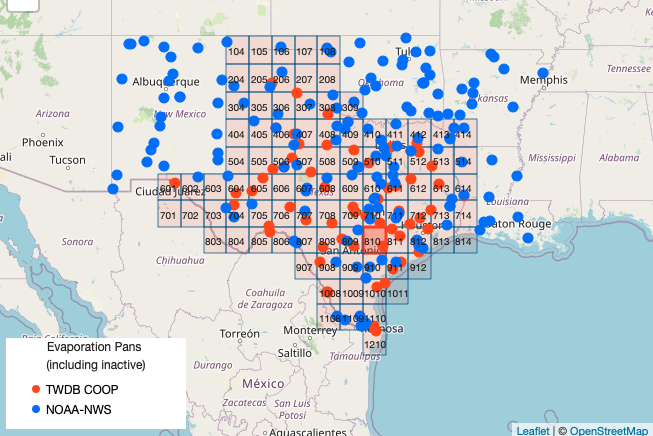
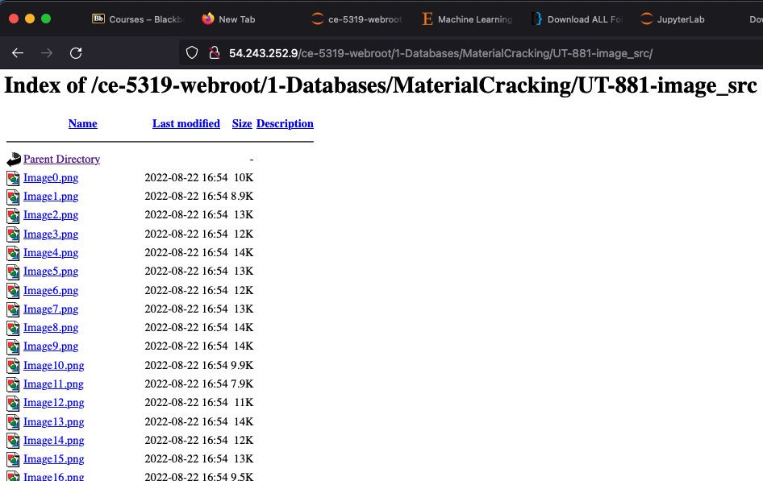

Downloading Remote Data¶
For machine learning to be useful, it needs data, and large quantities (expressed as records in a database - millions of records; expressed as bytes thousands of terabytes). Manual collection of such data for data science is impractical, so we want to automate where practical.
There are a lot of data science blog posts with databases you can download usually as a single compressed file (.zip, .tar, ….); however these examples hide the actual workflow of a data science project. More likely you will have to visit (automated) multiple websites, identify a collection of useful files then get them to your machine for processing. In this section some examples are presented mostly as an archive of potentially useful techniques.
Warning
Good luck if these work for you as is, you will have to tinker until you can automate the process reliably. Be careful with destination directories that you don’t clobber your own file system when doing recursive traverse of a remote website.
Tools for use¶
A few useful modules are requests and wget; there are a few others curl comes to mind. In Jupyter Notebooks downloading single files is relatively straightforward; downloading multiple files is tricky, but the most realistic representation of actual workflow.
For multiple files I resort to operating system calls using various Magic Functions as are illustrated. The examples herein are assuming a Linux (Debian-based) operating system, so Windoze users will have to find equivalents (or use the WSL feature in Windoze)
Example 1 Reading a .CSV file from a Web Server¶
Keep in mind the example herein is about data acquisition. In this example, we DO NOT have control of the remote server.
Background¶
Global warming is a currently popular and hotly (pun intended) debated issue. The usual evidence is temperature data presented as a time series with various temporal correlations to industrial activity and so forth. The increase in the global temperature is not disputed - what it means for society and how to respond is widely disputed.
One possible consequence of warming, regardless of the cause is an expectation that evaportation rates would increase and temperate regions would experience more drought and famine, and firm water yields would drop.
However in a paper by Peterson and others (1995) the authors concluded from analysis of pan evaporation data in various parts of the world, that there has been a downward trend in evaporation at a significance level of 99%. Pan evaporation is driven as much by direct solar radiation (sun shining on water) as by surrounding air temperature.
Global dimming is defined as the decrease in the amounts of solar radiation reaching the surface of the Earth. The by-product of fossil fuels is tiny particles or pollutants which absorb solar energy and reflect back sunlight into space. This phenomenon was first recognized in the year 1950. Scientists believe that since 1950, the sun’s energy reaching Earth has dropped by 9% in Antarctica, 10% in the USA, 16% in parts of Europe and 30% in Russia – putting the overall average drop to be at an enormous 22%. This causes a high risk to our environment.
Aerosols have been found to be the major cause of global dimming. The burning of fossil fuels by industry and internal combustion engines emits by-products such as sulfur dioxide, soot, and ash. These together form particulate pollution—primarily called aerosols. Aerosols act as a precursor to global dimming in the following two ways:
These particle matters enter the atmosphere and directly absorb solar energy and reflect radiation back into space before it reaches the planet’s surface. Water droplets containing these air-borne particles form polluted clouds. These polluted clouds have a heavier and larger number of droplets. These changed properties of the cloud – such clouds are called ‘brown clouds’ – makes them more reflective. Vapors emitted from the planes flying high in the sky called contrails are another cause of heat reflection and related global dimming.
Both global dimming and global warming have been happening all over the world and together they have caused severe changes in the rainfall patterns. It is also believed that it was global dimming behind the 1984 Saharan drought that killed millions of people in sub-Saharan Africa. Scientists believe that despite the cooling effect created by global dimming, the earth’s temperature has increased by more than 1 deg. in the last century.
In Texas, evaporation rates (reported as inches per month) are available from the Texas Water Development Board. https://waterdatafortexas.org/lake-evaporation-rainfall The map below shows the quadrants (grid cells) for which data are tabulated.

Cell ‘911’ is located between Corpus Christi and Houston in the Coastal Plains of Texas. A copy of the dataset downloaded from the Texas Water Development Board is located at http://54.243.252.9/ce-5319-webroot/ce5319jb/lessons/lesson8/all_quads_gross_evaporation.csv
Using naive analysis examine the data for Cell ‘911’ and decide if the conclusions by Peterson and others (1995) are supported by this data.
Getting the Data¶
To analyze these data a first step is to obtain the data. The knowlwdge that the data are arranged in a file with a .csv extension is a clue how to proceede. We will need a module to interface with the remote server, in this example lets use requests , which allows us to make GET and POST requests using the HTTP/HTTPS protocols to interact with web servers. So first we load the module
import requests # Module to process http/https requests
Now we will generate a GET request to the remote http server. I chose to do so using a variable to store the remote URL so I can reuse code in future projects. The GET request (an http/https method) is generated with the requests method get and assigned to an object named rget – the name is arbitrary. Next we extract the file from the rget object and write it to a local file with the name of the remote file - esentially automating the download process. Then we import the pandas module.
remote_url="http://54.243.252.9/ce-5319-webroot/ce5319jb/lessons/lesson8/all_quads_gross_evaporation.csv" # set the url
response = requests.get(remote_url, allow_redirects=True) # get the remote resource, follow imbedded links
open('all_quads_gross_evaporation.csv','wb').write(response.content) # extract from the remote the contents, assign to a local file same name
363498
import pandas as pd # Module to process dataframes
import matplotlib.pyplot
Now we can read the file contents and check its structure, before proceeding.
#evapdf = pd.read_csv("all_quads_gross_evaporation.csv",parse_dates=["YYYY-MM"]) # Read the file as a .CSV assign to a dataframe evapdf
evapdf = pd.read_csv("all_quads_gross_evaporation.csv") # Read the file as a .CSV assign to a dataframe evapdf
evapdf.head() # check structure
| YYYY-MM | 104 | 105 | 106 | 107 | 108 | 204 | 205 | 206 | 207 | ... | 911 | 912 | 1008 | 1009 | 1010 | 1011 | 1108 | 1109 | 1110 | 1210 | |
|---|---|---|---|---|---|---|---|---|---|---|---|---|---|---|---|---|---|---|---|---|---|
| 0 | 1954-01 | 1.80 | 1.80 | 2.02 | 2.24 | 2.24 | 2.34 | 1.89 | 1.80 | 1.99 | ... | 1.42 | 1.30 | 2.50 | 2.42 | 1.94 | 1.29 | 2.59 | 2.49 | 2.22 | 2.27 |
| 1 | 1954-02 | 4.27 | 4.27 | 4.13 | 3.98 | 3.90 | 4.18 | 4.26 | 4.27 | 4.26 | ... | 2.59 | 2.51 | 4.71 | 4.30 | 3.84 | 2.50 | 5.07 | 4.62 | 4.05 | 4.18 |
| 2 | 1954-03 | 4.98 | 4.98 | 4.62 | 4.25 | 4.20 | 5.01 | 4.98 | 4.98 | 4.68 | ... | 3.21 | 3.21 | 6.21 | 6.06 | 5.02 | 3.21 | 6.32 | 6.20 | 5.68 | 5.70 |
| 3 | 1954-04 | 6.09 | 5.94 | 5.94 | 6.07 | 5.27 | 6.31 | 5.98 | 5.89 | 5.72 | ... | 3.83 | 3.54 | 6.45 | 6.25 | 4.92 | 3.54 | 6.59 | 6.44 | 5.88 | 5.95 |
| 4 | 1954-05 | 5.41 | 5.09 | 5.14 | 4.40 | 3.61 | 5.57 | 4.56 | 4.47 | 4.18 | ... | 3.48 | 3.97 | 7.92 | 8.13 | 6.31 | 3.99 | 7.75 | 7.98 | 7.40 | 7.40 |
5 rows × 93 columns
Structure looks like a spreadsheet as expected; lets plot the time series for cell ‘911’
evapdf.plot.line(x='YYYY-MM',y='911') # Plot quadrant 911 evaporation time series
<AxesSubplot:xlabel='YYYY-MM'>
Now we can see that the signal indeed looks like it is going up at its mean value then back down. Lets try a moving average over 12-month windows. The syntax is a bit weird, but it should dampen the high frequency (monthly) part of the signal. Sure enough there is a downaward trend at about month 375, which we recover the date using the index – in this case around 1985.
movingAvg=evapdf['911'].rolling(12, win_type ='boxcar').mean()
movingAvg
movingAvg.plot.line(x='YYYY-MM',y='911')
evapdf['YYYY-MM'][375]
'1985-04'
So now lets split the dataframe at April 1985. Here we will build two objects and can compare them. Notice how we have split into two entire dataframes.
evB485loc = evapdf['YYYY-MM']<'1985-04' # filter before 1985
evB485 = evapdf[evB485loc]
ev85uploc = evapdf['YYYY-MM']>='1985-04' # filter after 1985
ev85up= evapdf[ev85uploc]
print(evB485.head(2))
print(ev85up.head(2))
YYYY-MM 104 105 106 107 108 204 205 206 207 ... 911 \
0 1954-01 1.80 1.80 2.02 2.24 2.24 2.34 1.89 1.80 1.99 ... 1.42
1 1954-02 4.27 4.27 4.13 3.98 3.90 4.18 4.26 4.27 4.26 ... 2.59
912 1008 1009 1010 1011 1108 1109 1110 1210
0 1.30 2.50 2.42 1.94 1.29 2.59 2.49 2.22 2.27
1 2.51 4.71 4.30 3.84 2.50 5.07 4.62 4.05 4.18
[2 rows x 93 columns]
YYYY-MM 104 105 106 107 108 204 205 206 207 ... 911 \
375 1985-04 5.31 6.27 6.75 6.92 4.76 5.32 6.72 6.83 7.04 ... 4.16
376 1985-05 4.80 5.64 5.51 5.47 5.43 4.90 6.62 6.37 6.13 ... 5.87
912 1008 1009 1010 1011 1108 1109 1110 1210
375 4.45 5.26 5.06 4.91 4.41 6.24 5.58 4.81 4.63
376 5.17 5.19 5.66 5.69 5.86 5.63 5.59 5.63 5.71
[2 rows x 93 columns]
Now lets get some simple descriptions of the two objects, and we will ignore thay they are time series.
evB485['911'].describe()
count 375.000000
mean 4.202480
std 1.774273
min 1.260000
25% 2.665000
50% 3.900000
75% 5.455000
max 8.800000
Name: 911, dtype: float64
ev85up['911'].describe()
count 417.000000
mean 4.167458
std 1.676704
min 1.230000
25% 2.680000
50% 4.160000
75% 5.410000
max 9.560000
Name: 911, dtype: float64
If we look at the means, the after 1985 is lower, and the SD about the same, so there is maybe support of the paper claims, but the median has increased while the IQR is practically unchanged. We can produce boxplots from the two objects and see they are different, but not by much. So the conclusion of the paper has support but its pretty weak and hardly statisticlly significant.
evB485['911'].plot.box()
<AxesSubplot:>
ev85up['911'].plot.box()
<AxesSubplot:>
At this point, we would appeal to some kind of hypothesis testing or some other serious statistical analysis tools. For example a non-paramatric test called the mannwhitneyu test is pretty quick to implement
In statistics, the Mann–Whitney U test (also called the Mann–Whitney–Wilcoxon (MWW), Wilcoxon rank-sum test, or Wilcoxon–Mann–Whitney test) is a nonparametric test of the null hypothesis that it is equally likely that a randomly selected value from one population will be less than or greater than a randomly selected value from a second population.
This test can be used to investigate whether two independent samples were selected from populations having the same distribution parameters (in this case mean values).
As usual we need to import necessary tools, in this case scipy.stats. Based on the module name, it looks like a collection of methods (the dot . is the giveaway). The test itself is applied to the two objects, if there is a statistical change in behavior we expect the two collections of records to be different.
from scipy.stats import mannwhitneyu # import a useful non-parametric test
stat, p = mannwhitneyu(evB485['911'],ev85up['911'])
print('statistic=%.3f, p-value at rejection =%.3f' % (stat, p))
if p > 0.05:
print('Difference in Median Values',round(evB485['911'].median()-ev85up['911'].median(),3),'is not significant')
else:
print('Difference in Median Values',round(evB485['911'].median()-ev85up['911'].median(),3),'is SIGNIFICANT')
statistic=78184.500, p-value at rejection =0.500
Difference in Median Values -0.26 is not significant
If there were indeed a 99% significance level, the p-value should have been smaller than 0.05 (two-tailed) and the p-value was quite high. I usually check that I wrote the script by testing he same distribution against itself, I should get a p-value of 0.5. Indeed that’s the case.
stat, p = mannwhitneyu(evB485['911'],evB485['911'])
print('statistic=%.3f, p-value at rejection =%.3f' % (stat, p))
if p > 0.05:
print('Difference in Median Values',round(evB485['911'].median()-evB485['911'].median(),3),'is not significant')
else:
print('Difference in Median Values',round(evB485['911'].median()-evB485['911'].median(),3),'is SIGNIFICANT')
statistic=70312.500, p-value at rejection =0.500
Difference in Median Values 0.0 is not significant
Now lets repeat the analysis but break in 1992 when Clean Air Act rules were slightly relaxed:
evB492loc = evapdf['YYYY-MM']<'1992' # filter before 1992
evB492 = evapdf[evB492loc]
ev92uploc = evapdf['YYYY-MM']>='1992' # filter after 1992
ev92up= evapdf[ev92uploc]
#print(evB492.head())
#print(ev92up.head())
stat, p = mannwhitneyu(evB492['911'],ev92up['911'])
print('statistic=%.3f, p-value at rejection =%.3f' % (stat, p))
if p > 0.05:
print('Difference in Median Values',round(evB492['911'].median()-ev92up['911'].median(),3),'is not significant')
else:
print('Difference in Median Values',round(evB492['911'].median()-ev92up['911'].median(),3),'is SIGNIFICANT')
statistic=72195.000, p-value at rejection =0.083
Difference in Median Values -0.045 is not significant
So even considering the key date of 1992, there is insufficient evidence for the claims (for a single spot in Texas), and one could argue that the claims are confounding – as an FYI this eventually was a controversial paper because other researchers obtained similar results to those examined herein using subsets (by location) of the evaporation data.
Example 2 - Reading a Structured .TXT File from a Web Server¶
This example is functionally the same, just a different file structure.
In this example we will make a contour plot using data in a file at http://54.243.252.9/engr-1330-webroot/8-Labs/Lab07/gridded_data.txt that The data in the file are organized as follows:
160 240
-3.0,-2.0,4.5206310380743785e-06
-2.975,-2.0,5.248940670890073e-06
-2.95,-2.0,6.086973208643232e-06
-2.9250000000000003,-2.0,7.049985780998036e-06
-2.9000000000000004,-2.0,8.155154929062083e-06
... many more rows
The first two entries are the row and column count of a rectangular region that we wish to plot the contours. The remaining rows contain the x-,y-, and z-values. The x and y values are the spatial locations where the z values are known. There are a total of 38,400 records in the file - too big to manually enter.
The plotting package needs all the entries on a grid (dumb, but thats what it needs) so we need to read in the xyz data then manipultes it so that there are three 2D structures X[160][240], Y[160][240], and Z[160][240] these structures get sent to the contour plotting function.
Step 0: Download the data file to your machine!
Our first step is to create space to hold the data, then open the file
#%reset -f # only if necessaryimport requests # Module to process http/https requests
import requests # Module to process http/https requests
remote_url="http://54.243.252.9/engr-1330-webroot/8-Labs/Lab07/gridded_data.txt" # set the url
response = requests.get(remote_url, allow_redirects=True) # get the remote resource, follow imbedded links
localfile = open('gridded_data.txt','wb') # open connection to a local file same name as remote
localfile.write(response.content) # extract from the remote the contents,insert into the local file same name
localfile.close() # close connection to the local file
#### Reading a Data File ####
xyzmatrix = [] # null list to hold contents
xyzfile = open("gridded_data.txt","r") # open a read connection
Next we read the first line, and extract the row and column counts
line1 = (xyzfile.readline().split()) # read just the first line
rowNum = int(line1[0]) # extract row count
colNum = int(line1[1]) # extract column count
Next we read the remaining 38,000 lines
for line in xyzfile: # now read rest of the file, line by line
xyzmatrix.append([float(n) for n in line.strip().split(",")])
So the read is complete, lets close the connection
xyzfile.close()
Now build the structures for plotting, as before we need to allocate space for the data, here we are using a constructor syntax to build matrices of zeros using implied loops.
#### Build 2D Structure for Contour Plot Example ####
xlist = [[0 for j in range(colNum)] for i in range(rowNum)] # null list to hold contents
ylist = [[0 for j in range(colNum)] for i in range(rowNum)] # null list to hold contents
zlist = [[0 for j in range(colNum)] for i in range(rowNum)] # null list to hold contents
Next we will populate the matrices (grids) from the xyzmatrix we just read into the notebook. Notice how we create a counter to keep track of each row of the xyzmatrix and increment the counter as we build the grids.
pointer=0
for irow in range(0,rowNum):
for jcol in range(0,colNum):
xlist[irow][jcol]=(xyzmatrix[pointer][0])
ylist[irow][jcol]=(xyzmatrix[pointer][1])
zlist[irow][jcol]=(xyzmatrix[pointer][2])
pointer += 1
Now finally the plot - using a package called matplotlib which we will study later in the course. For now use it as shown.
#### Build the Plot #####
import matplotlib
fig, ax = matplotlib.pyplot.subplots()
CS = ax.contour(xlist, ylist, zlist, levels = 7)
ax.clabel(CS, inline=2, fontsize=10)
ax.set_title('Contour Plot from Gridded Data File')
################################
Text(0.5, 1.0, 'Contour Plot from Gridded Data File')
References (for this example)¶
Example 3 - Reading Contents of a Web Server Directory¶
This example will read the contents of a web directory that contains a lot of files we wish to process.
Later in the course we will process images using a Neural Network to make a surface crack detection (classification) engine. Such a problem will consist of a collection of images (multiple files) a truth-table with image name and its expert (human) determination of classification (cracked specimen or not).
The figure below shows the directory of interest, with a collection of many files (Image#.png) and there is a single .csv file with the truth table.

One would find right-click/download file-by-file extremely annoying to get a copy to your local computer. Instead we can automate the process using wget and Jupyter magic functions.
Warning
Danger Willy Robinson! We are about to do hard to stop processing. Go slowly on your own machine. You will need this database later on in the class, so pay attention!
# magic function to check my current working directory (that the script will run)
%pwd # notice no space between % and pwd
'/home/sensei/ce-5319-webroot/ce5319jb/lessons/lesson8'
# Delete the directory if it already exists BE CAREFUL
# This code is here so the notebook resets during Jupyter Book builds
%rm -rf ./MyImageFiles/
%rm -rf wget-log*
# magic function to create a destination to store the files into
%mkdir MyImageFiles # name the directory what you wish, locate it somewhere you can find
# In the example, its just being stored in the lesson directory, which you probably don't have
# magic function to list the contents of my current directory
%ls
DatabaseStructure.png concreteData.xls
EvapMap.png datatypes.ipynb
EvaporationAnalysis.html downloading.ipynb
HighestGrossingMovies.bak.csv exploratorydataanalysis.ipynb
HighestGrossingMovies.csv exploratorydataanalysisvisual.ipynb
MyImageFiles/ gridded_data.txt
Peterson-Nature1995-377.pdf gridded_data.txt.bak
all_quads_gross_evaporation.csv lesson8.ipynb
all_quads_net_evaporation.csv mixturedatatype.png
cat784.png pip-corner-sumps.txt
censoreddatatype.png quad-list.png
concreteData.csv top_movies.csv
Notice the MyImageFiles directory, this is where we will download to (the destination)!
# magic function to show contents of MyImageFiles (there will only be two system files)
# . == self and ..= parent directories.
%ls -la ./MyImageFiles/
total 8
drwxrwxr-x 2 sensei sensei 4096 Nov 3 22:35 ./
drwxrwxr-x 4 sensei sensei 4096 Nov 3 22:35 ../
Now we will connect to the remote computer and try to get the files - this takes awhile. What will happen is the wget tool is invoked with a bunch of settings:
nd == No directories, don’t maintain directory structure, just get files
nH == No host, dont bother with recording hostname information
–no-parent == Do not ascend the parent directory
–reject == Discard files with named pattern, in this case index files
-e robots=off == Disable the robot.txt default file instructions
–recursive == descend the directory structure from supplied starting directory
-P ./MyImageFiles == relative or absolute path to store results
http://54.243.252.9/ce-5319-webroot/1-Databases/MaterialCracking/UT-881-image_src/ == the URL to attempt to copy, this defines the starting directory
Warning
There is a lot of output generated - I did not figure out how to suppress, but it is essentially a transcript of the transactions between the server and your computer.
Scroll past this to continue the lesson
####################################
# Here is the directory "get" call #
####################################
! wget -nd -nH --no-parent --reject "index.html*" -e robots=off --recursive -P ./MyImageFiles http://54.243.252.9/ce-5319-webroot/1-Databases/MaterialCracking/UT-881-image_src/
#
#
#
#
--2022-11-03 22:35:51-- http://54.243.252.9/ce-5319-webroot/1-Databases/MaterialCracking/UT-881-image_src/
Connecting to 54.243.252.9:80...
connected.
HTTP request sent, awaiting response...
200 OK
Length: unspecified [text/html]
Saving to: ‘./MyImageFiles/index.html.tmp’
index.html.tmp [<=> ] 0 --.-KB/s
index.html.tmp [ <=> ] 176.39K --.-KB/s in 0.1s
2022-11-03 22:35:51 (1.21 MB/s) - ‘./MyImageFiles/index.html.tmp’ saved [180622]
Removing ./MyImageFiles/index.html.tmp since it should be rejected.
--2022-11-03 22:35:51-- http://54.243.252.9/ce-5319-webroot/1-Databases/MaterialCracking/UT-881-image_src/?C=N;O=D
Reusing existing connection to 54.243.252.9:80.
HTTP request sent, awaiting response...
200 OK
Length: unspecified [text/html]
Saving to: ‘./MyImageFiles/index.html?C=N;O=D.tmp’
index.html?C=N;O=D. [<=> ] 0 --.-KB/s
index.html?C=N;O=D. [ <=> ] 176.39K --.-KB/s in 0.007s
2022-11-03 22:35:51 (24.0 MB/s) - ‘./MyImageFiles/index.html?C=N;O=D.tmp’ saved [180622]
Removing ./MyImageFiles/index.html?C=N;O=D.tmp since it should be rejected.
--2022-11-03 22:35:51-- http://54.243.252.9/ce-5319-webroot/1-Databases/MaterialCracking/UT-881-image_src/?C=M;O=A
Reusing existing connection to 54.243.252.9:80.
HTTP request sent, awaiting response...
200 OK
Length: unspecified [text/html]
Saving to: ‘./MyImageFiles/index.html?C=M;O=A.tmp’
index.html?C=M;O=A. [<=> ] 0 --.-KB/s
index.html?C=M;O=A. [ <=> ] 176.39K --.-KB/s in 0.007s
2022-11-03 22:35:51 (24.3 MB/s) - ‘./MyImageFiles/index.html?C=M;O=A.tmp’ saved [180622]
Removing ./MyImageFiles/index.html?C=M;O=A.tmp since it should be rejected.
--2022-11-03 22:35:51-- http://54.243.252.9/ce-5319-webroot/1-Databases/MaterialCracking/UT-881-image_src/?C=S;O=A
Reusing existing connection to 54.243.252.9:80.
HTTP request sent, awaiting response...
200 OK
Length: unspecified [text/html]
Saving to: ‘./MyImageFiles/index.html?C=S;O=A.tmp’
index.html?C=S;O=A. [<=> ] 0 --.-KB/s
index.html?C=S;O=A. [ <=> ] 176.39K --.-KB/s in 0.006s
2022-11-03 22:35:51 (26.9 MB/s) - ‘./MyImageFiles/index.html?C=S;O=A.tmp’ saved [180622]
Removing ./MyImageFiles/index.html?C=S;O=A.tmp since it should be rejected.
--2022-11-03 22:35:51-- http://54.243.252.9/ce-5319-webroot/1-Databases/MaterialCracking/UT-881-image_src/?C=D;O=A
Reusing existing connection to 54.243.252.9:80.
HTTP request sent, awaiting response...
200 OK
Length: unspecified [text/html]
Saving to: ‘./MyImageFiles/index.html?C=D;O=A.tmp’
index.html?C=D;O=A. [<=> ] 0 --.-KB/s
index.html?C=D;O=A. [ <=> ] 176.39K --.-KB/s in 0.006s
2022-11-03 22:35:51 (29.0 MB/s) - ‘./MyImageFiles/index.html?C=D;O=A.tmp’ saved [180622]
Removing ./MyImageFiles/index.html?C=D;O=A.tmp since it should be rejected.
--2022-11-03 22:35:51-- http://54.243.252.9/ce-5319-webroot/1-Databases/MaterialCracking/UT-881-image_src/Image0.png
Reusing existing connection to 54.243.252.9:80.
HTTP request sent, awaiting response...
200 OK
Length: 10616 (10K) [image/png]
Saving to: ‘./MyImageFiles/Image0.png’
Image0.png 0%[ ] 0 --.-KB/s
Image0.png 100%[===================>] 10.37K --.-KB/s in 0s
2022-11-03 22:35:51 (46.8 MB/s) - ‘./MyImageFiles/Image0.png’ saved [10616/10616]
--2022-11-03 22:35:51-- http://54.243.252.9/ce-5319-webroot/1-Databases/MaterialCracking/UT-881-image_src/Image1.png
Reusing existing connection to 54.243.252.9:80.
HTTP request sent, awaiting response...
200 OK
Length: 9085 (8.9K) [image/png]
Saving to: ‘./MyImageFiles/Image1.png’
Image1.png 0%[ ] 0 --.-KB/s
Image1.png 100%[===================>] 8.87K --.-KB/s in 0s
2022-11-03 22:35:51 (34.0 MB/s) - ‘./MyImageFiles/Image1.png’ saved [9085/9085]
--2022-11-03 22:35:51-- http://54.243.252.9/ce-5319-webroot/1-Databases/MaterialCracking/UT-881-image_src/Image2.png
Reusing existing connection to 54.243.252.9:80.
HTTP request sent, awaiting response...
200 OK
Length: 12902 (13K) [image/png]
Saving to: ‘./MyImageFiles/Image2.png’
Image2.png 0%[ ] 0 --.-KB/s
Image2.png 100%[===================>] 12.60K --.-KB/s in 0s
2022-11-03 22:35:52 (50.4 MB/s) - ‘./MyImageFiles/Image2.png’ saved [12902/12902]
--2022-11-03 22:35:52-- http://54.243.252.9/ce-5319-webroot/1-Databases/MaterialCracking/UT-881-image_src/Image3.png
Reusing existing connection to 54.243.252.9:80.
HTTP request sent, awaiting response...
200 OK
Length: 11793 (12K) [image/png]
Saving to: ‘./MyImageFiles/Image3.png’
Image3.png 0%[ ] 0 --.-KB/s
Image3.png 100%[===================>] 11.52K --.-KB/s in 0s
2022-11-03 22:35:52 (46.6 MB/s) - ‘./MyImageFiles/Image3.png’ saved [11793/11793]
--2022-11-03 22:35:52-- http://54.243.252.9/ce-5319-webroot/1-Databases/MaterialCracking/UT-881-image_src/Image4.png
Reusing existing connection to 54.243.252.9:80.
HTTP request sent, awaiting response...
200 OK
Length: 14041 (14K) [image/png]
Saving to: ‘./MyImageFiles/Image4.png’
Image4.png 0%[ ] 0 --.-KB/s
Image4.png 100%[===================>] 13.71K --.-KB/s in 0s
2022-11-03 22:35:52 (53.0 MB/s) - ‘./MyImageFiles/Image4.png’ saved [14041/14041]
--2022-11-03 22:35:52-- http://54.243.252.9/ce-5319-webroot/1-Databases/MaterialCracking/UT-881-image_src/Image5.png
Reusing existing connection to 54.243.252.9:80.
HTTP request sent, awaiting response...
200 OK
Length: 12954 (13K) [image/png]
Saving to: ‘./MyImageFiles/Image5.png’
Image5.png 0%[ ] 0 --.-KB/s
Image5.png 100%[===================>] 12.65K --.-KB/s in 0s
2022-11-03 22:35:52 (52.1 MB/s) - ‘./MyImageFiles/Image5.png’ saved [12954/12954]
--2022-11-03 22:35:52-- http://54.243.252.9/ce-5319-webroot/1-Databases/MaterialCracking/UT-881-image_src/Image6.png
Reusing existing connection to 54.243.252.9:80.
HTTP request sent, awaiting response...
200 OK
Length: 11875 (12K) [image/png]
Saving to: ‘./MyImageFiles/Image6.png’
Image6.png 0%[ ] 0 --.-KB/s
Image6.png 100%[===================>] 11.60K --.-KB/s in 0s
2022-11-03 22:35:52 (46.8 MB/s) - ‘./MyImageFiles/Image6.png’ saved [11875/11875]
--2022-11-03 22:35:52-- http://54.243.252.9/ce-5319-webroot/1-Databases/MaterialCracking/UT-881-image_src/Image7.png
Reusing existing connection to 54.243.252.9:80.
HTTP request sent, awaiting response...
200 OK
Length: 13344 (13K) [image/png]
Saving to: ‘./MyImageFiles/Image7.png’
Image7.png 0%[ ] 0 --.-KB/s
Image7.png 100%[===================>] 13.03K --.-KB/s in 0s
2022-11-03 22:35:52 (45.8 MB/s) - ‘./MyImageFiles/Image7.png’ saved [13344/13344]
--2022-11-03 22:35:52-- http://54.243.252.9/ce-5319-webroot/1-Databases/MaterialCracking/UT-881-image_src/Image8.png
Reusing existing connection to 54.243.252.9:80.
HTTP request sent, awaiting response...
200 OK
Length: 14396 (14K) [image/png]
Saving to: ‘./MyImageFiles/Image8.png’
Image8.png 0%[ ] 0 --.-KB/s
Image8.png 100%[===================>] 14.06K --.-KB/s in 0s
2022-11-03 22:35:52 (35.4 MB/s) - ‘./MyImageFiles/Image8.png’ saved [14396/14396]
--2022-11-03 22:35:52-- http://54.243.252.9/ce-5319-webroot/1-Databases/MaterialCracking/UT-881-image_src/Image9.png
Reusing existing connection to 54.243.252.9:80.
HTTP request sent, awaiting response... 200 OK
Length: 13947 (14K) [image/png]
Saving to: ‘./MyImageFiles/Image9.png’
Image9.png 0%[ ] 0 --.-KB/s
Image9.png 100%[===================>] 13.62K --.-KB/s in 0s
2022-11-03 22:35:52 (36.1 MB/s) - ‘./MyImageFiles/Image9.png’ saved [13947/13947]
--2022-11-03 22:35:52-- http://54.243.252.9/ce-5319-webroot/1-Databases/MaterialCracking/UT-881-image_src/Image10.png
Reusing existing connection to 54.243.252.9:80.
HTTP request sent, awaiting response...
200 OK
Length: 10158 (9.9K) [image/png]
Saving to: ‘./MyImageFiles/Image10.png’
Image10.png 0%[ ] 0 --.-KB/s
Image10.png 100%[===================>] 9.92K --.-KB/s in 0s
2022-11-03 22:35:52 (28.9 MB/s) - ‘./MyImageFiles/Image10.png’ saved [10158/10158]
--2022-11-03 22:35:52-- http://54.243.252.9/ce-5319-webroot/1-Databases/MaterialCracking/UT-881-image_src/Image11.png
Reusing existing connection to 54.243.252.9:80.
HTTP request sent, awaiting response...
200 OK
Length: 8128 (7.9K) [image/png]
Saving to: ‘./MyImageFiles/Image11.png’
Image11.png 0%[ ] 0 --.-KB/s
Image11.png 100%[===================>] 7.94K --.-KB/s in 0s
2022-11-03 22:35:52 (51.8 MB/s) - ‘./MyImageFiles/Image11.png’ saved [8128/8128]
--2022-11-03 22:35:52-- http://54.243.252.9/ce-5319-webroot/1-Databases/MaterialCracking/UT-881-image_src/Image12.png
Reusing existing connection to 54.243.252.9:80.
HTTP request sent, awaiting response...
200 OK
Length: 10822 (11K) [image/png]
Saving to: ‘./MyImageFiles/Image12.png’
Image12.png 0%[ ] 0 --.-KB/s
Image12.png 100%[===================>] 10.57K --.-KB/s in 0s
2022-11-03 22:35:52 (40.0 MB/s) - ‘./MyImageFiles/Image12.png’ saved [10822/10822]
--2022-11-03 22:35:52-- http://54.243.252.9/ce-5319-webroot/1-Databases/MaterialCracking/UT-881-image_src/Image13.png
Reusing existing connection to 54.243.252.9:80.
HTTP request sent, awaiting response...
200 OK
Length: 13872 (14K) [image/png]
Saving to: ‘./MyImageFiles/Image13.png’
Image13.png 0%[ ] 0 --.-KB/s
Image13.png 100%[===================>] 13.55K --.-KB/s in 0s
2022-11-03 22:35:52 (46.1 MB/s) - ‘./MyImageFiles/Image13.png’ saved [13872/13872]
--2022-11-03 22:35:52-- http://54.243.252.9/ce-5319-webroot/1-Databases/MaterialCracking/UT-881-image_src/Image14.png
Reusing existing connection to 54.243.252.9:80.
HTTP request sent, awaiting response...
200 OK
Length: 12450 (12K) [image/png]
Saving to: ‘./MyImageFiles/Image14.png’
Image14.png 0%[ ] 0 --.-KB/s
Image14.png 100%[===================>] 12.16K --.-KB/s in 0s
2022-11-03 22:35:52 (54.2 MB/s) - ‘./MyImageFiles/Image14.png’ saved [12450/12450]
--2022-11-03 22:35:52-- http://54.243.252.9/ce-5319-webroot/1-Databases/MaterialCracking/UT-881-image_src/Image15.png
Reusing existing connection to 54.243.252.9:80.
HTTP request sent, awaiting response...
200 OK
Length: 13255 (13K) [image/png]
Saving to: ‘./MyImageFiles/Image15.png’
Image15.png 0%[ ] 0 --.-KB/s
Image15.png 100%[===================>] 12.94K --.-KB/s in 0s
2022-11-03 22:35:52 (49.4 MB/s) - ‘./MyImageFiles/Image15.png’ saved [13255/13255]
--2022-11-03 22:35:52-- http://54.243.252.9/ce-5319-webroot/1-Databases/MaterialCracking/UT-881-image_src/Image16.png
Reusing existing connection to 54.243.252.9:80.
HTTP request sent, awaiting response...
200 OK
Length: 9766 (9.5K) [image/png]
Saving to: ‘./MyImageFiles/Image16.png’
Image16.png 0%[ ] 0 --.-KB/s
Image16.png 100%[===================>] 9.54K --.-KB/s in 0s
2022-11-03 22:35:52 (35.5 MB/s) - ‘./MyImageFiles/Image16.png’ saved [9766/9766]
--2022-11-03 22:35:52-- http://54.243.252.9/ce-5319-webroot/1-Databases/MaterialCracking/UT-881-image_src/Image17.png
Reusing existing connection to 54.243.252.9:80.
HTTP request sent, awaiting response...
200 OK
Length: 8896 (8.7K) [image/png]
Saving to: ‘./MyImageFiles/Image17.png’
Image17.png 0%[ ] 0 --.-KB/s
Image17.png 100%[===================>] 8.69K --.-KB/s in 0s
2022-11-03 22:35:52 (37.0 MB/s) - ‘./MyImageFiles/Image17.png’ saved [8896/8896]
--2022-11-03 22:35:52-- http://54.243.252.9/ce-5319-webroot/1-Databases/MaterialCracking/UT-881-image_src/Image18.png
Reusing existing connection to 54.243.252.9:80.
HTTP request sent, awaiting response...
200 OK
Length: 14960 (15K) [image/png]
Saving to: ‘./MyImageFiles/Image18.png’
Image18.png 0%[ ] 0 --.-KB/s
Image18.png 100%[===================>] 14.61K --.-KB/s in 0s
2022-11-03 22:35:52 (53.2 MB/s) - ‘./MyImageFiles/Image18.png’ saved [14960/14960]
--2022-11-03 22:35:52-- http://54.243.252.9/ce-5319-webroot/1-Databases/MaterialCracking/UT-881-image_src/Image19.png
Reusing existing connection to 54.243.252.9:80.
HTTP request sent, awaiting response...
200 OK
Length: 10425 (10K) [image/png]
Saving to: ‘./MyImageFiles/Image19.png’
Image19.png 0%[ ] 0 --.-KB/s
Image19.png 100%[===================>] 10.18K --.-KB/s in 0s
2022-11-03 22:35:52 (25.6 MB/s) - ‘./MyImageFiles/Image19.png’ saved [10425/10425]
--2022-11-03 22:35:52-- http://54.243.252.9/ce-5319-webroot/1-Databases/MaterialCracking/UT-881-image_src/Image20.png
Reusing existing connection to 54.243.252.9:80.
HTTP request sent, awaiting response... 200 OK
Length: 10569 (10K) [image/png]
Saving to: ‘./MyImageFiles/Image20.png’
Image20.png 0%[ ] 0 --.-KB/s
Image20.png 100%[===================>] 10.32K --.-KB/s in 0s
2022-11-03 22:35:52 (30.7 MB/s) - ‘./MyImageFiles/Image20.png’ saved [10569/10569]
--2022-11-03 22:35:52-- http://54.243.252.9/ce-5319-webroot/1-Databases/MaterialCracking/UT-881-image_src/Image21.png
Reusing existing connection to 54.243.252.9:80.
HTTP request sent, awaiting response...
200 OK
Length: 14137 (14K) [image/png]
Saving to: ‘./MyImageFiles/Image21.png’
Image21.png 0%[ ] 0 --.-KB/s
Image21.png 100%[===================>] 13.81K --.-KB/s in 0s
2022-11-03 22:35:52 (57.5 MB/s) - ‘./MyImageFiles/Image21.png’ saved [14137/14137]
--2022-11-03 22:35:52-- http://54.243.252.9/ce-5319-webroot/1-Databases/MaterialCracking/UT-881-image_src/Image22.png
Reusing existing connection to 54.243.252.9:80.
HTTP request sent, awaiting response...
200 OK
Length: 12424 (12K) [image/png]
Saving to: ‘./MyImageFiles/Image22.png’
Image22.png 0%[ ] 0 --.-KB/s
Image22.png 100%[===================>] 12.13K --.-KB/s in 0s
2022-11-03 22:35:53 (53.0 MB/s) - ‘./MyImageFiles/Image22.png’ saved [12424/12424]
--2022-11-03 22:35:53-- http://54.243.252.9/ce-5319-webroot/1-Databases/MaterialCracking/UT-881-image_src/Image23.png
Reusing existing connection to 54.243.252.9:80.
HTTP request sent, awaiting response...
200 OK
Length: 14645 (14K) [image/png]
Saving to: ‘./MyImageFiles/Image23.png’
Image23.png 0%[ ] 0 --.-KB/s
Image23.png 100%[===================>] 14.30K --.-KB/s in 0s
2022-11-03 22:35:53 (39.3 MB/s) - ‘./MyImageFiles/Image23.png’ saved [14645/14645]
--2022-11-03 22:35:53-- http://54.243.252.9/ce-5319-webroot/1-Databases/MaterialCracking/UT-881-image_src/Image24.png
Reusing existing connection to 54.243.252.9:80.
HTTP request sent, awaiting response...
200 OK
Length: 14440 (14K) [image/png]
Saving to: ‘./MyImageFiles/Image24.png’
Image24.png 0%[ ] 0 --.-KB/s
Image24.png 100%[===================>] 14.10K --.-KB/s in 0s
2022-11-03 22:35:53 (54.4 MB/s) - ‘./MyImageFiles/Image24.png’ saved [14440/14440]
--2022-11-03 22:35:53-- http://54.243.252.9/ce-5319-webroot/1-Databases/MaterialCracking/UT-881-image_src/Image25.png
Reusing existing connection to 54.243.252.9:80.
HTTP request sent, awaiting response...
200 OK
Length: 12926 (13K) [image/png]
Saving to: ‘./MyImageFiles/Image25.png’
Image25.png 0%[ ] 0 --.-KB/s
Image25.png 100%[===================>] 12.62K --.-KB/s in 0s
2022-11-03 22:35:53 (46.2 MB/s) - ‘./MyImageFiles/Image25.png’ saved [12926/12926]
--2022-11-03 22:35:53-- http://54.243.252.9/ce-5319-webroot/1-Databases/MaterialCracking/UT-881-image_src/Image26.png
Reusing existing connection to 54.243.252.9:80.
HTTP request sent, awaiting response...
200 OK
Length: 11168 (11K) [image/png]
Saving to: ‘./MyImageFiles/Image26.png’
Image26.png 0%[ ] 0 --.-KB/s
Image26.png 100%[===================>] 10.91K --.-KB/s in 0s
2022-11-03 22:35:53 (43.8 MB/s) - ‘./MyImageFiles/Image26.png’ saved [11168/11168]
--2022-11-03 22:35:53-- http://54.243.252.9/ce-5319-webroot/1-Databases/MaterialCracking/UT-881-image_src/Image27.png
Reusing existing connection to 54.243.252.9:80.
HTTP request sent, awaiting response...
200 OK
Length: 14174 (14K) [image/png]
Saving to: ‘./MyImageFiles/Image27.png’
Image27.png 0%[ ] 0 --.-KB/s
Image27.png 100%[===================>] 13.84K --.-KB/s in 0s
2022-11-03 22:35:53 (47.9 MB/s) - ‘./MyImageFiles/Image27.png’ saved [14174/14174]
--2022-11-03 22:35:53-- http://54.243.252.9/ce-5319-webroot/1-Databases/MaterialCracking/UT-881-image_src/Image28.png
Reusing existing connection to 54.243.252.9:80.
HTTP request sent, awaiting response...
200 OK
Length: 14281 (14K) [image/png]
Saving to: ‘./MyImageFiles/Image28.png’
Image28.png 0%[ ] 0 --.-KB/s
Image28.png 100%[===================>] 13.95K --.-KB/s in 0s
2022-11-03 22:35:53 (47.5 MB/s) - ‘./MyImageFiles/Image28.png’ saved [14281/14281]
--2022-11-03 22:35:53-- http://54.243.252.9/ce-5319-webroot/1-Databases/MaterialCracking/UT-881-image_src/Image29.png
Reusing existing connection to 54.243.252.9:80.
HTTP request sent, awaiting response...
200 OK
Length: 13607 (13K) [image/png]
Saving to: ‘./MyImageFiles/Image29.png’
Image29.png 0%[ ] 0 --.-KB/s
Image29.png 100%[===================>] 13.29K --.-KB/s in 0s
2022-11-03 22:35:53 (49.3 MB/s) - ‘./MyImageFiles/Image29.png’ saved [13607/13607]
--2022-11-03 22:35:53-- http://54.243.252.9/ce-5319-webroot/1-Databases/MaterialCracking/UT-881-image_src/Image30.png
Reusing existing connection to 54.243.252.9:80.
HTTP request sent, awaiting response...
200 OK
Length: 11020 (11K) [image/png]
Saving to: ‘./MyImageFiles/Image30.png’
Image30.png 0%[ ] 0 --.-KB/s
Image30.png 100%[===================>] 10.76K --.-KB/s in 0s
2022-11-03 22:35:53 (32.1 MB/s) - ‘./MyImageFiles/Image30.png’ saved [11020/11020]
--2022-11-03 22:35:53-- http://54.243.252.9/ce-5319-webroot/1-Databases/MaterialCracking/UT-881-image_src/Image31.png
Reusing existing connection to 54.243.252.9:80.
HTTP request sent, awaiting response... 200 OK
Length: 13757 (13K) [image/png]
Saving to: ‘./MyImageFiles/Image31.png’
Image31.png 0%[ ] 0 --.-KB/s
Image31.png 100%[===================>] 13.43K --.-KB/s in 0s
2022-11-03 22:35:53 (43.6 MB/s) - ‘./MyImageFiles/Image31.png’ saved [13757/13757]
--2022-11-03 22:35:53-- http://54.243.252.9/ce-5319-webroot/1-Databases/MaterialCracking/UT-881-image_src/Image32.png
Reusing existing connection to 54.243.252.9:80.
HTTP request sent, awaiting response...
200 OK
Length: 15072 (15K) [image/png]
Saving to: ‘./MyImageFiles/Image32.png’
Image32.png 0%[ ] 0 --.-KB/s
Image32.png 100%[===================>] 14.72K --.-KB/s in 0s
2022-11-03 22:35:53 (37.8 MB/s) - ‘./MyImageFiles/Image32.png’ saved [15072/15072]
--2022-11-03 22:35:53-- http://54.243.252.9/ce-5319-webroot/1-Databases/MaterialCracking/UT-881-image_src/Image33.png
Reusing existing connection to 54.243.252.9:80.
HTTP request sent, awaiting response...
200 OK
Length: 12381 (12K) [image/png]
Saving to: ‘./MyImageFiles/Image33.png’
Image33.png 0%[ ] 0 --.-KB/s
Image33.png 100%[===================>] 12.09K --.-KB/s in 0s
2022-11-03 22:35:53 (39.0 MB/s) - ‘./MyImageFiles/Image33.png’ saved [12381/12381]
--2022-11-03 22:35:53-- http://54.243.252.9/ce-5319-webroot/1-Databases/MaterialCracking/UT-881-image_src/Image34.png
Reusing existing connection to 54.243.252.9:80.
HTTP request sent, awaiting response...
200 OK
Length: 12600 (12K) [image/png]
Saving to: ‘./MyImageFiles/Image34.png’
Image34.png 0%[ ] 0 --.-KB/s
Image34.png 100%[===================>] 12.30K --.-KB/s in 0s
2022-11-03 22:35:53 (39.6 MB/s) - ‘./MyImageFiles/Image34.png’ saved [12600/12600]
--2022-11-03 22:35:53-- http://54.243.252.9/ce-5319-webroot/1-Databases/MaterialCracking/UT-881-image_src/Image35.png
Reusing existing connection to 54.243.252.9:80.
HTTP request sent, awaiting response...
200 OK
Length: 12181 (12K) [image/png]
Saving to: ‘./MyImageFiles/Image35.png’
Image35.png 0%[ ] 0 --.-KB/s
Image35.png 100%[===================>] 11.90K --.-KB/s in 0s
2022-11-03 22:35:53 (38.9 MB/s) - ‘./MyImageFiles/Image35.png’ saved [12181/12181]
--2022-11-03 22:35:53-- http://54.243.252.9/ce-5319-webroot/1-Databases/MaterialCracking/UT-881-image_src/Image36.png
Reusing existing connection to 54.243.252.9:80.
HTTP request sent, awaiting response...
200 OK
Length: 13128 (13K) [image/png]
Saving to: ‘./MyImageFiles/Image36.png’
Image36.png 0%[ ] 0 --.-KB/s
Image36.png 100%[===================>] 12.82K --.-KB/s in 0s
2022-11-03 22:35:53 (41.0 MB/s) - ‘./MyImageFiles/Image36.png’ saved [13128/13128]
--2022-11-03 22:35:53-- http://54.243.252.9/ce-5319-webroot/1-Databases/MaterialCracking/UT-881-image_src/Image37.png
Reusing existing connection to 54.243.252.9:80.
HTTP request sent, awaiting response...
200 OK
Length: 14504 (14K) [image/png]
Saving to: ‘./MyImageFiles/Image37.png’
Image37.png 0%[ ] 0 --.-KB/s
Image37.png 100%[===================>] 14.16K --.-KB/s in 0s
2022-11-03 22:35:53 (60.5 MB/s) - ‘./MyImageFiles/Image37.png’ saved [14504/14504]
--2022-11-03 22:35:53-- http://54.243.252.9/ce-5319-webroot/1-Databases/MaterialCracking/UT-881-image_src/Image38.png
Reusing existing connection to 54.243.252.9:80.
HTTP request sent, awaiting response...
200 OK
Length: 15284 (15K) [image/png]
Saving to: ‘./MyImageFiles/Image38.png’
Image38.png 0%[ ] 0 --.-KB/s
Image38.png 100%[===================>] 14.93K --.-KB/s in 0s
2022-11-03 22:35:53 (47.4 MB/s) - ‘./MyImageFiles/Image38.png’ saved [15284/15284]
--2022-11-03 22:35:53-- http://54.243.252.9/ce-5319-webroot/1-Databases/MaterialCracking/UT-881-image_src/Image39.png
Reusing existing connection to 54.243.252.9:80.
HTTP request sent, awaiting response...
200 OK
Length: 10358 (10K) [image/png]
Saving to: ‘./MyImageFiles/Image39.png’
Image39.png 0%[ ] 0 --.-KB/s
Image39.png 100%[===================>] 10.12K --.-KB/s in 0s
2022-11-03 22:35:53 (42.0 MB/s) - ‘./MyImageFiles/Image39.png’ saved [10358/10358]
--2022-11-03 22:35:53-- http://54.243.252.9/ce-5319-webroot/1-Databases/MaterialCracking/UT-881-image_src/Image40.png
Reusing existing connection to 54.243.252.9:80.
HTTP request sent, awaiting response...
200 OK
Length: 15472 (15K) [image/png]
Saving to: ‘./MyImageFiles/Image40.png’
Image40.png 0%[ ] 0 --.-KB/s
Image40.png 100%[===================>] 15.11K --.-KB/s in 0s
2022-11-03 22:35:53 (61.4 MB/s) - ‘./MyImageFiles/Image40.png’ saved [15472/15472]
--2022-11-03 22:35:53-- http://54.243.252.9/ce-5319-webroot/1-Databases/MaterialCracking/UT-881-image_src/Image41.png
Reusing existing connection to 54.243.252.9:80.
HTTP request sent, awaiting response...
200 OK
Length: 10277 (10K) [image/png]
Saving to: ‘./MyImageFiles/Image41.png’
Image41.png 0%[ ] 0 --.-KB/s
Image41.png 100%[===================>] 10.04K --.-KB/s in 0s
2022-11-03 22:35:53 (36.9 MB/s) - ‘./MyImageFiles/Image41.png’ saved [10277/10277]
--2022-11-03 22:35:53-- http://54.243.252.9/ce-5319-webroot/1-Databases/MaterialCracking/UT-881-image_src/Image42.png
Reusing existing connection to 54.243.252.9:80.
HTTP request sent, awaiting response...
200 OK
Length: 12949 (13K) [image/png]
Saving to: ‘./MyImageFiles/Image42.png’
Image42.png 0%[ ] 0 --.-KB/s
Image42.png 100%[===================>] 12.65K --.-KB/s in 0s
2022-11-03 22:35:53 (40.5 MB/s) - ‘./MyImageFiles/Image42.png’ saved [12949/12949]
--2022-11-03 22:35:53-- http://54.243.252.9/ce-5319-webroot/1-Databases/MaterialCracking/UT-881-image_src/Image43.png
Reusing existing connection to 54.243.252.9:80.
HTTP request sent, awaiting response... 200 OK
Length: 14135 (14K) [image/png]
Saving to: ‘./MyImageFiles/Image43.png’
Image43.png 0%[ ] 0 --.-KB/s
Image43.png 100%[===================>] 13.80K --.-KB/s in 0s
2022-11-03 22:35:54 (44.1 MB/s) - ‘./MyImageFiles/Image43.png’ saved [14135/14135]
--2022-11-03 22:35:54-- http://54.243.252.9/ce-5319-webroot/1-Databases/MaterialCracking/UT-881-image_src/Image44.png
Reusing existing connection to 54.243.252.9:80.
HTTP request sent, awaiting response... 200 OK
Length: 13537 (13K) [image/png]
Saving to: ‘./MyImageFiles/Image44.png’
Image44.png 0%[ ] 0 --.-KB/s
Image44.png 100%[===================>] 13.22K --.-KB/s in 0.001s
2022-11-03 22:35:54 (24.6 MB/s) - ‘./MyImageFiles/Image44.png’ saved [13537/13537]
--2022-11-03 22:35:54-- http://54.243.252.9/ce-5319-webroot/1-Databases/MaterialCracking/UT-881-image_src/Image45.png
Reusing existing connection to 54.243.252.9:80.
HTTP request sent, awaiting response...
200 OK
Length: 14427 (14K) [image/png]
Saving to: ‘./MyImageFiles/Image45.png’
Image45.png 0%[ ] 0 --.-KB/s
Image45.png 100%[===================>] 14.09K --.-KB/s in 0s
2022-11-03 22:35:54 (42.1 MB/s) - ‘./MyImageFiles/Image45.png’ saved [14427/14427]
--2022-11-03 22:35:54-- http://54.243.252.9/ce-5319-webroot/1-Databases/MaterialCracking/UT-881-image_src/Image46.png
Reusing existing connection to 54.243.252.9:80.
HTTP request sent, awaiting response...
200 OK
Length: 10202 (10.0K) [image/png]
Saving to: ‘./MyImageFiles/Image46.png’
Image46.png 0%[ ] 0 --.-KB/s
Image46.png 100%[===================>] 9.96K --.-KB/s in 0s
2022-11-03 22:35:54 (30.5 MB/s) - ‘./MyImageFiles/Image46.png’ saved [10202/10202]
--2022-11-03 22:35:54-- http://54.243.252.9/ce-5319-webroot/1-Databases/MaterialCracking/UT-881-image_src/Image47.png
Reusing existing connection to 54.243.252.9:80.
HTTP request sent, awaiting response...
200 OK
Length: 14860 (15K) [image/png]
Saving to: ‘./MyImageFiles/Image47.png’
Image47.png 0%[ ] 0 --.-KB/s
Image47.png 100%[===================>] 14.51K --.-KB/s in 0s
2022-11-03 22:35:54 (45.6 MB/s) - ‘./MyImageFiles/Image47.png’ saved [14860/14860]
--2022-11-03 22:35:54-- http://54.243.252.9/ce-5319-webroot/1-Databases/MaterialCracking/UT-881-image_src/Image48.png
Reusing existing connection to 54.243.252.9:80.
HTTP request sent, awaiting response...
200 OK
Length: 13475 (13K) [image/png]
Saving to: ‘./MyImageFiles/Image48.png’
Image48.png 0%[ ] 0 --.-KB/s
Image48.png 100%[===================>] 13.16K --.-KB/s in 0s
2022-11-03 22:35:54 (46.0 MB/s) - ‘./MyImageFiles/Image48.png’ saved [13475/13475]
--2022-11-03 22:35:54-- http://54.243.252.9/ce-5319-webroot/1-Databases/MaterialCracking/UT-881-image_src/Image49.png
Reusing existing connection to 54.243.252.9:80.
HTTP request sent, awaiting response...
200 OK
Length: 13904 (14K) [image/png]
Saving to: ‘./MyImageFiles/Image49.png’
Image49.png 0%[ ] 0 --.-KB/s
Image49.png 100%[===================>] 13.58K --.-KB/s in 0s
2022-11-03 22:35:54 (46.1 MB/s) - ‘./MyImageFiles/Image49.png’ saved [13904/13904]
--2022-11-03 22:35:54-- http://54.243.252.9/ce-5319-webroot/1-Databases/MaterialCracking/UT-881-image_src/Image50.png
Reusing existing connection to 54.243.252.9:80.
HTTP request sent, awaiting response...
200 OK
Length: 15062 (15K) [image/png]
Saving to: ‘./MyImageFiles/Image50.png’
Image50.png 0%[ ] 0 --.-KB/s
Image50.png 100%[===================>] 14.71K --.-KB/s in 0s
2022-11-03 22:35:54 (51.8 MB/s) - ‘./MyImageFiles/Image50.png’ saved [15062/15062]
--2022-11-03 22:35:54-- http://54.243.252.9/ce-5319-webroot/1-Databases/MaterialCracking/UT-881-image_src/Image51.png
Reusing existing connection to 54.243.252.9:80.
HTTP request sent, awaiting response...
200 OK
Length: 13040 (13K) [image/png]
Saving to: ‘./MyImageFiles/Image51.png’
Image51.png 0%[ ] 0 --.-KB/s
Image51.png 100%[===================>] 12.73K --.-KB/s in 0s
2022-11-03 22:35:54 (49.8 MB/s) - ‘./MyImageFiles/Image51.png’ saved [13040/13040]
--2022-11-03 22:35:54-- http://54.243.252.9/ce-5319-webroot/1-Databases/MaterialCracking/UT-881-image_src/Image52.png
Reusing existing connection to 54.243.252.9:80.
HTTP request sent, awaiting response...
200 OK
Length: 14258 (14K) [image/png]
Saving to: ‘./MyImageFiles/Image52.png’
Image52.png 0%[ ] 0 --.-KB/s
Image52.png 100%[===================>] 13.92K --.-KB/s in 0s
2022-11-03 22:35:54 (49.5 MB/s) - ‘./MyImageFiles/Image52.png’ saved [14258/14258]
--2022-11-03 22:35:54-- http://54.243.252.9/ce-5319-webroot/1-Databases/MaterialCracking/UT-881-image_src/Image53.png
Reusing existing connection to 54.243.252.9:80.
HTTP request sent, awaiting response...
200 OK
Length: 14223 (14K) [image/png]
Saving to: ‘./MyImageFiles/Image53.png’
Image53.png 0%[ ] 0 --.-KB/s
Image53.png 100%[===================>] 13.89K --.-KB/s in 0s
2022-11-03 22:35:54 (54.7 MB/s) - ‘./MyImageFiles/Image53.png’ saved [14223/14223]
--2022-11-03 22:35:54-- http://54.243.252.9/ce-5319-webroot/1-Databases/MaterialCracking/UT-881-image_src/Image54.png
Reusing existing connection to 54.243.252.9:80.
HTTP request sent, awaiting response...
200 OK
Length: 10245 (10K) [image/png]
Saving to: ‘./MyImageFiles/Image54.png’
Image54.png 0%[ ] 0 --.-KB/s
Image54.png 100%[===================>] 10.00K --.-KB/s in 0s
2022-11-03 22:35:54 (32.1 MB/s) - ‘./MyImageFiles/Image54.png’ saved [10245/10245]
--2022-11-03 22:35:54-- http://54.243.252.9/ce-5319-webroot/1-Databases/MaterialCracking/UT-881-image_src/Image55.png
Reusing existing connection to 54.243.252.9:80.
HTTP request sent, awaiting response... 200 OK
Length: 12960 (13K) [image/png]
Saving to: ‘./MyImageFiles/Image55.png’
Image55.png 0%[ ] 0 --.-KB/s
Image55.png 100%[===================>] 12.66K --.-KB/s in 0s
2022-11-03 22:35:54 (43.0 MB/s) - ‘./MyImageFiles/Image55.png’ saved [12960/12960]
--2022-11-03 22:35:54-- http://54.243.252.9/ce-5319-webroot/1-Databases/MaterialCracking/UT-881-image_src/Image56.png
Reusing existing connection to 54.243.252.9:80.
HTTP request sent, awaiting response...
200 OK
Length: 14210 (14K) [image/png]
Saving to: ‘./MyImageFiles/Image56.png’
Image56.png 0%[ ] 0 --.-KB/s
Image56.png 100%[===================>] 13.88K --.-KB/s in 0s
2022-11-03 22:35:54 (41.6 MB/s) - ‘./MyImageFiles/Image56.png’ saved [14210/14210]
--2022-11-03 22:35:54-- http://54.243.252.9/ce-5319-webroot/1-Databases/MaterialCracking/UT-881-image_src/Image57.png
Reusing existing connection to 54.243.252.9:80.
HTTP request sent, awaiting response...
200 OK
Length: 14419 (14K) [image/png]
Saving to: ‘./MyImageFiles/Image57.png’
Image57.png 0%[ ] 0 --.-KB/s
Image57.png 100%[===================>] 14.08K --.-KB/s in 0s
2022-11-03 22:35:54 (43.8 MB/s) - ‘./MyImageFiles/Image57.png’ saved [14419/14419]
--2022-11-03 22:35:54-- http://54.243.252.9/ce-5319-webroot/1-Databases/MaterialCracking/UT-881-image_src/Image58.png
Reusing existing connection to 54.243.252.9:80.
HTTP request sent, awaiting response...
200 OK
Length: 12147 (12K) [image/png]
Saving to: ‘./MyImageFiles/Image58.png’
Image58.png 0%[ ] 0 --.-KB/s
Image58.png 100%[===================>] 11.86K --.-KB/s in 0s
2022-11-03 22:35:54 (33.2 MB/s) - ‘./MyImageFiles/Image58.png’ saved [12147/12147]
--2022-11-03 22:35:54-- http://54.243.252.9/ce-5319-webroot/1-Databases/MaterialCracking/UT-881-image_src/Image59.png
Reusing existing connection to 54.243.252.9:80.
HTTP request sent, awaiting response...
200 OK
Length: 9471 (9.2K) [image/png]
Saving to: ‘./MyImageFiles/Image59.png’
Image59.png 0%[ ] 0 --.-KB/s
Image59.png 100%[===================>] 9.25K --.-KB/s in 0.01s
2022-11-03 22:35:54 (835 KB/s) - ‘./MyImageFiles/Image59.png’ saved [9471/9471]
--2022-11-03 22:35:54-- http://54.243.252.9/ce-5319-webroot/1-Databases/MaterialCracking/UT-881-image_src/Image60.png
Reusing existing connection to 54.243.252.9:80.
HTTP request sent, awaiting response...
200 OK
Length: 13855 (14K) [image/png]
Saving to: ‘./MyImageFiles/Image60.png’
Image60.png 0%[ ] 0 --.-KB/s
Image60.png 100%[===================>] 13.53K --.-KB/s in 0s
2022-11-03 22:35:54 (37.8 MB/s) - ‘./MyImageFiles/Image60.png’ saved [13855/13855]
--2022-11-03 22:35:54-- http://54.243.252.9/ce-5319-webroot/1-Databases/MaterialCracking/UT-881-image_src/Image61.png
Reusing existing connection to 54.243.252.9:80.
HTTP request sent, awaiting response...
200 OK
Length: 14451 (14K) [image/png]
Saving to: ‘./MyImageFiles/Image61.png’
Image61.png 0%[ ] 0 --.-KB/s
Image61.png 100%[===================>] 14.11K --.-KB/s in 0s
2022-11-03 22:35:54 (45.1 MB/s) - ‘./MyImageFiles/Image61.png’ saved [14451/14451]
--2022-11-03 22:35:54-- http://54.243.252.9/ce-5319-webroot/1-Databases/MaterialCracking/UT-881-image_src/Image62.png
Reusing existing connection to 54.243.252.9:80.
HTTP request sent, awaiting response...
200 OK
Length: 15185 (15K) [image/png]
Saving to: ‘./MyImageFiles/Image62.png’
Image62.png 0%[ ] 0 --.-KB/s
Image62.png 100%[===================>] 14.83K --.-KB/s in 0s
2022-11-03 22:35:54 (44.9 MB/s) - ‘./MyImageFiles/Image62.png’ saved [15185/15185]
--2022-11-03 22:35:54-- http://54.243.252.9/ce-5319-webroot/1-Databases/MaterialCracking/UT-881-image_src/Image63.png
Reusing existing connection to 54.243.252.9:80.
HTTP request sent, awaiting response...
200 OK
Length: 13454 (13K) [image/png]
Saving to: ‘./MyImageFiles/Image63.png’
Image63.png 0%[ ] 0 --.-KB/s
Image63.png 100%[===================>] 13.14K --.-KB/s in 0s
2022-11-03 22:35:55 (48.7 MB/s) - ‘./MyImageFiles/Image63.png’ saved [13454/13454]
--2022-11-03 22:35:55-- http://54.243.252.9/ce-5319-webroot/1-Databases/MaterialCracking/UT-881-image_src/Image64.png
Reusing existing connection to 54.243.252.9:80.
HTTP request sent, awaiting response...
200 OK
Length: 11205 (11K) [image/png]
Saving to: ‘./MyImageFiles/Image64.png’
Image64.png 0%[ ] 0 --.-KB/s
Image64.png 100%[===================>] 10.94K --.-KB/s in 0s
2022-11-03 22:35:55 (35.6 MB/s) - ‘./MyImageFiles/Image64.png’ saved [11205/11205]
--2022-11-03 22:35:55-- http://54.243.252.9/ce-5319-webroot/1-Databases/MaterialCracking/UT-881-image_src/Image65.png
Reusing existing connection to 54.243.252.9:80.
HTTP request sent, awaiting response...
200 OK
Length: 9785 (9.6K) [image/png]
Saving to: ‘./MyImageFiles/Image65.png’
Image65.png 0%[ ] 0 --.-KB/s
Image65.png 100%[===================>] 9.56K --.-KB/s in 0s
2022-11-03 22:35:55 (42.6 MB/s) - ‘./MyImageFiles/Image65.png’ saved [9785/9785]
--2022-11-03 22:35:55-- http://54.243.252.9/ce-5319-webroot/1-Databases/MaterialCracking/UT-881-image_src/Image66.png
Reusing existing connection to 54.243.252.9:80.
HTTP request sent, awaiting response...
200 OK
Length: 11691 (11K) [image/png]
Saving to: ‘./MyImageFiles/Image66.png’
Image66.png 0%[ ] 0 --.-KB/s
Image66.png 100%[===================>] 11.42K --.-KB/s in 0s
2022-11-03 22:35:55 (34.6 MB/s) - ‘./MyImageFiles/Image66.png’ saved [11691/11691]
--2022-11-03 22:35:55-- http://54.243.252.9/ce-5319-webroot/1-Databases/MaterialCracking/UT-881-image_src/Image67.png
Reusing existing connection to 54.243.252.9:80.
HTTP request sent, awaiting response...
200 OK
Length: 10574 (10K) [image/png]
Saving to: ‘./MyImageFiles/Image67.png’
Image67.png 0%[ ] 0 --.-KB/s
Image67.png 100%[===================>] 10.33K --.-KB/s in 0s
2022-11-03 22:35:55 (38.8 MB/s) - ‘./MyImageFiles/Image67.png’ saved [10574/10574]
--2022-11-03 22:35:55-- http://54.243.252.9/ce-5319-webroot/1-Databases/MaterialCracking/UT-881-image_src/Image68.png
Reusing existing connection to 54.243.252.9:80.
HTTP request sent, awaiting response...
200 OK
Length: 13930 (14K) [image/png]
Saving to: ‘./MyImageFiles/Image68.png’
Image68.png 0%[ ] 0 --.-KB/s
Image68.png 100%[===================>] 13.60K --.-KB/s in 0s
2022-11-03 22:35:55 (46.9 MB/s) - ‘./MyImageFiles/Image68.png’ saved [13930/13930]
--2022-11-03 22:35:55-- http://54.243.252.9/ce-5319-webroot/1-Databases/MaterialCracking/UT-881-image_src/Image69.png
Reusing existing connection to 54.243.252.9:80.
HTTP request sent, awaiting response...
200 OK
Length: 14168 (14K) [image/png]
Saving to: ‘./MyImageFiles/Image69.png’
Image69.png 0%[ ] 0 --.-KB/s
Image69.png 100%[===================>] 13.84K --.-KB/s in 0s
2022-11-03 22:35:55 (42.7 MB/s) - ‘./MyImageFiles/Image69.png’ saved [14168/14168]
--2022-11-03 22:35:55-- http://54.243.252.9/ce-5319-webroot/1-Databases/MaterialCracking/UT-881-image_src/Image70.png
Reusing existing connection to 54.243.252.9:80.
HTTP request sent, awaiting response... 200 OK
Length: 14695 (14K) [image/png]
Saving to: ‘./MyImageFiles/Image70.png’
Image70.png 0%[ ] 0 --.-KB/s
Image70.png 100%[===================>] 14.35K --.-KB/s in 0s
2022-11-03 22:35:55 (44.9 MB/s) - ‘./MyImageFiles/Image70.png’ saved [14695/14695]
--2022-11-03 22:35:55-- http://54.243.252.9/ce-5319-webroot/1-Databases/MaterialCracking/UT-881-image_src/Image71.png
Reusing existing connection to 54.243.252.9:80.
HTTP request sent, awaiting response...
200 OK
Length: 14200 (14K) [image/png]
Saving to: ‘./MyImageFiles/Image71.png’
Image71.png 0%[ ] 0 --.-KB/s
Image71.png 100%[===================>] 13.87K --.-KB/s in 0s
2022-11-03 22:35:55 (43.1 MB/s) - ‘./MyImageFiles/Image71.png’ saved [14200/14200]
--2022-11-03 22:35:55-- http://54.243.252.9/ce-5319-webroot/1-Databases/MaterialCracking/UT-881-image_src/Image72.png
Reusing existing connection to 54.243.252.9:80.
HTTP request sent, awaiting response...
200 OK
Length: 13803 (13K) [image/png]
Saving to: ‘./MyImageFiles/Image72.png’
Image72.png 0%[ ] 0 --.-KB/s
Image72.png 100%[===================>] 13.48K --.-KB/s in 0s
2022-11-03 22:35:55 (39.1 MB/s) - ‘./MyImageFiles/Image72.png’ saved [13803/13803]
--2022-11-03 22:35:55-- http://54.243.252.9/ce-5319-webroot/1-Databases/MaterialCracking/UT-881-image_src/Image73.png
Reusing existing connection to 54.243.252.9:80.
HTTP request sent, awaiting response...
200 OK
Length: 14094 (14K) [image/png]
Saving to: ‘./MyImageFiles/Image73.png’
Image73.png 0%[ ] 0 --.-KB/s
Image73.png 100%[===================>] 13.76K --.-KB/s in 0s
2022-11-03 22:35:55 (42.5 MB/s) - ‘./MyImageFiles/Image73.png’ saved [14094/14094]
--2022-11-03 22:35:55-- http://54.243.252.9/ce-5319-webroot/1-Databases/MaterialCracking/UT-881-image_src/Image74.png
Reusing existing connection to 54.243.252.9:80.
HTTP request sent, awaiting response...
200 OK
Length: 14363 (14K) [image/png]
Saving to: ‘./MyImageFiles/Image74.png’
Image74.png 0%[ ] 0 --.-KB/s
Image74.png 100%[===================>] 14.03K --.-KB/s in 0s
2022-11-03 22:35:55 (37.6 MB/s) - ‘./MyImageFiles/Image74.png’ saved [14363/14363]
--2022-11-03 22:35:55-- http://54.243.252.9/ce-5319-webroot/1-Databases/MaterialCracking/UT-881-image_src/Image75.png
Reusing existing connection to 54.243.252.9:80.
HTTP request sent, awaiting response...
200 OK
Length: 13104 (13K) [image/png]
Saving to: ‘./MyImageFiles/Image75.png’
Image75.png 0%[ ] 0 --.-KB/s
Image75.png 100%[===================>] 12.80K --.-KB/s in 0s
2022-11-03 22:35:55 (40.7 MB/s) - ‘./MyImageFiles/Image75.png’ saved [13104/13104]
--2022-11-03 22:35:55-- http://54.243.252.9/ce-5319-webroot/1-Databases/MaterialCracking/UT-881-image_src/Image76.png
Reusing existing connection to 54.243.252.9:80.
HTTP request sent, awaiting response...
200 OK
Length: 12900 (13K) [image/png]
Saving to: ‘./MyImageFiles/Image76.png’
Image76.png 0%[ ] 0 --.-KB/s
Image76.png 100%[===================>] 12.60K --.-KB/s in 0s
2022-11-03 22:35:55 (42.7 MB/s) - ‘./MyImageFiles/Image76.png’ saved [12900/12900]
--2022-11-03 22:35:55-- http://54.243.252.9/ce-5319-webroot/1-Databases/MaterialCracking/UT-881-image_src/Image77.png
Reusing existing connection to 54.243.252.9:80.
HTTP request sent, awaiting response...
200 OK
Length: 14432 (14K) [image/png]
Saving to: ‘./MyImageFiles/Image77.png’
Image77.png 0%[ ] 0 --.-KB/s
Image77.png 100%[===================>] 14.09K --.-KB/s in 0s
2022-11-03 22:35:55 (54.8 MB/s) - ‘./MyImageFiles/Image77.png’ saved [14432/14432]
--2022-11-03 22:35:55-- http://54.243.252.9/ce-5319-webroot/1-Databases/MaterialCracking/UT-881-image_src/Image78.png
Reusing existing connection to 54.243.252.9:80.
HTTP request sent, awaiting response...
200 OK
Length: 12104 (12K) [image/png]
Saving to: ‘./MyImageFiles/Image78.png’
Image78.png 0%[ ] 0 --.-KB/s
Image78.png 100%[===================>] 11.82K --.-KB/s in 0s
2022-11-03 22:35:55 (53.7 MB/s) - ‘./MyImageFiles/Image78.png’ saved [12104/12104]
--2022-11-03 22:35:55-- http://54.243.252.9/ce-5319-webroot/1-Databases/MaterialCracking/UT-881-image_src/Image79.png
Reusing existing connection to 54.243.252.9:80.
HTTP request sent, awaiting response...
200 OK
Length: 13699 (13K) [image/png]
Saving to: ‘./MyImageFiles/Image79.png’
Image79.png 0%[ ] 0 --.-KB/s
Image79.png 100%[===================>] 13.38K --.-KB/s in 0s
2022-11-03 22:35:55 (48.0 MB/s) - ‘./MyImageFiles/Image79.png’ saved [13699/13699]
--2022-11-03 22:35:55-- http://54.243.252.9/ce-5319-webroot/1-Databases/MaterialCracking/UT-881-image_src/Image80.png
Reusing existing connection to 54.243.252.9:80.
HTTP request sent, awaiting response...
200 OK
Length: 11142 (11K) [image/png]
Saving to: ‘./MyImageFiles/Image80.png’
Image80.png 0%[ ] 0 --.-KB/s
Image80.png 100%[===================>] 10.88K --.-KB/s in 0s
2022-11-03 22:35:55 (48.9 MB/s) - ‘./MyImageFiles/Image80.png’ saved [11142/11142]
--2022-11-03 22:35:55-- http://54.243.252.9/ce-5319-webroot/1-Databases/MaterialCracking/UT-881-image_src/Image81.png
Reusing existing connection to 54.243.252.9:80.
HTTP request sent, awaiting response...
200 OK
Length: 15166 (15K) [image/png]
Saving to: ‘./MyImageFiles/Image81.png’
Image81.png 0%[ ] 0 --.-KB/s
Image81.png 100%[===================>] 14.81K --.-KB/s in 0s
2022-11-03 22:35:55 (43.1 MB/s) - ‘./MyImageFiles/Image81.png’ saved [15166/15166]
--2022-11-03 22:35:55-- http://54.243.252.9/ce-5319-webroot/1-Databases/MaterialCracking/UT-881-image_src/Image82.png
Reusing existing connection to 54.243.252.9:80.
HTTP request sent, awaiting response... 200 OK
Length: 11773 (11K) [image/png]
Saving to: ‘./MyImageFiles/Image82.png’
Image82.png 0%[ ] 0 --.-KB/s
Image82.png 100%[===================>] 11.50K --.-KB/s in 0s
2022-11-03 22:35:55 (32.0 MB/s) - ‘./MyImageFiles/Image82.png’ saved [11773/11773]
--2022-11-03 22:35:55-- http://54.243.252.9/ce-5319-webroot/1-Databases/MaterialCracking/UT-881-image_src/Image83.png
Reusing existing connection to 54.243.252.9:80.
HTTP request sent, awaiting response... 200 OK
Length: 14467 (14K) [image/png]
Saving to: ‘./MyImageFiles/Image83.png’
Image83.png 0%[ ] 0 --.-KB/s
Image83.png 100%[===================>] 14.13K --.-KB/s in 0s
2022-11-03 22:35:55 (45.1 MB/s) - ‘./MyImageFiles/Image83.png’ saved [14467/14467]
--2022-11-03 22:35:55-- http://54.243.252.9/ce-5319-webroot/1-Databases/MaterialCracking/UT-881-image_src/Image84.png
Reusing existing connection to 54.243.252.9:80.
HTTP request sent, awaiting response...
200 OK
Length: 14537 (14K) [image/png]
Saving to: ‘./MyImageFiles/Image84.png’
Image84.png 0%[ ] 0 --.-KB/s
Image84.png 100%[===================>] 14.20K --.-KB/s in 0s
2022-11-03 22:35:56 (42.5 MB/s) - ‘./MyImageFiles/Image84.png’ saved [14537/14537]
--2022-11-03 22:35:56-- http://54.243.252.9/ce-5319-webroot/1-Databases/MaterialCracking/UT-881-image_src/Image85.png
Reusing existing connection to 54.243.252.9:80.
HTTP request sent, awaiting response...
200 OK
Length: 13786 (13K) [image/png]
Saving to: ‘./MyImageFiles/Image85.png’
Image85.png 0%[ ] 0 --.-KB/s
Image85.png 100%[===================>] 13.46K --.-KB/s in 0s
2022-11-03 22:35:56 (41.9 MB/s) - ‘./MyImageFiles/Image85.png’ saved [13786/13786]
--2022-11-03 22:35:56-- http://54.243.252.9/ce-5319-webroot/1-Databases/MaterialCracking/UT-881-image_src/Image86.png
Reusing existing connection to 54.243.252.9:80.
HTTP request sent, awaiting response...
200 OK
Length: 13175 (13K) [image/png]
Saving to: ‘./MyImageFiles/Image86.png’
Image86.png 0%[ ] 0 --.-KB/s
Image86.png 100%[===================>] 12.87K --.-KB/s in 0s
2022-11-03 22:35:56 (38.4 MB/s) - ‘./MyImageFiles/Image86.png’ saved [13175/13175]
--2022-11-03 22:35:56-- http://54.243.252.9/ce-5319-webroot/1-Databases/MaterialCracking/UT-881-image_src/Image87.png
Reusing existing connection to 54.243.252.9:80.
HTTP request sent, awaiting response...
200 OK
Length: 14138 (14K) [image/png]
Saving to: ‘./MyImageFiles/Image87.png’
Image87.png 0%[ ] 0 --.-KB/s
Image87.png 100%[===================>] 13.81K --.-KB/s in 0s
2022-11-03 22:35:56 (49.4 MB/s) - ‘./MyImageFiles/Image87.png’ saved [14138/14138]
--2022-11-03 22:35:56-- http://54.243.252.9/ce-5319-webroot/1-Databases/MaterialCracking/UT-881-image_src/Image88.png
Reusing existing connection to 54.243.252.9:80.
HTTP request sent, awaiting response...
200 OK
Length: 8765 (8.6K) [image/png]
Saving to: ‘./MyImageFiles/Image88.png’
Image88.png 0%[ ] 0 --.-KB/s
Image88.png 100%[===================>] 8.56K --.-KB/s in 0s
2022-11-03 22:35:56 (32.9 MB/s) - ‘./MyImageFiles/Image88.png’ saved [8765/8765]
--2022-11-03 22:35:56-- http://54.243.252.9/ce-5319-webroot/1-Databases/MaterialCracking/UT-881-image_src/Image89.png
Reusing existing connection to 54.243.252.9:80.
HTTP request sent, awaiting response...
200 OK
Length: 15124 (15K) [image/png]
Saving to: ‘./MyImageFiles/Image89.png’
Image89.png 0%[ ] 0 --.-KB/s
Image89.png 100%[===================>] 14.77K --.-KB/s in 0s
2022-11-03 22:35:56 (57.8 MB/s) - ‘./MyImageFiles/Image89.png’ saved [15124/15124]
--2022-11-03 22:35:56-- http://54.243.252.9/ce-5319-webroot/1-Databases/MaterialCracking/UT-881-image_src/Image90.png
Reusing existing connection to 54.243.252.9:80.
HTTP request sent, awaiting response...
200 OK
Length: 14118 (14K) [image/png]
Saving to: ‘./MyImageFiles/Image90.png’
Image90.png 0%[ ] 0 --.-KB/s
Image90.png 100%[===================>] 13.79K --.-KB/s in 0s
2022-11-03 22:35:56 (64.1 MB/s) - ‘./MyImageFiles/Image90.png’ saved [14118/14118]
--2022-11-03 22:35:56-- http://54.243.252.9/ce-5319-webroot/1-Databases/MaterialCracking/UT-881-image_src/Image91.png
Reusing existing connection to 54.243.252.9:80.
HTTP request sent, awaiting response...
200 OK
Length: 13850 (14K) [image/png]
Saving to: ‘./MyImageFiles/Image91.png’
Image91.png 0%[ ] 0 --.-KB/s
Image91.png 100%[===================>] 13.53K --.-KB/s in 0s
2022-11-03 22:35:56 (59.1 MB/s) - ‘./MyImageFiles/Image91.png’ saved [13850/13850]
--2022-11-03 22:35:56-- http://54.243.252.9/ce-5319-webroot/1-Databases/MaterialCracking/UT-881-image_src/Image92.png
Reusing existing connection to 54.243.252.9:80.
HTTP request sent, awaiting response...
200 OK
Length: 14364 (14K) [image/png]
Saving to: ‘./MyImageFiles/Image92.png’
Image92.png 0%[ ] 0 --.-KB/s
Image92.png 100%[===================>] 14.03K --.-KB/s in 0s
2022-11-03 22:35:56 (55.6 MB/s) - ‘./MyImageFiles/Image92.png’ saved [14364/14364]
--2022-11-03 22:35:56-- http://54.243.252.9/ce-5319-webroot/1-Databases/MaterialCracking/UT-881-image_src/Image93.png
Reusing existing connection to 54.243.252.9:80.
HTTP request sent, awaiting response...
200 OK
Length: 10377 (10K) [image/png]
Saving to: ‘./MyImageFiles/Image93.png’
Image93.png 0%[ ] 0 --.-KB/s
Image93.png 100%[===================>] 10.13K --.-KB/s in 0s
2022-11-03 22:35:56 (42.5 MB/s) - ‘./MyImageFiles/Image93.png’ saved [10377/10377]
--2022-11-03 22:35:56-- http://54.243.252.9/ce-5319-webroot/1-Databases/MaterialCracking/UT-881-image_src/Image94.png
Reusing existing connection to 54.243.252.9:80.
HTTP request sent, awaiting response...
200 OK
Length: 13040 (13K) [image/png]
Saving to: ‘./MyImageFiles/Image94.png’
Image94.png 0%[ ] 0 --.-KB/s
Image94.png 100%[===================>] 12.73K --.-KB/s in 0s
2022-11-03 22:35:56 (60.4 MB/s) - ‘./MyImageFiles/Image94.png’ saved [13040/13040]
--2022-11-03 22:35:56-- http://54.243.252.9/ce-5319-webroot/1-Databases/MaterialCracking/UT-881-image_src/Image95.png
Reusing existing connection to 54.243.252.9:80.
HTTP request sent, awaiting response... 200 OK
Length: 11650 (11K) [image/png]
Saving to: ‘./MyImageFiles/Image95.png’
Image95.png 0%[ ] 0 --.-KB/s
Image95.png 100%[===================>] 11.38K --.-KB/s in 0s
2022-11-03 22:35:56 (36.3 MB/s) - ‘./MyImageFiles/Image95.png’ saved [11650/11650]
--2022-11-03 22:35:56-- http://54.243.252.9/ce-5319-webroot/1-Databases/MaterialCracking/UT-881-image_src/Image96.png
Connecting to 54.243.252.9:80...
connected.
HTTP request sent, awaiting response...
200 OK
Length: 14031 (14K) [image/png]
Saving to: ‘./MyImageFiles/Image96.png’
Image96.png 0%[ ] 0 --.-KB/s
Image96.png 100%[===================>] 13.70K --.-KB/s in 0s
2022-11-03 22:35:56 (50.4 MB/s) - ‘./MyImageFiles/Image96.png’ saved [14031/14031]
--2022-11-03 22:35:56-- http://54.243.252.9/ce-5319-webroot/1-Databases/MaterialCracking/UT-881-image_src/Image97.png
Reusing existing connection to 54.243.252.9:80.
HTTP request sent, awaiting response...
200 OK
Length: 14008 (14K) [image/png]
Saving to: ‘./MyImageFiles/Image97.png’
Image97.png 0%[ ] 0 --.-KB/s
Image97.png 100%[===================>] 13.68K --.-KB/s in 0s
2022-11-03 22:35:56 (41.3 MB/s) - ‘./MyImageFiles/Image97.png’ saved [14008/14008]
--2022-11-03 22:35:56-- http://54.243.252.9/ce-5319-webroot/1-Databases/MaterialCracking/UT-881-image_src/Image98.png
Reusing existing connection to 54.243.252.9:80.
HTTP request sent, awaiting response...
200 OK
Length: 13512 (13K) [image/png]
Saving to: ‘./MyImageFiles/Image98.png’
Image98.png 0%[ ] 0 --.-KB/s
Image98.png 100%[===================>] 13.20K --.-KB/s in 0s
2022-11-03 22:35:56 (37.6 MB/s) - ‘./MyImageFiles/Image98.png’ saved [13512/13512]
--2022-11-03 22:35:56-- http://54.243.252.9/ce-5319-webroot/1-Databases/MaterialCracking/UT-881-image_src/Image99.png
Reusing existing connection to 54.243.252.9:80.
HTTP request sent, awaiting response...
200 OK
Length: 14363 (14K) [image/png]
Saving to: ‘./MyImageFiles/Image99.png’
Image99.png 0%[ ] 0 --.-KB/s
Image99.png 100%[===================>] 14.03K --.-KB/s in 0s
2022-11-03 22:35:56 (52.8 MB/s) - ‘./MyImageFiles/Image99.png’ saved [14363/14363]
--2022-11-03 22:35:56-- http://54.243.252.9/ce-5319-webroot/1-Databases/MaterialCracking/UT-881-image_src/Image100.png
Reusing existing connection to 54.243.252.9:80.
HTTP request sent, awaiting response...
200 OK
Length: 12518 (12K) [image/png]
Saving to: ‘./MyImageFiles/Image100.png’
Image100.png 0%[ ] 0 --.-KB/s
Image100.png 100%[===================>] 12.22K --.-KB/s in 0s
2022-11-03 22:35:56 (49.3 MB/s) - ‘./MyImageFiles/Image100.png’ saved [12518/12518]
--2022-11-03 22:35:56-- http://54.243.252.9/ce-5319-webroot/1-Databases/MaterialCracking/UT-881-image_src/Image101.png
Reusing existing connection to 54.243.252.9:80.
HTTP request sent, awaiting response...
200 OK
Length: 10308 (10K) [image/png]
Saving to: ‘./MyImageFiles/Image101.png’
Image101.png 0%[ ] 0 --.-KB/s
Image101.png 100%[===================>] 10.07K --.-KB/s in 0s
2022-11-03 22:35:56 (40.4 MB/s) - ‘./MyImageFiles/Image101.png’ saved [10308/10308]
--2022-11-03 22:35:56-- http://54.243.252.9/ce-5319-webroot/1-Databases/MaterialCracking/UT-881-image_src/Image102.png
Reusing existing connection to 54.243.252.9:80.
HTTP request sent, awaiting response...
200 OK
Length: 14379 (14K) [image/png]
Saving to: ‘./MyImageFiles/Image102.png’
Image102.png 0%[ ] 0 --.-KB/s
Image102.png 100%[===================>] 14.04K --.-KB/s in 0s
2022-11-03 22:35:56 (68.4 MB/s) - ‘./MyImageFiles/Image102.png’ saved [14379/14379]
--2022-11-03 22:35:56-- http://54.243.252.9/ce-5319-webroot/1-Databases/MaterialCracking/UT-881-image_src/Image103.png
Reusing existing connection to 54.243.252.9:80.
HTTP request sent, awaiting response...
200 OK
Length: 12993 (13K) [image/png]
Saving to: ‘./MyImageFiles/Image103.png’
Image103.png 0%[ ] 0 --.-KB/s
Image103.png 100%[===================>] 12.69K --.-KB/s in 0s
2022-11-03 22:35:57 (40.0 MB/s) - ‘./MyImageFiles/Image103.png’ saved [12993/12993]
--2022-11-03 22:35:57-- http://54.243.252.9/ce-5319-webroot/1-Databases/MaterialCracking/UT-881-image_src/Image104.png
Reusing existing connection to 54.243.252.9:80.
HTTP request sent, awaiting response...
200 OK
Length: 14415 (14K) [image/png]
Saving to: ‘./MyImageFiles/Image104.png’
Image104.png 0%[ ] 0 --.-KB/s
Image104.png 100%[===================>] 14.08K --.-KB/s in 0s
2022-11-03 22:35:57 (46.1 MB/s) - ‘./MyImageFiles/Image104.png’ saved [14415/14415]
--2022-11-03 22:35:57-- http://54.243.252.9/ce-5319-webroot/1-Databases/MaterialCracking/UT-881-image_src/Image105.png
Reusing existing connection to 54.243.252.9:80.
HTTP request sent, awaiting response...
200 OK
Length: 12150 (12K) [image/png]
Saving to: ‘./MyImageFiles/Image105.png’
Image105.png 0%[ ] 0 --.-KB/s
Image105.png 100%[===================>] 11.87K --.-KB/s in 0s
2022-11-03 22:35:57 (46.7 MB/s) - ‘./MyImageFiles/Image105.png’ saved [12150/12150]
--2022-11-03 22:35:57-- http://54.243.252.9/ce-5319-webroot/1-Databases/MaterialCracking/UT-881-image_src/Image106.png
Reusing existing connection to 54.243.252.9:80.
HTTP request sent, awaiting response... 200 OK
Length: 13770 (13K) [image/png]
Saving to: ‘./MyImageFiles/Image106.png’
Image106.png 0%[ ] 0 --.-KB/s
Image106.png 100%[===================>] 13.45K --.-KB/s in 0s
2022-11-03 22:35:57 (42.3 MB/s) - ‘./MyImageFiles/Image106.png’ saved [13770/13770]
--2022-11-03 22:35:57-- http://54.243.252.9/ce-5319-webroot/1-Databases/MaterialCracking/UT-881-image_src/Image107.png
Reusing existing connection to 54.243.252.9:80.
HTTP request sent, awaiting response... 200 OK
Length: 14293 (14K) [image/png]
Saving to: ‘./MyImageFiles/Image107.png’
Image107.png 0%[ ] 0 --.-KB/s
Image107.png 100%[===================>] 13.96K --.-KB/s in 0s
2022-11-03 22:35:57 (50.1 MB/s) - ‘./MyImageFiles/Image107.png’ saved [14293/14293]
--2022-11-03 22:35:57-- http://54.243.252.9/ce-5319-webroot/1-Databases/MaterialCracking/UT-881-image_src/Image108.png
Reusing existing connection to 54.243.252.9:80.
HTTP request sent, awaiting response...
200 OK
Length: 14671 (14K) [image/png]
Saving to: ‘./MyImageFiles/Image108.png’
Image108.png 0%[ ] 0 --.-KB/s
Image108.png 100%[===================>] 14.33K --.-KB/s in 0s
2022-11-03 22:35:57 (36.9 MB/s) - ‘./MyImageFiles/Image108.png’ saved [14671/14671]
--2022-11-03 22:35:57-- http://54.243.252.9/ce-5319-webroot/1-Databases/MaterialCracking/UT-881-image_src/Image109.png
Reusing existing connection to 54.243.252.9:80.
HTTP request sent, awaiting response...
200 OK
Length: 14660 (14K) [image/png]
Saving to: ‘./MyImageFiles/Image109.png’
Image109.png 0%[ ] 0 --.-KB/s
Image109.png 100%[===================>] 14.32K --.-KB/s in 0s
2022-11-03 22:35:57 (43.5 MB/s) - ‘./MyImageFiles/Image109.png’ saved [14660/14660]
--2022-11-03 22:35:57-- http://54.243.252.9/ce-5319-webroot/1-Databases/MaterialCracking/UT-881-image_src/Image110.png
Reusing existing connection to 54.243.252.9:80.
HTTP request sent, awaiting response...
200 OK
Length: 12615 (12K) [image/png]
Saving to: ‘./MyImageFiles/Image110.png’
Image110.png 0%[ ] 0 --.-KB/s
Image110.png 100%[===================>] 12.32K --.-KB/s in 0s
2022-11-03 22:35:57 (39.0 MB/s) - ‘./MyImageFiles/Image110.png’ saved [12615/12615]
--2022-11-03 22:35:57-- http://54.243.252.9/ce-5319-webroot/1-Databases/MaterialCracking/UT-881-image_src/Image111.png
Reusing existing connection to 54.243.252.9:80.
HTTP request sent, awaiting response...
200 OK
Length: 14022 (14K) [image/png]
Saving to: ‘./MyImageFiles/Image111.png’
Image111.png 0%[ ] 0 --.-KB/s
Image111.png 100%[===================>] 13.69K --.-KB/s in 0s
2022-11-03 22:35:57 (60.0 MB/s) - ‘./MyImageFiles/Image111.png’ saved [14022/14022]
--2022-11-03 22:35:57-- http://54.243.252.9/ce-5319-webroot/1-Databases/MaterialCracking/UT-881-image_src/Image112.png
Reusing existing connection to 54.243.252.9:80.
HTTP request sent, awaiting response...
200 OK
Length: 14057 (14K) [image/png]
Saving to: ‘./MyImageFiles/Image112.png’
Image112.png 0%[ ] 0 --.-KB/s
Image112.png 100%[===================>] 13.73K --.-KB/s in 0s
2022-11-03 22:35:57 (54.4 MB/s) - ‘./MyImageFiles/Image112.png’ saved [14057/14057]
--2022-11-03 22:35:57-- http://54.243.252.9/ce-5319-webroot/1-Databases/MaterialCracking/UT-881-image_src/Image113.png
Reusing existing connection to 54.243.252.9:80.
HTTP request sent, awaiting response...
200 OK
Length: 14181 (14K) [image/png]
Saving to: ‘./MyImageFiles/Image113.png’
Image113.png 0%[ ] 0 --.-KB/s
Image113.png 100%[===================>] 13.85K --.-KB/s in 0s
2022-11-03 22:35:57 (54.1 MB/s) - ‘./MyImageFiles/Image113.png’ saved [14181/14181]
--2022-11-03 22:35:57-- http://54.243.252.9/ce-5319-webroot/1-Databases/MaterialCracking/UT-881-image_src/Image114.png
Reusing existing connection to 54.243.252.9:80.
HTTP request sent, awaiting response...
200 OK
Length: 11014 (11K) [image/png]
Saving to: ‘./MyImageFiles/Image114.png’
Image114.png 0%[ ] 0 --.-KB/s
Image114.png 100%[===================>] 10.76K --.-KB/s in 0s
2022-11-03 22:35:57 (46.0 MB/s) - ‘./MyImageFiles/Image114.png’ saved [11014/11014]
--2022-11-03 22:35:57-- http://54.243.252.9/ce-5319-webroot/1-Databases/MaterialCracking/UT-881-image_src/Image115.png
Reusing existing connection to 54.243.252.9:80.
HTTP request sent, awaiting response...
200 OK
Length: 14601 (14K) [image/png]
Saving to: ‘./MyImageFiles/Image115.png’
Image115.png 0%[ ] 0 --.-KB/s
Image115.png 100%[===================>] 14.26K --.-KB/s in 0s
2022-11-03 22:35:57 (62.0 MB/s) - ‘./MyImageFiles/Image115.png’ saved [14601/14601]
--2022-11-03 22:35:57-- http://54.243.252.9/ce-5319-webroot/1-Databases/MaterialCracking/UT-881-image_src/Image116.png
Reusing existing connection to 54.243.252.9:80.
HTTP request sent, awaiting response...
200 OK
Length: 13788 (13K) [image/png]
Saving to: ‘./MyImageFiles/Image116.png’
Image116.png 0%[ ] 0 --.-KB/s
Image116.png 100%[===================>] 13.46K --.-KB/s in 0s
2022-11-03 22:35:57 (58.2 MB/s) - ‘./MyImageFiles/Image116.png’ saved [13788/13788]
--2022-11-03 22:35:57-- http://54.243.252.9/ce-5319-webroot/1-Databases/MaterialCracking/UT-881-image_src/Image117.png
Reusing existing connection to 54.243.252.9:80.
HTTP request sent, awaiting response...
200 OK
Length: 9479 (9.3K) [image/png]
Saving to: ‘./MyImageFiles/Image117.png’
Image117.png 0%[ ] 0 --.-KB/s
Image117.png 100%[===================>] 9.26K --.-KB/s in 0s
2022-11-03 22:35:57 (38.3 MB/s) - ‘./MyImageFiles/Image117.png’ saved [9479/9479]
--2022-11-03 22:35:57-- http://54.243.252.9/ce-5319-webroot/1-Databases/MaterialCracking/UT-881-image_src/Image118.png
Reusing existing connection to 54.243.252.9:80.
HTTP request sent, awaiting response...
200 OK
Length: 11696 (11K) [image/png]
Saving to: ‘./MyImageFiles/Image118.png’
Image118.png 0%[ ] 0 --.-KB/s
Image118.png 100%[===================>] 11.42K --.-KB/s in 0s
2022-11-03 22:35:57 (35.3 MB/s) - ‘./MyImageFiles/Image118.png’ saved [11696/11696]
--2022-11-03 22:35:57-- http://54.243.252.9/ce-5319-webroot/1-Databases/MaterialCracking/UT-881-image_src/Image119.png
Reusing existing connection to 54.243.252.9:80.
HTTP request sent, awaiting response... 200 OK
Length: 13468 (13K) [image/png]
Saving to: ‘./MyImageFiles/Image119.png’
Image119.png 0%[ ] 0 --.-KB/s
Image119.png 100%[===================>] 13.15K --.-KB/s in 0s
2022-11-03 22:35:57 (35.4 MB/s) - ‘./MyImageFiles/Image119.png’ saved [13468/13468]
--2022-11-03 22:35:57-- http://54.243.252.9/ce-5319-webroot/1-Databases/MaterialCracking/UT-881-image_src/Image120.png
Reusing existing connection to 54.243.252.9:80.
HTTP request sent, awaiting response...
200 OK
Length: 14605 (14K) [image/png]
Saving to: ‘./MyImageFiles/Image120.png’
Image120.png 0%[ ] 0 --.-KB/s
Image120.png 100%[===================>] 14.26K --.-KB/s in 0s
2022-11-03 22:35:57 (41.0 MB/s) - ‘./MyImageFiles/Image120.png’ saved [14605/14605]
--2022-11-03 22:35:57-- http://54.243.252.9/ce-5319-webroot/1-Databases/MaterialCracking/UT-881-image_src/Image121.png
Reusing existing connection to 54.243.252.9:80.
HTTP request sent, awaiting response...
200 OK
Length: 10874 (11K) [image/png]
Saving to: ‘./MyImageFiles/Image121.png’
Image121.png 0%[ ] 0 --.-KB/s
Image121.png 100%[===================>] 10.62K --.-KB/s in 0s
2022-11-03 22:35:57 (47.0 MB/s) - ‘./MyImageFiles/Image121.png’ saved [10874/10874]
--2022-11-03 22:35:57-- http://54.243.252.9/ce-5319-webroot/1-Databases/MaterialCracking/UT-881-image_src/Image122.png
Reusing existing connection to 54.243.252.9:80.
HTTP request sent, awaiting response...
200 OK
Length: 9660 (9.4K) [image/png]
Saving to: ‘./MyImageFiles/Image122.png’
Image122.png 0%[ ] 0 --.-KB/s
Image122.png 100%[===================>] 9.43K --.-KB/s in 0s
2022-11-03 22:35:57 (43.9 MB/s) - ‘./MyImageFiles/Image122.png’ saved [9660/9660]
--2022-11-03 22:35:57-- http://54.243.252.9/ce-5319-webroot/1-Databases/MaterialCracking/UT-881-image_src/Image123.png
Reusing existing connection to 54.243.252.9:80.
HTTP request sent, awaiting response...
200 OK
Length: 15528 (15K) [image/png]
Saving to: ‘./MyImageFiles/Image123.png’
Image123.png 0%[ ] 0 --.-KB/s
Image123.png 100%[===================>] 15.16K --.-KB/s in 0s
2022-11-03 22:35:57 (52.6 MB/s) - ‘./MyImageFiles/Image123.png’ saved [15528/15528]
--2022-11-03 22:35:57-- http://54.243.252.9/ce-5319-webroot/1-Databases/MaterialCracking/UT-881-image_src/Image124.png
Reusing existing connection to 54.243.252.9:80.
HTTP request sent, awaiting response...
200 OK
Length: 9702 (9.5K) [image/png]
Saving to: ‘./MyImageFiles/Image124.png’
Image124.png 0%[ ] 0 --.-KB/s
Image124.png 100%[===================>] 9.47K --.-KB/s in 0s
2022-11-03 22:35:58 (23.6 MB/s) - ‘./MyImageFiles/Image124.png’ saved [9702/9702]
--2022-11-03 22:35:58-- http://54.243.252.9/ce-5319-webroot/1-Databases/MaterialCracking/UT-881-image_src/Image125.png
Reusing existing connection to 54.243.252.9:80.
HTTP request sent, awaiting response...
200 OK
Length: 14721 (14K) [image/png]
Saving to: ‘./MyImageFiles/Image125.png’
Image125.png 0%[ ] 0 --.-KB/s
Image125.png 100%[===================>] 14.38K --.-KB/s in 0s
2022-11-03 22:35:58 (52.8 MB/s) - ‘./MyImageFiles/Image125.png’ saved [14721/14721]
--2022-11-03 22:35:58-- http://54.243.252.9/ce-5319-webroot/1-Databases/MaterialCracking/UT-881-image_src/Image126.png
Reusing existing connection to 54.243.252.9:80.
HTTP request sent, awaiting response...
200 OK
Length: 13635 (13K) [image/png]
Saving to: ‘./MyImageFiles/Image126.png’
Image126.png 0%[ ] 0 --.-KB/s
Image126.png 100%[===================>] 13.32K --.-KB/s in 0s
2022-11-03 22:35:58 (51.7 MB/s) - ‘./MyImageFiles/Image126.png’ saved [13635/13635]
--2022-11-03 22:35:58-- http://54.243.252.9/ce-5319-webroot/1-Databases/MaterialCracking/UT-881-image_src/Image127.png
Reusing existing connection to 54.243.252.9:80.
HTTP request sent, awaiting response...
200 OK
Length: 10918 (11K) [image/png]
Saving to: ‘./MyImageFiles/Image127.png’
Image127.png 0%[ ] 0 --.-KB/s
Image127.png 100%[===================>] 10.66K --.-KB/s in 0s
2022-11-03 22:35:58 (45.5 MB/s) - ‘./MyImageFiles/Image127.png’ saved [10918/10918]
--2022-11-03 22:35:58-- http://54.243.252.9/ce-5319-webroot/1-Databases/MaterialCracking/UT-881-image_src/Image128.png
Reusing existing connection to 54.243.252.9:80.
HTTP request sent, awaiting response...
200 OK
Length: 10707 (10K) [image/png]
Saving to: ‘./MyImageFiles/Image128.png’
Image128.png 0%[ ] 0 --.-KB/s
Image128.png 100%[===================>] 10.46K --.-KB/s in 0s
2022-11-03 22:35:58 (50.0 MB/s) - ‘./MyImageFiles/Image128.png’ saved [10707/10707]
--2022-11-03 22:35:58-- http://54.243.252.9/ce-5319-webroot/1-Databases/MaterialCracking/UT-881-image_src/Image129.png
Reusing existing connection to 54.243.252.9:80.
HTTP request sent, awaiting response...
200 OK
Length: 12654 (12K) [image/png]
Saving to: ‘./MyImageFiles/Image129.png’
Image129.png 0%[ ] 0 --.-KB/s
Image129.png 100%[===================>] 12.36K --.-KB/s in 0s
2022-11-03 22:35:58 (43.3 MB/s) - ‘./MyImageFiles/Image129.png’ saved [12654/12654]
--2022-11-03 22:35:58-- http://54.243.252.9/ce-5319-webroot/1-Databases/MaterialCracking/UT-881-image_src/Image130.png
Reusing existing connection to 54.243.252.9:80.
HTTP request sent, awaiting response...
200 OK
Length: 9937 (9.7K) [image/png]
Saving to: ‘./MyImageFiles/Image130.png’
Image130.png 0%[ ] 0 --.-KB/s
Image130.png 100%[===================>] 9.70K --.-KB/s in 0s
2022-11-03 22:35:58 (29.9 MB/s) - ‘./MyImageFiles/Image130.png’ saved [9937/9937]
--2022-11-03 22:35:58-- http://54.243.252.9/ce-5319-webroot/1-Databases/MaterialCracking/UT-881-image_src/Image131.png
Reusing existing connection to 54.243.252.9:80.
HTTP request sent, awaiting response... 200 OK
Length: 8409 (8.2K) [image/png]
Saving to: ‘./MyImageFiles/Image131.png’
Image131.png 0%[ ] 0 --.-KB/s
Image131.png 100%[===================>] 8.21K --.-KB/s in 0s
2022-11-03 22:35:58 (27.8 MB/s) - ‘./MyImageFiles/Image131.png’ saved [8409/8409]
--2022-11-03 22:35:58-- http://54.243.252.9/ce-5319-webroot/1-Databases/MaterialCracking/UT-881-image_src/Image132.png
Reusing existing connection to 54.243.252.9:80.
HTTP request sent, awaiting response... 200 OK
Length: 10585 (10K) [image/png]
Saving to: ‘./MyImageFiles/Image132.png’
Image132.png 0%[ ] 0 --.-KB/s
Image132.png 100%[===================>] 10.34K --.-KB/s in 0s
2022-11-03 22:35:58 (30.9 MB/s) - ‘./MyImageFiles/Image132.png’ saved [10585/10585]
--2022-11-03 22:35:58-- http://54.243.252.9/ce-5319-webroot/1-Databases/MaterialCracking/UT-881-image_src/Image133.png
Reusing existing connection to 54.243.252.9:80.
HTTP request sent, awaiting response...
200 OK
Length: 13541 (13K) [image/png]
Saving to: ‘./MyImageFiles/Image133.png’
Image133.png 0%[ ] 0 --.-KB/s
Image133.png 100%[===================>] 13.22K --.-KB/s in 0s
2022-11-03 22:35:58 (41.2 MB/s) - ‘./MyImageFiles/Image133.png’ saved [13541/13541]
--2022-11-03 22:35:58-- http://54.243.252.9/ce-5319-webroot/1-Databases/MaterialCracking/UT-881-image_src/Image134.png
Reusing existing connection to 54.243.252.9:80.
HTTP request sent, awaiting response...
200 OK
Length: 11136 (11K) [image/png]
Saving to: ‘./MyImageFiles/Image134.png’
Image134.png 0%[ ] 0 --.-KB/s
Image134.png 100%[===================>] 10.88K --.-KB/s in 0s
2022-11-03 22:35:58 (32.4 MB/s) - ‘./MyImageFiles/Image134.png’ saved [11136/11136]
--2022-11-03 22:35:58-- http://54.243.252.9/ce-5319-webroot/1-Databases/MaterialCracking/UT-881-image_src/Image135.png
Reusing existing connection to 54.243.252.9:80.
HTTP request sent, awaiting response...
200 OK
Length: 14731 (14K) [image/png]
Saving to: ‘./MyImageFiles/Image135.png’
Image135.png 0%[ ] 0 --.-KB/s
Image135.png 100%[===================>] 14.39K --.-KB/s in 0s
2022-11-03 22:35:58 (56.4 MB/s) - ‘./MyImageFiles/Image135.png’ saved [14731/14731]
--2022-11-03 22:35:58-- http://54.243.252.9/ce-5319-webroot/1-Databases/MaterialCracking/UT-881-image_src/Image136.png
Reusing existing connection to 54.243.252.9:80.
HTTP request sent, awaiting response...
200 OK
Length: 14711 (14K) [image/png]
Saving to: ‘./MyImageFiles/Image136.png’
Image136.png 0%[ ] 0 --.-KB/s
Image136.png 100%[===================>] 14.37K --.-KB/s in 0s
2022-11-03 22:35:58 (39.8 MB/s) - ‘./MyImageFiles/Image136.png’ saved [14711/14711]
--2022-11-03 22:35:58-- http://54.243.252.9/ce-5319-webroot/1-Databases/MaterialCracking/UT-881-image_src/Image137.png
Reusing existing connection to 54.243.252.9:80.
HTTP request sent, awaiting response...
200 OK
Length: 9567 (9.3K) [image/png]
Saving to: ‘./MyImageFiles/Image137.png’
Image137.png 0%[ ] 0 --.-KB/s
Image137.png 100%[===================>] 9.34K --.-KB/s in 0s
2022-11-03 22:35:58 (34.3 MB/s) - ‘./MyImageFiles/Image137.png’ saved [9567/9567]
--2022-11-03 22:35:58-- http://54.243.252.9/ce-5319-webroot/1-Databases/MaterialCracking/UT-881-image_src/Image138.png
Reusing existing connection to 54.243.252.9:80.
HTTP request sent, awaiting response...
200 OK
Length: 9527 (9.3K) [image/png]
Saving to: ‘./MyImageFiles/Image138.png’
Image138.png 0%[ ] 0 --.-KB/s
Image138.png 100%[===================>] 9.30K --.-KB/s in 0s
2022-11-03 22:35:58 (36.5 MB/s) - ‘./MyImageFiles/Image138.png’ saved [9527/9527]
--2022-11-03 22:35:58-- http://54.243.252.9/ce-5319-webroot/1-Databases/MaterialCracking/UT-881-image_src/Image139.png
Reusing existing connection to 54.243.252.9:80.
HTTP request sent, awaiting response...
200 OK
Length: 14877 (15K) [image/png]
Saving to: ‘./MyImageFiles/Image139.png’
Image139.png 0%[ ] 0 --.-KB/s
Image139.png 100%[===================>] 14.53K --.-KB/s in 0s
2022-11-03 22:35:58 (52.5 MB/s) - ‘./MyImageFiles/Image139.png’ saved [14877/14877]
--2022-11-03 22:35:58-- http://54.243.252.9/ce-5319-webroot/1-Databases/MaterialCracking/UT-881-image_src/Image140.png
Reusing existing connection to 54.243.252.9:80.
HTTP request sent, awaiting response...
200 OK
Length: 12965 (13K) [image/png]
Saving to: ‘./MyImageFiles/Image140.png’
Image140.png 0%[ ] 0 --.-KB/s
Image140.png 100%[===================>] 12.66K --.-KB/s in 0s
2022-11-03 22:35:58 (39.2 MB/s) - ‘./MyImageFiles/Image140.png’ saved [12965/12965]
--2022-11-03 22:35:58-- http://54.243.252.9/ce-5319-webroot/1-Databases/MaterialCracking/UT-881-image_src/Image141.png
Reusing existing connection to 54.243.252.9:80.
HTTP request sent, awaiting response...
200 OK
Length: 13981 (14K) [image/png]
Saving to: ‘./MyImageFiles/Image141.png’
Image141.png 0%[ ] 0 --.-KB/s
Image141.png 100%[===================>] 13.65K --.-KB/s in 0s
2022-11-03 22:35:58 (54.6 MB/s) - ‘./MyImageFiles/Image141.png’ saved [13981/13981]
--2022-11-03 22:35:58-- http://54.243.252.9/ce-5319-webroot/1-Databases/MaterialCracking/UT-881-image_src/Image142.png
Reusing existing connection to 54.243.252.9:80.
HTTP request sent, awaiting response...
200 OK
Length: 10826 (11K) [image/png]
Saving to: ‘./MyImageFiles/Image142.png’
Image142.png 0%[ ] 0 --.-KB/s
Image142.png 100%[===================>] 10.57K --.-KB/s in 0s
2022-11-03 22:35:58 (25.7 MB/s) - ‘./MyImageFiles/Image142.png’ saved [10826/10826]
--2022-11-03 22:35:58-- http://54.243.252.9/ce-5319-webroot/1-Databases/MaterialCracking/UT-881-image_src/Image143.png
Reusing existing connection to 54.243.252.9:80.
HTTP request sent, awaiting response...
200 OK
Length: 9419 (9.2K) [image/png]
Saving to: ‘./MyImageFiles/Image143.png’
Image143.png 0%[ ] 0 --.-KB/s
Image143.png 100%[===================>] 9.20K --.-KB/s in 0s
2022-11-03 22:35:58 (28.1 MB/s) - ‘./MyImageFiles/Image143.png’ saved [9419/9419]
--2022-11-03 22:35:58-- http://54.243.252.9/ce-5319-webroot/1-Databases/MaterialCracking/UT-881-image_src/Image144.png
Reusing existing connection to 54.243.252.9:80.
HTTP request sent, awaiting response... 200 OK
Length: 13027 (13K) [image/png]
Saving to: ‘./MyImageFiles/Image144.png’
Image144.png 0%[ ] 0 --.-KB/s
Image144.png 100%[===================>] 12.72K --.-KB/s in 0s
2022-11-03 22:35:59 (32.7 MB/s) - ‘./MyImageFiles/Image144.png’ saved [13027/13027]
--2022-11-03 22:35:59-- http://54.243.252.9/ce-5319-webroot/1-Databases/MaterialCracking/UT-881-image_src/Image145.png
Reusing existing connection to 54.243.252.9:80.
HTTP request sent, awaiting response...
200 OK
Length: 15119 (15K) [image/png]
Saving to: ‘./MyImageFiles/Image145.png’
Image145.png 0%[ ] 0 --.-KB/s
Image145.png 100%[===================>] 14.76K --.-KB/s in 0s
2022-11-03 22:35:59 (58.7 MB/s) - ‘./MyImageFiles/Image145.png’ saved [15119/15119]
--2022-11-03 22:35:59-- http://54.243.252.9/ce-5319-webroot/1-Databases/MaterialCracking/UT-881-image_src/Image146.png
Reusing existing connection to 54.243.252.9:80.
HTTP request sent, awaiting response...
200 OK
Length: 14412 (14K) [image/png]
Saving to: ‘./MyImageFiles/Image146.png’
Image146.png 0%[ ] 0 --.-KB/s
Image146.png 100%[===================>] 14.07K --.-KB/s in 0s
2022-11-03 22:35:59 (42.0 MB/s) - ‘./MyImageFiles/Image146.png’ saved [14412/14412]
--2022-11-03 22:35:59-- http://54.243.252.9/ce-5319-webroot/1-Databases/MaterialCracking/UT-881-image_src/Image147.png
Reusing existing connection to 54.243.252.9:80.
HTTP request sent, awaiting response...
200 OK
Length: 13104 (13K) [image/png]
Saving to: ‘./MyImageFiles/Image147.png’
Image147.png 0%[ ] 0 --.-KB/s
Image147.png 100%[===================>] 12.80K --.-KB/s in 0s
2022-11-03 22:35:59 (36.3 MB/s) - ‘./MyImageFiles/Image147.png’ saved [13104/13104]
--2022-11-03 22:35:59-- http://54.243.252.9/ce-5319-webroot/1-Databases/MaterialCracking/UT-881-image_src/Image148.png
Reusing existing connection to 54.243.252.9:80.
HTTP request sent, awaiting response...
200 OK
Length: 14485 (14K) [image/png]
Saving to: ‘./MyImageFiles/Image148.png’
Image148.png 0%[ ] 0 --.-KB/s
Image148.png 100%[===================>] 14.15K --.-KB/s in 0s
2022-11-03 22:35:59 (57.4 MB/s) - ‘./MyImageFiles/Image148.png’ saved [14485/14485]
--2022-11-03 22:35:59-- http://54.243.252.9/ce-5319-webroot/1-Databases/MaterialCracking/UT-881-image_src/Image149.png
Reusing existing connection to 54.243.252.9:80.
HTTP request sent, awaiting response...
200 OK
Length: 12462 (12K) [image/png]
Saving to: ‘./MyImageFiles/Image149.png’
Image149.png 0%[ ] 0 --.-KB/s
Image149.png 100%[===================>] 12.17K --.-KB/s in 0s
2022-11-03 22:35:59 (37.9 MB/s) - ‘./MyImageFiles/Image149.png’ saved [12462/12462]
--2022-11-03 22:35:59-- http://54.243.252.9/ce-5319-webroot/1-Databases/MaterialCracking/UT-881-image_src/Image150.png
Reusing existing connection to 54.243.252.9:80.
HTTP request sent, awaiting response...
200 OK
Length: 13959 (14K) [image/png]
Saving to: ‘./MyImageFiles/Image150.png’
Image150.png 0%[ ] 0 --.-KB/s
Image150.png 100%[===================>] 13.63K --.-KB/s in 0s
2022-11-03 22:35:59 (55.3 MB/s) - ‘./MyImageFiles/Image150.png’ saved [13959/13959]
--2022-11-03 22:35:59-- http://54.243.252.9/ce-5319-webroot/1-Databases/MaterialCracking/UT-881-image_src/Image151.png
Reusing existing connection to 54.243.252.9:80.
HTTP request sent, awaiting response...
200 OK
Length: 14487 (14K) [image/png]
Saving to: ‘./MyImageFiles/Image151.png’
Image151.png 0%[ ] 0 --.-KB/s
Image151.png 100%[===================>] 14.15K --.-KB/s in 0s
2022-11-03 22:35:59 (53.8 MB/s) - ‘./MyImageFiles/Image151.png’ saved [14487/14487]
--2022-11-03 22:35:59-- http://54.243.252.9/ce-5319-webroot/1-Databases/MaterialCracking/UT-881-image_src/Image152.png
Reusing existing connection to 54.243.252.9:80.
HTTP request sent, awaiting response...
200 OK
Length: 13009 (13K) [image/png]
Saving to: ‘./MyImageFiles/Image152.png’
Image152.png 0%[ ] 0 --.-KB/s
Image152.png 100%[===================>] 12.70K --.-KB/s in 0s
2022-11-03 22:35:59 (49.5 MB/s) - ‘./MyImageFiles/Image152.png’ saved [13009/13009]
--2022-11-03 22:35:59-- http://54.243.252.9/ce-5319-webroot/1-Databases/MaterialCracking/UT-881-image_src/Image153.png
Reusing existing connection to 54.243.252.9:80.
HTTP request sent, awaiting response...
200 OK
Length: 14801 (14K) [image/png]
Saving to: ‘./MyImageFiles/Image153.png’
Image153.png 0%[ ] 0 --.-KB/s
Image153.png 100%[===================>] 14.45K --.-KB/s in 0s
2022-11-03 22:35:59 (41.4 MB/s) - ‘./MyImageFiles/Image153.png’ saved [14801/14801]
--2022-11-03 22:35:59-- http://54.243.252.9/ce-5319-webroot/1-Databases/MaterialCracking/UT-881-image_src/Image154.png
Reusing existing connection to 54.243.252.9:80.
HTTP request sent, awaiting response...
200 OK
Length: 15115 (15K) [image/png]
Saving to: ‘./MyImageFiles/Image154.png’
Image154.png 0%[ ] 0 --.-KB/s
Image154.png 100%[===================>] 14.76K --.-KB/s in 0s
2022-11-03 22:35:59 (51.6 MB/s) - ‘./MyImageFiles/Image154.png’ saved [15115/15115]
--2022-11-03 22:35:59-- http://54.243.252.9/ce-5319-webroot/1-Databases/MaterialCracking/UT-881-image_src/Image155.png
Reusing existing connection to 54.243.252.9:80.
HTTP request sent, awaiting response...
200 OK
Length: 11978 (12K) [image/png]
Saving to: ‘./MyImageFiles/Image155.png’
Image155.png 0%[ ] 0 --.-KB/s
Image155.png 100%[===================>] 11.70K --.-KB/s in 0s
2022-11-03 22:35:59 (43.8 MB/s) - ‘./MyImageFiles/Image155.png’ saved [11978/11978]
--2022-11-03 22:35:59-- http://54.243.252.9/ce-5319-webroot/1-Databases/MaterialCracking/UT-881-image_src/Image156.png
Reusing existing connection to 54.243.252.9:80.
HTTP request sent, awaiting response... 200 OK
Length: 13734 (13K) [image/png]
Saving to: ‘./MyImageFiles/Image156.png’
Image156.png 0%[ ] 0 --.-KB/s
Image156.png 100%[===================>] 13.41K --.-KB/s in 0s
2022-11-03 22:35:59 (42.7 MB/s) - ‘./MyImageFiles/Image156.png’ saved [13734/13734]
--2022-11-03 22:35:59-- http://54.243.252.9/ce-5319-webroot/1-Databases/MaterialCracking/UT-881-image_src/Image157.png
Reusing existing connection to 54.243.252.9:80.
HTTP request sent, awaiting response... 200 OK
Length: 15223 (15K) [image/png]
Saving to: ‘./MyImageFiles/Image157.png’
Image157.png 0%[ ] 0 --.-KB/s
Image157.png 100%[===================>] 14.87K --.-KB/s in 0s
2022-11-03 22:35:59 (52.8 MB/s) - ‘./MyImageFiles/Image157.png’ saved [15223/15223]
--2022-11-03 22:35:59-- http://54.243.252.9/ce-5319-webroot/1-Databases/MaterialCracking/UT-881-image_src/Image158.png
Reusing existing connection to 54.243.252.9:80.
HTTP request sent, awaiting response...
200 OK
Length: 12334 (12K) [image/png]
Saving to: ‘./MyImageFiles/Image158.png’
Image158.png 0%[ ] 0 --.-KB/s
Image158.png 100%[===================>] 12.04K --.-KB/s in 0s
2022-11-03 22:35:59 (37.9 MB/s) - ‘./MyImageFiles/Image158.png’ saved [12334/12334]
--2022-11-03 22:35:59-- http://54.243.252.9/ce-5319-webroot/1-Databases/MaterialCracking/UT-881-image_src/Image159.png
Reusing existing connection to 54.243.252.9:80.
HTTP request sent, awaiting response...
200 OK
Length: 14221 (14K) [image/png]
Saving to: ‘./MyImageFiles/Image159.png’
Image159.png 0%[ ] 0 --.-KB/s
Image159.png 100%[===================>] 13.89K --.-KB/s in 0s
2022-11-03 22:35:59 (53.3 MB/s) - ‘./MyImageFiles/Image159.png’ saved [14221/14221]
--2022-11-03 22:35:59-- http://54.243.252.9/ce-5319-webroot/1-Databases/MaterialCracking/UT-881-image_src/Image160.png
Reusing existing connection to 54.243.252.9:80.
HTTP request sent, awaiting response...
200 OK
Length: 14204 (14K) [image/png]
Saving to: ‘./MyImageFiles/Image160.png’
Image160.png 0%[ ] 0 --.-KB/s
Image160.png 100%[===================>] 13.87K --.-KB/s in 0s
2022-11-03 22:35:59 (39.0 MB/s) - ‘./MyImageFiles/Image160.png’ saved [14204/14204]
--2022-11-03 22:35:59-- http://54.243.252.9/ce-5319-webroot/1-Databases/MaterialCracking/UT-881-image_src/Image161.png
Reusing existing connection to 54.243.252.9:80.
HTTP request sent, awaiting response...
200 OK
Length: 10539 (10K) [image/png]
Saving to: ‘./MyImageFiles/Image161.png’
Image161.png 0%[ ] 0 --.-KB/s
Image161.png 100%[===================>] 10.29K --.-KB/s in 0.005s
2022-11-03 22:35:59 (1.92 MB/s) - ‘./MyImageFiles/Image161.png’ saved [10539/10539]
--2022-11-03 22:35:59-- http://54.243.252.9/ce-5319-webroot/1-Databases/MaterialCracking/UT-881-image_src/Image162.png
Reusing existing connection to 54.243.252.9:80.
HTTP request sent, awaiting response...
200 OK
Length: 14891 (15K) [image/png]
Saving to: ‘./MyImageFiles/Image162.png’
Image162.png 0%[ ] 0 --.-KB/s
Image162.png 100%[===================>] 14.54K --.-KB/s in 0s
2022-11-03 22:35:59 (56.3 MB/s) - ‘./MyImageFiles/Image162.png’ saved [14891/14891]
--2022-11-03 22:35:59-- http://54.243.252.9/ce-5319-webroot/1-Databases/MaterialCracking/UT-881-image_src/Image163.png
Reusing existing connection to 54.243.252.9:80.
HTTP request sent, awaiting response...
200 OK
Length: 14420 (14K) [image/png]
Saving to: ‘./MyImageFiles/Image163.png’
Image163.png 0%[ ] 0 --.-KB/s
Image163.png 100%[===================>] 14.08K --.-KB/s in 0s
2022-11-03 22:35:59 (44.0 MB/s) - ‘./MyImageFiles/Image163.png’ saved [14420/14420]
--2022-11-03 22:35:59-- http://54.243.252.9/ce-5319-webroot/1-Databases/MaterialCracking/UT-881-image_src/Image164.png
Reusing existing connection to 54.243.252.9:80.
HTTP request sent, awaiting response...
200 OK
Length: 13572 (13K) [image/png]
Saving to: ‘./MyImageFiles/Image164.png’
Image164.png 0%[ ] 0 --.-KB/s
Image164.png 100%[===================>] 13.25K --.-KB/s in 0s
2022-11-03 22:35:59 (38.8 MB/s) - ‘./MyImageFiles/Image164.png’ saved [13572/13572]
--2022-11-03 22:35:59-- http://54.243.252.9/ce-5319-webroot/1-Databases/MaterialCracking/UT-881-image_src/Image165.png
Reusing existing connection to 54.243.252.9:80.
HTTP request sent, awaiting response...
200 OK
Length: 14388 (14K) [image/png]
Saving to: ‘./MyImageFiles/Image165.png’
Image165.png 0%[ ] 0 --.-KB/s
Image165.png 100%[===================>] 14.05K --.-KB/s in 0s
2022-11-03 22:36:00 (56.8 MB/s) - ‘./MyImageFiles/Image165.png’ saved [14388/14388]
--2022-11-03 22:36:00-- http://54.243.252.9/ce-5319-webroot/1-Databases/MaterialCracking/UT-881-image_src/Image166.png
Reusing existing connection to 54.243.252.9:80.
HTTP request sent, awaiting response...
200 OK
Length: 15264 (15K) [image/png]
Saving to: ‘./MyImageFiles/Image166.png’
Image166.png 0%[ ] 0 --.-KB/s
Image166.png 100%[===================>] 14.91K --.-KB/s in 0s
2022-11-03 22:36:00 (53.2 MB/s) - ‘./MyImageFiles/Image166.png’ saved [15264/15264]
--2022-11-03 22:36:00-- http://54.243.252.9/ce-5319-webroot/1-Databases/MaterialCracking/UT-881-image_src/Image167.png
Reusing existing connection to 54.243.252.9:80.
HTTP request sent, awaiting response...
200 OK
Length: 14440 (14K) [image/png]
Saving to: ‘./MyImageFiles/Image167.png’
Image167.png 0%[ ] 0 --.-KB/s
Image167.png 100%[===================>] 14.10K --.-KB/s in 0s
2022-11-03 22:36:00 (50.9 MB/s) - ‘./MyImageFiles/Image167.png’ saved [14440/14440]
--2022-11-03 22:36:00-- http://54.243.252.9/ce-5319-webroot/1-Databases/MaterialCracking/UT-881-image_src/Image168.png
Reusing existing connection to 54.243.252.9:80.
HTTP request sent, awaiting response...
200 OK
Length: 13913 (14K) [image/png]
Saving to: ‘./MyImageFiles/Image168.png’
Image168.png 0%[ ] 0 --.-KB/s
Image168.png 100%[===================>] 13.59K --.-KB/s in 0s
2022-11-03 22:36:00 (44.3 MB/s) - ‘./MyImageFiles/Image168.png’ saved [13913/13913]
--2022-11-03 22:36:00-- http://54.243.252.9/ce-5319-webroot/1-Databases/MaterialCracking/UT-881-image_src/Image169.png
Reusing existing connection to 54.243.252.9:80.
HTTP request sent, awaiting response...
200 OK
Length: 14680 (14K) [image/png]
Saving to: ‘./MyImageFiles/Image169.png’
Image169.png 0%[ ] 0 --.-KB/s
Image169.png 100%[===================>] 14.34K --.-KB/s in 0s
2022-11-03 22:36:00 (34.6 MB/s) - ‘./MyImageFiles/Image169.png’ saved [14680/14680]
--2022-11-03 22:36:00-- http://54.243.252.9/ce-5319-webroot/1-Databases/MaterialCracking/UT-881-image_src/Image170.png
Reusing existing connection to 54.243.252.9:80.
HTTP request sent, awaiting response...
200 OK
Length: 10893 (11K) [image/png]
Saving to: ‘./MyImageFiles/Image170.png’
Image170.png 0%[ ] 0 --.-KB/s
Image170.png 100%[===================>] 10.64K --.-KB/s in 0s
2022-11-03 22:36:00 (29.1 MB/s) - ‘./MyImageFiles/Image170.png’ saved [10893/10893]
--2022-11-03 22:36:00-- http://54.243.252.9/ce-5319-webroot/1-Databases/MaterialCracking/UT-881-image_src/Image171.png
Reusing existing connection to 54.243.252.9:80.
HTTP request sent, awaiting response... 200 OK
Length: 15255 (15K) [image/png]
Saving to: ‘./MyImageFiles/Image171.png’
Image171.png 0%[ ] 0 --.-KB/s
Image171.png 100%[===================>] 14.90K --.-KB/s in 0s
2022-11-03 22:36:00 (43.0 MB/s) - ‘./MyImageFiles/Image171.png’ saved [15255/15255]
--2022-11-03 22:36:00-- http://54.243.252.9/ce-5319-webroot/1-Databases/MaterialCracking/UT-881-image_src/Image172.png
Reusing existing connection to 54.243.252.9:80.
HTTP request sent, awaiting response...
200 OK
Length: 14056 (14K) [image/png]
Saving to: ‘./MyImageFiles/Image172.png’
Image172.png 0%[ ] 0 --.-KB/s
Image172.png 100%[===================>] 13.73K --.-KB/s in 0s
2022-11-03 22:36:00 (43.0 MB/s) - ‘./MyImageFiles/Image172.png’ saved [14056/14056]
--2022-11-03 22:36:00-- http://54.243.252.9/ce-5319-webroot/1-Databases/MaterialCracking/UT-881-image_src/Image173.png
Reusing existing connection to 54.243.252.9:80.
HTTP request sent, awaiting response...
200 OK
Length: 12153 (12K) [image/png]
Saving to: ‘./MyImageFiles/Image173.png’
Image173.png 0%[ ] 0 --.-KB/s
Image173.png 100%[===================>] 11.87K --.-KB/s in 0s
2022-11-03 22:36:00 (37.5 MB/s) - ‘./MyImageFiles/Image173.png’ saved [12153/12153]
--2022-11-03 22:36:00-- http://54.243.252.9/ce-5319-webroot/1-Databases/MaterialCracking/UT-881-image_src/Image174.png
Reusing existing connection to 54.243.252.9:80.
HTTP request sent, awaiting response...
200 OK
Length: 15090 (15K) [image/png]
Saving to: ‘./MyImageFiles/Image174.png’
Image174.png 0%[ ] 0 --.-KB/s
Image174.png 100%[===================>] 14.74K --.-KB/s in 0s
2022-11-03 22:36:00 (40.8 MB/s) - ‘./MyImageFiles/Image174.png’ saved [15090/15090]
--2022-11-03 22:36:00-- http://54.243.252.9/ce-5319-webroot/1-Databases/MaterialCracking/UT-881-image_src/Image175.png
Reusing existing connection to 54.243.252.9:80.
HTTP request sent, awaiting response...
200 OK
Length: 14666 (14K) [image/png]
Saving to: ‘./MyImageFiles/Image175.png’
Image175.png 0%[ ] 0 --.-KB/s
Image175.png 100%[===================>] 14.32K --.-KB/s in 0s
2022-11-03 22:36:00 (39.0 MB/s) - ‘./MyImageFiles/Image175.png’ saved [14666/14666]
--2022-11-03 22:36:00-- http://54.243.252.9/ce-5319-webroot/1-Databases/MaterialCracking/UT-881-image_src/Image176.png
Reusing existing connection to 54.243.252.9:80.
HTTP request sent, awaiting response...
200 OK
Length: 11877 (12K) [image/png]
Saving to: ‘./MyImageFiles/Image176.png’
Image176.png 0%[ ] 0 --.-KB/s
Image176.png 100%[===================>] 11.60K --.-KB/s in 0s
2022-11-03 22:36:00 (57.4 MB/s) - ‘./MyImageFiles/Image176.png’ saved [11877/11877]
--2022-11-03 22:36:00-- http://54.243.252.9/ce-5319-webroot/1-Databases/MaterialCracking/UT-881-image_src/Image177.png
Reusing existing connection to 54.243.252.9:80.
HTTP request sent, awaiting response...
200 OK
Length: 13314 (13K) [image/png]
Saving to: ‘./MyImageFiles/Image177.png’
Image177.png 0%[ ] 0 --.-KB/s
Image177.png 100%[===================>] 13.00K --.-KB/s in 0s
2022-11-03 22:36:00 (52.1 MB/s) - ‘./MyImageFiles/Image177.png’ saved [13314/13314]
--2022-11-03 22:36:00-- http://54.243.252.9/ce-5319-webroot/1-Databases/MaterialCracking/UT-881-image_src/Image178.png
Reusing existing connection to 54.243.252.9:80.
HTTP request sent, awaiting response...
200 OK
Length: 15299 (15K) [image/png]
Saving to: ‘./MyImageFiles/Image178.png’
Image178.png 0%[ ] 0 --.-KB/s
Image178.png 100%[===================>] 14.94K --.-KB/s in 0s
2022-11-03 22:36:00 (62.9 MB/s) - ‘./MyImageFiles/Image178.png’ saved [15299/15299]
--2022-11-03 22:36:00-- http://54.243.252.9/ce-5319-webroot/1-Databases/MaterialCracking/UT-881-image_src/Image179.png
Reusing existing connection to 54.243.252.9:80.
HTTP request sent, awaiting response...
200 OK
Length: 13532 (13K) [image/png]
Saving to: ‘./MyImageFiles/Image179.png’
Image179.png 0%[ ] 0 --.-KB/s
Image179.png 100%[===================>] 13.21K --.-KB/s in 0s
2022-11-03 22:36:00 (60.4 MB/s) - ‘./MyImageFiles/Image179.png’ saved [13532/13532]
--2022-11-03 22:36:00-- http://54.243.252.9/ce-5319-webroot/1-Databases/MaterialCracking/UT-881-image_src/Image180.png
Reusing existing connection to 54.243.252.9:80.
HTTP request sent, awaiting response...
200 OK
Length: 10213 (10.0K) [image/png]
Saving to: ‘./MyImageFiles/Image180.png’
Image180.png 0%[ ] 0 --.-KB/s
Image180.png 100%[===================>] 9.97K --.-KB/s in 0s
2022-11-03 22:36:00 (48.5 MB/s) - ‘./MyImageFiles/Image180.png’ saved [10213/10213]
--2022-11-03 22:36:00-- http://54.243.252.9/ce-5319-webroot/1-Databases/MaterialCracking/UT-881-image_src/Image181.png
Reusing existing connection to 54.243.252.9:80.
HTTP request sent, awaiting response...
200 OK
Length: 8671 (8.5K) [image/png]
Saving to: ‘./MyImageFiles/Image181.png’
Image181.png 0%[ ] 0 --.-KB/s
Image181.png 100%[===================>] 8.47K --.-KB/s in 0s
2022-11-03 22:36:00 (38.7 MB/s) - ‘./MyImageFiles/Image181.png’ saved [8671/8671]
--2022-11-03 22:36:00-- http://54.243.252.9/ce-5319-webroot/1-Databases/MaterialCracking/UT-881-image_src/Image182.png
Reusing existing connection to 54.243.252.9:80.
HTTP request sent, awaiting response...
200 OK
Length: 11707 (11K) [image/png]
Saving to: ‘./MyImageFiles/Image182.png’
Image182.png 0%[ ] 0 --.-KB/s
Image182.png 100%[===================>] 11.43K --.-KB/s in 0s
2022-11-03 22:36:00 (43.4 MB/s) - ‘./MyImageFiles/Image182.png’ saved [11707/11707]
--2022-11-03 22:36:00-- http://54.243.252.9/ce-5319-webroot/1-Databases/MaterialCracking/UT-881-image_src/Image183.png
Reusing existing connection to 54.243.252.9:80.
HTTP request sent, awaiting response...
200 OK
Length: 15428 (15K) [image/png]
Saving to: ‘./MyImageFiles/Image183.png’
Image183.png 0%[ ] 0 --.-KB/s
Image183.png 100%[===================>] 15.07K --.-KB/s in 0s
2022-11-03 22:36:00 (38.1 MB/s) - ‘./MyImageFiles/Image183.png’ saved [15428/15428]
--2022-11-03 22:36:00-- http://54.243.252.9/ce-5319-webroot/1-Databases/MaterialCracking/UT-881-image_src/Image184.png
Reusing existing connection to 54.243.252.9:80.
HTTP request sent, awaiting response... 200 OK
Length: 14495 (14K) [image/png]
Saving to: ‘./MyImageFiles/Image184.png’
Image184.png 0%[ ] 0 --.-KB/s
Image184.png 100%[===================>] 14.16K --.-KB/s in 0s
2022-11-03 22:36:00 (34.3 MB/s) - ‘./MyImageFiles/Image184.png’ saved [14495/14495]
--2022-11-03 22:36:00-- http://54.243.252.9/ce-5319-webroot/1-Databases/MaterialCracking/UT-881-image_src/Image185.png
Reusing existing connection to 54.243.252.9:80.
HTTP request sent, awaiting response... 200 OK
Length: 14483 (14K) [image/png]
Saving to: ‘./MyImageFiles/Image185.png’
Image185.png 0%[ ] 0 --.-KB/s
Image185.png 100%[===================>] 14.14K --.-KB/s in 0s
2022-11-03 22:36:01 (59.8 MB/s) - ‘./MyImageFiles/Image185.png’ saved [14483/14483]
--2022-11-03 22:36:01-- http://54.243.252.9/ce-5319-webroot/1-Databases/MaterialCracking/UT-881-image_src/Image186.png
Reusing existing connection to 54.243.252.9:80.
HTTP request sent, awaiting response...
200 OK
Length: 10960 (11K) [image/png]
Saving to: ‘./MyImageFiles/Image186.png’
Image186.png 0%[ ] 0 --.-KB/s
Image186.png 100%[===================>] 10.70K --.-KB/s in 0s
2022-11-03 22:36:01 (30.8 MB/s) - ‘./MyImageFiles/Image186.png’ saved [10960/10960]
--2022-11-03 22:36:01-- http://54.243.252.9/ce-5319-webroot/1-Databases/MaterialCracking/UT-881-image_src/Image187.png
Reusing existing connection to 54.243.252.9:80.
HTTP request sent, awaiting response...
200 OK
Length: 11030 (11K) [image/png]
Saving to: ‘./MyImageFiles/Image187.png’
Image187.png 0%[ ] 0 --.-KB/s
Image187.png 100%[===================>] 10.77K --.-KB/s in 0s
2022-11-03 22:36:01 (30.4 MB/s) - ‘./MyImageFiles/Image187.png’ saved [11030/11030]
--2022-11-03 22:36:01-- http://54.243.252.9/ce-5319-webroot/1-Databases/MaterialCracking/UT-881-image_src/Image188.png
Reusing existing connection to 54.243.252.9:80.
HTTP request sent, awaiting response...
200 OK
Length: 13657 (13K) [image/png]
Saving to: ‘./MyImageFiles/Image188.png’
Image188.png 0%[ ] 0 --.-KB/s
Image188.png 100%[===================>] 13.34K --.-KB/s in 0s
2022-11-03 22:36:01 (41.8 MB/s) - ‘./MyImageFiles/Image188.png’ saved [13657/13657]
--2022-11-03 22:36:01-- http://54.243.252.9/ce-5319-webroot/1-Databases/MaterialCracking/UT-881-image_src/Image189.png
Reusing existing connection to 54.243.252.9:80.
HTTP request sent, awaiting response...
200 OK
Length: 14770 (14K) [image/png]
Saving to: ‘./MyImageFiles/Image189.png’
Image189.png 0%[ ] 0 --.-KB/s
Image189.png 100%[===================>] 14.42K --.-KB/s in 0s
2022-11-03 22:36:01 (38.1 MB/s) - ‘./MyImageFiles/Image189.png’ saved [14770/14770]
--2022-11-03 22:36:01-- http://54.243.252.9/ce-5319-webroot/1-Databases/MaterialCracking/UT-881-image_src/Image190.png
Reusing existing connection to 54.243.252.9:80.
HTTP request sent, awaiting response...
200 OK
Length: 10612 (10K) [image/png]
Saving to: ‘./MyImageFiles/Image190.png’
Image190.png 0%[ ] 0 --.-KB/s
Image190.png 100%[===================>] 10.36K --.-KB/s in 0s
2022-11-03 22:36:01 (33.4 MB/s) - ‘./MyImageFiles/Image190.png’ saved [10612/10612]
--2022-11-03 22:36:01-- http://54.243.252.9/ce-5319-webroot/1-Databases/MaterialCracking/UT-881-image_src/Image191.png
Reusing existing connection to 54.243.252.9:80.
HTTP request sent, awaiting response...
200 OK
Length: 10966 (11K) [image/png]
Saving to: ‘./MyImageFiles/Image191.png’
Image191.png 0%[ ] 0 --.-KB/s
Image191.png 100%[===================>] 10.71K --.-KB/s in 0s
2022-11-03 22:36:01 (44.0 MB/s) - ‘./MyImageFiles/Image191.png’ saved [10966/10966]
--2022-11-03 22:36:01-- http://54.243.252.9/ce-5319-webroot/1-Databases/MaterialCracking/UT-881-image_src/Image192.png
Reusing existing connection to 54.243.252.9:80.
HTTP request sent, awaiting response...
200 OK
Length: 15559 (15K) [image/png]
Saving to: ‘./MyImageFiles/Image192.png’
Image192.png 0%[ ] 0 --.-KB/s
Image192.png 100%[===================>] 15.19K --.-KB/s in 0s
2022-11-03 22:36:01 (68.2 MB/s) - ‘./MyImageFiles/Image192.png’ saved [15559/15559]
--2022-11-03 22:36:01-- http://54.243.252.9/ce-5319-webroot/1-Databases/MaterialCracking/UT-881-image_src/Image193.png
Reusing existing connection to 54.243.252.9:80.
HTTP request sent, awaiting response...
200 OK
Length: 14602 (14K) [image/png]
Saving to: ‘./MyImageFiles/Image193.png’
Image193.png 0%[ ] 0 --.-KB/s
Image193.png 100%[===================>] 14.26K --.-KB/s in 0.001s
2022-11-03 22:36:01 (16.3 MB/s) - ‘./MyImageFiles/Image193.png’ saved [14602/14602]
--2022-11-03 22:36:01-- http://54.243.252.9/ce-5319-webroot/1-Databases/MaterialCracking/UT-881-image_src/Image194.png
Reusing existing connection to 54.243.252.9:80.
HTTP request sent, awaiting response...
200 OK
Length: 9862 (9.6K) [image/png]
Saving to: ‘./MyImageFiles/Image194.png’
Image194.png 0%[ ] 0 --.-KB/s
Image194.png 100%[===================>] 9.63K --.-KB/s in 0s
2022-11-03 22:36:01 (38.6 MB/s) - ‘./MyImageFiles/Image194.png’ saved [9862/9862]
--2022-11-03 22:36:01-- http://54.243.252.9/ce-5319-webroot/1-Databases/MaterialCracking/UT-881-image_src/Image195.png
Reusing existing connection to 54.243.252.9:80.
HTTP request sent, awaiting response...
200 OK
Length: 11028 (11K) [image/png]
Saving to: ‘./MyImageFiles/Image195.png’
Image195.png 0%[ ] 0 --.-KB/s
Image195.png 100%[===================>] 10.77K --.-KB/s in 0s
2022-11-03 22:36:01 (22.3 MB/s) - ‘./MyImageFiles/Image195.png’ saved [11028/11028]
--2022-11-03 22:36:01-- http://54.243.252.9/ce-5319-webroot/1-Databases/MaterialCracking/UT-881-image_src/Image196.png
Reusing existing connection to 54.243.252.9:80.
HTTP request sent, awaiting response... 200 OK
Length:
13019 (13K) [image/png]
Saving to: ‘./MyImageFiles/Image196.png’
Image196.png 0%[ ] 0 --.-KB/s
Image196.png 100%[===================>] 12.71K --.-KB/s in 0s
2022-11-03 22:36:01 (34.4 MB/s) - ‘./MyImageFiles/Image196.png’ saved [13019/13019]
--2022-11-03 22:36:01-- http://54.243.252.9/ce-5319-webroot/1-Databases/MaterialCracking/UT-881-image_src/Image197.png
Connecting to 54.243.252.9:80... connected.
HTTP request sent, awaiting response...
200 OK
Length: 14088 (14K) [image/png]
Saving to: ‘./MyImageFiles/Image197.png’
Image197.png 0%[ ] 0 --.-KB/s
Image197.png 100%[===================>] 13.76K --.-KB/s in 0s
2022-11-03 22:36:01 (38.3 MB/s) - ‘./MyImageFiles/Image197.png’ saved [14088/14088]
--2022-11-03 22:36:01-- http://54.243.252.9/ce-5319-webroot/1-Databases/MaterialCracking/UT-881-image_src/Image198.png
Reusing existing connection to 54.243.252.9:80.
HTTP request sent, awaiting response...
200 OK
Length: 14219 (14K) [image/png]
Saving to: ‘./MyImageFiles/Image198.png’
Image198.png 0%[ ] 0 --.-KB/s
Image198.png 100%[===================>] 13.89K --.-KB/s in 0.006s
2022-11-03 22:36:01 (2.25 MB/s) - ‘./MyImageFiles/Image198.png’ saved [14219/14219]
--2022-11-03 22:36:01-- http://54.243.252.9/ce-5319-webroot/1-Databases/MaterialCracking/UT-881-image_src/Image199.png
Reusing existing connection to 54.243.252.9:80.
HTTP request sent, awaiting response...
200 OK
Length: 14810 (14K) [image/png]
Saving to: ‘./MyImageFiles/Image199.png’
Image199.png 0%[ ] 0 --.-KB/s
Image199.png 100%[===================>] 14.46K --.-KB/s in 0.003s
2022-11-03 22:36:01 (4.63 MB/s) - ‘./MyImageFiles/Image199.png’ saved [14810/14810]
--2022-11-03 22:36:01-- http://54.243.252.9/ce-5319-webroot/1-Databases/MaterialCracking/UT-881-image_src/Image200.png
Reusing existing connection to 54.243.252.9:80.
HTTP request sent, awaiting response... 200 OK
Length: 14454 (14K) [image/png]
Saving to: ‘./MyImageFiles/Image200.png’
Image200.png 0%[ ] 0 --.-KB/s
Image200.png 100%[===================>] 14.12K --.-KB/s in 0.003s
2022-11-03 22:36:01 (4.64 MB/s) - ‘./MyImageFiles/Image200.png’ saved [14454/14454]
--2022-11-03 22:36:01-- http://54.243.252.9/ce-5319-webroot/1-Databases/MaterialCracking/UT-881-image_src/Image201.png
Reusing existing connection to 54.243.252.9:80.
HTTP request sent, awaiting response... 200 OK
Length: 13766 (13K) [image/png]
Saving to: ‘./MyImageFiles/Image201.png’
Image201.png 0%[ ] 0 --.-KB/s
Image201.png 100%[===================>] 13.44K --.-KB/s in 0s
2022-11-03 22:36:01 (53.7 MB/s) - ‘./MyImageFiles/Image201.png’ saved [13766/13766]
--2022-11-03 22:36:01-- http://54.243.252.9/ce-5319-webroot/1-Databases/MaterialCracking/UT-881-image_src/Image202.png
Reusing existing connection to 54.243.252.9:80.
HTTP request sent, awaiting response...
200 OK
Length: 10899 (11K) [image/png]
Saving to: ‘./MyImageFiles/Image202.png’
Image202.png 0%[ ] 0 --.-KB/s
Image202.png 100%[===================>] 10.64K --.-KB/s in 0.006s
2022-11-03 22:36:01 (1.63 MB/s) - ‘./MyImageFiles/Image202.png’ saved [10899/10899]
--2022-11-03 22:36:01-- http://54.243.252.9/ce-5319-webroot/1-Databases/MaterialCracking/UT-881-image_src/Image203.png
Reusing existing connection to 54.243.252.9:80.
HTTP request sent, awaiting response... 200 OK
Length: 14420 (14K) [image/png]
Saving to: ‘./MyImageFiles/Image203.png’
Image203.png 0%[ ] 0 --.-KB/s
Image203.png 100%[===================>] 14.08K --.-KB/s in 0.006s
2022-11-03 22:36:01 (2.22 MB/s) - ‘./MyImageFiles/Image203.png’ saved [14420/14420]
--2022-11-03 22:36:01-- http://54.243.252.9/ce-5319-webroot/1-Databases/MaterialCracking/UT-881-image_src/Image204.png
Reusing existing connection to 54.243.252.9:80.
HTTP request sent, awaiting response... 200 OK
Length: 14300 (14K) [image/png]
Saving to: ‘./MyImageFiles/Image204.png’
Image204.png 0%[ ] 0 --.-KB/s
Image204.png 100%[===================>] 13.96K --.-KB/s in 0.008s
2022-11-03 22:36:02 (1.75 MB/s) - ‘./MyImageFiles/Image204.png’ saved [14300/14300]
--2022-11-03 22:36:02-- http://54.243.252.9/ce-5319-webroot/1-Databases/MaterialCracking/UT-881-image_src/Image205.png
Reusing existing connection to 54.243.252.9:80.
HTTP request sent, awaiting response...
200 OK
Length: 12294 (12K) [image/png]
Saving to: ‘./MyImageFiles/Image205.png’
Image205.png 0%[ ] 0 --.-KB/s
Image205.png 100%[===================>] 12.01K --.-KB/s in 0.003s
2022-11-03 22:36:02 (3.60 MB/s) - ‘./MyImageFiles/Image205.png’ saved [12294/12294]
--2022-11-03 22:36:02-- http://54.243.252.9/ce-5319-webroot/1-Databases/MaterialCracking/UT-881-image_src/Image206.png
Reusing existing connection to 54.243.252.9:80.
HTTP request sent, awaiting response...
200 OK
Length: 12618 (12K) [image/png]
Saving to: ‘./MyImageFiles/Image206.png’
Image206.png 0%[ ] 0 --.-KB/s
Image206.png 100%[===================>] 12.32K --.-KB/s in 0.004s
2022-11-03 22:36:02 (3.38 MB/s) - ‘./MyImageFiles/Image206.png’ saved [12618/12618]
--2022-11-03 22:36:02-- http://54.243.252.9/ce-5319-webroot/1-Databases/MaterialCracking/UT-881-image_src/Image207.png
Reusing existing connection to 54.243.252.9:80.
HTTP request sent, awaiting response...
200 OK
Length: 9069 (8.9K) [image/png]
Saving to: ‘./MyImageFiles/Image207.png’
Image207.png 0%[ ] 0 --.-KB/s
Image207.png 100%[===================>] 8.86K --.-KB/s in 0s
2022-11-03 22:36:02 (30.5 MB/s) - ‘./MyImageFiles/Image207.png’ saved [9069/9069]
--2022-11-03 22:36:02-- http://54.243.252.9/ce-5319-webroot/1-Databases/MaterialCracking/UT-881-image_src/Image208.png
Reusing existing connection to 54.243.252.9:80.
HTTP request sent, awaiting response... 200 OK
Length: 10542 (10K) [image/png]
Saving to: ‘./MyImageFiles/Image208.png’
Image208.png 0%[ ] 0 --.-KB/s
Image208.png 100%[===================>] 10.29K --.-KB/s in 0.003s
2022-11-03 22:36:02 (3.09 MB/s) - ‘./MyImageFiles/Image208.png’ saved [10542/10542]
--2022-11-03 22:36:02-- http://54.243.252.9/ce-5319-webroot/1-Databases/MaterialCracking/UT-881-image_src/Image209.png
Reusing existing connection to 54.243.252.9:80.
HTTP request sent, awaiting response... 200 OK
Length: 10334 (10K) [image/png]
Saving to: ‘./MyImageFiles/Image209.png’
Image209.png 0%[ ] 0 --.-KB/s
Image209.png 100%[===================>] 10.09K --.-KB/s in 0s
2022-11-03 22:36:02 (30.5 MB/s) - ‘./MyImageFiles/Image209.png’ saved [10334/10334]
--2022-11-03 22:36:02-- http://54.243.252.9/ce-5319-webroot/1-Databases/MaterialCracking/UT-881-image_src/Image210.png
Reusing existing connection to 54.243.252.9:80.
HTTP request sent, awaiting response...
200 OK
Length: 11378 (11K) [image/png]
Saving to: ‘./MyImageFiles/Image210.png’
Image210.png 0%[ ] 0 --.-KB/s
Image210.png 100%[===================>] 11.11K --.-KB/s in 0s
2022-11-03 22:36:02 (33.9 MB/s) - ‘./MyImageFiles/Image210.png’ saved [11378/11378]
--2022-11-03 22:36:02-- http://54.243.252.9/ce-5319-webroot/1-Databases/MaterialCracking/UT-881-image_src/Image211.png
Reusing existing connection to 54.243.252.9:80.
HTTP request sent, awaiting response...
200 OK
Length: 12964 (13K) [image/png]
Saving to: ‘./MyImageFiles/Image211.png’
Image211.png 0%[ ] 0 --.-KB/s
Image211.png 100%[===================>] 12.66K --.-KB/s in 0s
2022-11-03 22:36:02 (40.2 MB/s) - ‘./MyImageFiles/Image211.png’ saved [12964/12964]
--2022-11-03 22:36:02-- http://54.243.252.9/ce-5319-webroot/1-Databases/MaterialCracking/UT-881-image_src/Image212.png
Reusing existing connection to 54.243.252.9:80.
HTTP request sent, awaiting response...
200 OK
Length: 14995 (15K) [image/png]
Saving to: ‘./MyImageFiles/Image212.png’
Image212.png 0%[ ] 0 --.-KB/s
Image212.png 100%[===================>] 14.64K --.-KB/s in 0s
2022-11-03 22:36:02 (52.7 MB/s) - ‘./MyImageFiles/Image212.png’ saved [14995/14995]
--2022-11-03 22:36:02-- http://54.243.252.9/ce-5319-webroot/1-Databases/MaterialCracking/UT-881-image_src/Image213.png
Reusing existing connection to 54.243.252.9:80.
HTTP request sent, awaiting response...
200 OK
Length: 13615 (13K) [image/png]
Saving to: ‘./MyImageFiles/Image213.png’
Image213.png 0%[ ] 0 --.-KB/s
Image213.png 100%[===================>] 13.30K --.-KB/s in 0s
2022-11-03 22:36:02 (35.4 MB/s) - ‘./MyImageFiles/Image213.png’ saved [13615/13615]
--2022-11-03 22:36:02-- http://54.243.252.9/ce-5319-webroot/1-Databases/MaterialCracking/UT-881-image_src/Image214.png
Reusing existing connection to 54.243.252.9:80.
HTTP request sent, awaiting response...
200 OK
Length: 12864 (13K) [image/png]
Saving to: ‘./MyImageFiles/Image214.png’
Image214.png 0%[ ] 0 --.-KB/s
Image214.png 100%[===================>] 12.56K --.-KB/s in 0s
2022-11-03 22:36:02 (49.1 MB/s) - ‘./MyImageFiles/Image214.png’ saved [12864/12864]
--2022-11-03 22:36:02-- http://54.243.252.9/ce-5319-webroot/1-Databases/MaterialCracking/UT-881-image_src/Image215.png
Reusing existing connection to 54.243.252.9:80.
HTTP request sent, awaiting response...
200 OK
Length: 13072 (13K) [image/png]
Saving to: ‘./MyImageFiles/Image215.png’
Image215.png 0%[ ] 0 --.-KB/s
Image215.png 100%[===================>] 12.77K --.-KB/s in 0s
2022-11-03 22:36:02 (46.7 MB/s) - ‘./MyImageFiles/Image215.png’ saved [13072/13072]
--2022-11-03 22:36:02-- http://54.243.252.9/ce-5319-webroot/1-Databases/MaterialCracking/UT-881-image_src/Image216.png
Reusing existing connection to 54.243.252.9:80.
HTTP request sent, awaiting response...
200 OK
Length: 11201 (11K) [image/png]
Saving to: ‘./MyImageFiles/Image216.png’
Image216.png 0%[ ] 0 --.-KB/s
Image216.png 100%[===================>] 10.94K --.-KB/s in 0s
2022-11-03 22:36:02 (49.3 MB/s) - ‘./MyImageFiles/Image216.png’ saved [11201/11201]
--2022-11-03 22:36:02-- http://54.243.252.9/ce-5319-webroot/1-Databases/MaterialCracking/UT-881-image_src/Image217.png
Reusing existing connection to 54.243.252.9:80.
HTTP request sent, awaiting response...
200 OK
Length: 10610 (10K) [image/png]
Saving to: ‘./MyImageFiles/Image217.png’
Image217.png 0%[ ] 0 --.-KB/s
Image217.png 100%[===================>] 10.36K --.-KB/s in 0s
2022-11-03 22:36:02 (41.5 MB/s) - ‘./MyImageFiles/Image217.png’ saved [10610/10610]
--2022-11-03 22:36:02-- http://54.243.252.9/ce-5319-webroot/1-Databases/MaterialCracking/UT-881-image_src/Image218.png
Reusing existing connection to 54.243.252.9:80.
HTTP request sent, awaiting response...
200 OK
Length: 9094 (8.9K) [image/png]
Saving to: ‘./MyImageFiles/Image218.png’
Image218.png 0%[ ] 0 --.-KB/s
Image218.png 100%[===================>] 8.88K --.-KB/s in 0s
2022-11-03 22:36:02 (37.7 MB/s) - ‘./MyImageFiles/Image218.png’ saved [9094/9094]
--2022-11-03 22:36:02-- http://54.243.252.9/ce-5319-webroot/1-Databases/MaterialCracking/UT-881-image_src/Image219.png
Reusing existing connection to 54.243.252.9:80.
HTTP request sent, awaiting response...
200 OK
Length: 14796 (14K) [image/png]
Saving to: ‘./MyImageFiles/Image219.png’
Image219.png 0%[ ] 0 --.-KB/s
Image219.png 100%[===================>] 14.45K --.-KB/s in 0s
2022-11-03 22:36:02 (54.1 MB/s) - ‘./MyImageFiles/Image219.png’ saved [14796/14796]
--2022-11-03 22:36:02-- http://54.243.252.9/ce-5319-webroot/1-Databases/MaterialCracking/UT-881-image_src/Image220.png
Reusing existing connection to 54.243.252.9:80.
HTTP request sent, awaiting response... 200 OK
Length: 12873 (13K) [image/png]
Saving to: ‘./MyImageFiles/Image220.png’
Image220.png 0%[ ] 0 --.-KB/s
Image220.png 100%[===================>] 12.57K --.-KB/s in 0s
2022-11-03 22:36:02 (38.3 MB/s) - ‘./MyImageFiles/Image220.png’ saved [12873/12873]
--2022-11-03 22:36:02-- http://54.243.252.9/ce-5319-webroot/1-Databases/MaterialCracking/UT-881-image_src/Image221.png
Reusing existing connection to 54.243.252.9:80.
HTTP request sent, awaiting response... 200 OK
Length: 11205 (11K) [image/png]
Saving to: ‘./MyImageFiles/Image221.png’
Image221.png 0%[ ] 0 --.-KB/s
Image221.png 100%[===================>] 10.94K --.-KB/s in 0s
2022-11-03 22:36:02 (33.0 MB/s) - ‘./MyImageFiles/Image221.png’ saved [11205/11205]
--2022-11-03 22:36:02-- http://54.243.252.9/ce-5319-webroot/1-Databases/MaterialCracking/UT-881-image_src/Image222.png
Reusing existing connection to 54.243.252.9:80.
HTTP request sent, awaiting response...
200 OK
Length: 14447 (14K) [image/png]
Saving to: ‘./MyImageFiles/Image222.png’
Image222.png 0%[ ] 0 --.-KB/s
Image222.png 100%[===================>] 14.11K --.-KB/s in 0s
2022-11-03 22:36:02 (43.3 MB/s) - ‘./MyImageFiles/Image222.png’ saved [14447/14447]
--2022-11-03 22:36:02-- http://54.243.252.9/ce-5319-webroot/1-Databases/MaterialCracking/UT-881-image_src/Image223.png
Reusing existing connection to 54.243.252.9:80.
HTTP request sent, awaiting response...
200 OK
Length: 14458 (14K) [image/png]
Saving to: ‘./MyImageFiles/Image223.png’
Image223.png 0%[ ] 0 --.-KB/s
Image223.png 100%[===================>] 14.12K --.-KB/s in 0s
2022-11-03 22:36:02 (43.9 MB/s) - ‘./MyImageFiles/Image223.png’ saved [14458/14458]
--2022-11-03 22:36:02-- http://54.243.252.9/ce-5319-webroot/1-Databases/MaterialCracking/UT-881-image_src/Image224.png
Reusing existing connection to 54.243.252.9:80.
HTTP request sent, awaiting response...
200 OK
Length: 10012 (9.8K) [image/png]
Saving to: ‘./MyImageFiles/Image224.png’
Image224.png 0%[ ] 0 --.-KB/s
Image224.png 100%[===================>] 9.78K --.-KB/s in 0s
2022-11-03 22:36:03 (32.3 MB/s) - ‘./MyImageFiles/Image224.png’ saved [10012/10012]
--2022-11-03 22:36:03-- http://54.243.252.9/ce-5319-webroot/1-Databases/MaterialCracking/UT-881-image_src/Image225.png
Reusing existing connection to 54.243.252.9:80.
HTTP request sent, awaiting response...
200 OK
Length: 15161 (15K) [image/png]
Saving to: ‘./MyImageFiles/Image225.png’
Image225.png 0%[ ] 0 --.-KB/s
Image225.png 100%[===================>] 14.81K --.-KB/s in 0s
2022-11-03 22:36:03 (47.0 MB/s) - ‘./MyImageFiles/Image225.png’ saved [15161/15161]
--2022-11-03 22:36:03-- http://54.243.252.9/ce-5319-webroot/1-Databases/MaterialCracking/UT-881-image_src/Image226.png
Reusing existing connection to 54.243.252.9:80.
HTTP request sent, awaiting response...
200 OK
Length: 13287 (13K) [image/png]
Saving to: ‘./MyImageFiles/Image226.png’
Image226.png 0%[ ] 0 --.-KB/s
Image226.png 100%[===================>] 12.98K --.-KB/s in 0s
2022-11-03 22:36:03 (58.7 MB/s) - ‘./MyImageFiles/Image226.png’ saved [13287/13287]
--2022-11-03 22:36:03-- http://54.243.252.9/ce-5319-webroot/1-Databases/MaterialCracking/UT-881-image_src/Image227.png
Reusing existing connection to 54.243.252.9:80.
HTTP request sent, awaiting response...
200 OK
Length: 15059 (15K) [image/png]
Saving to: ‘./MyImageFiles/Image227.png’
Image227.png 0%[ ] 0 --.-KB/s
Image227.png 100%[===================>] 14.71K --.-KB/s in 0s
2022-11-03 22:36:03 (53.7 MB/s) - ‘./MyImageFiles/Image227.png’ saved [15059/15059]
--2022-11-03 22:36:03-- http://54.243.252.9/ce-5319-webroot/1-Databases/MaterialCracking/UT-881-image_src/Image228.png
Reusing existing connection to 54.243.252.9:80.
HTTP request sent, awaiting response...
200 OK
Length: 12571 (12K) [image/png]
Saving to: ‘./MyImageFiles/Image228.png’
Image228.png 0%[ ] 0 --.-KB/s
Image228.png 100%[===================>] 12.28K --.-KB/s in 0s
2022-11-03 22:36:03 (57.7 MB/s) - ‘./MyImageFiles/Image228.png’ saved [12571/12571]
--2022-11-03 22:36:03-- http://54.243.252.9/ce-5319-webroot/1-Databases/MaterialCracking/UT-881-image_src/Image229.png
Reusing existing connection to 54.243.252.9:80.
HTTP request sent, awaiting response...
200 OK
Length: 14137 (14K) [image/png]
Saving to: ‘./MyImageFiles/Image229.png’
Image229.png 0%[ ] 0 --.-KB/s
Image229.png 100%[===================>] 13.81K --.-KB/s in 0s
2022-11-03 22:36:03 (64.8 MB/s) - ‘./MyImageFiles/Image229.png’ saved [14137/14137]
--2022-11-03 22:36:03-- http://54.243.252.9/ce-5319-webroot/1-Databases/MaterialCracking/UT-881-image_src/Image230.png
Reusing existing connection to 54.243.252.9:80.
HTTP request sent, awaiting response...
200 OK
Length: 13933 (14K) [image/png]
Saving to: ‘./MyImageFiles/Image230.png’
Image230.png 0%[ ] 0 --.-KB/s
Image230.png 100%[===================>] 13.61K --.-KB/s in 0s
2022-11-03 22:36:03 (39.7 MB/s) - ‘./MyImageFiles/Image230.png’ saved [13933/13933]
--2022-11-03 22:36:03-- http://54.243.252.9/ce-5319-webroot/1-Databases/MaterialCracking/UT-881-image_src/Image231.png
Reusing existing connection to 54.243.252.9:80.
HTTP request sent, awaiting response...
200 OK
Length: 13333 (13K) [image/png]
Saving to: ‘./MyImageFiles/Image231.png’
Image231.png 0%[ ] 0 --.-KB/s
Image231.png 100%[===================>] 13.02K --.-KB/s in 0s
2022-11-03 22:36:03 (47.2 MB/s) - ‘./MyImageFiles/Image231.png’ saved [13333/13333]
--2022-11-03 22:36:03-- http://54.243.252.9/ce-5319-webroot/1-Databases/MaterialCracking/UT-881-image_src/Image232.png
Reusing existing connection to 54.243.252.9:80.
HTTP request sent, awaiting response... 200 OK
Length: 14766 (14K) [image/png]
Saving to: ‘./MyImageFiles/Image232.png’
Image232.png 0%[ ] 0 --.-KB/s
Image232.png 100%[===================>] 14.42K --.-KB/s in 0s
2022-11-03 22:36:03 (39.0 MB/s) - ‘./MyImageFiles/Image232.png’ saved [14766/14766]
--2022-11-03 22:36:03-- http://54.243.252.9/ce-5319-webroot/1-Databases/MaterialCracking/UT-881-image_src/Image233.png
Reusing existing connection to 54.243.252.9:80.
HTTP request sent, awaiting response... 200 OK
Length: 12047 (12K) [image/png]
Saving to: ‘./MyImageFiles/Image233.png’
Image233.png 0%[ ] 0 --.-KB/s
Image233.png 100%[===================>] 11.76K --.-KB/s in 0s
2022-11-03 22:36:03 (60.4 MB/s) - ‘./MyImageFiles/Image233.png’ saved [12047/12047]
--2022-11-03 22:36:03-- http://54.243.252.9/ce-5319-webroot/1-Databases/MaterialCracking/UT-881-image_src/Image234.png
Reusing existing connection to 54.243.252.9:80.
HTTP request sent, awaiting response...
200 OK
Length: 12290 (12K) [image/png]
Saving to: ‘./MyImageFiles/Image234.png’
Image234.png 0%[ ] 0 --.-KB/s
Image234.png 100%[===================>] 12.00K --.-KB/s in 0s
2022-11-03 22:36:03 (48.4 MB/s) - ‘./MyImageFiles/Image234.png’ saved [12290/12290]
--2022-11-03 22:36:03-- http://54.243.252.9/ce-5319-webroot/1-Databases/MaterialCracking/UT-881-image_src/Image235.png
Reusing existing connection to 54.243.252.9:80.
HTTP request sent, awaiting response...
200 OK
Length: 13619 (13K) [image/png]
Saving to: ‘./MyImageFiles/Image235.png’
Image235.png 0%[ ] 0 --.-KB/s
Image235.png 100%[===================>] 13.30K --.-KB/s in 0s
2022-11-03 22:36:03 (63.1 MB/s) - ‘./MyImageFiles/Image235.png’ saved [13619/13619]
--2022-11-03 22:36:03-- http://54.243.252.9/ce-5319-webroot/1-Databases/MaterialCracking/UT-881-image_src/Image236.png
Reusing existing connection to 54.243.252.9:80.
HTTP request sent, awaiting response...
200 OK
Length: 13691 (13K) [image/png]
Saving to: ‘./MyImageFiles/Image236.png’
Image236.png 0%[ ] 0 --.-KB/s
Image236.png 100%[===================>] 13.37K --.-KB/s in 0s
2022-11-03 22:36:03 (42.4 MB/s) - ‘./MyImageFiles/Image236.png’ saved [13691/13691]
--2022-11-03 22:36:03-- http://54.243.252.9/ce-5319-webroot/1-Databases/MaterialCracking/UT-881-image_src/Image237.png
Reusing existing connection to 54.243.252.9:80.
HTTP request sent, awaiting response...
200 OK
Length: 13273 (13K) [image/png]
Saving to: ‘./MyImageFiles/Image237.png’
Image237.png 0%[ ] 0 --.-KB/s
Image237.png 100%[===================>] 12.96K --.-KB/s in 0s
2022-11-03 22:36:03 (47.5 MB/s) - ‘./MyImageFiles/Image237.png’ saved [13273/13273]
--2022-11-03 22:36:03-- http://54.243.252.9/ce-5319-webroot/1-Databases/MaterialCracking/UT-881-image_src/Image238.png
Reusing existing connection to 54.243.252.9:80.
HTTP request sent, awaiting response...
200 OK
Length: 10875 (11K) [image/png]
Saving to: ‘./MyImageFiles/Image238.png’
Image238.png 0%[ ] 0 --.-KB/s
Image238.png 100%[===================>] 10.62K --.-KB/s in 0s
2022-11-03 22:36:03 (35.8 MB/s) - ‘./MyImageFiles/Image238.png’ saved [10875/10875]
--2022-11-03 22:36:03-- http://54.243.252.9/ce-5319-webroot/1-Databases/MaterialCracking/UT-881-image_src/Image239.png
Reusing existing connection to 54.243.252.9:80.
HTTP request sent, awaiting response...
200 OK
Length: 14181 (14K) [image/png]
Saving to: ‘./MyImageFiles/Image239.png’
Image239.png 0%[ ] 0 --.-KB/s
Image239.png 100%[===================>] 13.85K --.-KB/s in 0.001s
2022-11-03 22:36:03 (18.6 MB/s) - ‘./MyImageFiles/Image239.png’ saved [14181/14181]
--2022-11-03 22:36:03-- http://54.243.252.9/ce-5319-webroot/1-Databases/MaterialCracking/UT-881-image_src/Image240.png
Reusing existing connection to 54.243.252.9:80.
HTTP request sent, awaiting response...
200 OK
Length: 13688 (13K) [image/png]
Saving to: ‘./MyImageFiles/Image240.png’
Image240.png 0%[ ] 0 --.-KB/s
Image240.png 100%[===================>] 13.37K --.-KB/s in 0s
2022-11-03 22:36:03 (62.3 MB/s) - ‘./MyImageFiles/Image240.png’ saved [13688/13688]
--2022-11-03 22:36:03-- http://54.243.252.9/ce-5319-webroot/1-Databases/MaterialCracking/UT-881-image_src/Image241.png
Reusing existing connection to 54.243.252.9:80.
HTTP request sent, awaiting response...
200 OK
Length: 14201 (14K) [image/png]
Saving to: ‘./MyImageFiles/Image241.png’
Image241.png 0%[ ] 0 --.-KB/s
Image241.png 100%[===================>] 13.87K --.-KB/s in 0s
2022-11-03 22:36:03 (63.7 MB/s) - ‘./MyImageFiles/Image241.png’ saved [14201/14201]
--2022-11-03 22:36:03-- http://54.243.252.9/ce-5319-webroot/1-Databases/MaterialCracking/UT-881-image_src/Image242.png
Reusing existing connection to 54.243.252.9:80.
HTTP request sent, awaiting response...
200 OK
Length: 13360 (13K) [image/png]
Saving to: ‘./MyImageFiles/Image242.png’
Image242.png 0%[ ] 0 --.-KB/s
Image242.png 100%[===================>] 13.05K --.-KB/s in 0s
2022-11-03 22:36:03 (53.7 MB/s) - ‘./MyImageFiles/Image242.png’ saved [13360/13360]
--2022-11-03 22:36:03-- http://54.243.252.9/ce-5319-webroot/1-Databases/MaterialCracking/UT-881-image_src/Image243.png
Reusing existing connection to 54.243.252.9:80.
HTTP request sent, awaiting response...
200 OK
Length: 10491 (10K) [image/png]
Saving to: ‘./MyImageFiles/Image243.png’
Image243.png 0%[ ] 0 --.-KB/s
Image243.png 100%[===================>] 10.25K --.-KB/s in 0s
2022-11-03 22:36:03 (25.1 MB/s) - ‘./MyImageFiles/Image243.png’ saved [10491/10491]
--2022-11-03 22:36:03-- http://54.243.252.9/ce-5319-webroot/1-Databases/MaterialCracking/UT-881-image_src/Image244.png
Reusing existing connection to 54.243.252.9:80.
HTTP request sent, awaiting response... 200 OK
Length: 11712 (11K) [image/png]
Saving to: ‘./MyImageFiles/Image244.png’
Image244.png 0%[ ] 0 --.-KB/s
Image244.png 100%[===================>] 11.44K --.-KB/s in 0s
2022-11-03 22:36:04 (32.6 MB/s) - ‘./MyImageFiles/Image244.png’ saved [11712/11712]
--2022-11-03 22:36:04-- http://54.243.252.9/ce-5319-webroot/1-Databases/MaterialCracking/UT-881-image_src/Image245.png
Reusing existing connection to 54.243.252.9:80.
HTTP request sent, awaiting response...
200 OK
Length: 10968 (11K) [image/png]
Saving to: ‘./MyImageFiles/Image245.png’
Image245.png 0%[ ] 0 --.-KB/s
Image245.png 100%[===================>] 10.71K --.-KB/s in 0s
2022-11-03 22:36:04 (34.5 MB/s) - ‘./MyImageFiles/Image245.png’ saved [10968/10968]
--2022-11-03 22:36:04-- http://54.243.252.9/ce-5319-webroot/1-Databases/MaterialCracking/UT-881-image_src/Image246.png
Reusing existing connection to 54.243.252.9:80.
HTTP request sent, awaiting response...
200 OK
Length: 11322 (11K) [image/png]
Saving to: ‘./MyImageFiles/Image246.png’
Image246.png 0%[ ] 0 --.-KB/s
Image246.png 100%[===================>] 11.06K --.-KB/s in 0s
2022-11-03 22:36:04 (52.5 MB/s) - ‘./MyImageFiles/Image246.png’ saved [11322/11322]
--2022-11-03 22:36:04-- http://54.243.252.9/ce-5319-webroot/1-Databases/MaterialCracking/UT-881-image_src/Image247.png
Reusing existing connection to 54.243.252.9:80.
HTTP request sent, awaiting response...
200 OK
Length: 11892 (12K) [image/png]
Saving to: ‘./MyImageFiles/Image247.png’
Image247.png 0%[ ] 0 --.-KB/s
Image247.png 100%[===================>] 11.61K --.-KB/s in 0s
2022-11-03 22:36:04 (50.4 MB/s) - ‘./MyImageFiles/Image247.png’ saved [11892/11892]
--2022-11-03 22:36:04-- http://54.243.252.9/ce-5319-webroot/1-Databases/MaterialCracking/UT-881-image_src/Image248.png
Reusing existing connection to 54.243.252.9:80.
HTTP request sent, awaiting response...
200 OK
Length: 13343 (13K) [image/png]
Saving to: ‘./MyImageFiles/Image248.png’
Image248.png 0%[ ] 0 --.-KB/s
Image248.png 100%[===================>] 13.03K --.-KB/s in 0s
2022-11-03 22:36:04 (40.4 MB/s) - ‘./MyImageFiles/Image248.png’ saved [13343/13343]
--2022-11-03 22:36:04-- http://54.243.252.9/ce-5319-webroot/1-Databases/MaterialCracking/UT-881-image_src/Image249.png
Reusing existing connection to 54.243.252.9:80.
HTTP request sent, awaiting response...
200 OK
Length: 14355 (14K) [image/png]
Saving to: ‘./MyImageFiles/Image249.png’
Image249.png 0%[ ] 0 --.-KB/s
Image249.png 100%[===================>] 14.02K --.-KB/s in 0s
2022-11-03 22:36:04 (40.1 MB/s) - ‘./MyImageFiles/Image249.png’ saved [14355/14355]
--2022-11-03 22:36:04-- http://54.243.252.9/ce-5319-webroot/1-Databases/MaterialCracking/UT-881-image_src/Image250.png
Reusing existing connection to 54.243.252.9:80.
HTTP request sent, awaiting response...
200 OK
Length: 14375 (14K) [image/png]
Saving to: ‘./MyImageFiles/Image250.png’
Image250.png 0%[ ] 0 --.-KB/s
Image250.png 100%[===================>] 14.04K --.-KB/s in 0s
2022-11-03 22:36:04 (47.0 MB/s) - ‘./MyImageFiles/Image250.png’ saved [14375/14375]
--2022-11-03 22:36:04-- http://54.243.252.9/ce-5319-webroot/1-Databases/MaterialCracking/UT-881-image_src/Image251.png
Reusing existing connection to 54.243.252.9:80.
HTTP request sent, awaiting response...
200 OK
Length: 9350 (9.1K) [image/png]
Saving to: ‘./MyImageFiles/Image251.png’
Image251.png 0%[ ] 0 --.-KB/s
Image251.png 100%[===================>] 9.13K --.-KB/s in 0s
2022-11-03 22:36:04 (40.2 MB/s) - ‘./MyImageFiles/Image251.png’ saved [9350/9350]
--2022-11-03 22:36:04-- http://54.243.252.9/ce-5319-webroot/1-Databases/MaterialCracking/UT-881-image_src/Image252.png
Reusing existing connection to 54.243.252.9:80.
HTTP request sent, awaiting response...
200 OK
Length: 13412 (13K) [image/png]
Saving to: ‘./MyImageFiles/Image252.png’
Image252.png 0%[ ] 0 --.-KB/s
Image252.png 100%[===================>] 13.10K --.-KB/s in 0s
2022-11-03 22:36:04 (39.4 MB/s) - ‘./MyImageFiles/Image252.png’ saved [13412/13412]
--2022-11-03 22:36:04-- http://54.243.252.9/ce-5319-webroot/1-Databases/MaterialCracking/UT-881-image_src/Image253.png
Reusing existing connection to 54.243.252.9:80.
HTTP request sent, awaiting response...
200 OK
Length: 12669 (12K) [image/png]
Saving to: ‘./MyImageFiles/Image253.png’
Image253.png 0%[ ] 0 --.-KB/s
Image253.png 100%[===================>] 12.37K --.-KB/s in 0s
2022-11-03 22:36:04 (56.7 MB/s) - ‘./MyImageFiles/Image253.png’ saved [12669/12669]
--2022-11-03 22:36:04-- http://54.243.252.9/ce-5319-webroot/1-Databases/MaterialCracking/UT-881-image_src/Image254.png
Reusing existing connection to 54.243.252.9:80.
HTTP request sent, awaiting response...
200 OK
Length: 14667 (14K) [image/png]
Saving to: ‘./MyImageFiles/Image254.png’
Image254.png 0%[ ] 0 --.-KB/s
Image254.png 100%[===================>] 14.32K --.-KB/s in 0s
2022-11-03 22:36:04 (50.9 MB/s) - ‘./MyImageFiles/Image254.png’ saved [14667/14667]
--2022-11-03 22:36:04-- http://54.243.252.9/ce-5319-webroot/1-Databases/MaterialCracking/UT-881-image_src/Image255.png
Reusing existing connection to 54.243.252.9:80.
HTTP request sent, awaiting response...
200 OK
Length: 12205 (12K) [image/png]
Saving to: ‘./MyImageFiles/Image255.png’
Image255.png 0%[ ] 0 --.-KB/s
Image255.png 100%[===================>] 11.92K --.-KB/s in 0s
2022-11-03 22:36:04 (29.2 MB/s) - ‘./MyImageFiles/Image255.png’ saved [12205/12205]
--2022-11-03 22:36:04-- http://54.243.252.9/ce-5319-webroot/1-Databases/MaterialCracking/UT-881-image_src/Image256.png
Reusing existing connection to 54.243.252.9:80.
HTTP request sent, awaiting response... 200 OK
Length: 14525 (14K) [image/png]
Saving to: ‘./MyImageFiles/Image256.png’
Image256.png 0%[ ] 0 --.-KB/s
Image256.png 100%[===================>] 14.18K --.-KB/s in 0s
2022-11-03 22:36:04 (58.4 MB/s) - ‘./MyImageFiles/Image256.png’ saved [14525/14525]
--2022-11-03 22:36:04-- http://54.243.252.9/ce-5319-webroot/1-Databases/MaterialCracking/UT-881-image_src/Image257.png
Reusing existing connection to 54.243.252.9:80.
HTTP request sent, awaiting response...
200 OK
Length: 10069 (9.8K) [image/png]
Saving to: ‘./MyImageFiles/Image257.png’
Image257.png 0%[ ] 0 --.-KB/s
Image257.png 100%[===================>] 9.83K --.-KB/s in 0s
2022-11-03 22:36:04 (29.7 MB/s) - ‘./MyImageFiles/Image257.png’ saved [10069/10069]
--2022-11-03 22:36:04-- http://54.243.252.9/ce-5319-webroot/1-Databases/MaterialCracking/UT-881-image_src/Image258.png
Reusing existing connection to 54.243.252.9:80.
HTTP request sent, awaiting response...
200 OK
Length: 13594 (13K) [image/png]
Saving to: ‘./MyImageFiles/Image258.png’
Image258.png 0%[ ] 0 --.-KB/s
Image258.png 100%[===================>] 13.28K --.-KB/s in 0s
2022-11-03 22:36:04 (56.2 MB/s) - ‘./MyImageFiles/Image258.png’ saved [13594/13594]
--2022-11-03 22:36:04-- http://54.243.252.9/ce-5319-webroot/1-Databases/MaterialCracking/UT-881-image_src/Image259.png
Reusing existing connection to 54.243.252.9:80.
HTTP request sent, awaiting response...
200 OK
Length: 12554 (12K) [image/png]
Saving to: ‘./MyImageFiles/Image259.png’
Image259.png 0%[ ] 0 --.-KB/s
Image259.png 100%[===================>] 12.26K --.-KB/s in 0s
2022-11-03 22:36:04 (43.5 MB/s) - ‘./MyImageFiles/Image259.png’ saved [12554/12554]
--2022-11-03 22:36:04-- http://54.243.252.9/ce-5319-webroot/1-Databases/MaterialCracking/UT-881-image_src/Image260.png
Reusing existing connection to 54.243.252.9:80.
HTTP request sent, awaiting response...
200 OK
Length: 10833 (11K) [image/png]
Saving to: ‘./MyImageFiles/Image260.png’
Image260.png 0%[ ] 0 --.-KB/s
Image260.png 100%[===================>] 10.58K --.-KB/s in 0s
2022-11-03 22:36:04 (33.7 MB/s) - ‘./MyImageFiles/Image260.png’ saved [10833/10833]
--2022-11-03 22:36:04-- http://54.243.252.9/ce-5319-webroot/1-Databases/MaterialCracking/UT-881-image_src/Image261.png
Reusing existing connection to 54.243.252.9:80.
HTTP request sent, awaiting response...
200 OK
Length: 14423 (14K) [image/png]
Saving to: ‘./MyImageFiles/Image261.png’
Image261.png 0%[ ] 0 --.-KB/s
Image261.png 100%[===================>] 14.08K --.-KB/s in 0s
2022-11-03 22:36:04 (45.9 MB/s) - ‘./MyImageFiles/Image261.png’ saved [14423/14423]
--2022-11-03 22:36:04-- http://54.243.252.9/ce-5319-webroot/1-Databases/MaterialCracking/UT-881-image_src/Image262.png
Reusing existing connection to 54.243.252.9:80.
HTTP request sent, awaiting response...
200 OK
Length: 13873 (14K) [image/png]
Saving to: ‘./MyImageFiles/Image262.png’
Image262.png 0%[ ] 0 --.-KB/s
Image262.png 100%[===================>] 13.55K --.-KB/s in 0.006s
2022-11-03 22:36:04 (2.15 MB/s) - ‘./MyImageFiles/Image262.png’ saved [13873/13873]
--2022-11-03 22:36:04-- http://54.243.252.9/ce-5319-webroot/1-Databases/MaterialCracking/UT-881-image_src/Image263.png
Reusing existing connection to 54.243.252.9:80.
HTTP request sent, awaiting response...
200 OK
Length: 14204 (14K) [image/png]
Saving to: ‘./MyImageFiles/Image263.png’
Image263.png 0%[ ] 0 --.-KB/s
Image263.png 100%[===================>] 13.87K --.-KB/s in 0s
2022-11-03 22:36:04 (55.6 MB/s) - ‘./MyImageFiles/Image263.png’ saved [14204/14204]
--2022-11-03 22:36:04-- http://54.243.252.9/ce-5319-webroot/1-Databases/MaterialCracking/UT-881-image_src/Image264.png
Reusing existing connection to 54.243.252.9:80.
HTTP request sent, awaiting response...
200 OK
Length: 13101 (13K) [image/png]
Saving to: ‘./MyImageFiles/Image264.png’
Image264.png 0%[ ] 0 --.-KB/s
Image264.png 100%[===================>] 12.79K --.-KB/s in 0s
2022-11-03 22:36:04 (52.3 MB/s) - ‘./MyImageFiles/Image264.png’ saved [13101/13101]
--2022-11-03 22:36:04-- http://54.243.252.9/ce-5319-webroot/1-Databases/MaterialCracking/UT-881-image_src/Image265.png
Reusing existing connection to 54.243.252.9:80.
HTTP request sent, awaiting response...
200 OK
Length: 13929 (14K) [image/png]
Saving to: ‘./MyImageFiles/Image265.png’
Image265.png 0%[ ] 0 --.-KB/s
Image265.png 100%[===================>] 13.60K --.-KB/s in 0s
2022-11-03 22:36:05 (58.8 MB/s) - ‘./MyImageFiles/Image265.png’ saved [13929/13929]
--2022-11-03 22:36:05-- http://54.243.252.9/ce-5319-webroot/1-Databases/MaterialCracking/UT-881-image_src/Image266.png
Reusing existing connection to 54.243.252.9:80.
HTTP request sent, awaiting response...
200 OK
Length: 8578 (8.4K) [image/png]
Saving to: ‘./MyImageFiles/Image266.png’
Image266.png 0%[ ] 0 --.-KB/s
Image266.png 100%[===================>] 8.38K --.-KB/s in 0s
2022-11-03 22:36:05 (31.4 MB/s) - ‘./MyImageFiles/Image266.png’ saved [8578/8578]
--2022-11-03 22:36:05-- http://54.243.252.9/ce-5319-webroot/1-Databases/MaterialCracking/UT-881-image_src/Image267.png
Reusing existing connection to 54.243.252.9:80.
HTTP request sent, awaiting response...
200 OK
Length: 12881 (13K) [image/png]
Saving to: ‘./MyImageFiles/Image267.png’
Image267.png 0%[ ] 0 --.-KB/s
Image267.png 100%[===================>] 12.58K --.-KB/s in 0s
2022-11-03 22:36:05 (31.9 MB/s) - ‘./MyImageFiles/Image267.png’ saved [12881/12881]
--2022-11-03 22:36:05-- http://54.243.252.9/ce-5319-webroot/1-Databases/MaterialCracking/UT-881-image_src/Image268.png
Reusing existing connection to 54.243.252.9:80.
HTTP request sent, awaiting response... 200 OK
Length: 14442 (14K) [image/png]
Saving to: ‘./MyImageFiles/Image268.png’
Image268.png 0%[ ] 0 --.-KB/s
Image268.png 100%[===================>] 14.10K --.-KB/s in 0s
2022-11-03 22:36:05 (46.3 MB/s) - ‘./MyImageFiles/Image268.png’ saved [14442/14442]
--2022-11-03 22:36:05-- http://54.243.252.9/ce-5319-webroot/1-Databases/MaterialCracking/UT-881-image_src/Image269.png
Reusing existing connection to 54.243.252.9:80.
HTTP request sent, awaiting response...
200 OK
Length: 14256 (14K) [image/png]
Saving to: ‘./MyImageFiles/Image269.png’
Image269.png 0%[ ] 0 --.-KB/s
Image269.png 100%[===================>] 13.92K --.-KB/s in 0s
2022-11-03 22:36:05 (37.8 MB/s) - ‘./MyImageFiles/Image269.png’ saved [14256/14256]
--2022-11-03 22:36:05-- http://54.243.252.9/ce-5319-webroot/1-Databases/MaterialCracking/UT-881-image_src/Image270.png
Reusing existing connection to 54.243.252.9:80.
HTTP request sent, awaiting response...
200 OK
Length: 14931 (15K) [image/png]
Saving to: ‘./MyImageFiles/Image270.png’
Image270.png 0%[ ] 0 --.-KB/s
Image270.png 100%[===================>] 14.58K --.-KB/s in 0s
2022-11-03 22:36:05 (38.7 MB/s) - ‘./MyImageFiles/Image270.png’ saved [14931/14931]
--2022-11-03 22:36:05-- http://54.243.252.9/ce-5319-webroot/1-Databases/MaterialCracking/UT-881-image_src/Image271.png
Reusing existing connection to 54.243.252.9:80.
HTTP request sent, awaiting response...
200 OK
Length: 11310 (11K) [image/png]
Saving to: ‘./MyImageFiles/Image271.png’
Image271.png 0%[ ] 0 --.-KB/s
Image271.png 100%[===================>] 11.04K --.-KB/s in 0s
2022-11-03 22:36:05 (31.9 MB/s) - ‘./MyImageFiles/Image271.png’ saved [11310/11310]
--2022-11-03 22:36:05-- http://54.243.252.9/ce-5319-webroot/1-Databases/MaterialCracking/UT-881-image_src/Image272.png
Reusing existing connection to 54.243.252.9:80.
HTTP request sent, awaiting response...
200 OK
Length: 13876 (14K) [image/png]
Saving to: ‘./MyImageFiles/Image272.png’
Image272.png 0%[ ] 0 --.-KB/s
Image272.png 100%[===================>] 13.55K --.-KB/s in 0s
2022-11-03 22:36:05 (37.5 MB/s) - ‘./MyImageFiles/Image272.png’ saved [13876/13876]
--2022-11-03 22:36:05-- http://54.243.252.9/ce-5319-webroot/1-Databases/MaterialCracking/UT-881-image_src/Image273.png
Reusing existing connection to 54.243.252.9:80.
HTTP request sent, awaiting response...
200 OK
Length: 14269 (14K) [image/png]
Saving to: ‘./MyImageFiles/Image273.png’
Image273.png 0%[ ] 0 --.-KB/s
Image273.png 100%[===================>] 13.93K --.-KB/s in 0s
2022-11-03 22:36:05 (50.2 MB/s) - ‘./MyImageFiles/Image273.png’ saved [14269/14269]
--2022-11-03 22:36:05-- http://54.243.252.9/ce-5319-webroot/1-Databases/MaterialCracking/UT-881-image_src/Image274.png
Reusing existing connection to 54.243.252.9:80.
HTTP request sent, awaiting response...
200 OK
Length: 13375 (13K) [image/png]
Saving to: ‘./MyImageFiles/Image274.png’
Image274.png 0%[ ] 0 --.-KB/s
Image274.png 100%[===================>] 13.06K --.-KB/s in 0s
2022-11-03 22:36:05 (49.6 MB/s) - ‘./MyImageFiles/Image274.png’ saved [13375/13375]
--2022-11-03 22:36:05-- http://54.243.252.9/ce-5319-webroot/1-Databases/MaterialCracking/UT-881-image_src/Image275.png
Reusing existing connection to 54.243.252.9:80.
HTTP request sent, awaiting response...
200 OK
Length: 13004 (13K) [image/png]
Saving to: ‘./MyImageFiles/Image275.png’
Image275.png 0%[ ] 0 --.-KB/s
Image275.png 100%[===================>] 12.70K --.-KB/s in 0s
2022-11-03 22:36:05 (50.0 MB/s) - ‘./MyImageFiles/Image275.png’ saved [13004/13004]
--2022-11-03 22:36:05-- http://54.243.252.9/ce-5319-webroot/1-Databases/MaterialCracking/UT-881-image_src/Image276.png
Reusing existing connection to 54.243.252.9:80.
HTTP request sent, awaiting response...
200 OK
Length: 10199 (10.0K) [image/png]
Saving to: ‘./MyImageFiles/Image276.png’
Image276.png 0%[ ] 0 --.-KB/s
Image276.png 100%[===================>] 9.96K --.-KB/s in 0s
2022-11-03 22:36:05 (47.5 MB/s) - ‘./MyImageFiles/Image276.png’ saved [10199/10199]
--2022-11-03 22:36:05-- http://54.243.252.9/ce-5319-webroot/1-Databases/MaterialCracking/UT-881-image_src/Image277.png
Reusing existing connection to 54.243.252.9:80.
HTTP request sent, awaiting response...
200 OK
Length: 11208 (11K) [image/png]
Saving to: ‘./MyImageFiles/Image277.png’
Image277.png 0%[ ] 0 --.-KB/s
Image277.png 100%[===================>] 10.95K --.-KB/s in 0s
2022-11-03 22:36:05 (34.3 MB/s) - ‘./MyImageFiles/Image277.png’ saved [11208/11208]
--2022-11-03 22:36:05-- http://54.243.252.9/ce-5319-webroot/1-Databases/MaterialCracking/UT-881-image_src/Image278.png
Reusing existing connection to 54.243.252.9:80.
HTTP request sent, awaiting response...
200 OK
Length: 10934 (11K) [image/png]
Saving to: ‘./MyImageFiles/Image278.png’
Image278.png 0%[ ] 0 --.-KB/s
Image278.png 100%[===================>] 10.68K --.-KB/s in 0s
2022-11-03 22:36:05 (33.8 MB/s) - ‘./MyImageFiles/Image278.png’ saved [10934/10934]
--2022-11-03 22:36:05-- http://54.243.252.9/ce-5319-webroot/1-Databases/MaterialCracking/UT-881-image_src/Image279.png
Reusing existing connection to 54.243.252.9:80.
HTTP request sent, awaiting response... 200 OK
Length: 9444 (9.2K) [image/png]
Saving to: ‘./MyImageFiles/Image279.png’
Image279.png 0%[ ] 0 --.-KB/s
Image279.png 100%[===================>] 9.22K --.-KB/s in 0s
2022-11-03 22:36:05 (23.9 MB/s) - ‘./MyImageFiles/Image279.png’ saved [9444/9444]
--2022-11-03 22:36:05-- http://54.243.252.9/ce-5319-webroot/1-Databases/MaterialCracking/UT-881-image_src/Image280.png
Reusing existing connection to 54.243.252.9:80.
HTTP request sent, awaiting response... 200 OK
Length: 15200 (15K) [image/png]
Saving to: ‘./MyImageFiles/Image280.png’
Image280.png 0%[ ] 0 --.-KB/s
Image280.png 100%[===================>] 14.84K --.-KB/s in 0s
2022-11-03 22:36:05 (45.0 MB/s) - ‘./MyImageFiles/Image280.png’ saved [15200/15200]
--2022-11-03 22:36:05-- http://54.243.252.9/ce-5319-webroot/1-Databases/MaterialCracking/UT-881-image_src/Image281.png
Reusing existing connection to 54.243.252.9:80.
HTTP request sent, awaiting response...
200 OK
Length: 12837 (13K) [image/png]
Saving to: ‘./MyImageFiles/Image281.png’
Image281.png 0%[ ] 0 --.-KB/s
Image281.png 100%[===================>] 12.54K --.-KB/s in 0s
2022-11-03 22:36:05 (39.3 MB/s) - ‘./MyImageFiles/Image281.png’ saved [12837/12837]
--2022-11-03 22:36:05-- http://54.243.252.9/ce-5319-webroot/1-Databases/MaterialCracking/UT-881-image_src/Image282.png
Reusing existing connection to 54.243.252.9:80.
HTTP request sent, awaiting response...
200 OK
Length: 9331 (9.1K) [image/png]
Saving to: ‘./MyImageFiles/Image282.png’
Image282.png 0%[ ] 0 --.-KB/s
Image282.png 100%[===================>] 9.11K --.-KB/s in 0s
2022-11-03 22:36:05 (43.9 MB/s) - ‘./MyImageFiles/Image282.png’ saved [9331/9331]
--2022-11-03 22:36:05-- http://54.243.252.9/ce-5319-webroot/1-Databases/MaterialCracking/UT-881-image_src/Image283.png
Reusing existing connection to 54.243.252.9:80.
HTTP request sent, awaiting response...
200 OK
Length: 12770 (12K) [image/png]
Saving to: ‘./MyImageFiles/Image283.png’
Image283.png 0%[ ] 0 --.-KB/s
Image283.png 100%[===================>] 12.47K --.-KB/s in 0s
2022-11-03 22:36:05 (35.0 MB/s) - ‘./MyImageFiles/Image283.png’ saved [12770/12770]
--2022-11-03 22:36:05-- http://54.243.252.9/ce-5319-webroot/1-Databases/MaterialCracking/UT-881-image_src/Image284.png
Reusing existing connection to 54.243.252.9:80.
HTTP request sent, awaiting response...
200 OK
Length: 14502 (14K) [image/png]
Saving to: ‘./MyImageFiles/Image284.png’
Image284.png 0%[ ] 0 --.-KB/s
Image284.png 100%[===================>] 14.16K --.-KB/s in 0s
2022-11-03 22:36:05 (43.8 MB/s) - ‘./MyImageFiles/Image284.png’ saved [14502/14502]
--2022-11-03 22:36:05-- http://54.243.252.9/ce-5319-webroot/1-Databases/MaterialCracking/UT-881-image_src/Image285.png
Reusing existing connection to 54.243.252.9:80.
HTTP request sent, awaiting response...
200 OK
Length: 14189 (14K) [image/png]
Saving to: ‘./MyImageFiles/Image285.png’
Image285.png 0%[ ] 0 --.-KB/s
Image285.png 100%[===================>] 13.86K --.-KB/s in 0s
2022-11-03 22:36:05 (39.5 MB/s) - ‘./MyImageFiles/Image285.png’ saved [14189/14189]
--2022-11-03 22:36:05-- http://54.243.252.9/ce-5319-webroot/1-Databases/MaterialCracking/UT-881-image_src/Image286.png
Reusing existing connection to 54.243.252.9:80.
HTTP request sent, awaiting response...
200 OK
Length: 14343 (14K) [image/png]
Saving to: ‘./MyImageFiles/Image286.png’
Image286.png 0%[ ] 0 --.-KB/s
Image286.png 100%[===================>] 14.01K --.-KB/s in 0s
2022-11-03 22:36:06 (51.6 MB/s) - ‘./MyImageFiles/Image286.png’ saved [14343/14343]
--2022-11-03 22:36:06-- http://54.243.252.9/ce-5319-webroot/1-Databases/MaterialCracking/UT-881-image_src/Image287.png
Reusing existing connection to 54.243.252.9:80.
HTTP request sent, awaiting response...
200 OK
Length: 9766 (9.5K) [image/png]
Saving to: ‘./MyImageFiles/Image287.png’
Image287.png 0%[ ] 0 --.-KB/s
Image287.png 100%[===================>] 9.54K --.-KB/s in 0s
2022-11-03 22:36:06 (40.3 MB/s) - ‘./MyImageFiles/Image287.png’ saved [9766/9766]
--2022-11-03 22:36:06-- http://54.243.252.9/ce-5319-webroot/1-Databases/MaterialCracking/UT-881-image_src/Image288.png
Reusing existing connection to 54.243.252.9:80.
HTTP request sent, awaiting response...
200 OK
Length: 14894 (15K) [image/png]
Saving to: ‘./MyImageFiles/Image288.png’
Image288.png 0%[ ] 0 --.-KB/s
Image288.png 100%[===================>] 14.54K --.-KB/s in 0s
2022-11-03 22:36:06 (52.0 MB/s) - ‘./MyImageFiles/Image288.png’ saved [14894/14894]
--2022-11-03 22:36:06-- http://54.243.252.9/ce-5319-webroot/1-Databases/MaterialCracking/UT-881-image_src/Image289.png
Reusing existing connection to 54.243.252.9:80.
HTTP request sent, awaiting response...
200 OK
Length: 14493 (14K) [image/png]
Saving to: ‘./MyImageFiles/Image289.png’
Image289.png 0%[ ] 0 --.-KB/s
Image289.png 100%[===================>] 14.15K --.-KB/s in 0s
2022-11-03 22:36:06 (52.8 MB/s) - ‘./MyImageFiles/Image289.png’ saved [14493/14493]
--2022-11-03 22:36:06-- http://54.243.252.9/ce-5319-webroot/1-Databases/MaterialCracking/UT-881-image_src/Image290.png
Reusing existing connection to 54.243.252.9:80.
HTTP request sent, awaiting response...
200 OK
Length: 11560 (11K) [image/png]
Saving to: ‘./MyImageFiles/Image290.png’
Image290.png 0%[ ] 0 --.-KB/s
Image290.png 100%[===================>] 11.29K --.-KB/s in 0s
2022-11-03 22:36:06 (29.0 MB/s) - ‘./MyImageFiles/Image290.png’ saved [11560/11560]
--2022-11-03 22:36:06-- http://54.243.252.9/ce-5319-webroot/1-Databases/MaterialCracking/UT-881-image_src/Image291.png
Reusing existing connection to 54.243.252.9:80.
HTTP request sent, awaiting response...
200 OK
Length: 14128 (14K) [image/png]
Saving to: ‘./MyImageFiles/Image291.png’
Image291.png 0%[ ] 0 --.-KB/s
Image291.png 100%[===================>] 13.80K --.-KB/s in 0s
2022-11-03 22:36:06 (41.5 MB/s) - ‘./MyImageFiles/Image291.png’ saved [14128/14128]
--2022-11-03 22:36:06-- http://54.243.252.9/ce-5319-webroot/1-Databases/MaterialCracking/UT-881-image_src/Image292.png
Reusing existing connection to 54.243.252.9:80.
HTTP request sent, awaiting response... 200 OK
Length: 10801 (11K) [image/png]
Saving to: ‘./MyImageFiles/Image292.png’
Image292.png 0%[ ] 0 --.-KB/s
Image292.png 100%[===================>] 10.55K --.-KB/s in 0s
2022-11-03 22:36:06 (26.4 MB/s) - ‘./MyImageFiles/Image292.png’ saved [10801/10801]
--2022-11-03 22:36:06-- http://54.243.252.9/ce-5319-webroot/1-Databases/MaterialCracking/UT-881-image_src/Image293.png
Reusing existing connection to 54.243.252.9:80.
HTTP request sent, awaiting response... 200 OK
Length: 12150 (12K) [image/png]
Saving to: ‘./MyImageFiles/Image293.png’
Image293.png 0%[ ] 0 --.-KB/s
Image293.png 100%[===================>] 11.87K --.-KB/s in 0s
2022-11-03 22:36:06 (35.7 MB/s) - ‘./MyImageFiles/Image293.png’ saved [12150/12150]
--2022-11-03 22:36:06-- http://54.243.252.9/ce-5319-webroot/1-Databases/MaterialCracking/UT-881-image_src/Image294.png
Reusing existing connection to 54.243.252.9:80.
HTTP request sent, awaiting response...
200 OK
Length: 15141 (15K) [image/png]
Saving to: ‘./MyImageFiles/Image294.png’
Image294.png 0%[ ] 0 --.-KB/s
Image294.png 100%[===================>] 14.79K --.-KB/s in 0s
2022-11-03 22:36:06 (35.1 MB/s) - ‘./MyImageFiles/Image294.png’ saved [15141/15141]
--2022-11-03 22:36:06-- http://54.243.252.9/ce-5319-webroot/1-Databases/MaterialCracking/UT-881-image_src/Image295.png
Reusing existing connection to 54.243.252.9:80.
HTTP request sent, awaiting response...
200 OK
Length: 15511 (15K) [image/png]
Saving to: ‘./MyImageFiles/Image295.png’
Image295.png 0%[ ] 0 --.-KB/s
Image295.png 100%[===================>] 15.15K --.-KB/s in 0s
2022-11-03 22:36:06 (45.3 MB/s) - ‘./MyImageFiles/Image295.png’ saved [15511/15511]
--2022-11-03 22:36:06-- http://54.243.252.9/ce-5319-webroot/1-Databases/MaterialCracking/UT-881-image_src/Image296.png
Reusing existing connection to 54.243.252.9:80.
HTTP request sent, awaiting response...
200 OK
Length: 14311 (14K) [image/png]
Saving to: ‘./MyImageFiles/Image296.png’
Image296.png 0%[ ] 0 --.-KB/s
Image296.png 100%[===================>] 13.98K --.-KB/s in 0s
2022-11-03 22:36:06 (37.9 MB/s) - ‘./MyImageFiles/Image296.png’ saved [14311/14311]
--2022-11-03 22:36:06-- http://54.243.252.9/ce-5319-webroot/1-Databases/MaterialCracking/UT-881-image_src/Image297.png
Reusing existing connection to 54.243.252.9:80.
HTTP request sent, awaiting response...
200 OK
Length: 13821 (13K) [image/png]
Saving to: ‘./MyImageFiles/Image297.png’
Image297.png 0%[ ] 0 --.-KB/s
Image297.png 100%[===================>] 13.50K --.-KB/s in 0s
2022-11-03 22:36:06 (30.0 MB/s) - ‘./MyImageFiles/Image297.png’ saved [13821/13821]
--2022-11-03 22:36:06-- http://54.243.252.9/ce-5319-webroot/1-Databases/MaterialCracking/UT-881-image_src/Image298.png
Connecting to 54.243.252.9:80...
connected.
HTTP request sent, awaiting response...
200 OK
Length: 13799 (13K) [image/png]
Saving to: ‘./MyImageFiles/Image298.png’
Image298.png 0%[ ] 0 --.-KB/s
Image298.png 100%[===================>] 13.48K --.-KB/s in 0s
2022-11-03 22:36:06 (53.6 MB/s) - ‘./MyImageFiles/Image298.png’ saved [13799/13799]
--2022-11-03 22:36:06-- http://54.243.252.9/ce-5319-webroot/1-Databases/MaterialCracking/UT-881-image_src/Image299.png
Reusing existing connection to 54.243.252.9:80.
HTTP request sent, awaiting response...
200 OK
Length: 12937 (13K) [image/png]
Saving to: ‘./MyImageFiles/Image299.png’
Image299.png 0%[ ] 0 --.-KB/s
Image299.png 100%[===================>] 12.63K --.-KB/s in 0s
2022-11-03 22:36:06 (58.4 MB/s) - ‘./MyImageFiles/Image299.png’ saved [12937/12937]
--2022-11-03 22:36:06-- http://54.243.252.9/ce-5319-webroot/1-Databases/MaterialCracking/UT-881-image_src/Image300.png
Reusing existing connection to 54.243.252.9:80.
HTTP request sent, awaiting response...
200 OK
Length: 13796 (13K) [image/png]
Saving to: ‘./MyImageFiles/Image300.png’
Image300.png 0%[ ] 0 --.-KB/s
Image300.png 100%[===================>] 13.47K --.-KB/s in 0s
2022-11-03 22:36:06 (41.3 MB/s) - ‘./MyImageFiles/Image300.png’ saved [13796/13796]
--2022-11-03 22:36:06-- http://54.243.252.9/ce-5319-webroot/1-Databases/MaterialCracking/UT-881-image_src/Image301.png
Reusing existing connection to 54.243.252.9:80.
HTTP request sent, awaiting response...
200 OK
Length: 14643 (14K) [image/png]
Saving to: ‘./MyImageFiles/Image301.png’
Image301.png 0%[ ] 0 --.-KB/s
Image301.png 100%[===================>] 14.30K --.-KB/s in 0s
2022-11-03 22:36:06 (38.7 MB/s) - ‘./MyImageFiles/Image301.png’ saved [14643/14643]
--2022-11-03 22:36:06-- http://54.243.252.9/ce-5319-webroot/1-Databases/MaterialCracking/UT-881-image_src/Image302.png
Reusing existing connection to 54.243.252.9:80.
HTTP request sent, awaiting response...
200 OK
Length: 11168 (11K) [image/png]
Saving to: ‘./MyImageFiles/Image302.png’
Image302.png 0%[ ] 0 --.-KB/s
Image302.png 100%[===================>] 10.91K --.-KB/s in 0s
2022-11-03 22:36:06 (38.9 MB/s) - ‘./MyImageFiles/Image302.png’ saved [11168/11168]
--2022-11-03 22:36:06-- http://54.243.252.9/ce-5319-webroot/1-Databases/MaterialCracking/UT-881-image_src/Image303.png
Reusing existing connection to 54.243.252.9:80.
HTTP request sent, awaiting response... 200 OK
Length:
13563 (13K) [image/png]
Saving to: ‘./MyImageFiles/Image303.png’
Image303.png 0%[ ] 0 --.-KB/s
Image303.png 100%[===================>] 13.25K --.-KB/s in 0s
2022-11-03 22:36:06 (41.7 MB/s) - ‘./MyImageFiles/Image303.png’ saved [13563/13563]
--2022-11-03 22:36:06-- http://54.243.252.9/ce-5319-webroot/1-Databases/MaterialCracking/UT-881-image_src/Image304.png
Reusing existing connection to 54.243.252.9:80.
HTTP request sent, awaiting response... 200 OK
Length: 13503 (13K) [image/png]
Saving to: ‘./MyImageFiles/Image304.png’
Image304.png 0%[ ] 0 --.-KB/s
Image304.png 100%[===================>] 13.19K --.-KB/s in 0s
2022-11-03 22:36:06 (37.8 MB/s) - ‘./MyImageFiles/Image304.png’ saved [13503/13503]
--2022-11-03 22:36:06-- http://54.243.252.9/ce-5319-webroot/1-Databases/MaterialCracking/UT-881-image_src/Image305.png
Reusing existing connection to 54.243.252.9:80.
HTTP request sent, awaiting response...
200 OK
Length: 12580 (12K) [image/png]
Saving to: ‘./MyImageFiles/Image305.png’
Image305.png 0%[ ] 0 --.-KB/s
Image305.png 100%[===================>] 12.29K --.-KB/s in 0s
2022-11-03 22:36:07 (31.9 MB/s) - ‘./MyImageFiles/Image305.png’ saved [12580/12580]
--2022-11-03 22:36:07-- http://54.243.252.9/ce-5319-webroot/1-Databases/MaterialCracking/UT-881-image_src/Image306.png
Reusing existing connection to 54.243.252.9:80.
HTTP request sent, awaiting response...
200 OK
Length: 14385 (14K) [image/png]
Saving to: ‘./MyImageFiles/Image306.png’
Image306.png 0%[ ] 0 --.-KB/s
Image306.png 100%[===================>] 14.05K --.-KB/s in 0s
2022-11-03 22:36:07 (37.3 MB/s) - ‘./MyImageFiles/Image306.png’ saved [14385/14385]
--2022-11-03 22:36:07-- http://54.243.252.9/ce-5319-webroot/1-Databases/MaterialCracking/UT-881-image_src/Image307.png
Reusing existing connection to 54.243.252.9:80.
HTTP request sent, awaiting response...
200 OK
Length: 12556 (12K) [image/png]
Saving to: ‘./MyImageFiles/Image307.png’
Image307.png 0%[ ] 0 --.-KB/s
Image307.png 100%[===================>] 12.26K --.-KB/s in 0s
2022-11-03 22:36:07 (34.3 MB/s) - ‘./MyImageFiles/Image307.png’ saved [12556/12556]
--2022-11-03 22:36:07-- http://54.243.252.9/ce-5319-webroot/1-Databases/MaterialCracking/UT-881-image_src/Image308.png
Reusing existing connection to 54.243.252.9:80.
HTTP request sent, awaiting response...
200 OK
Length: 11346 (11K) [image/png]
Saving to: ‘./MyImageFiles/Image308.png’
Image308.png 0%[ ] 0 --.-KB/s
Image308.png 100%[===================>] 11.08K --.-KB/s in 0s
2022-11-03 22:36:07 (34.5 MB/s) - ‘./MyImageFiles/Image308.png’ saved [11346/11346]
--2022-11-03 22:36:07-- http://54.243.252.9/ce-5319-webroot/1-Databases/MaterialCracking/UT-881-image_src/Image309.png
Reusing existing connection to 54.243.252.9:80.
HTTP request sent, awaiting response...
200 OK
Length: 13248 (13K) [image/png]
Saving to: ‘./MyImageFiles/Image309.png’
Image309.png 0%[ ] 0 --.-KB/s
Image309.png 100%[===================>] 12.94K --.-KB/s in 0s
2022-11-03 22:36:07 (50.6 MB/s) - ‘./MyImageFiles/Image309.png’ saved [13248/13248]
--2022-11-03 22:36:07-- http://54.243.252.9/ce-5319-webroot/1-Databases/MaterialCracking/UT-881-image_src/Image310.png
Reusing existing connection to 54.243.252.9:80.
HTTP request sent, awaiting response...
200 OK
Length: 12372 (12K) [image/png]
Saving to: ‘./MyImageFiles/Image310.png’
Image310.png 0%[ ] 0 --.-KB/s
Image310.png 100%[===================>] 12.08K --.-KB/s in 0s
2022-11-03 22:36:07 (37.9 MB/s) - ‘./MyImageFiles/Image310.png’ saved [12372/12372]
--2022-11-03 22:36:07-- http://54.243.252.9/ce-5319-webroot/1-Databases/MaterialCracking/UT-881-image_src/Image311.png
Reusing existing connection to 54.243.252.9:80.
HTTP request sent, awaiting response...
200 OK
Length: 10938 (11K) [image/png]
Saving to: ‘./MyImageFiles/Image311.png’
Image311.png 0%[ ] 0 --.-KB/s
Image311.png 100%[===================>] 10.68K --.-KB/s in 0s
2022-11-03 22:36:07 (42.8 MB/s) - ‘./MyImageFiles/Image311.png’ saved [10938/10938]
--2022-11-03 22:36:07-- http://54.243.252.9/ce-5319-webroot/1-Databases/MaterialCracking/UT-881-image_src/Image312.png
Reusing existing connection to 54.243.252.9:80.
HTTP request sent, awaiting response...
200 OK
Length: 14759 (14K) [image/png]
Saving to: ‘./MyImageFiles/Image312.png’
Image312.png 0%[ ] 0 --.-KB/s
Image312.png 100%[===================>] 14.41K --.-KB/s in 0s
2022-11-03 22:36:07 (48.4 MB/s) - ‘./MyImageFiles/Image312.png’ saved [14759/14759]
--2022-11-03 22:36:07-- http://54.243.252.9/ce-5319-webroot/1-Databases/MaterialCracking/UT-881-image_src/Image313.png
Reusing existing connection to 54.243.252.9:80.
HTTP request sent, awaiting response...
200 OK
Length: 14590 (14K) [image/png]
Saving to: ‘./MyImageFiles/Image313.png’
Image313.png 0%[ ] 0 --.-KB/s
Image313.png 100%[===================>] 14.25K --.-KB/s in 0s
2022-11-03 22:36:07 (65.5 MB/s) - ‘./MyImageFiles/Image313.png’ saved [14590/14590]
--2022-11-03 22:36:07-- http://54.243.252.9/ce-5319-webroot/1-Databases/MaterialCracking/UT-881-image_src/Image314.png
Reusing existing connection to 54.243.252.9:80.
HTTP request sent, awaiting response...
200 OK
Length: 14300 (14K) [image/png]
Saving to: ‘./MyImageFiles/Image314.png’
Image314.png 0%[ ] 0 --.-KB/s
Image314.png 100%[===================>] 13.96K --.-KB/s in 0s
2022-11-03 22:36:07 (47.1 MB/s) - ‘./MyImageFiles/Image314.png’ saved [14300/14300]
--2022-11-03 22:36:07-- http://54.243.252.9/ce-5319-webroot/1-Databases/MaterialCracking/UT-881-image_src/Image315.png
Reusing existing connection to 54.243.252.9:80.
HTTP request sent, awaiting response... 200 OK
Length:
14688 (14K) [image/png]
Saving to: ‘./MyImageFiles/Image315.png’
Image315.png 0%[ ] 0 --.-KB/s
Image315.png 100%[===================>] 14.34K --.-KB/s in 0.001s
2022-11-03 22:36:07 (18.3 MB/s) - ‘./MyImageFiles/Image315.png’ saved [14688/14688]
--2022-11-03 22:36:07-- http://54.243.252.9/ce-5319-webroot/1-Databases/MaterialCracking/UT-881-image_src/Image316.png
Reusing existing connection to 54.243.252.9:80.
HTTP request sent, awaiting response... 200 OK
Length: 14382 (14K) [image/png]
Saving to: ‘./MyImageFiles/Image316.png’
Image316.png 0%[ ] 0 --.-KB/s
Image316.png 100%[===================>] 14.04K --.-KB/s in 0s
2022-11-03 22:36:07 (40.6 MB/s) - ‘./MyImageFiles/Image316.png’ saved [14382/14382]
--2022-11-03 22:36:07-- http://54.243.252.9/ce-5319-webroot/1-Databases/MaterialCracking/UT-881-image_src/Image317.png
Reusing existing connection to 54.243.252.9:80.
HTTP request sent, awaiting response...
200 OK
Length: 15224 (15K) [image/png]
Saving to: ‘./MyImageFiles/Image317.png’
Image317.png 0%[ ] 0 --.-KB/s
Image317.png 100%[===================>] 14.87K --.-KB/s in 0s
2022-11-03 22:36:07 (44.7 MB/s) - ‘./MyImageFiles/Image317.png’ saved [15224/15224]
--2022-11-03 22:36:07-- http://54.243.252.9/ce-5319-webroot/1-Databases/MaterialCracking/UT-881-image_src/Image318.png
Reusing existing connection to 54.243.252.9:80.
HTTP request sent, awaiting response...
200 OK
Length: 13670 (13K) [image/png]
Saving to: ‘./MyImageFiles/Image318.png’
Image318.png 0%[ ] 0 --.-KB/s
Image318.png 100%[===================>] 13.35K --.-KB/s in 0s
2022-11-03 22:36:07 (41.0 MB/s) - ‘./MyImageFiles/Image318.png’ saved [13670/13670]
--2022-11-03 22:36:07-- http://54.243.252.9/ce-5319-webroot/1-Databases/MaterialCracking/UT-881-image_src/Image319.png
Reusing existing connection to 54.243.252.9:80.
HTTP request sent, awaiting response...
200 OK
Length: 11196 (11K) [image/png]
Saving to: ‘./MyImageFiles/Image319.png’
Image319.png 0%[ ] 0 --.-KB/s
Image319.png 100%[===================>] 10.93K --.-KB/s in 0s
2022-11-03 22:36:07 (34.6 MB/s) - ‘./MyImageFiles/Image319.png’ saved [11196/11196]
--2022-11-03 22:36:07-- http://54.243.252.9/ce-5319-webroot/1-Databases/MaterialCracking/UT-881-image_src/Image320.png
Reusing existing connection to 54.243.252.9:80.
HTTP request sent, awaiting response...
200 OK
Length: 12975 (13K) [image/png]
Saving to: ‘./MyImageFiles/Image320.png’
Image320.png 0%[ ] 0 --.-KB/s
Image320.png 100%[===================>] 12.67K --.-KB/s in 0s
2022-11-03 22:36:07 (36.7 MB/s) - ‘./MyImageFiles/Image320.png’ saved [12975/12975]
--2022-11-03 22:36:07-- http://54.243.252.9/ce-5319-webroot/1-Databases/MaterialCracking/UT-881-image_src/Image321.png
Reusing existing connection to 54.243.252.9:80.
HTTP request sent, awaiting response...
200 OK
Length: 14820 (14K) [image/png]
Saving to: ‘./MyImageFiles/Image321.png’
Image321.png 0%[ ] 0 --.-KB/s
Image321.png 100%[===================>] 14.47K --.-KB/s in 0s
2022-11-03 22:36:07 (49.9 MB/s) - ‘./MyImageFiles/Image321.png’ saved [14820/14820]
--2022-11-03 22:36:07-- http://54.243.252.9/ce-5319-webroot/1-Databases/MaterialCracking/UT-881-image_src/Image322.png
Reusing existing connection to 54.243.252.9:80.
HTTP request sent, awaiting response...
200 OK
Length: 12408 (12K) [image/png]
Saving to: ‘./MyImageFiles/Image322.png’
Image322.png 0%[ ] 0 --.-KB/s
Image322.png 100%[===================>] 12.12K --.-KB/s in 0s
2022-11-03 22:36:07 (55.7 MB/s) - ‘./MyImageFiles/Image322.png’ saved [12408/12408]
--2022-11-03 22:36:07-- http://54.243.252.9/ce-5319-webroot/1-Databases/MaterialCracking/UT-881-image_src/Image323.png
Reusing existing connection to 54.243.252.9:80.
HTTP request sent, awaiting response...
200 OK
Length: 14444 (14K) [image/png]
Saving to: ‘./MyImageFiles/Image323.png’
Image323.png 0%[ ] 0 --.-KB/s
Image323.png 100%[===================>] 14.11K --.-KB/s in 0s
2022-11-03 22:36:07 (62.2 MB/s) - ‘./MyImageFiles/Image323.png’ saved [14444/14444]
--2022-11-03 22:36:07-- http://54.243.252.9/ce-5319-webroot/1-Databases/MaterialCracking/UT-881-image_src/Image324.png
Reusing existing connection to 54.243.252.9:80.
HTTP request sent, awaiting response...
200 OK
Length: 11831 (12K) [image/png]
Saving to: ‘./MyImageFiles/Image324.png’
Image324.png 0%[ ] 0 --.-KB/s
Image324.png 100%[===================>] 11.55K --.-KB/s in 0s
2022-11-03 22:36:07 (52.2 MB/s) - ‘./MyImageFiles/Image324.png’ saved [11831/11831]
--2022-11-03 22:36:07-- http://54.243.252.9/ce-5319-webroot/1-Databases/MaterialCracking/UT-881-image_src/Image325.png
Reusing existing connection to 54.243.252.9:80.
HTTP request sent, awaiting response...
200 OK
Length: 14506 (14K) [image/png]
Saving to: ‘./MyImageFiles/Image325.png’
Image325.png 0%[ ] 0 --.-KB/s
Image325.png 100%[===================>] 14.17K --.-KB/s in 0s
2022-11-03 22:36:07 (66.5 MB/s) - ‘./MyImageFiles/Image325.png’ saved [14506/14506]
--2022-11-03 22:36:07-- http://54.243.252.9/ce-5319-webroot/1-Databases/MaterialCracking/UT-881-image_src/Image326.png
Reusing existing connection to 54.243.252.9:80.
HTTP request sent, awaiting response...
200 OK
Length: 13458 (13K) [image/png]
Saving to: ‘./MyImageFiles/Image326.png’
Image326.png 0%[ ] 0 --.-KB/s
Image326.png 100%[===================>] 13.14K --.-KB/s in 0s
2022-11-03 22:36:08 (52.3 MB/s) - ‘./MyImageFiles/Image326.png’ saved [13458/13458]
--2022-11-03 22:36:08-- http://54.243.252.9/ce-5319-webroot/1-Databases/MaterialCracking/UT-881-image_src/Image327.png
Reusing existing connection to 54.243.252.9:80.
HTTP request sent, awaiting response... 200 OK
Length:
11652 (11K) [image/png]
Saving to: ‘./MyImageFiles/Image327.png’
Image327.png 0%[ ] 0 --.-KB/s
Image327.png 100%[===================>] 11.38K --.-KB/s in 0s
2022-11-03 22:36:08 (35.6 MB/s) - ‘./MyImageFiles/Image327.png’ saved [11652/11652]
--2022-11-03 22:36:08-- http://54.243.252.9/ce-5319-webroot/1-Databases/MaterialCracking/UT-881-image_src/Image328.png
Reusing existing connection to 54.243.252.9:80.
HTTP request sent, awaiting response... 200 OK
Length: 12585 (12K) [image/png]
Saving to: ‘./MyImageFiles/Image328.png’
Image328.png 0%[ ] 0 --.-KB/s
Image328.png 100%[===================>] 12.29K --.-KB/s in 0s
2022-11-03 22:36:08 (31.0 MB/s) - ‘./MyImageFiles/Image328.png’ saved [12585/12585]
--2022-11-03 22:36:08-- http://54.243.252.9/ce-5319-webroot/1-Databases/MaterialCracking/UT-881-image_src/Image329.png
Reusing existing connection to 54.243.252.9:80.
HTTP request sent, awaiting response...
200 OK
Length: 11886 (12K) [image/png]
Saving to: ‘./MyImageFiles/Image329.png’
Image329.png 0%[ ] 0 --.-KB/s
Image329.png 100%[===================>] 11.61K --.-KB/s in 0s
2022-11-03 22:36:08 (32.6 MB/s) - ‘./MyImageFiles/Image329.png’ saved [11886/11886]
--2022-11-03 22:36:08-- http://54.243.252.9/ce-5319-webroot/1-Databases/MaterialCracking/UT-881-image_src/Image330.png
Reusing existing connection to 54.243.252.9:80.
HTTP request sent, awaiting response...
200 OK
Length: 14886 (15K) [image/png]
Saving to: ‘./MyImageFiles/Image330.png’
Image330.png 0%[ ] 0 --.-KB/s
Image330.png 100%[===================>] 14.54K --.-KB/s in 0.001s
2022-11-03 22:36:08 (22.8 MB/s) - ‘./MyImageFiles/Image330.png’ saved [14886/14886]
--2022-11-03 22:36:08-- http://54.243.252.9/ce-5319-webroot/1-Databases/MaterialCracking/UT-881-image_src/Image331.png
Reusing existing connection to 54.243.252.9:80.
HTTP request sent, awaiting response...
200 OK
Length: 14064 (14K) [image/png]
Saving to: ‘./MyImageFiles/Image331.png’
Image331.png 0%[ ] 0 --.-KB/s
Image331.png 100%[===================>] 13.73K --.-KB/s in 0s
2022-11-03 22:36:08 (43.6 MB/s) - ‘./MyImageFiles/Image331.png’ saved [14064/14064]
--2022-11-03 22:36:08-- http://54.243.252.9/ce-5319-webroot/1-Databases/MaterialCracking/UT-881-image_src/Image332.png
Reusing existing connection to 54.243.252.9:80.
HTTP request sent, awaiting response...
200 OK
Length: 12886 (13K) [image/png]
Saving to: ‘./MyImageFiles/Image332.png’
Image332.png 0%[ ] 0 --.-KB/s
Image332.png 100%[===================>] 12.58K --.-KB/s in 0s
2022-11-03 22:36:08 (36.9 MB/s) - ‘./MyImageFiles/Image332.png’ saved [12886/12886]
--2022-11-03 22:36:08-- http://54.243.252.9/ce-5319-webroot/1-Databases/MaterialCracking/UT-881-image_src/Image333.png
Reusing existing connection to 54.243.252.9:80.
HTTP request sent, awaiting response...
200 OK
Length: 14441 (14K) [image/png]
Saving to: ‘./MyImageFiles/Image333.png’
Image333.png 0%[ ] 0 --.-KB/s
Image333.png 100%[===================>] 14.10K --.-KB/s in 0s
2022-11-03 22:36:08 (42.9 MB/s) - ‘./MyImageFiles/Image333.png’ saved [14441/14441]
--2022-11-03 22:36:08-- http://54.243.252.9/ce-5319-webroot/1-Databases/MaterialCracking/UT-881-image_src/Image334.png
Reusing existing connection to 54.243.252.9:80.
HTTP request sent, awaiting response...
200 OK
Length: 12612 (12K) [image/png]
Saving to: ‘./MyImageFiles/Image334.png’
Image334.png 0%[ ] 0 --.-KB/s
Image334.png 100%[===================>] 12.32K --.-KB/s in 0s
2022-11-03 22:36:08 (52.9 MB/s) - ‘./MyImageFiles/Image334.png’ saved [12612/12612]
--2022-11-03 22:36:08-- http://54.243.252.9/ce-5319-webroot/1-Databases/MaterialCracking/UT-881-image_src/Image335.png
Reusing existing connection to 54.243.252.9:80.
HTTP request sent, awaiting response...
200 OK
Length: 14418 (14K) [image/png]
Saving to: ‘./MyImageFiles/Image335.png’
Image335.png 0%[ ] 0 --.-KB/s
Image335.png 100%[===================>] 14.08K --.-KB/s in 0s
2022-11-03 22:36:08 (43.0 MB/s) - ‘./MyImageFiles/Image335.png’ saved [14418/14418]
--2022-11-03 22:36:08-- http://54.243.252.9/ce-5319-webroot/1-Databases/MaterialCracking/UT-881-image_src/Image336.png
Reusing existing connection to 54.243.252.9:80.
HTTP request sent, awaiting response...
200 OK
Length: 15158 (15K) [image/png]
Saving to: ‘./MyImageFiles/Image336.png’
Image336.png 0%[ ] 0 --.-KB/s
Image336.png 100%[===================>] 14.80K --.-KB/s in 0s
2022-11-03 22:36:08 (70.0 MB/s) - ‘./MyImageFiles/Image336.png’ saved [15158/15158]
--2022-11-03 22:36:08-- http://54.243.252.9/ce-5319-webroot/1-Databases/MaterialCracking/UT-881-image_src/Image337.png
Reusing existing connection to 54.243.252.9:80.
HTTP request sent, awaiting response...
200 OK
Length: 13832 (14K) [image/png]
Saving to: ‘./MyImageFiles/Image337.png’
Image337.png 0%[ ] 0 --.-KB/s
Image337.png 100%[===================>] 13.51K --.-KB/s in 0s
2022-11-03 22:36:08 (61.9 MB/s) - ‘./MyImageFiles/Image337.png’ saved [13832/13832]
--2022-11-03 22:36:08-- http://54.243.252.9/ce-5319-webroot/1-Databases/MaterialCracking/UT-881-image_src/Image338.png
Reusing existing connection to 54.243.252.9:80.
HTTP request sent, awaiting response...
200 OK
Length: 9738 (9.5K) [image/png]
Saving to: ‘./MyImageFiles/Image338.png’
Image338.png 0%[ ] 0 --.-KB/s
Image338.png 100%[===================>] 9.51K --.-KB/s in 0s
2022-11-03 22:36:08 (49.2 MB/s) - ‘./MyImageFiles/Image338.png’ saved [9738/9738]
--2022-11-03 22:36:08-- http://54.243.252.9/ce-5319-webroot/1-Databases/MaterialCracking/UT-881-image_src/Image339.png
Reusing existing connection to 54.243.252.9:80.
HTTP request sent, awaiting response...
200 OK
Length: 13593 (13K) [image/png]
Saving to: ‘./MyImageFiles/Image339.png’
Image339.png 0%[ ] 0 --.-KB/s
Image339.png 100%[===================>] 13.27K --.-KB/s in 0s
2022-11-03 22:36:08 (43.6 MB/s) - ‘./MyImageFiles/Image339.png’ saved [13593/13593]
--2022-11-03 22:36:08-- http://54.243.252.9/ce-5319-webroot/1-Databases/MaterialCracking/UT-881-image_src/Image340.png
Reusing existing connection to 54.243.252.9:80.
HTTP request sent, awaiting response...
200 OK
Length: 15136 (15K) [image/png]
Saving to: ‘./MyImageFiles/Image340.png’
Image340.png 0%[ ] 0 --.-KB/s
Image340.png 100%[===================>] 14.78K --.-KB/s in 0s
2022-11-03 22:36:08 (36.6 MB/s) - ‘./MyImageFiles/Image340.png’ saved [15136/15136]
--2022-11-03 22:36:08-- http://54.243.252.9/ce-5319-webroot/1-Databases/MaterialCracking/UT-881-image_src/Image341.png
Reusing existing connection to 54.243.252.9:80.
HTTP request sent, awaiting response... 200 OK
Length: 14656 (14K) [image/png]
Saving to: ‘./MyImageFiles/Image341.png’
Image341.png 0%[ ] 0 --.-KB/s
Image341.png 100%[===================>] 14.31K --.-KB/s in 0s
2022-11-03 22:36:08 (35.7 MB/s) - ‘./MyImageFiles/Image341.png’ saved [14656/14656]
--2022-11-03 22:36:08-- http://54.243.252.9/ce-5319-webroot/1-Databases/MaterialCracking/UT-881-image_src/Image342.png
Reusing existing connection to 54.243.252.9:80.
HTTP request sent, awaiting response...
200 OK
Length: 12394 (12K) [image/png]
Saving to: ‘./MyImageFiles/Image342.png’
Image342.png 0%[ ] 0 --.-KB/s
Image342.png 100%[===================>] 12.10K --.-KB/s in 0s
2022-11-03 22:36:08 (36.0 MB/s) - ‘./MyImageFiles/Image342.png’ saved [12394/12394]
--2022-11-03 22:36:08-- http://54.243.252.9/ce-5319-webroot/1-Databases/MaterialCracking/UT-881-image_src/Image343.png
Reusing existing connection to 54.243.252.9:80.
HTTP request sent, awaiting response...
200 OK
Length: 14324 (14K) [image/png]
Saving to: ‘./MyImageFiles/Image343.png’
Image343.png 0%[ ] 0 --.-KB/s
Image343.png 100%[===================>] 13.99K --.-KB/s in 0s
2022-11-03 22:36:08 (41.2 MB/s) - ‘./MyImageFiles/Image343.png’ saved [14324/14324]
--2022-11-03 22:36:08-- http://54.243.252.9/ce-5319-webroot/1-Databases/MaterialCracking/UT-881-image_src/Image344.png
Reusing existing connection to 54.243.252.9:80.
HTTP request sent, awaiting response...
200 OK
Length: 11842 (12K) [image/png]
Saving to: ‘./MyImageFiles/Image344.png’
Image344.png 0%[ ] 0 --.-KB/s
Image344.png 100%[===================>] 11.56K --.-KB/s in 0s
2022-11-03 22:36:08 (56.5 MB/s) - ‘./MyImageFiles/Image344.png’ saved [11842/11842]
--2022-11-03 22:36:08-- http://54.243.252.9/ce-5319-webroot/1-Databases/MaterialCracking/UT-881-image_src/Image345.png
Reusing existing connection to 54.243.252.9:80.
HTTP request sent, awaiting response...
200 OK
Length: 14881 (15K) [image/png]
Saving to: ‘./MyImageFiles/Image345.png’
Image345.png 0%[ ] 0 --.-KB/s
Image345.png 100%[===================>] 14.53K --.-KB/s in 0s
2022-11-03 22:36:08 (33.5 MB/s) - ‘./MyImageFiles/Image345.png’ saved [14881/14881]
--2022-11-03 22:36:08-- http://54.243.252.9/ce-5319-webroot/1-Databases/MaterialCracking/UT-881-image_src/Image346.png
Reusing existing connection to 54.243.252.9:80.
HTTP request sent, awaiting response...
200 OK
Length: 9822 (9.6K) [image/png]
Saving to: ‘./MyImageFiles/Image346.png’
Image346.png 0%[ ] 0 --.-KB/s
Image346.png 100%[===================>] 9.59K --.-KB/s in 0s
2022-11-03 22:36:09 (34.6 MB/s) - ‘./MyImageFiles/Image346.png’ saved [9822/9822]
--2022-11-03 22:36:09-- http://54.243.252.9/ce-5319-webroot/1-Databases/MaterialCracking/UT-881-image_src/Image347.png
Reusing existing connection to 54.243.252.9:80.
HTTP request sent, awaiting response...
200 OK
Length: 9385 (9.2K) [image/png]
Saving to: ‘./MyImageFiles/Image347.png’
Image347.png 0%[ ] 0 --.-KB/s
Image347.png 100%[===================>] 9.17K --.-KB/s in 0s
2022-11-03 22:36:09 (34.4 MB/s) - ‘./MyImageFiles/Image347.png’ saved [9385/9385]
--2022-11-03 22:36:09-- http://54.243.252.9/ce-5319-webroot/1-Databases/MaterialCracking/UT-881-image_src/Image348.png
Reusing existing connection to 54.243.252.9:80.
HTTP request sent, awaiting response...
200 OK
Length: 14408 (14K) [image/png]
Saving to: ‘./MyImageFiles/Image348.png’
Image348.png 0%[ ] 0 --.-KB/s
Image348.png 100%[===================>] 14.07K --.-KB/s in 0s
2022-11-03 22:36:09 (47.2 MB/s) - ‘./MyImageFiles/Image348.png’ saved [14408/14408]
--2022-11-03 22:36:09-- http://54.243.252.9/ce-5319-webroot/1-Databases/MaterialCracking/UT-881-image_src/Image349.png
Reusing existing connection to 54.243.252.9:80.
HTTP request sent, awaiting response...
200 OK
Length: 12830 (13K) [image/png]
Saving to: ‘./MyImageFiles/Image349.png’
Image349.png 0%[ ] 0 --.-KB/s
Image349.png 100%[===================>] 12.53K --.-KB/s in 0s
2022-11-03 22:36:09 (36.3 MB/s) - ‘./MyImageFiles/Image349.png’ saved [12830/12830]
--2022-11-03 22:36:09-- http://54.243.252.9/ce-5319-webroot/1-Databases/MaterialCracking/UT-881-image_src/Image350.png
Reusing existing connection to 54.243.252.9:80.
HTTP request sent, awaiting response...
200 OK
Length: 9166 (9.0K) [image/png]
Saving to: ‘./MyImageFiles/Image350.png’
Image350.png 0%[ ] 0 --.-KB/s
Image350.png 100%[===================>] 8.95K --.-KB/s in 0s
2022-11-03 22:36:09 (38.4 MB/s) - ‘./MyImageFiles/Image350.png’ saved [9166/9166]
--2022-11-03 22:36:09-- http://54.243.252.9/ce-5319-webroot/1-Databases/MaterialCracking/UT-881-image_src/Image351.png
Reusing existing connection to 54.243.252.9:80.
HTTP request sent, awaiting response...
200 OK
Length: 14710 (14K) [image/png]
Saving to: ‘./MyImageFiles/Image351.png’
Image351.png 0%[ ] 0 --.-KB/s
Image351.png 100%[===================>] 14.37K --.-KB/s in 0s
2022-11-03 22:36:09 (36.0 MB/s) - ‘./MyImageFiles/Image351.png’ saved [14710/14710]
--2022-11-03 22:36:09-- http://54.243.252.9/ce-5319-webroot/1-Databases/MaterialCracking/UT-881-image_src/Image352.png
Reusing existing connection to 54.243.252.9:80.
HTTP request sent, awaiting response...
200 OK
Length: 12845 (13K) [image/png]
Saving to: ‘./MyImageFiles/Image352.png’
Image352.png 0%[ ] 0 --.-KB/s
Image352.png 100%[===================>] 12.54K --.-KB/s in 0s
2022-11-03 22:36:09 (34.0 MB/s) - ‘./MyImageFiles/Image352.png’ saved [12845/12845]
--2022-11-03 22:36:09-- http://54.243.252.9/ce-5319-webroot/1-Databases/MaterialCracking/UT-881-image_src/Image353.png
Reusing existing connection to 54.243.252.9:80.
HTTP request sent, awaiting response... 200 OK
Length: 14798 (14K) [image/png]
Saving to: ‘./MyImageFiles/Image353.png’
Image353.png 0%[ ] 0 --.-KB/s
Image353.png 100%[===================>] 14.45K --.-KB/s in 0s
2022-11-03 22:36:09 (37.5 MB/s) - ‘./MyImageFiles/Image353.png’ saved [14798/14798]
--2022-11-03 22:36:09-- http://54.243.252.9/ce-5319-webroot/1-Databases/MaterialCracking/UT-881-image_src/Image354.png
Reusing existing connection to 54.243.252.9:80.
HTTP request sent, awaiting response...
200 OK
Length: 11112 (11K) [image/png]
Saving to: ‘./MyImageFiles/Image354.png’
Image354.png 0%[ ] 0 --.-KB/s
Image354.png 100%[===================>] 10.85K --.-KB/s in 0s
2022-11-03 22:36:09 (30.8 MB/s) - ‘./MyImageFiles/Image354.png’ saved [11112/11112]
--2022-11-03 22:36:09-- http://54.243.252.9/ce-5319-webroot/1-Databases/MaterialCracking/UT-881-image_src/Image355.png
Reusing existing connection to 54.243.252.9:80.
HTTP request sent, awaiting response...
200 OK
Length: 8570 (8.4K) [image/png]
Saving to: ‘./MyImageFiles/Image355.png’
Image355.png 0%[ ] 0 --.-KB/s
Image355.png 100%[===================>] 8.37K --.-KB/s in 0s
2022-11-03 22:36:09 (32.5 MB/s) - ‘./MyImageFiles/Image355.png’ saved [8570/8570]
--2022-11-03 22:36:09-- http://54.243.252.9/ce-5319-webroot/1-Databases/MaterialCracking/UT-881-image_src/Image356.png
Reusing existing connection to 54.243.252.9:80.
HTTP request sent, awaiting response...
200 OK
Length: 13676 (13K) [image/png]
Saving to: ‘./MyImageFiles/Image356.png’
Image356.png 0%[ ] 0 --.-KB/s
Image356.png 100%[===================>] 13.36K --.-KB/s in 0s
2022-11-03 22:36:09 (32.0 MB/s) - ‘./MyImageFiles/Image356.png’ saved [13676/13676]
--2022-11-03 22:36:09-- http://54.243.252.9/ce-5319-webroot/1-Databases/MaterialCracking/UT-881-image_src/Image357.png
Reusing existing connection to 54.243.252.9:80.
HTTP request sent, awaiting response...
200 OK
Length: 14646 (14K) [image/png]
Saving to: ‘./MyImageFiles/Image357.png’
Image357.png 0%[ ] 0 --.-KB/s
Image357.png 100%[===================>] 14.30K --.-KB/s in 0s
2022-11-03 22:36:09 (41.9 MB/s) - ‘./MyImageFiles/Image357.png’ saved [14646/14646]
--2022-11-03 22:36:09-- http://54.243.252.9/ce-5319-webroot/1-Databases/MaterialCracking/UT-881-image_src/Image358.png
Reusing existing connection to 54.243.252.9:80.
HTTP request sent, awaiting response...
200 OK
Length: 10879 (11K) [image/png]
Saving to: ‘./MyImageFiles/Image358.png’
Image358.png 0%[ ] 0 --.-KB/s
Image358.png 100%[===================>] 10.62K --.-KB/s in 0s
2022-11-03 22:36:09 (37.7 MB/s) - ‘./MyImageFiles/Image358.png’ saved [10879/10879]
--2022-11-03 22:36:09-- http://54.243.252.9/ce-5319-webroot/1-Databases/MaterialCracking/UT-881-image_src/Image359.png
Reusing existing connection to 54.243.252.9:80.
HTTP request sent, awaiting response...
200 OK
Length: 14851 (15K) [image/png]
Saving to: ‘./MyImageFiles/Image359.png’
Image359.png 0%[ ] 0 --.-KB/s
Image359.png 100%[===================>] 14.50K --.-KB/s in 0s
2022-11-03 22:36:09 (42.6 MB/s) - ‘./MyImageFiles/Image359.png’ saved [14851/14851]
--2022-11-03 22:36:09-- http://54.243.252.9/ce-5319-webroot/1-Databases/MaterialCracking/UT-881-image_src/Image360.png
Reusing existing connection to 54.243.252.9:80.
HTTP request sent, awaiting response...
200 OK
Length: 13168 (13K) [image/png]
Saving to: ‘./MyImageFiles/Image360.png’
Image360.png 0%[ ] 0 --.-KB/s
Image360.png 100%[===================>] 12.86K --.-KB/s in 0s
2022-11-03 22:36:09 (47.8 MB/s) - ‘./MyImageFiles/Image360.png’ saved [13168/13168]
--2022-11-03 22:36:09-- http://54.243.252.9/ce-5319-webroot/1-Databases/MaterialCracking/UT-881-image_src/Image361.png
Reusing existing connection to 54.243.252.9:80.
HTTP request sent, awaiting response...
200 OK
Length: 14910 (15K) [image/png]
Saving to: ‘./MyImageFiles/Image361.png’
Image361.png 0%[ ] 0 --.-KB/s
Image361.png 100%[===================>] 14.56K --.-KB/s in 0s
2022-11-03 22:36:09 (62.0 MB/s) - ‘./MyImageFiles/Image361.png’ saved [14910/14910]
--2022-11-03 22:36:09-- http://54.243.252.9/ce-5319-webroot/1-Databases/MaterialCracking/UT-881-image_src/Image362.png
Reusing existing connection to 54.243.252.9:80.
HTTP request sent, awaiting response...
200 OK
Length: 12954 (13K) [image/png]
Saving to: ‘./MyImageFiles/Image362.png’
Image362.png 0%[ ] 0 --.-KB/s
Image362.png 100%[===================>] 12.65K --.-KB/s in 0s
2022-11-03 22:36:09 (27.0 MB/s) - ‘./MyImageFiles/Image362.png’ saved [12954/12954]
--2022-11-03 22:36:09-- http://54.243.252.9/ce-5319-webroot/1-Databases/MaterialCracking/UT-881-image_src/Image363.png
Reusing existing connection to 54.243.252.9:80.
HTTP request sent, awaiting response...
200 OK
Length: 12832 (13K) [image/png]
Saving to: ‘./MyImageFiles/Image363.png’
Image363.png 0%[ ] 0 --.-KB/s
Image363.png 100%[===================>] 12.53K --.-KB/s in 0s
2022-11-03 22:36:09 (29.5 MB/s) - ‘./MyImageFiles/Image363.png’ saved [12832/12832]
--2022-11-03 22:36:09-- http://54.243.252.9/ce-5319-webroot/1-Databases/MaterialCracking/UT-881-image_src/Image364.png
Reusing existing connection to 54.243.252.9:80.
HTTP request sent, awaiting response... 200 OK
Length: 14762 (14K) [image/png]
Saving to: ‘./MyImageFiles/Image364.png’
Image364.png 0%[ ] 0 --.-KB/s
Image364.png 100%[===================>] 14.42K --.-KB/s in 0.005s
2022-11-03 22:36:09 (2.60 MB/s) - ‘./MyImageFiles/Image364.png’ saved [14762/14762]
--2022-11-03 22:36:09-- http://54.243.252.9/ce-5319-webroot/1-Databases/MaterialCracking/UT-881-image_src/Image365.png
Reusing existing connection to 54.243.252.9:80.
HTTP request sent, awaiting response...
200 OK
Length: 11935 (12K) [image/png]
Saving to: ‘./MyImageFiles/Image365.png’
Image365.png 0%[ ] 0 --.-KB/s
Image365.png 100%[===================>] 11.66K --.-KB/s in 0s
2022-11-03 22:36:09 (33.2 MB/s) - ‘./MyImageFiles/Image365.png’ saved [11935/11935]
--2022-11-03 22:36:09-- http://54.243.252.9/ce-5319-webroot/1-Databases/MaterialCracking/UT-881-image_src/Image366.png
Reusing existing connection to 54.243.252.9:80.
HTTP request sent, awaiting response... 200 OK
Length: 10582 (10K) [image/png]
Saving to: ‘./MyImageFiles/Image366.png’
Image366.png 0%[ ] 0 --.-KB/s
Image366.png 100%[===================>] 10.33K --.-KB/s in 0s
2022-11-03 22:36:10 (29.9 MB/s) - ‘./MyImageFiles/Image366.png’ saved [10582/10582]
--2022-11-03 22:36:10-- http://54.243.252.9/ce-5319-webroot/1-Databases/MaterialCracking/UT-881-image_src/Image367.png
Reusing existing connection to 54.243.252.9:80.
HTTP request sent, awaiting response...
200 OK
Length: 10281 (10K) [image/png]
Saving to: ‘./MyImageFiles/Image367.png’
Image367.png 0%[ ] 0 --.-KB/s
Image367.png 100%[===================>] 10.04K --.-KB/s in 0s
2022-11-03 22:36:10 (28.6 MB/s) - ‘./MyImageFiles/Image367.png’ saved [10281/10281]
--2022-11-03 22:36:10-- http://54.243.252.9/ce-5319-webroot/1-Databases/MaterialCracking/UT-881-image_src/Image368.png
Reusing existing connection to 54.243.252.9:80.
HTTP request sent, awaiting response...
200 OK
Length: 14506 (14K) [image/png]
Saving to: ‘./MyImageFiles/Image368.png’
Image368.png 0%[ ] 0 --.-KB/s
Image368.png 100%[===================>] 14.17K --.-KB/s in 0s
2022-11-03 22:36:10 (63.0 MB/s) - ‘./MyImageFiles/Image368.png’ saved [14506/14506]
--2022-11-03 22:36:10-- http://54.243.252.9/ce-5319-webroot/1-Databases/MaterialCracking/UT-881-image_src/Image369.png
Reusing existing connection to 54.243.252.9:80.
HTTP request sent, awaiting response...
200 OK
Length: 12250 (12K) [image/png]
Saving to: ‘./MyImageFiles/Image369.png’
Image369.png 0%[ ] 0 --.-KB/s
Image369.png 100%[===================>] 11.96K --.-KB/s in 0s
2022-11-03 22:36:10 (33.6 MB/s) - ‘./MyImageFiles/Image369.png’ saved [12250/12250]
--2022-11-03 22:36:10-- http://54.243.252.9/ce-5319-webroot/1-Databases/MaterialCracking/UT-881-image_src/Image370.png
Reusing existing connection to 54.243.252.9:80.
HTTP request sent, awaiting response...
200 OK
Length: 12526 (12K) [image/png]
Saving to: ‘./MyImageFiles/Image370.png’
Image370.png 0%[ ] 0 --.-KB/s
Image370.png 100%[===================>] 12.23K --.-KB/s in 0s
2022-11-03 22:36:10 (39.8 MB/s) - ‘./MyImageFiles/Image370.png’ saved [12526/12526]
--2022-11-03 22:36:10-- http://54.243.252.9/ce-5319-webroot/1-Databases/MaterialCracking/UT-881-image_src/Image371.png
Reusing existing connection to 54.243.252.9:80.
HTTP request sent, awaiting response...
200 OK
Length: 15410 (15K) [image/png]
Saving to: ‘./MyImageFiles/Image371.png’
Image371.png 0%[ ] 0 --.-KB/s
Image371.png 100%[===================>] 15.05K --.-KB/s in 0s
2022-11-03 22:36:10 (47.3 MB/s) - ‘./MyImageFiles/Image371.png’ saved [15410/15410]
--2022-11-03 22:36:10-- http://54.243.252.9/ce-5319-webroot/1-Databases/MaterialCracking/UT-881-image_src/Image372.png
Reusing existing connection to 54.243.252.9:80.
HTTP request sent, awaiting response...
200 OK
Length: 11794 (12K) [image/png]
Saving to: ‘./MyImageFiles/Image372.png’
Image372.png 0%[ ] 0 --.-KB/s
Image372.png 100%[===================>] 11.52K --.-KB/s in 0s
2022-11-03 22:36:10 (39.7 MB/s) - ‘./MyImageFiles/Image372.png’ saved [11794/11794]
--2022-11-03 22:36:10-- http://54.243.252.9/ce-5319-webroot/1-Databases/MaterialCracking/UT-881-image_src/Image373.png
Reusing existing connection to 54.243.252.9:80.
HTTP request sent, awaiting response...
200 OK
Length: 9884 (9.7K) [image/png]
Saving to: ‘./MyImageFiles/Image373.png’
Image373.png 0%[ ] 0 --.-KB/s
Image373.png 100%[===================>] 9.65K --.-KB/s in 0s
2022-11-03 22:36:10 (41.6 MB/s) - ‘./MyImageFiles/Image373.png’ saved [9884/9884]
--2022-11-03 22:36:10-- http://54.243.252.9/ce-5319-webroot/1-Databases/MaterialCracking/UT-881-image_src/Image374.png
Reusing existing connection to 54.243.252.9:80.
HTTP request sent, awaiting response...
200 OK
Length: 9658 (9.4K) [image/png]
Saving to: ‘./MyImageFiles/Image374.png’
Image374.png 0%[ ] 0 --.-KB/s
Image374.png 100%[===================>] 9.43K --.-KB/s in 0s
2022-11-03 22:36:10 (46.6 MB/s) - ‘./MyImageFiles/Image374.png’ saved [9658/9658]
--2022-11-03 22:36:10-- http://54.243.252.9/ce-5319-webroot/1-Databases/MaterialCracking/UT-881-image_src/Image375.png
Reusing existing connection to 54.243.252.9:80.
HTTP request sent, awaiting response...
200 OK
Length: 11049 (11K) [image/png]
Saving to: ‘./MyImageFiles/Image375.png’
Image375.png 0%[ ] 0 --.-KB/s
Image375.png 100%[===================>] 10.79K --.-KB/s in 0s
2022-11-03 22:36:10 (27.5 MB/s) - ‘./MyImageFiles/Image375.png’ saved [11049/11049]
--2022-11-03 22:36:10-- http://54.243.252.9/ce-5319-webroot/1-Databases/MaterialCracking/UT-881-image_src/Image376.png
Reusing existing connection to 54.243.252.9:80.
HTTP request sent, awaiting response...
200 OK
Length: 11484 (11K) [image/png]
Saving to: ‘./MyImageFiles/Image376.png’
Image376.png 0%[ ] 0 --.-KB/s
Image376.png 100%[===================>] 11.21K --.-KB/s in 0s
2022-11-03 22:36:10 (28.5 MB/s) - ‘./MyImageFiles/Image376.png’ saved [11484/11484]
--2022-11-03 22:36:10-- http://54.243.252.9/ce-5319-webroot/1-Databases/MaterialCracking/UT-881-image_src/Image377.png
Reusing existing connection to 54.243.252.9:80.
HTTP request sent, awaiting response...
200 OK
Length: 11333 (11K) [image/png]
Saving to: ‘./MyImageFiles/Image377.png’
Image377.png 0%[ ] 0 --.-KB/s
Image377.png 100%[===================>] 11.07K --.-KB/s in 0s
2022-11-03 22:36:10 (28.7 MB/s) - ‘./MyImageFiles/Image377.png’ saved [11333/11333]
--2022-11-03 22:36:10-- http://54.243.252.9/ce-5319-webroot/1-Databases/MaterialCracking/UT-881-image_src/Image378.png
Reusing existing connection to 54.243.252.9:80.
HTTP request sent, awaiting response... 200 OK
Length: 15029 (15K) [image/png]
Saving to: ‘./MyImageFiles/Image378.png’
Image378.png 0%[ ] 0 --.-KB/s
Image378.png 100%[===================>] 14.68K --.-KB/s in 0s
2022-11-03 22:36:10 (69.8 MB/s) - ‘./MyImageFiles/Image378.png’ saved [15029/15029]
--2022-11-03 22:36:10-- http://54.243.252.9/ce-5319-webroot/1-Databases/MaterialCracking/UT-881-image_src/Image379.png
Reusing existing connection to 54.243.252.9:80.
HTTP request sent, awaiting response...
200 OK
Length: 13589 (13K) [image/png]
Saving to: ‘./MyImageFiles/Image379.png’
Image379.png 0%[ ] 0 --.-KB/s
Image379.png 100%[===================>] 13.27K --.-KB/s in 0s
2022-11-03 22:36:10 (35.9 MB/s) - ‘./MyImageFiles/Image379.png’ saved [13589/13589]
--2022-11-03 22:36:10-- http://54.243.252.9/ce-5319-webroot/1-Databases/MaterialCracking/UT-881-image_src/Image380.png
Reusing existing connection to 54.243.252.9:80.
HTTP request sent, awaiting response...
200 OK
Length: 13339 (13K) [image/png]
Saving to: ‘./MyImageFiles/Image380.png’
Image380.png 0%[ ] 0 --.-KB/s
Image380.png 100%[===================>] 13.03K --.-KB/s in 0s
2022-11-03 22:36:10 (32.4 MB/s) - ‘./MyImageFiles/Image380.png’ saved [13339/13339]
--2022-11-03 22:36:10-- http://54.243.252.9/ce-5319-webroot/1-Databases/MaterialCracking/UT-881-image_src/Image381.png
Reusing existing connection to 54.243.252.9:80.
HTTP request sent, awaiting response...
200 OK
Length: 9883 (9.7K) [image/png]
Saving to: ‘./MyImageFiles/Image381.png’
Image381.png 0%[ ] 0 --.-KB/s
Image381.png 100%[===================>] 9.65K --.-KB/s in 0s
2022-11-03 22:36:10 (30.8 MB/s) - ‘./MyImageFiles/Image381.png’ saved [9883/9883]
--2022-11-03 22:36:10-- http://54.243.252.9/ce-5319-webroot/1-Databases/MaterialCracking/UT-881-image_src/Image382.png
Reusing existing connection to 54.243.252.9:80.
HTTP request sent, awaiting response...
200 OK
Length: 15213 (15K) [image/png]
Saving to: ‘./MyImageFiles/Image382.png’
Image382.png 0%[ ] 0 --.-KB/s
Image382.png 100%[===================>] 14.86K --.-KB/s in 0s
2022-11-03 22:36:10 (35.3 MB/s) - ‘./MyImageFiles/Image382.png’ saved [15213/15213]
--2022-11-03 22:36:10-- http://54.243.252.9/ce-5319-webroot/1-Databases/MaterialCracking/UT-881-image_src/Image383.png
Reusing existing connection to 54.243.252.9:80.
HTTP request sent, awaiting response...
200 OK
Length: 10922 (11K) [image/png]
Saving to: ‘./MyImageFiles/Image383.png’
Image383.png 0%[ ] 0 --.-KB/s
Image383.png 100%[===================>] 10.67K --.-KB/s in 0s
2022-11-03 22:36:10 (32.3 MB/s) - ‘./MyImageFiles/Image383.png’ saved [10922/10922]
--2022-11-03 22:36:10-- http://54.243.252.9/ce-5319-webroot/1-Databases/MaterialCracking/UT-881-image_src/Image384.png
Reusing existing connection to 54.243.252.9:80.
HTTP request sent, awaiting response...
200 OK
Length: 14051 (14K) [image/png]
Saving to: ‘./MyImageFiles/Image384.png’
Image384.png 0%[ ] 0 --.-KB/s
Image384.png 100%[===================>] 13.72K --.-KB/s in 0s
2022-11-03 22:36:10 (57.4 MB/s) - ‘./MyImageFiles/Image384.png’ saved [14051/14051]
--2022-11-03 22:36:10-- http://54.243.252.9/ce-5319-webroot/1-Databases/MaterialCracking/UT-881-image_src/Image385.png
Reusing existing connection to 54.243.252.9:80.
HTTP request sent, awaiting response...
200 OK
Length: 14433 (14K) [image/png]
Saving to: ‘./MyImageFiles/Image385.png’
Image385.png 0%[ ] 0 --.-KB/s
Image385.png 100%[===================>] 14.09K --.-KB/s in 0s
2022-11-03 22:36:10 (52.0 MB/s) - ‘./MyImageFiles/Image385.png’ saved [14433/14433]
--2022-11-03 22:36:10-- http://54.243.252.9/ce-5319-webroot/1-Databases/MaterialCracking/UT-881-image_src/Image386.png
Reusing existing connection to 54.243.252.9:80.
HTTP request sent, awaiting response...
200 OK
Length: 14346 (14K) [image/png]
Saving to: ‘./MyImageFiles/Image386.png’
Image386.png 0%[ ] 0 --.-KB/s
Image386.png 100%[===================>] 14.01K --.-KB/s in 0s
2022-11-03 22:36:10 (60.7 MB/s) - ‘./MyImageFiles/Image386.png’ saved [14346/14346]
--2022-11-03 22:36:10-- http://54.243.252.9/ce-5319-webroot/1-Databases/MaterialCracking/UT-881-image_src/Image387.png
Reusing existing connection to 54.243.252.9:80.
HTTP request sent, awaiting response...
200 OK
Length: 13088 (13K) [image/png]
Saving to: ‘./MyImageFiles/Image387.png’
Image387.png 0%[ ] 0 --.-KB/s
Image387.png 100%[===================>] 12.78K --.-KB/s in 0s
2022-11-03 22:36:11 (32.9 MB/s) - ‘./MyImageFiles/Image387.png’ saved [13088/13088]
--2022-11-03 22:36:11-- http://54.243.252.9/ce-5319-webroot/1-Databases/MaterialCracking/UT-881-image_src/Image388.png
Reusing existing connection to 54.243.252.9:80.
HTTP request sent, awaiting response...
200 OK
Length: 14631 (14K) [image/png]
Saving to: ‘./MyImageFiles/Image388.png’
Image388.png 0%[ ] 0 --.-KB/s
Image388.png 100%[===================>] 14.29K --.-KB/s in 0s
2022-11-03 22:36:11 (37.7 MB/s) - ‘./MyImageFiles/Image388.png’ saved [14631/14631]
--2022-11-03 22:36:11-- http://54.243.252.9/ce-5319-webroot/1-Databases/MaterialCracking/UT-881-image_src/Image389.png
Reusing existing connection to 54.243.252.9:80.
HTTP request sent, awaiting response... 200 OK
Length: 10989 (11K) [image/png]
Saving to: ‘./MyImageFiles/Image389.png’
Image389.png 0%[ ] 0 --.-KB/s
Image389.png 100%[===================>] 10.73K --.-KB/s in 0s
2022-11-03 22:36:11 (26.5 MB/s) - ‘./MyImageFiles/Image389.png’ saved [10989/10989]
--2022-11-03 22:36:11-- http://54.243.252.9/ce-5319-webroot/1-Databases/MaterialCracking/UT-881-image_src/Image390.png
Reusing existing connection to 54.243.252.9:80.
HTTP request sent, awaiting response... 200 OK
Length: 13096 (13K) [image/png]
Saving to: ‘./MyImageFiles/Image390.png’
Image390.png 0%[ ] 0 --.-KB/s
Image390.png 100%[===================>] 12.79K --.-KB/s in 0s
2022-11-03 22:36:11 (45.7 MB/s) - ‘./MyImageFiles/Image390.png’ saved [13096/13096]
--2022-11-03 22:36:11-- http://54.243.252.9/ce-5319-webroot/1-Databases/MaterialCracking/UT-881-image_src/Image391.png
Reusing existing connection to 54.243.252.9:80.
HTTP request sent, awaiting response...
200 OK
Length: 9898 (9.7K) [image/png]
Saving to: ‘./MyImageFiles/Image391.png’
Image391.png 0%[ ] 0 --.-KB/s
Image391.png 100%[===================>] 9.67K --.-KB/s in 0s
2022-11-03 22:36:11 (30.8 MB/s) - ‘./MyImageFiles/Image391.png’ saved [9898/9898]
--2022-11-03 22:36:11-- http://54.243.252.9/ce-5319-webroot/1-Databases/MaterialCracking/UT-881-image_src/Image392.png
Reusing existing connection to 54.243.252.9:80.
HTTP request sent, awaiting response...
200 OK
Length: 14488 (14K) [image/png]
Saving to: ‘./MyImageFiles/Image392.png’
Image392.png 0%[ ] 0 --.-KB/s
Image392.png 100%[===================>] 14.15K --.-KB/s in 0s
2022-11-03 22:36:11 (38.1 MB/s) - ‘./MyImageFiles/Image392.png’ saved [14488/14488]
--2022-11-03 22:36:11-- http://54.243.252.9/ce-5319-webroot/1-Databases/MaterialCracking/UT-881-image_src/Image393.png
Reusing existing connection to 54.243.252.9:80.
HTTP request sent, awaiting response...
200 OK
Length: 11229 (11K) [image/png]
Saving to: ‘./MyImageFiles/Image393.png’
Image393.png 0%[ ] 0 --.-KB/s
Image393.png 100%[===================>] 10.97K --.-KB/s in 0s
2022-11-03 22:36:11 (30.5 MB/s) - ‘./MyImageFiles/Image393.png’ saved [11229/11229]
--2022-11-03 22:36:11-- http://54.243.252.9/ce-5319-webroot/1-Databases/MaterialCracking/UT-881-image_src/Image394.png
Reusing existing connection to 54.243.252.9:80.
HTTP request sent, awaiting response...
200 OK
Length: 14247 (14K) [image/png]
Saving to: ‘./MyImageFiles/Image394.png’
Image394.png 0%[ ] 0 --.-KB/s
Image394.png 100%[===================>] 13.91K --.-KB/s in 0s
2022-11-03 22:36:11 (37.3 MB/s) - ‘./MyImageFiles/Image394.png’ saved [14247/14247]
--2022-11-03 22:36:11-- http://54.243.252.9/ce-5319-webroot/1-Databases/MaterialCracking/UT-881-image_src/Image395.png
Reusing existing connection to 54.243.252.9:80.
HTTP request sent, awaiting response...
200 OK
Length: 14359 (14K) [image/png]
Saving to: ‘./MyImageFiles/Image395.png’
Image395.png 0%[ ] 0 --.-KB/s
Image395.png 100%[===================>] 14.02K --.-KB/s in 0s
2022-11-03 22:36:11 (48.3 MB/s) - ‘./MyImageFiles/Image395.png’ saved [14359/14359]
--2022-11-03 22:36:11-- http://54.243.252.9/ce-5319-webroot/1-Databases/MaterialCracking/UT-881-image_src/Image396.png
Reusing existing connection to 54.243.252.9:80.
HTTP request sent, awaiting response...
200 OK
Length: 14322 (14K) [image/png]
Saving to: ‘./MyImageFiles/Image396.png’
Image396.png 0%[ ] 0 --.-KB/s
Image396.png 100%[===================>] 13.99K --.-KB/s in 0s
2022-11-03 22:36:11 (53.9 MB/s) - ‘./MyImageFiles/Image396.png’ saved [14322/14322]
--2022-11-03 22:36:11-- http://54.243.252.9/ce-5319-webroot/1-Databases/MaterialCracking/UT-881-image_src/Image397.png
Reusing existing connection to 54.243.252.9:80.
HTTP request sent, awaiting response...
200 OK
Length: 15052 (15K) [image/png]
Saving to: ‘./MyImageFiles/Image397.png’
Image397.png 0%[ ] 0 --.-KB/s
Image397.png 100%[===================>] 14.70K --.-KB/s in 0s
2022-11-03 22:36:11 (67.1 MB/s) - ‘./MyImageFiles/Image397.png’ saved [15052/15052]
--2022-11-03 22:36:11-- http://54.243.252.9/ce-5319-webroot/1-Databases/MaterialCracking/UT-881-image_src/Image398.png
Reusing existing connection to 54.243.252.9:80.
HTTP request sent, awaiting response...
200 OK
Length: 13497 (13K) [image/png]
Saving to: ‘./MyImageFiles/Image398.png’
Image398.png 0%[ ] 0 --.-KB/s
Image398.png 100%[===================>] 13.18K --.-KB/s in 0s
2022-11-03 22:36:11 (39.1 MB/s) - ‘./MyImageFiles/Image398.png’ saved [13497/13497]
--2022-11-03 22:36:11-- http://54.243.252.9/ce-5319-webroot/1-Databases/MaterialCracking/UT-881-image_src/Image399.png
Connecting to 54.243.252.9:80...
connected.
HTTP request sent, awaiting response...
200 OK
Length: 13649 (13K) [image/png]
Saving to: ‘./MyImageFiles/Image399.png’
Image399.png 0%[ ] 0 --.-KB/s
Image399.png 100%[===================>] 13.33K --.-KB/s in 0s
2022-11-03 22:36:11 (31.6 MB/s) - ‘./MyImageFiles/Image399.png’ saved [13649/13649]
--2022-11-03 22:36:11-- http://54.243.252.9/ce-5319-webroot/1-Databases/MaterialCracking/UT-881-image_src/Image400.png
Reusing existing connection to 54.243.252.9:80.
HTTP request sent, awaiting response...
200 OK
Length: 12984 (13K) [image/png]
Saving to: ‘./MyImageFiles/Image400.png’
Image400.png 0%[ ] 0 --.-KB/s
Image400.png 100%[===================>] 12.68K --.-KB/s in 0s
2022-11-03 22:36:11 (34.8 MB/s) - ‘./MyImageFiles/Image400.png’ saved [12984/12984]
--2022-11-03 22:36:11-- http://54.243.252.9/ce-5319-webroot/1-Databases/MaterialCracking/UT-881-image_src/Image401.png
Reusing existing connection to 54.243.252.9:80.
HTTP request sent, awaiting response... 200 OK
Length: 9962 (9.7K) [image/png]
Saving to: ‘./MyImageFiles/Image401.png’
Image401.png 0%[ ] 0 --.-KB/s
Image401.png 100%[===================>] 9.73K --.-KB/s in 0s
2022-11-03 22:36:11 (29.0 MB/s) - ‘./MyImageFiles/Image401.png’ saved [9962/9962]
--2022-11-03 22:36:11-- http://54.243.252.9/ce-5319-webroot/1-Databases/MaterialCracking/UT-881-image_src/Image402.png
Reusing existing connection to 54.243.252.9:80.
HTTP request sent, awaiting response...
200 OK
Length: 14401 (14K) [image/png]
Saving to: ‘./MyImageFiles/Image402.png’
Image402.png 0%[ ] 0 --.-KB/s
Image402.png 100%[===================>] 14.06K --.-KB/s in 0s
2022-11-03 22:36:11 (37.9 MB/s) - ‘./MyImageFiles/Image402.png’ saved [14401/14401]
--2022-11-03 22:36:11-- http://54.243.252.9/ce-5319-webroot/1-Databases/MaterialCracking/UT-881-image_src/Image403.png
Reusing existing connection to 54.243.252.9:80.
HTTP request sent, awaiting response...
200 OK
Length: 9106 (8.9K) [image/png]
Saving to: ‘./MyImageFiles/Image403.png’
Image403.png 0%[ ] 0 --.-KB/s
Image403.png 100%[===================>] 8.89K --.-KB/s in 0s
2022-11-03 22:36:11 (37.3 MB/s) - ‘./MyImageFiles/Image403.png’ saved [9106/9106]
--2022-11-03 22:36:11-- http://54.243.252.9/ce-5319-webroot/1-Databases/MaterialCracking/UT-881-image_src/Image404.png
Reusing existing connection to 54.243.252.9:80.
HTTP request sent, awaiting response...
200 OK
Length: 14705 (14K) [image/png]
Saving to: ‘./MyImageFiles/Image404.png’
Image404.png 0%[ ] 0 --.-KB/s
Image404.png 100%[===================>] 14.36K --.-KB/s in 0s
2022-11-03 22:36:11 (51.5 MB/s) - ‘./MyImageFiles/Image404.png’ saved [14705/14705]
--2022-11-03 22:36:11-- http://54.243.252.9/ce-5319-webroot/1-Databases/MaterialCracking/UT-881-image_src/Image405.png
Reusing existing connection to 54.243.252.9:80.
HTTP request sent, awaiting response...
200 OK
Length: 13213 (13K) [image/png]
Saving to: ‘./MyImageFiles/Image405.png’
Image405.png 0%[ ] 0 --.-KB/s
Image405.png 100%[===================>] 12.90K --.-KB/s in 0s
2022-11-03 22:36:11 (44.3 MB/s) - ‘./MyImageFiles/Image405.png’ saved [13213/13213]
--2022-11-03 22:36:11-- http://54.243.252.9/ce-5319-webroot/1-Databases/MaterialCracking/UT-881-image_src/Image406.png
Reusing existing connection to 54.243.252.9:80.
HTTP request sent, awaiting response...
200 OK
Length: 15106 (15K) [image/png]
Saving to: ‘./MyImageFiles/Image406.png’
Image406.png 0%[ ] 0 --.-KB/s
Image406.png 100%[===================>] 14.75K --.-KB/s in 0s
2022-11-03 22:36:11 (50.2 MB/s) - ‘./MyImageFiles/Image406.png’ saved [15106/15106]
--2022-11-03 22:36:11-- http://54.243.252.9/ce-5319-webroot/1-Databases/MaterialCracking/UT-881-image_src/Image407.png
Reusing existing connection to 54.243.252.9:80.
HTTP request sent, awaiting response...
200 OK
Length: 10187 (9.9K) [image/png]
Saving to: ‘./MyImageFiles/Image407.png’
Image407.png 0%[ ] 0 --.-KB/s
Image407.png 100%[===================>] 9.95K --.-KB/s in 0s
2022-11-03 22:36:12 (43.0 MB/s) - ‘./MyImageFiles/Image407.png’ saved [10187/10187]
--2022-11-03 22:36:12-- http://54.243.252.9/ce-5319-webroot/1-Databases/MaterialCracking/UT-881-image_src/Image408.png
Reusing existing connection to 54.243.252.9:80.
HTTP request sent, awaiting response...
200 OK
Length: 11279 (11K) [image/png]
Saving to: ‘./MyImageFiles/Image408.png’
Image408.png 0%[ ] 0 --.-KB/s
Image408.png 100%[===================>] 11.01K --.-KB/s in 0s
2022-11-03 22:36:12 (43.2 MB/s) - ‘./MyImageFiles/Image408.png’ saved [11279/11279]
--2022-11-03 22:36:12-- http://54.243.252.9/ce-5319-webroot/1-Databases/MaterialCracking/UT-881-image_src/Image409.png
Reusing existing connection to 54.243.252.9:80.
HTTP request sent, awaiting response...
200 OK
Length: 15123 (15K) [image/png]
Saving to: ‘./MyImageFiles/Image409.png’
Image409.png 0%[ ] 0 --.-KB/s
Image409.png 100%[===================>] 14.77K --.-KB/s in 0s
2022-11-03 22:36:12 (71.6 MB/s) - ‘./MyImageFiles/Image409.png’ saved [15123/15123]
--2022-11-03 22:36:12-- http://54.243.252.9/ce-5319-webroot/1-Databases/MaterialCracking/UT-881-image_src/Image410.png
Reusing existing connection to 54.243.252.9:80.
HTTP request sent, awaiting response...
200 OK
Length: 12394 (12K) [image/png]
Saving to: ‘./MyImageFiles/Image410.png’
Image410.png 0%[ ] 0 --.-KB/s
Image410.png 100%[===================>] 12.10K --.-KB/s in 0s
2022-11-03 22:36:12 (36.3 MB/s) - ‘./MyImageFiles/Image410.png’ saved [12394/12394]
--2022-11-03 22:36:12-- http://54.243.252.9/ce-5319-webroot/1-Databases/MaterialCracking/UT-881-image_src/Image411.png
Reusing existing connection to 54.243.252.9:80.
HTTP request sent, awaiting response...
200 OK
Length: 14274 (14K) [image/png]
Saving to: ‘./MyImageFiles/Image411.png’
Image411.png 0%[ ] 0 --.-KB/s
Image411.png 100%[===================>] 13.94K --.-KB/s in 0s
2022-11-03 22:36:12 (38.3 MB/s) - ‘./MyImageFiles/Image411.png’ saved [14274/14274]
--2022-11-03 22:36:12-- http://54.243.252.9/ce-5319-webroot/1-Databases/MaterialCracking/UT-881-image_src/Image412.png
Reusing existing connection to 54.243.252.9:80.
HTTP request sent, awaiting response...
200 OK
Length: 14430 (14K) [image/png]
Saving to: ‘./MyImageFiles/Image412.png’
Image412.png 0%[ ] 0 --.-KB/s
Image412.png 100%[===================>] 14.09K --.-KB/s in 0s
2022-11-03 22:36:12 (41.1 MB/s) - ‘./MyImageFiles/Image412.png’ saved [14430/14430]
--2022-11-03 22:36:12-- http://54.243.252.9/ce-5319-webroot/1-Databases/MaterialCracking/UT-881-image_src/Image413.png
Reusing existing connection to 54.243.252.9:80.
HTTP request sent, awaiting response... 200 OK
Length: 9893 (9.7K) [image/png]
Saving to: ‘./MyImageFiles/Image413.png’
Image413.png 0%[ ] 0 --.-KB/s
Image413.png 100%[===================>] 9.66K --.-KB/s in 0s
2022-11-03 22:36:12 (31.8 MB/s) - ‘./MyImageFiles/Image413.png’ saved [9893/9893]
--2022-11-03 22:36:12-- http://54.243.252.9/ce-5319-webroot/1-Databases/MaterialCracking/UT-881-image_src/Image414.png
Reusing existing connection to 54.243.252.9:80.
HTTP request sent, awaiting response...
200 OK
Length: 11998 (12K) [image/png]
Saving to: ‘./MyImageFiles/Image414.png’
Image414.png 0%[ ] 0 --.-KB/s
Image414.png 100%[===================>] 11.72K --.-KB/s in 0s
2022-11-03 22:36:12 (42.2 MB/s) - ‘./MyImageFiles/Image414.png’ saved [11998/11998]
--2022-11-03 22:36:12-- http://54.243.252.9/ce-5319-webroot/1-Databases/MaterialCracking/UT-881-image_src/Image415.png
Reusing existing connection to 54.243.252.9:80.
HTTP request sent, awaiting response...
200 OK
Length: 13047 (13K) [image/png]
Saving to: ‘./MyImageFiles/Image415.png’
Image415.png 0%[ ] 0 --.-KB/s
Image415.png 100%[===================>] 12.74K --.-KB/s in 0s
2022-11-03 22:36:12 (40.4 MB/s) - ‘./MyImageFiles/Image415.png’ saved [13047/13047]
--2022-11-03 22:36:12-- http://54.243.252.9/ce-5319-webroot/1-Databases/MaterialCracking/UT-881-image_src/Image416.png
Reusing existing connection to 54.243.252.9:80.
HTTP request sent, awaiting response...
200 OK
Length: 11697 (11K) [image/png]
Saving to: ‘./MyImageFiles/Image416.png’
Image416.png 0%[ ] 0 --.-KB/s
Image416.png 100%[===================>] 11.42K --.-KB/s in 0s
2022-11-03 22:36:12 (32.0 MB/s) - ‘./MyImageFiles/Image416.png’ saved [11697/11697]
--2022-11-03 22:36:12-- http://54.243.252.9/ce-5319-webroot/1-Databases/MaterialCracking/UT-881-image_src/Image417.png
Reusing existing connection to 54.243.252.9:80.
HTTP request sent, awaiting response...
200 OK
Length: 11881 (12K) [image/png]
Saving to: ‘./MyImageFiles/Image417.png’
Image417.png 0%[ ] 0 --.-KB/s
Image417.png 100%[===================>] 11.60K --.-KB/s in 0s
2022-11-03 22:36:12 (31.2 MB/s) - ‘./MyImageFiles/Image417.png’ saved [11881/11881]
--2022-11-03 22:36:12-- http://54.243.252.9/ce-5319-webroot/1-Databases/MaterialCracking/UT-881-image_src/Image418.png
Reusing existing connection to 54.243.252.9:80.
HTTP request sent, awaiting response...
200 OK
Length: 12935 (13K) [image/png]
Saving to: ‘./MyImageFiles/Image418.png’
Image418.png 0%[ ] 0 --.-KB/s
Image418.png 100%[===================>] 12.63K --.-KB/s in 0s
2022-11-03 22:36:12 (47.9 MB/s) - ‘./MyImageFiles/Image418.png’ saved [12935/12935]
--2022-11-03 22:36:12-- http://54.243.252.9/ce-5319-webroot/1-Databases/MaterialCracking/UT-881-image_src/Image419.png
Reusing existing connection to 54.243.252.9:80.
HTTP request sent, awaiting response...
200 OK
Length: 10585 (10K) [image/png]
Saving to: ‘./MyImageFiles/Image419.png’
Image419.png 0%[ ] 0 --.-KB/s
Image419.png 100%[===================>] 10.34K --.-KB/s in 0s
2022-11-03 22:36:12 (48.9 MB/s) - ‘./MyImageFiles/Image419.png’ saved [10585/10585]
--2022-11-03 22:36:12-- http://54.243.252.9/ce-5319-webroot/1-Databases/MaterialCracking/UT-881-image_src/Image420.png
Reusing existing connection to 54.243.252.9:80.
HTTP request sent, awaiting response...
200 OK
Length: 10307 (10K) [image/png]
Saving to: ‘./MyImageFiles/Image420.png’
Image420.png 0%[ ] 0 --.-KB/s
Image420.png 100%[===================>] 10.07K --.-KB/s in 0s
2022-11-03 22:36:12 (49.0 MB/s) - ‘./MyImageFiles/Image420.png’ saved [10307/10307]
--2022-11-03 22:36:12-- http://54.243.252.9/ce-5319-webroot/1-Databases/MaterialCracking/UT-881-image_src/Image421.png
Reusing existing connection to 54.243.252.9:80.
HTTP request sent, awaiting response...
200 OK
Length: 13683 (13K) [image/png]
Saving to: ‘./MyImageFiles/Image421.png’
Image421.png 0%[ ] 0 --.-KB/s
Image421.png 100%[===================>] 13.36K --.-KB/s in 0s
2022-11-03 22:36:12 (63.1 MB/s) - ‘./MyImageFiles/Image421.png’ saved [13683/13683]
--2022-11-03 22:36:12-- http://54.243.252.9/ce-5319-webroot/1-Databases/MaterialCracking/UT-881-image_src/Image422.png
Reusing existing connection to 54.243.252.9:80.
HTTP request sent, awaiting response...
200 OK
Length: 13722 (13K) [image/png]
Saving to: ‘./MyImageFiles/Image422.png’
Image422.png 0%[ ] 0 --.-KB/s
Image422.png 100%[===================>] 13.40K --.-KB/s in 0s
2022-11-03 22:36:12 (47.2 MB/s) - ‘./MyImageFiles/Image422.png’ saved [13722/13722]
--2022-11-03 22:36:12-- http://54.243.252.9/ce-5319-webroot/1-Databases/MaterialCracking/UT-881-image_src/Image423.png
Reusing existing connection to 54.243.252.9:80.
HTTP request sent, awaiting response...
200 OK
Length: 12339 (12K) [image/png]
Saving to: ‘./MyImageFiles/Image423.png’
Image423.png 0%[ ] 0 --.-KB/s
Image423.png 100%[===================>] 12.05K --.-KB/s in 0s
2022-11-03 22:36:12 (39.2 MB/s) - ‘./MyImageFiles/Image423.png’ saved [12339/12339]
--2022-11-03 22:36:12-- http://54.243.252.9/ce-5319-webroot/1-Databases/MaterialCracking/UT-881-image_src/Image424.png
Reusing existing connection to 54.243.252.9:80.
HTTP request sent, awaiting response...
200 OK
Length: 14052 (14K) [image/png]
Saving to: ‘./MyImageFiles/Image424.png’
Image424.png 0%[ ] 0 --.-KB/s
Image424.png 100%[===================>] 13.72K --.-KB/s in 0s
2022-11-03 22:36:12 (40.4 MB/s) - ‘./MyImageFiles/Image424.png’ saved [14052/14052]
--2022-11-03 22:36:12-- http://54.243.252.9/ce-5319-webroot/1-Databases/MaterialCracking/UT-881-image_src/Image425.png
Reusing existing connection to 54.243.252.9:80.
HTTP request sent, awaiting response... 200 OK
Length: 9578 (9.4K) [image/png]
Saving to: ‘./MyImageFiles/Image425.png’
Image425.png 0%[ ] 0 --.-KB/s
Image425.png 100%[===================>] 9.35K --.-KB/s in 0s
2022-11-03 22:36:12 (35.1 MB/s) - ‘./MyImageFiles/Image425.png’ saved [9578/9578]
--2022-11-03 22:36:12-- http://54.243.252.9/ce-5319-webroot/1-Databases/MaterialCracking/UT-881-image_src/Image426.png
Reusing existing connection to 54.243.252.9:80.
HTTP request sent, awaiting response...
200 OK
Length: 13057 (13K) [image/png]
Saving to: ‘./MyImageFiles/Image426.png’
Image426.png 0%[ ] 0 --.-KB/s
Image426.png 100%[===================>] 12.75K --.-KB/s in 0s
2022-11-03 22:36:12 (62.3 MB/s) - ‘./MyImageFiles/Image426.png’ saved [13057/13057]
--2022-11-03 22:36:12-- http://54.243.252.9/ce-5319-webroot/1-Databases/MaterialCracking/UT-881-image_src/Image427.png
Reusing existing connection to 54.243.252.9:80.
HTTP request sent, awaiting response...
200 OK
Length: 14798 (14K) [image/png]
Saving to: ‘./MyImageFiles/Image427.png’
Image427.png 0%[ ] 0 --.-KB/s
Image427.png 100%[===================>] 14.45K --.-KB/s in 0s
2022-11-03 22:36:13 (43.4 MB/s) - ‘./MyImageFiles/Image427.png’ saved [14798/14798]
--2022-11-03 22:36:13-- http://54.243.252.9/ce-5319-webroot/1-Databases/MaterialCracking/UT-881-image_src/Image428.png
Reusing existing connection to 54.243.252.9:80.
HTTP request sent, awaiting response...
200 OK
Length: 8922 (8.7K) [image/png]
Saving to: ‘./MyImageFiles/Image428.png’
Image428.png 0%[ ] 0 --.-KB/s
Image428.png 100%[===================>] 8.71K --.-KB/s in 0s
2022-11-03 22:36:13 (28.1 MB/s) - ‘./MyImageFiles/Image428.png’ saved [8922/8922]
--2022-11-03 22:36:13-- http://54.243.252.9/ce-5319-webroot/1-Databases/MaterialCracking/UT-881-image_src/Image429.png
Reusing existing connection to 54.243.252.9:80.
HTTP request sent, awaiting response...
200 OK
Length: 14342 (14K) [image/png]
Saving to: ‘./MyImageFiles/Image429.png’
Image429.png 0%[ ] 0 --.-KB/s
Image429.png 100%[===================>] 14.01K --.-KB/s in 0s
2022-11-03 22:36:13 (49.4 MB/s) - ‘./MyImageFiles/Image429.png’ saved [14342/14342]
--2022-11-03 22:36:13-- http://54.243.252.9/ce-5319-webroot/1-Databases/MaterialCracking/UT-881-image_src/Image430.png
Reusing existing connection to 54.243.252.9:80.
HTTP request sent, awaiting response...
200 OK
Length: 13100 (13K) [image/png]
Saving to: ‘./MyImageFiles/Image430.png’
Image430.png 0%[ ] 0 --.-KB/s
Image430.png 100%[===================>] 12.79K --.-KB/s in 0s
2022-11-03 22:36:13 (38.5 MB/s) - ‘./MyImageFiles/Image430.png’ saved [13100/13100]
--2022-11-03 22:36:13-- http://54.243.252.9/ce-5319-webroot/1-Databases/MaterialCracking/UT-881-image_src/Image431.png
Reusing existing connection to 54.243.252.9:80.
HTTP request sent, awaiting response...
200 OK
Length: 13699 (13K) [image/png]
Saving to: ‘./MyImageFiles/Image431.png’
Image431.png 0%[ ] 0 --.-KB/s
Image431.png 100%[===================>] 13.38K --.-KB/s in 0s
2022-11-03 22:36:13 (41.3 MB/s) - ‘./MyImageFiles/Image431.png’ saved [13699/13699]
--2022-11-03 22:36:13-- http://54.243.252.9/ce-5319-webroot/1-Databases/MaterialCracking/UT-881-image_src/Image432.png
Reusing existing connection to 54.243.252.9:80.
HTTP request sent, awaiting response...
200 OK
Length: 10327 (10K) [image/png]
Saving to: ‘./MyImageFiles/Image432.png’
Image432.png 0%[ ] 0 --.-KB/s
Image432.png 100%[===================>] 10.08K --.-KB/s in 0s
2022-11-03 22:36:13 (41.4 MB/s) - ‘./MyImageFiles/Image432.png’ saved [10327/10327]
--2022-11-03 22:36:13-- http://54.243.252.9/ce-5319-webroot/1-Databases/MaterialCracking/UT-881-image_src/Image433.png
Reusing existing connection to 54.243.252.9:80.
HTTP request sent, awaiting response...
200 OK
Length: 14173 (14K) [image/png]
Saving to: ‘./MyImageFiles/Image433.png’
Image433.png 0%[ ] 0 --.-KB/s
Image433.png 100%[===================>] 13.84K --.-KB/s in 0s
2022-11-03 22:36:13 (52.9 MB/s) - ‘./MyImageFiles/Image433.png’ saved [14173/14173]
--2022-11-03 22:36:13-- http://54.243.252.9/ce-5319-webroot/1-Databases/MaterialCracking/UT-881-image_src/Image434.png
Reusing existing connection to 54.243.252.9:80.
HTTP request sent, awaiting response...
200 OK
Length: 14396 (14K) [image/png]
Saving to: ‘./MyImageFiles/Image434.png’
Image434.png 0%[ ] 0 --.-KB/s
Image434.png 100%[===================>] 14.06K --.-KB/s in 0s
2022-11-03 22:36:13 (52.6 MB/s) - ‘./MyImageFiles/Image434.png’ saved [14396/14396]
--2022-11-03 22:36:13-- http://54.243.252.9/ce-5319-webroot/1-Databases/MaterialCracking/UT-881-image_src/Image435.png
Reusing existing connection to 54.243.252.9:80.
HTTP request sent, awaiting response...
200 OK
Length: 15528 (15K) [image/png]
Saving to: ‘./MyImageFiles/Image435.png’
Image435.png 0%[ ] 0 --.-KB/s
Image435.png 100%[===================>] 15.16K --.-KB/s in 0s
2022-11-03 22:36:13 (58.5 MB/s) - ‘./MyImageFiles/Image435.png’ saved [15528/15528]
--2022-11-03 22:36:13-- http://54.243.252.9/ce-5319-webroot/1-Databases/MaterialCracking/UT-881-image_src/Image436.png
Reusing existing connection to 54.243.252.9:80.
HTTP request sent, awaiting response...
200 OK
Length: 14139 (14K) [image/png]
Saving to: ‘./MyImageFiles/Image436.png’
Image436.png 0%[ ] 0 --.-KB/s
Image436.png 100%[===================>] 13.81K --.-KB/s in 0s
2022-11-03 22:36:13 (37.6 MB/s) - ‘./MyImageFiles/Image436.png’ saved [14139/14139]
--2022-11-03 22:36:13-- http://54.243.252.9/ce-5319-webroot/1-Databases/MaterialCracking/UT-881-image_src/Image437.png
Reusing existing connection to 54.243.252.9:80.
HTTP request sent, awaiting response... 200 OK
Length: 14398 (14K) [image/png]
Saving to: ‘./MyImageFiles/Image437.png’
Image437.png 0%[ ] 0 --.-KB/s
Image437.png 100%[===================>] 14.06K --.-KB/s in 0s
2022-11-03 22:36:13 (35.0 MB/s) - ‘./MyImageFiles/Image437.png’ saved [14398/14398]
--2022-11-03 22:36:13-- http://54.243.252.9/ce-5319-webroot/1-Databases/MaterialCracking/UT-881-image_src/Image438.png
Reusing existing connection to 54.243.252.9:80.
HTTP request sent, awaiting response...
200 OK
Length: 12336 (12K) [image/png]
Saving to: ‘./MyImageFiles/Image438.png’
Image438.png 0%[ ] 0 --.-KB/s
Image438.png 100%[===================>] 12.05K --.-KB/s in 0s
2022-11-03 22:36:13 (34.2 MB/s) - ‘./MyImageFiles/Image438.png’ saved [12336/12336]
--2022-11-03 22:36:13-- http://54.243.252.9/ce-5319-webroot/1-Databases/MaterialCracking/UT-881-image_src/Image439.png
Reusing existing connection to 54.243.252.9:80.
HTTP request sent, awaiting response...
200 OK
Length: 12812 (13K) [image/png]
Saving to: ‘./MyImageFiles/Image439.png’
Image439.png 0%[ ] 0 --.-KB/s
Image439.png 100%[===================>] 12.51K --.-KB/s in 0s
2022-11-03 22:36:13 (37.9 MB/s) - ‘./MyImageFiles/Image439.png’ saved [12812/12812]
--2022-11-03 22:36:13-- http://54.243.252.9/ce-5319-webroot/1-Databases/MaterialCracking/UT-881-image_src/Image440.png
Reusing existing connection to 54.243.252.9:80.
HTTP request sent, awaiting response...
200 OK
Length: 9996 (9.8K) [image/png]
Saving to: ‘./MyImageFiles/Image440.png’
Image440.png 0%[ ] 0 --.-KB/s
Image440.png 100%[===================>] 9.76K --.-KB/s in 0s
2022-11-03 22:36:13 (38.2 MB/s) - ‘./MyImageFiles/Image440.png’ saved [9996/9996]
--2022-11-03 22:36:13-- http://54.243.252.9/ce-5319-webroot/1-Databases/MaterialCracking/UT-881-image_src/Image441.png
Reusing existing connection to 54.243.252.9:80.
HTTP request sent, awaiting response...
200 OK
Length: 13675 (13K) [image/png]
Saving to: ‘./MyImageFiles/Image441.png’
Image441.png 0%[ ] 0 --.-KB/s
Image441.png 100%[===================>] 13.35K --.-KB/s in 0s
2022-11-03 22:36:13 (43.8 MB/s) - ‘./MyImageFiles/Image441.png’ saved [13675/13675]
--2022-11-03 22:36:13-- http://54.243.252.9/ce-5319-webroot/1-Databases/MaterialCracking/UT-881-image_src/Image442.png
Reusing existing connection to 54.243.252.9:80.
HTTP request sent, awaiting response...
200 OK
Length: 13128 (13K) [image/png]
Saving to: ‘./MyImageFiles/Image442.png’
Image442.png 0%[ ] 0 --.-KB/s
Image442.png 100%[===================>] 12.82K --.-KB/s in 0s
2022-11-03 22:36:13 (45.7 MB/s) - ‘./MyImageFiles/Image442.png’ saved [13128/13128]
--2022-11-03 22:36:13-- http://54.243.252.9/ce-5319-webroot/1-Databases/MaterialCracking/UT-881-image_src/Image443.png
Reusing existing connection to 54.243.252.9:80.
HTTP request sent, awaiting response...
200 OK
Length: 13500 (13K) [image/png]
Saving to: ‘./MyImageFiles/Image443.png’
Image443.png 0%[ ] 0 --.-KB/s
Image443.png 100%[===================>] 13.18K --.-KB/s in 0s
2022-11-03 22:36:13 (55.4 MB/s) - ‘./MyImageFiles/Image443.png’ saved [13500/13500]
--2022-11-03 22:36:13-- http://54.243.252.9/ce-5319-webroot/1-Databases/MaterialCracking/UT-881-image_src/Image444.png
Reusing existing connection to 54.243.252.9:80.
HTTP request sent, awaiting response...
200 OK
Length: 11149 (11K) [image/png]
Saving to: ‘./MyImageFiles/Image444.png’
Image444.png 0%[ ] 0 --.-KB/s
Image444.png 100%[===================>] 10.89K --.-KB/s in 0s
2022-11-03 22:36:13 (38.0 MB/s) - ‘./MyImageFiles/Image444.png’ saved [11149/11149]
--2022-11-03 22:36:13-- http://54.243.252.9/ce-5319-webroot/1-Databases/MaterialCracking/UT-881-image_src/Image445.png
Reusing existing connection to 54.243.252.9:80.
HTTP request sent, awaiting response...
200 OK
Length: 14481 (14K) [image/png]
Saving to: ‘./MyImageFiles/Image445.png’
Image445.png 0%[ ] 0 --.-KB/s
Image445.png 100%[===================>] 14.14K --.-KB/s in 0s
2022-11-03 22:36:13 (62.5 MB/s) - ‘./MyImageFiles/Image445.png’ saved [14481/14481]
--2022-11-03 22:36:13-- http://54.243.252.9/ce-5319-webroot/1-Databases/MaterialCracking/UT-881-image_src/Image446.png
Reusing existing connection to 54.243.252.9:80.
HTTP request sent, awaiting response...
200 OK
Length: 14746 (14K) [image/png]
Saving to: ‘./MyImageFiles/Image446.png’
Image446.png 0%[ ] 0 --.-KB/s
Image446.png 100%[===================>] 14.40K --.-KB/s in 0s
2022-11-03 22:36:13 (54.4 MB/s) - ‘./MyImageFiles/Image446.png’ saved [14746/14746]
--2022-11-03 22:36:13-- http://54.243.252.9/ce-5319-webroot/1-Databases/MaterialCracking/UT-881-image_src/Image447.png
Reusing existing connection to 54.243.252.9:80.
HTTP request sent, awaiting response...
200 OK
Length: 11112 (11K) [image/png]
Saving to: ‘./MyImageFiles/Image447.png’
Image447.png 0%[ ] 0 --.-KB/s
Image447.png 100%[===================>] 10.85K --.-KB/s in 0s
2022-11-03 22:36:13 (27.2 MB/s) - ‘./MyImageFiles/Image447.png’ saved [11112/11112]
--2022-11-03 22:36:13-- http://54.243.252.9/ce-5319-webroot/1-Databases/MaterialCracking/UT-881-image_src/Image448.png
Reusing existing connection to 54.243.252.9:80.
HTTP request sent, awaiting response... 200 OK
Length:
8278 (8.1K) [image/png]
Saving to: ‘./MyImageFiles/Image448.png’
Image448.png 0%[ ] 0 --.-KB/s
Image448.png 100%[===================>] 8.08K --.-KB/s in 0s
2022-11-03 22:36:14 (26.6 MB/s) - ‘./MyImageFiles/Image448.png’ saved [8278/8278]
--2022-11-03 22:36:14-- http://54.243.252.9/ce-5319-webroot/1-Databases/MaterialCracking/UT-881-image_src/Image449.png
Reusing existing connection to 54.243.252.9:80.
HTTP request sent, awaiting response... 200 OK
Length: 13012 (13K) [image/png]
Saving to: ‘./MyImageFiles/Image449.png’
Image449.png 0%[ ] 0 --.-KB/s
Image449.png 100%[===================>] 12.71K --.-KB/s in 0s
2022-11-03 22:36:14 (31.5 MB/s) - ‘./MyImageFiles/Image449.png’ saved [13012/13012]
--2022-11-03 22:36:14-- http://54.243.252.9/ce-5319-webroot/1-Databases/MaterialCracking/UT-881-image_src/Image450.png
Reusing existing connection to 54.243.252.9:80.
HTTP request sent, awaiting response...
200 OK
Length: 14256 (14K) [image/png]
Saving to: ‘./MyImageFiles/Image450.png’
Image450.png 0%[ ] 0 --.-KB/s
Image450.png 100%[===================>] 13.92K --.-KB/s in 0s
2022-11-03 22:36:14 (34.7 MB/s) - ‘./MyImageFiles/Image450.png’ saved [14256/14256]
--2022-11-03 22:36:14-- http://54.243.252.9/ce-5319-webroot/1-Databases/MaterialCracking/UT-881-image_src/Image451.png
Reusing existing connection to 54.243.252.9:80.
HTTP request sent, awaiting response...
200 OK
Length: 12949 (13K) [image/png]
Saving to: ‘./MyImageFiles/Image451.png’
Image451.png 0%[ ] 0 --.-KB/s
Image451.png 100%[===================>] 12.65K --.-KB/s in 0.001s
2022-11-03 22:36:14 (23.7 MB/s) - ‘./MyImageFiles/Image451.png’ saved [12949/12949]
--2022-11-03 22:36:14-- http://54.243.252.9/ce-5319-webroot/1-Databases/MaterialCracking/UT-881-image_src/Image452.png
Reusing existing connection to 54.243.252.9:80.
HTTP request sent, awaiting response...
200 OK
Length: 14158 (14K) [image/png]
Saving to: ‘./MyImageFiles/Image452.png’
Image452.png 0%[ ] 0 --.-KB/s
Image452.png 100%[===================>] 13.83K --.-KB/s in 0s
2022-11-03 22:36:14 (40.4 MB/s) - ‘./MyImageFiles/Image452.png’ saved [14158/14158]
--2022-11-03 22:36:14-- http://54.243.252.9/ce-5319-webroot/1-Databases/MaterialCracking/UT-881-image_src/Image453.png
Reusing existing connection to 54.243.252.9:80.
HTTP request sent, awaiting response...
200 OK
Length: 13561 (13K) [image/png]
Saving to: ‘./MyImageFiles/Image453.png’
Image453.png 0%[ ] 0 --.-KB/s
Image453.png 100%[===================>] 13.24K --.-KB/s in 0s
2022-11-03 22:36:14 (32.2 MB/s) - ‘./MyImageFiles/Image453.png’ saved [13561/13561]
--2022-11-03 22:36:14-- http://54.243.252.9/ce-5319-webroot/1-Databases/MaterialCracking/UT-881-image_src/Image454.png
Reusing existing connection to 54.243.252.9:80.
HTTP request sent, awaiting response...
200 OK
Length: 13415 (13K) [image/png]
Saving to: ‘./MyImageFiles/Image454.png’
Image454.png 0%[ ] 0 --.-KB/s
Image454.png 100%[===================>] 13.10K --.-KB/s in 0s
2022-11-03 22:36:14 (43.6 MB/s) - ‘./MyImageFiles/Image454.png’ saved [13415/13415]
--2022-11-03 22:36:14-- http://54.243.252.9/ce-5319-webroot/1-Databases/MaterialCracking/UT-881-image_src/Image455.png
Reusing existing connection to 54.243.252.9:80.
HTTP request sent, awaiting response...
200 OK
Length: 14440 (14K) [image/png]
Saving to: ‘./MyImageFiles/Image455.png’
Image455.png 0%[ ] 0 --.-KB/s
Image455.png 100%[===================>] 14.10K --.-KB/s in 0s
2022-11-03 22:36:14 (49.5 MB/s) - ‘./MyImageFiles/Image455.png’ saved [14440/14440]
--2022-11-03 22:36:14-- http://54.243.252.9/ce-5319-webroot/1-Databases/MaterialCracking/UT-881-image_src/Image456.png
Reusing existing connection to 54.243.252.9:80.
HTTP request sent, awaiting response...
200 OK
Length: 14469 (14K) [image/png]
Saving to: ‘./MyImageFiles/Image456.png’
Image456.png 0%[ ] 0 --.-KB/s
Image456.png 100%[===================>] 14.13K --.-KB/s in 0s
2022-11-03 22:36:14 (51.2 MB/s) - ‘./MyImageFiles/Image456.png’ saved [14469/14469]
--2022-11-03 22:36:14-- http://54.243.252.9/ce-5319-webroot/1-Databases/MaterialCracking/UT-881-image_src/Image457.png
Reusing existing connection to 54.243.252.9:80.
HTTP request sent, awaiting response...
200 OK
Length: 14211 (14K) [image/png]
Saving to: ‘./MyImageFiles/Image457.png’
Image457.png 0%[ ] 0 --.-KB/s
Image457.png 100%[===================>] 13.88K --.-KB/s in 0s
2022-11-03 22:36:14 (55.2 MB/s) - ‘./MyImageFiles/Image457.png’ saved [14211/14211]
--2022-11-03 22:36:14-- http://54.243.252.9/ce-5319-webroot/1-Databases/MaterialCracking/UT-881-image_src/Image458.png
Reusing existing connection to 54.243.252.9:80.
HTTP request sent, awaiting response...
200 OK
Length: 14768 (14K) [image/png]
Saving to: ‘./MyImageFiles/Image458.png’
Image458.png 0%[ ] 0 --.-KB/s
Image458.png 100%[===================>] 14.42K --.-KB/s in 0s
2022-11-03 22:36:14 (47.2 MB/s) - ‘./MyImageFiles/Image458.png’ saved [14768/14768]
--2022-11-03 22:36:14-- http://54.243.252.9/ce-5319-webroot/1-Databases/MaterialCracking/UT-881-image_src/Image459.png
Reusing existing connection to 54.243.252.9:80.
HTTP request sent, awaiting response...
200 OK
Length: 8964 (8.8K) [image/png]
Saving to: ‘./MyImageFiles/Image459.png’
Image459.png 0%[ ] 0 --.-KB/s
Image459.png 100%[===================>] 8.75K --.-KB/s in 0s
2022-11-03 22:36:14 (25.3 MB/s) - ‘./MyImageFiles/Image459.png’ saved [8964/8964]
--2022-11-03 22:36:14-- http://54.243.252.9/ce-5319-webroot/1-Databases/MaterialCracking/UT-881-image_src/Image460.png
Reusing existing connection to 54.243.252.9:80.
HTTP request sent, awaiting response...
200 OK
Length: 13312 (13K) [image/png]
Saving to: ‘./MyImageFiles/Image460.png’
Image460.png 0%[ ] 0 --.-KB/s
Image460.png 100%[===================>] 13.00K --.-KB/s in 0s
2022-11-03 22:36:14 (46.0 MB/s) - ‘./MyImageFiles/Image460.png’ saved [13312/13312]
--2022-11-03 22:36:14-- http://54.243.252.9/ce-5319-webroot/1-Databases/MaterialCracking/UT-881-image_src/Image461.png
Reusing existing connection to 54.243.252.9:80.
HTTP request sent, awaiting response... 200 OK
Length: 13170 (13K) [image/png]
Saving to: ‘./MyImageFiles/Image461.png’
Image461.png 0%[ ] 0 --.-KB/s
Image461.png 100%[===================>] 12.86K --.-KB/s in 0s
2022-11-03 22:36:14 (33.3 MB/s) - ‘./MyImageFiles/Image461.png’ saved [13170/13170]
--2022-11-03 22:36:14-- http://54.243.252.9/ce-5319-webroot/1-Databases/MaterialCracking/UT-881-image_src/Image462.png
Reusing existing connection to 54.243.252.9:80.
HTTP request sent, awaiting response... 200 OK
Length: 13974 (14K) [image/png]
Saving to: ‘./MyImageFiles/Image462.png’
Image462.png 0%[ ] 0 --.-KB/s
Image462.png 100%[===================>] 13.65K --.-KB/s in 0s
2022-11-03 22:36:14 (37.8 MB/s) - ‘./MyImageFiles/Image462.png’ saved [13974/13974]
--2022-11-03 22:36:14-- http://54.243.252.9/ce-5319-webroot/1-Databases/MaterialCracking/UT-881-image_src/Image463.png
Reusing existing connection to 54.243.252.9:80.
HTTP request sent, awaiting response...
200 OK
Length: 11091 (11K) [image/png]
Saving to: ‘./MyImageFiles/Image463.png’
Image463.png 0%[ ] 0 --.-KB/s
Image463.png 100%[===================>] 10.83K --.-KB/s in 0s
2022-11-03 22:36:14 (34.1 MB/s) - ‘./MyImageFiles/Image463.png’ saved [11091/11091]
--2022-11-03 22:36:14-- http://54.243.252.9/ce-5319-webroot/1-Databases/MaterialCracking/UT-881-image_src/Image464.png
Reusing existing connection to 54.243.252.9:80.
HTTP request sent, awaiting response...
200 OK
Length: 14419 (14K) [image/png]
Saving to: ‘./MyImageFiles/Image464.png’
Image464.png 0%[ ] 0 --.-KB/s
Image464.png 100%[===================>] 14.08K --.-KB/s in 0s
2022-11-03 22:36:14 (36.8 MB/s) - ‘./MyImageFiles/Image464.png’ saved [14419/14419]
--2022-11-03 22:36:14-- http://54.243.252.9/ce-5319-webroot/1-Databases/MaterialCracking/UT-881-image_src/Image465.png
Reusing existing connection to 54.243.252.9:80.
HTTP request sent, awaiting response...
200 OK
Length: 13559 (13K) [image/png]
Saving to: ‘./MyImageFiles/Image465.png’
Image465.png 0%[ ] 0 --.-KB/s
Image465.png 100%[===================>] 13.24K --.-KB/s in 0s
2022-11-03 22:36:14 (36.6 MB/s) - ‘./MyImageFiles/Image465.png’ saved [13559/13559]
--2022-11-03 22:36:14-- http://54.243.252.9/ce-5319-webroot/1-Databases/MaterialCracking/UT-881-image_src/Image466.png
Reusing existing connection to 54.243.252.9:80.
HTTP request sent, awaiting response...
200 OK
Length: 10309 (10K) [image/png]
Saving to: ‘./MyImageFiles/Image466.png’
Image466.png 0%[ ] 0 --.-KB/s
Image466.png 100%[===================>] 10.07K --.-KB/s in 0.004s
2022-11-03 22:36:14 (2.51 MB/s) - ‘./MyImageFiles/Image466.png’ saved [10309/10309]
--2022-11-03 22:36:14-- http://54.243.252.9/ce-5319-webroot/1-Databases/MaterialCracking/UT-881-image_src/Image467.png
Reusing existing connection to 54.243.252.9:80.
HTTP request sent, awaiting response...
200 OK
Length: 12227 (12K) [image/png]
Saving to: ‘./MyImageFiles/Image467.png’
Image467.png 0%[ ] 0 --.-KB/s
Image467.png 100%[===================>] 11.94K --.-KB/s in 0s
2022-11-03 22:36:14 (32.6 MB/s) - ‘./MyImageFiles/Image467.png’ saved [12227/12227]
--2022-11-03 22:36:14-- http://54.243.252.9/ce-5319-webroot/1-Databases/MaterialCracking/UT-881-image_src/Image468.png
Reusing existing connection to 54.243.252.9:80.
HTTP request sent, awaiting response...
200 OK
Length: 12338 (12K) [image/png]
Saving to: ‘./MyImageFiles/Image468.png’
Image468.png 0%[ ] 0 --.-KB/s
Image468.png 100%[===================>] 12.05K --.-KB/s in 0s
2022-11-03 22:36:15 (54.1 MB/s) - ‘./MyImageFiles/Image468.png’ saved [12338/12338]
--2022-11-03 22:36:15-- http://54.243.252.9/ce-5319-webroot/1-Databases/MaterialCracking/UT-881-image_src/Image469.png
Reusing existing connection to 54.243.252.9:80.
HTTP request sent, awaiting response...
200 OK
Length: 11809 (12K) [image/png]
Saving to: ‘./MyImageFiles/Image469.png’
Image469.png 0%[ ] 0 --.-KB/s
Image469.png 100%[===================>] 11.53K --.-KB/s in 0s
2022-11-03 22:36:15 (43.1 MB/s) - ‘./MyImageFiles/Image469.png’ saved [11809/11809]
--2022-11-03 22:36:15-- http://54.243.252.9/ce-5319-webroot/1-Databases/MaterialCracking/UT-881-image_src/Image470.png
Reusing existing connection to 54.243.252.9:80.
HTTP request sent, awaiting response...
200 OK
Length: 13138 (13K) [image/png]
Saving to: ‘./MyImageFiles/Image470.png’
Image470.png 0%[ ] 0 --.-KB/s
Image470.png 100%[===================>] 12.83K --.-KB/s in 0s
2022-11-03 22:36:15 (54.8 MB/s) - ‘./MyImageFiles/Image470.png’ saved [13138/13138]
--2022-11-03 22:36:15-- http://54.243.252.9/ce-5319-webroot/1-Databases/MaterialCracking/UT-881-image_src/Image471.png
Reusing existing connection to 54.243.252.9:80.
HTTP request sent, awaiting response...
200 OK
Length: 13029 (13K) [image/png]
Saving to: ‘./MyImageFiles/Image471.png’
Image471.png 0%[ ] 0 --.-KB/s
Image471.png 100%[===================>] 12.72K --.-KB/s in 0s
2022-11-03 22:36:15 (43.6 MB/s) - ‘./MyImageFiles/Image471.png’ saved [13029/13029]
--2022-11-03 22:36:15-- http://54.243.252.9/ce-5319-webroot/1-Databases/MaterialCracking/UT-881-image_src/Image472.png
Reusing existing connection to 54.243.252.9:80.
HTTP request sent, awaiting response...
200 OK
Length: 12680 (12K) [image/png]
Saving to: ‘./MyImageFiles/Image472.png’
Image472.png 0%[ ] 0 --.-KB/s
Image472.png 100%[===================>] 12.38K --.-KB/s in 0s
2022-11-03 22:36:15 (41.7 MB/s) - ‘./MyImageFiles/Image472.png’ saved [12680/12680]
--2022-11-03 22:36:15-- http://54.243.252.9/ce-5319-webroot/1-Databases/MaterialCracking/UT-881-image_src/Image473.png
Reusing existing connection to 54.243.252.9:80.
HTTP request sent, awaiting response...
200 OK
Length: 13910 (14K) [image/png]
Saving to: ‘./MyImageFiles/Image473.png’
Image473.png 0%[ ] 0 --.-KB/s
Image473.png 100%[===================>] 13.58K --.-KB/s in 0s
2022-11-03 22:36:15 (39.3 MB/s) - ‘./MyImageFiles/Image473.png’ saved [13910/13910]
--2022-11-03 22:36:15-- http://54.243.252.9/ce-5319-webroot/1-Databases/MaterialCracking/UT-881-image_src/Image474.png
Reusing existing connection to 54.243.252.9:80.
HTTP request sent, awaiting response...
200 OK
Length: 12846 (13K) [image/png]
Saving to: ‘./MyImageFiles/Image474.png’
Image474.png 0%[ ] 0 --.-KB/s
Image474.png 100%[===================>] 12.54K --.-KB/s in 0s
2022-11-03 22:36:15 (36.2 MB/s) - ‘./MyImageFiles/Image474.png’ saved [12846/12846]
--2022-11-03 22:36:15-- http://54.243.252.9/ce-5319-webroot/1-Databases/MaterialCracking/UT-881-image_src/Image475.png
Reusing existing connection to 54.243.252.9:80.
HTTP request sent, awaiting response...
200 OK
Length: 15160 (15K) [image/png]
Saving to: ‘./MyImageFiles/Image475.png’
Image475.png 0%[ ] 0 --.-KB/s
Image475.png 100%[===================>] 14.80K --.-KB/s in 0s
2022-11-03 22:36:15 (43.5 MB/s) - ‘./MyImageFiles/Image475.png’ saved [15160/15160]
--2022-11-03 22:36:15-- http://54.243.252.9/ce-5319-webroot/1-Databases/MaterialCracking/UT-881-image_src/Image476.png
Reusing existing connection to 54.243.252.9:80.
HTTP request sent, awaiting response... 200 OK
Length: 14211 (14K) [image/png]
Saving to: ‘./MyImageFiles/Image476.png’
Image476.png 0%[ ] 0 --.-KB/s
Image476.png 100%[===================>] 13.88K --.-KB/s in 0s
2022-11-03 22:36:15 (44.5 MB/s) - ‘./MyImageFiles/Image476.png’ saved [14211/14211]
--2022-11-03 22:36:15-- http://54.243.252.9/ce-5319-webroot/1-Databases/MaterialCracking/UT-881-image_src/Image477.png
Reusing existing connection to 54.243.252.9:80.
HTTP request sent, awaiting response... 200 OK
Length: 13052 (13K) [image/png]
Saving to: ‘./MyImageFiles/Image477.png’
Image477.png 0%[ ] 0 --.-KB/s
Image477.png 100%[===================>] 12.75K --.-KB/s in 0s
2022-11-03 22:36:15 (40.6 MB/s) - ‘./MyImageFiles/Image477.png’ saved [13052/13052]
--2022-11-03 22:36:15-- http://54.243.252.9/ce-5319-webroot/1-Databases/MaterialCracking/UT-881-image_src/Image478.png
Reusing existing connection to 54.243.252.9:80.
HTTP request sent, awaiting response...
200 OK
Length: 14687 (14K) [image/png]
Saving to: ‘./MyImageFiles/Image478.png’
Image478.png 0%[ ] 0 --.-KB/s
Image478.png 100%[===================>] 14.34K --.-KB/s in 0s
2022-11-03 22:36:15 (33.5 MB/s) - ‘./MyImageFiles/Image478.png’ saved [14687/14687]
--2022-11-03 22:36:15-- http://54.243.252.9/ce-5319-webroot/1-Databases/MaterialCracking/UT-881-image_src/Image479.png
Reusing existing connection to 54.243.252.9:80.
HTTP request sent, awaiting response...
200 OK
Length: 12998 (13K) [image/png]
Saving to: ‘./MyImageFiles/Image479.png’
Image479.png 0%[ ] 0 --.-KB/s
Image479.png 100%[===================>] 12.69K --.-KB/s in 0s
2022-11-03 22:36:15 (32.6 MB/s) - ‘./MyImageFiles/Image479.png’ saved [12998/12998]
--2022-11-03 22:36:15-- http://54.243.252.9/ce-5319-webroot/1-Databases/MaterialCracking/UT-881-image_src/Image480.png
Reusing existing connection to 54.243.252.9:80.
HTTP request sent, awaiting response...
200 OK
Length: 14047 (14K) [image/png]
Saving to: ‘./MyImageFiles/Image480.png’
Image480.png 0%[ ] 0 --.-KB/s
Image480.png 100%[===================>] 13.72K --.-KB/s in 0.001s
2022-11-03 22:36:15 (25.8 MB/s) - ‘./MyImageFiles/Image480.png’ saved [14047/14047]
--2022-11-03 22:36:15-- http://54.243.252.9/ce-5319-webroot/1-Databases/MaterialCracking/UT-881-image_src/Image481.png
Reusing existing connection to 54.243.252.9:80.
HTTP request sent, awaiting response...
200 OK
Length: 11092 (11K) [image/png]
Saving to: ‘./MyImageFiles/Image481.png’
Image481.png 0%[ ] 0 --.-KB/s
Image481.png 100%[===================>] 10.83K --.-KB/s in 0s
2022-11-03 22:36:15 (33.5 MB/s) - ‘./MyImageFiles/Image481.png’ saved [11092/11092]
--2022-11-03 22:36:15-- http://54.243.252.9/ce-5319-webroot/1-Databases/MaterialCracking/UT-881-image_src/Image482.png
Reusing existing connection to 54.243.252.9:80.
HTTP request sent, awaiting response...
200 OK
Length: 14161 (14K) [image/png]
Saving to: ‘./MyImageFiles/Image482.png’
Image482.png 0%[ ] 0 --.-KB/s
Image482.png 100%[===================>] 13.83K --.-KB/s in 0s
2022-11-03 22:36:15 (45.2 MB/s) - ‘./MyImageFiles/Image482.png’ saved [14161/14161]
--2022-11-03 22:36:15-- http://54.243.252.9/ce-5319-webroot/1-Databases/MaterialCracking/UT-881-image_src/Image483.png
Reusing existing connection to 54.243.252.9:80.
HTTP request sent, awaiting response...
200 OK
Length: 13992 (14K) [image/png]
Saving to: ‘./MyImageFiles/Image483.png’
Image483.png 0%[ ] 0 --.-KB/s
Image483.png 100%[===================>] 13.66K --.-KB/s in 0s
2022-11-03 22:36:15 (56.7 MB/s) - ‘./MyImageFiles/Image483.png’ saved [13992/13992]
--2022-11-03 22:36:15-- http://54.243.252.9/ce-5319-webroot/1-Databases/MaterialCracking/UT-881-image_src/Image484.png
Reusing existing connection to 54.243.252.9:80.
HTTP request sent, awaiting response...
200 OK
Length: 8508 (8.3K) [image/png]
Saving to: ‘./MyImageFiles/Image484.png’
Image484.png 0%[ ] 0 --.-KB/s
Image484.png 100%[===================>] 8.31K --.-KB/s in 0s
2022-11-03 22:36:15 (34.1 MB/s) - ‘./MyImageFiles/Image484.png’ saved [8508/8508]
--2022-11-03 22:36:15-- http://54.243.252.9/ce-5319-webroot/1-Databases/MaterialCracking/UT-881-image_src/Image485.png
Reusing existing connection to 54.243.252.9:80.
HTTP request sent, awaiting response...
200 OK
Length: 13514 (13K) [image/png]
Saving to: ‘./MyImageFiles/Image485.png’
Image485.png 0%[ ] 0 --.-KB/s
Image485.png 100%[===================>] 13.20K --.-KB/s in 0s
2022-11-03 22:36:15 (56.6 MB/s) - ‘./MyImageFiles/Image485.png’ saved [13514/13514]
--2022-11-03 22:36:15-- http://54.243.252.9/ce-5319-webroot/1-Databases/MaterialCracking/UT-881-image_src/Image486.png
Reusing existing connection to 54.243.252.9:80.
HTTP request sent, awaiting response...
200 OK
Length: 13447 (13K) [image/png]
Saving to: ‘./MyImageFiles/Image486.png’
Image486.png 0%[ ] 0 --.-KB/s
Image486.png 100%[===================>] 13.13K --.-KB/s in 0s
2022-11-03 22:36:15 (32.3 MB/s) - ‘./MyImageFiles/Image486.png’ saved [13447/13447]
--2022-11-03 22:36:15-- http://54.243.252.9/ce-5319-webroot/1-Databases/MaterialCracking/UT-881-image_src/Image487.png
Reusing existing connection to 54.243.252.9:80.
HTTP request sent, awaiting response...
200 OK
Length: 13951 (14K) [image/png]
Saving to: ‘./MyImageFiles/Image487.png’
Image487.png 0%[ ] 0 --.-KB/s
Image487.png 100%[===================>] 13.62K --.-KB/s in 0s
2022-11-03 22:36:15 (32.4 MB/s) - ‘./MyImageFiles/Image487.png’ saved [13951/13951]
--2022-11-03 22:36:15-- http://54.243.252.9/ce-5319-webroot/1-Databases/MaterialCracking/UT-881-image_src/Image488.png
Reusing existing connection to 54.243.252.9:80.
HTTP request sent, awaiting response...
200 OK
Length: 12032 (12K) [image/png]
Saving to: ‘./MyImageFiles/Image488.png’
Image488.png 0%[ ] 0 --.-KB/s
Image488.png 100%[===================>] 11.75K --.-KB/s in 0s
2022-11-03 22:36:16 (27.8 MB/s) - ‘./MyImageFiles/Image488.png’ saved [12032/12032]
--2022-11-03 22:36:16-- http://54.243.252.9/ce-5319-webroot/1-Databases/MaterialCracking/UT-881-image_src/Image489.png
Reusing existing connection to 54.243.252.9:80.
HTTP request sent, awaiting response... 200 OK
Length: 13327 (13K) [image/png]
Saving to: ‘./MyImageFiles/Image489.png’
Image489.png 0%[ ] 0 --.-KB/s
Image489.png 100%[===================>] 13.01K --.-KB/s in 0s
2022-11-03 22:36:16 (35.7 MB/s) - ‘./MyImageFiles/Image489.png’ saved [13327/13327]
--2022-11-03 22:36:16-- http://54.243.252.9/ce-5319-webroot/1-Databases/MaterialCracking/UT-881-image_src/Image490.png
Reusing existing connection to 54.243.252.9:80.
HTTP request sent, awaiting response... 200 OK
Length: 9773 (9.5K) [image/png]
Saving to: ‘./MyImageFiles/Image490.png’
Image490.png 0%[ ] 0 --.-KB/s
Image490.png 100%[===================>] 9.54K --.-KB/s in 0s
2022-11-03 22:36:16 (31.0 MB/s) - ‘./MyImageFiles/Image490.png’ saved [9773/9773]
--2022-11-03 22:36:16-- http://54.243.252.9/ce-5319-webroot/1-Databases/MaterialCracking/UT-881-image_src/Image491.png
Reusing existing connection to 54.243.252.9:80.
HTTP request sent, awaiting response...
200 OK
Length: 15514 (15K) [image/png]
Saving to: ‘./MyImageFiles/Image491.png’
Image491.png 0%[ ] 0 --.-KB/s
Image491.png 100%[===================>] 15.15K --.-KB/s in 0s
2022-11-03 22:36:16 (39.9 MB/s) - ‘./MyImageFiles/Image491.png’ saved [15514/15514]
--2022-11-03 22:36:16-- http://54.243.252.9/ce-5319-webroot/1-Databases/MaterialCracking/UT-881-image_src/Image492.png
Reusing existing connection to 54.243.252.9:80.
HTTP request sent, awaiting response...
200 OK
Length: 13575 (13K) [image/png]
Saving to: ‘./MyImageFiles/Image492.png’
Image492.png 0%[ ] 0 --.-KB/s
Image492.png 100%[===================>] 13.26K --.-KB/s in 0s
2022-11-03 22:36:16 (36.3 MB/s) - ‘./MyImageFiles/Image492.png’ saved [13575/13575]
--2022-11-03 22:36:16-- http://54.243.252.9/ce-5319-webroot/1-Databases/MaterialCracking/UT-881-image_src/Image493.png
Reusing existing connection to 54.243.252.9:80.
HTTP request sent, awaiting response...
200 OK
Length: 13605 (13K) [image/png]
Saving to: ‘./MyImageFiles/Image493.png’
Image493.png 0%[ ] 0 --.-KB/s
Image493.png 100%[===================>] 13.29K --.-KB/s in 0s
2022-11-03 22:36:16 (38.4 MB/s) - ‘./MyImageFiles/Image493.png’ saved [13605/13605]
--2022-11-03 22:36:16-- http://54.243.252.9/ce-5319-webroot/1-Databases/MaterialCracking/UT-881-image_src/Image494.png
Reusing existing connection to 54.243.252.9:80.
HTTP request sent, awaiting response...
200 OK
Length: 12721 (12K) [image/png]
Saving to: ‘./MyImageFiles/Image494.png’
Image494.png 0%[ ] 0 --.-KB/s
Image494.png 100%[===================>] 12.42K --.-KB/s in 0s
2022-11-03 22:36:16 (38.6 MB/s) - ‘./MyImageFiles/Image494.png’ saved [12721/12721]
--2022-11-03 22:36:16-- http://54.243.252.9/ce-5319-webroot/1-Databases/MaterialCracking/UT-881-image_src/Image495.png
Reusing existing connection to 54.243.252.9:80.
HTTP request sent, awaiting response...
200 OK
Length: 14699 (14K) [image/png]
Saving to: ‘./MyImageFiles/Image495.png’
Image495.png 0%[ ] 0 --.-KB/s
Image495.png 100%[===================>] 14.35K --.-KB/s in 0s
2022-11-03 22:36:16 (49.3 MB/s) - ‘./MyImageFiles/Image495.png’ saved [14699/14699]
--2022-11-03 22:36:16-- http://54.243.252.9/ce-5319-webroot/1-Databases/MaterialCracking/UT-881-image_src/Image496.png
Reusing existing connection to 54.243.252.9:80.
HTTP request sent, awaiting response...
200 OK
Length: 14372 (14K) [image/png]
Saving to: ‘./MyImageFiles/Image496.png’
Image496.png 0%[ ] 0 --.-KB/s
Image496.png 100%[===================>] 14.04K --.-KB/s in 0s
2022-11-03 22:36:16 (58.8 MB/s) - ‘./MyImageFiles/Image496.png’ saved [14372/14372]
--2022-11-03 22:36:16-- http://54.243.252.9/ce-5319-webroot/1-Databases/MaterialCracking/UT-881-image_src/Image497.png
Reusing existing connection to 54.243.252.9:80.
HTTP request sent, awaiting response...
200 OK
Length: 11970 (12K) [image/png]
Saving to: ‘./MyImageFiles/Image497.png’
Image497.png 0%[ ] 0 --.-KB/s
Image497.png 100%[===================>] 11.69K --.-KB/s in 0s
2022-11-03 22:36:16 (48.6 MB/s) - ‘./MyImageFiles/Image497.png’ saved [11970/11970]
--2022-11-03 22:36:16-- http://54.243.252.9/ce-5319-webroot/1-Databases/MaterialCracking/UT-881-image_src/Image498.png
Reusing existing connection to 54.243.252.9:80.
HTTP request sent, awaiting response...
200 OK
Length: 14035 (14K) [image/png]
Saving to: ‘./MyImageFiles/Image498.png’
Image498.png 0%[ ] 0 --.-KB/s
Image498.png 100%[===================>] 13.71K --.-KB/s in 0s
2022-11-03 22:36:16 (35.6 MB/s) - ‘./MyImageFiles/Image498.png’ saved [14035/14035]
--2022-11-03 22:36:16-- http://54.243.252.9/ce-5319-webroot/1-Databases/MaterialCracking/UT-881-image_src/Image499.png
Reusing existing connection to 54.243.252.9:80.
HTTP request sent, awaiting response...
200 OK
Length: 13185 (13K) [image/png]
Saving to: ‘./MyImageFiles/Image499.png’
Image499.png 0%[ ] 0 --.-KB/s
Image499.png 100%[===================>] 12.88K --.-KB/s in 0s
2022-11-03 22:36:16 (46.7 MB/s) - ‘./MyImageFiles/Image499.png’ saved [13185/13185]
--2022-11-03 22:36:16-- http://54.243.252.9/ce-5319-webroot/1-Databases/MaterialCracking/UT-881-image_src/Image500.png
Connecting to 54.243.252.9:80...
connected.
HTTP request sent, awaiting response... 200 OK
Length: 12922 (13K) [image/png]
Saving to: ‘./MyImageFiles/Image500.png’
Image500.png 0%[ ] 0 --.-KB/s
Image500.png 100%[===================>] 12.62K --.-KB/s in 0s
2022-11-03 22:36:16 (40.7 MB/s) - ‘./MyImageFiles/Image500.png’ saved [12922/12922]
--2022-11-03 22:36:16-- http://54.243.252.9/ce-5319-webroot/1-Databases/MaterialCracking/UT-881-image_src/Image501.png
Reusing existing connection to 54.243.252.9:80.
HTTP request sent, awaiting response... 200 OK
Length: 9625 (9.4K) [image/png]
Saving to: ‘./MyImageFiles/Image501.png’
Image501.png 0%[ ] 0 --.-KB/s
Image501.png 100%[===================>] 9.40K --.-KB/s in 0s
2022-11-03 22:36:16 (32.7 MB/s) - ‘./MyImageFiles/Image501.png’ saved [9625/9625]
--2022-11-03 22:36:16-- http://54.243.252.9/ce-5319-webroot/1-Databases/MaterialCracking/UT-881-image_src/Image502.png
Reusing existing connection to 54.243.252.9:80.
HTTP request sent, awaiting response...
200 OK
Length: 9588 (9.4K) [image/png]
Saving to: ‘./MyImageFiles/Image502.png’
Image502.png 0%[ ] 0 --.-KB/s
Image502.png 100%[===================>] 9.36K --.-KB/s in 0s
2022-11-03 22:36:16 (24.6 MB/s) - ‘./MyImageFiles/Image502.png’ saved [9588/9588]
--2022-11-03 22:36:16-- http://54.243.252.9/ce-5319-webroot/1-Databases/MaterialCracking/UT-881-image_src/Image503.png
Reusing existing connection to 54.243.252.9:80.
HTTP request sent, awaiting response...
200 OK
Length: 13635 (13K) [image/png]
Saving to: ‘./MyImageFiles/Image503.png’
Image503.png 0%[ ] 0 --.-KB/s
Image503.png 100%[===================>] 13.32K --.-KB/s in 0s
2022-11-03 22:36:16 (38.2 MB/s) - ‘./MyImageFiles/Image503.png’ saved [13635/13635]
--2022-11-03 22:36:16-- http://54.243.252.9/ce-5319-webroot/1-Databases/MaterialCracking/UT-881-image_src/Image504.png
Reusing existing connection to 54.243.252.9:80.
HTTP request sent, awaiting response...
200 OK
Length: 13971 (14K) [image/png]
Saving to: ‘./MyImageFiles/Image504.png’
Image504.png 0%[ ] 0 --.-KB/s
Image504.png 100%[===================>] 13.64K --.-KB/s in 0s
2022-11-03 22:36:16 (40.0 MB/s) - ‘./MyImageFiles/Image504.png’ saved [13971/13971]
--2022-11-03 22:36:16-- http://54.243.252.9/ce-5319-webroot/1-Databases/MaterialCracking/UT-881-image_src/Image505.png
Reusing existing connection to 54.243.252.9:80.
HTTP request sent, awaiting response...
200 OK
Length: 13994 (14K) [image/png]
Saving to: ‘./MyImageFiles/Image505.png’
Image505.png 0%[ ] 0 --.-KB/s
Image505.png 100%[===================>] 13.67K --.-KB/s in 0s
2022-11-03 22:36:16 (51.4 MB/s) - ‘./MyImageFiles/Image505.png’ saved [13994/13994]
--2022-11-03 22:36:16-- http://54.243.252.9/ce-5319-webroot/1-Databases/MaterialCracking/UT-881-image_src/Image506.png
Reusing existing connection to 54.243.252.9:80.
HTTP request sent, awaiting response...
200 OK
Length: 14343 (14K) [image/png]
Saving to: ‘./MyImageFiles/Image506.png’
Image506.png 0%[ ] 0 --.-KB/s
Image506.png 100%[===================>] 14.01K --.-KB/s in 0s
2022-11-03 22:36:16 (62.3 MB/s) - ‘./MyImageFiles/Image506.png’ saved [14343/14343]
--2022-11-03 22:36:16-- http://54.243.252.9/ce-5319-webroot/1-Databases/MaterialCracking/UT-881-image_src/Image507.png
Reusing existing connection to 54.243.252.9:80.
HTTP request sent, awaiting response...
200 OK
Length: 14751 (14K) [image/png]
Saving to: ‘./MyImageFiles/Image507.png’
Image507.png 0%[ ] 0 --.-KB/s
Image507.png 100%[===================>] 14.41K --.-KB/s in 0s
2022-11-03 22:36:16 (62.8 MB/s) - ‘./MyImageFiles/Image507.png’ saved [14751/14751]
--2022-11-03 22:36:16-- http://54.243.252.9/ce-5319-webroot/1-Databases/MaterialCracking/UT-881-image_src/Image508.png
Reusing existing connection to 54.243.252.9:80.
HTTP request sent, awaiting response...
200 OK
Length: 11883 (12K) [image/png]
Saving to: ‘./MyImageFiles/Image508.png’
Image508.png 0%[ ] 0 --.-KB/s
Image508.png 100%[===================>] 11.60K --.-KB/s in 0s
2022-11-03 22:36:17 (50.1 MB/s) - ‘./MyImageFiles/Image508.png’ saved [11883/11883]
--2022-11-03 22:36:17-- http://54.243.252.9/ce-5319-webroot/1-Databases/MaterialCracking/UT-881-image_src/Image509.png
Reusing existing connection to 54.243.252.9:80.
HTTP request sent, awaiting response...
200 OK
Length: 13810 (13K) [image/png]
Saving to: ‘./MyImageFiles/Image509.png’
Image509.png 0%[ ] 0 --.-KB/s
Image509.png 100%[===================>] 13.49K --.-KB/s in 0s
2022-11-03 22:36:17 (42.7 MB/s) - ‘./MyImageFiles/Image509.png’ saved [13810/13810]
--2022-11-03 22:36:17-- http://54.243.252.9/ce-5319-webroot/1-Databases/MaterialCracking/UT-881-image_src/Image510.png
Reusing existing connection to 54.243.252.9:80.
HTTP request sent, awaiting response...
200 OK
Length: 14477 (14K) [image/png]
Saving to: ‘./MyImageFiles/Image510.png’
Image510.png 0%[ ] 0 --.-KB/s
Image510.png 100%[===================>] 14.14K --.-KB/s in 0s
2022-11-03 22:36:17 (40.4 MB/s) - ‘./MyImageFiles/Image510.png’ saved [14477/14477]
--2022-11-03 22:36:17-- http://54.243.252.9/ce-5319-webroot/1-Databases/MaterialCracking/UT-881-image_src/Image511.png
Reusing existing connection to 54.243.252.9:80.
HTTP request sent, awaiting response...
200 OK
Length: 11809 (12K) [image/png]
Saving to: ‘./MyImageFiles/Image511.png’
Image511.png 0%[ ] 0 --.-KB/s
Image511.png 100%[===================>] 11.53K --.-KB/s in 0s
2022-11-03 22:36:17 (36.5 MB/s) - ‘./MyImageFiles/Image511.png’ saved [11809/11809]
--2022-11-03 22:36:17-- http://54.243.252.9/ce-5319-webroot/1-Databases/MaterialCracking/UT-881-image_src/Image512.png
Reusing existing connection to 54.243.252.9:80.
HTTP request sent, awaiting response...
200 OK
Length: 12971 (13K) [image/png]
Saving to: ‘./MyImageFiles/Image512.png’
Image512.png 0%[ ] 0 --.-KB/s
Image512.png 100%[===================>] 12.67K --.-KB/s in 0s
2022-11-03 22:36:17 (43.4 MB/s) - ‘./MyImageFiles/Image512.png’ saved [12971/12971]
--2022-11-03 22:36:17-- http://54.243.252.9/ce-5319-webroot/1-Databases/MaterialCracking/UT-881-image_src/Image513.png
Reusing existing connection to 54.243.252.9:80.
HTTP request sent, awaiting response... 200 OK
Length: 13202 (13K) [image/png]
Saving to: ‘./MyImageFiles/Image513.png’
Image513.png 0%[ ] 0 --.-KB/s
Image513.png 100%[===================>] 12.89K --.-KB/s in 0s
2022-11-03 22:36:17 (41.0 MB/s) - ‘./MyImageFiles/Image513.png’ saved [13202/13202]
--2022-11-03 22:36:17-- http://54.243.252.9/ce-5319-webroot/1-Databases/MaterialCracking/UT-881-image_src/Image514.png
Reusing existing connection to 54.243.252.9:80.
HTTP request sent, awaiting response... 200 OK
Length: 14713 (14K) [image/png]
Saving to: ‘./MyImageFiles/Image514.png’
Image514.png 0%[ ] 0 --.-KB/s
Image514.png 100%[===================>] 14.37K --.-KB/s in 0s
2022-11-03 22:36:17 (67.5 MB/s) - ‘./MyImageFiles/Image514.png’ saved [14713/14713]
--2022-11-03 22:36:17-- http://54.243.252.9/ce-5319-webroot/1-Databases/MaterialCracking/UT-881-image_src/Image515.png
Reusing existing connection to 54.243.252.9:80.
HTTP request sent, awaiting response...
200 OK
Length: 15093 (15K) [image/png]
Saving to: ‘./MyImageFiles/Image515.png’
Image515.png 0%[ ] 0 --.-KB/s
Image515.png 100%[===================>] 14.74K --.-KB/s in 0s
2022-11-03 22:36:17 (38.3 MB/s) - ‘./MyImageFiles/Image515.png’ saved [15093/15093]
--2022-11-03 22:36:17-- http://54.243.252.9/ce-5319-webroot/1-Databases/MaterialCracking/UT-881-image_src/Image516.png
Reusing existing connection to 54.243.252.9:80.
HTTP request sent, awaiting response...
200 OK
Length: 14914 (15K) [image/png]
Saving to: ‘./MyImageFiles/Image516.png’
Image516.png 0%[ ] 0 --.-KB/s
Image516.png 100%[===================>] 14.56K --.-KB/s in 0s
2022-11-03 22:36:17 (42.6 MB/s) - ‘./MyImageFiles/Image516.png’ saved [14914/14914]
--2022-11-03 22:36:17-- http://54.243.252.9/ce-5319-webroot/1-Databases/MaterialCracking/UT-881-image_src/Image517.png
Reusing existing connection to 54.243.252.9:80.
HTTP request sent, awaiting response...
200 OK
Length: 13021 (13K) [image/png]
Saving to: ‘./MyImageFiles/Image517.png’
Image517.png 0%[ ] 0 --.-KB/s
Image517.png 100%[===================>] 12.72K --.-KB/s in 0s
2022-11-03 22:36:17 (43.8 MB/s) - ‘./MyImageFiles/Image517.png’ saved [13021/13021]
--2022-11-03 22:36:17-- http://54.243.252.9/ce-5319-webroot/1-Databases/MaterialCracking/UT-881-image_src/Image518.png
Reusing existing connection to 54.243.252.9:80.
HTTP request sent, awaiting response...
200 OK
Length: 14227 (14K) [image/png]
Saving to: ‘./MyImageFiles/Image518.png’
Image518.png 0%[ ] 0 --.-KB/s
Image518.png 100%[===================>] 13.89K --.-KB/s in 0s
2022-11-03 22:36:17 (46.0 MB/s) - ‘./MyImageFiles/Image518.png’ saved [14227/14227]
--2022-11-03 22:36:17-- http://54.243.252.9/ce-5319-webroot/1-Databases/MaterialCracking/UT-881-image_src/Image519.png
Reusing existing connection to 54.243.252.9:80.
HTTP request sent, awaiting response...
200 OK
Length: 13582 (13K) [image/png]
Saving to: ‘./MyImageFiles/Image519.png’
Image519.png 0%[ ] 0 --.-KB/s
Image519.png 100%[===================>] 13.26K --.-KB/s in 0s
2022-11-03 22:36:17 (62.0 MB/s) - ‘./MyImageFiles/Image519.png’ saved [13582/13582]
--2022-11-03 22:36:17-- http://54.243.252.9/ce-5319-webroot/1-Databases/MaterialCracking/UT-881-image_src/Image520.png
Reusing existing connection to 54.243.252.9:80.
HTTP request sent, awaiting response...
200 OK
Length: 14275 (14K) [image/png]
Saving to: ‘./MyImageFiles/Image520.png’
Image520.png 0%[ ] 0 --.-KB/s
Image520.png 100%[===================>] 13.94K --.-KB/s in 0s
2022-11-03 22:36:17 (56.0 MB/s) - ‘./MyImageFiles/Image520.png’ saved [14275/14275]
--2022-11-03 22:36:17-- http://54.243.252.9/ce-5319-webroot/1-Databases/MaterialCracking/UT-881-image_src/Image521.png
Reusing existing connection to 54.243.252.9:80.
HTTP request sent, awaiting response...
200 OK
Length: 14093 (14K) [image/png]
Saving to: ‘./MyImageFiles/Image521.png’
Image521.png 0%[ ] 0 --.-KB/s
Image521.png 100%[===================>] 13.76K --.-KB/s in 0s
2022-11-03 22:36:17 (62.2 MB/s) - ‘./MyImageFiles/Image521.png’ saved [14093/14093]
--2022-11-03 22:36:17-- http://54.243.252.9/ce-5319-webroot/1-Databases/MaterialCracking/UT-881-image_src/Image522.png
Reusing existing connection to 54.243.252.9:80.
HTTP request sent, awaiting response...
200 OK
Length: 11967 (12K) [image/png]
Saving to: ‘./MyImageFiles/Image522.png’
Image522.png 0%[ ] 0 --.-KB/s
Image522.png 100%[===================>] 11.69K --.-KB/s in 0s
2022-11-03 22:36:17 (56.7 MB/s) - ‘./MyImageFiles/Image522.png’ saved [11967/11967]
--2022-11-03 22:36:17-- http://54.243.252.9/ce-5319-webroot/1-Databases/MaterialCracking/UT-881-image_src/Image523.png
Reusing existing connection to 54.243.252.9:80.
HTTP request sent, awaiting response...
200 OK
Length: 15224 (15K) [image/png]
Saving to: ‘./MyImageFiles/Image523.png’
Image523.png 0%[ ] 0 --.-KB/s
Image523.png 100%[===================>] 14.87K --.-KB/s in 0s
2022-11-03 22:36:17 (44.6 MB/s) - ‘./MyImageFiles/Image523.png’ saved [15224/15224]
--2022-11-03 22:36:17-- http://54.243.252.9/ce-5319-webroot/1-Databases/MaterialCracking/UT-881-image_src/Image524.png
Reusing existing connection to 54.243.252.9:80.
HTTP request sent, awaiting response...
200 OK
Length: 11975 (12K) [image/png]
Saving to: ‘./MyImageFiles/Image524.png’
Image524.png 0%[ ] 0 --.-KB/s
Image524.png 100%[===================>] 11.69K --.-KB/s in 0s
2022-11-03 22:36:17 (29.3 MB/s) - ‘./MyImageFiles/Image524.png’ saved [11975/11975]
--2022-11-03 22:36:17-- http://54.243.252.9/ce-5319-webroot/1-Databases/MaterialCracking/UT-881-image_src/Image525.png
Reusing existing connection to 54.243.252.9:80.
HTTP request sent, awaiting response...
200 OK
Length: 14315 (14K) [image/png]
Saving to: ‘./MyImageFiles/Image525.png’
Image525.png 0%[ ] 0 --.-KB/s
Image525.png 100%[===================>] 13.98K --.-KB/s in 0s
2022-11-03 22:36:17 (39.1 MB/s) - ‘./MyImageFiles/Image525.png’ saved [14315/14315]
--2022-11-03 22:36:17-- http://54.243.252.9/ce-5319-webroot/1-Databases/MaterialCracking/UT-881-image_src/Image526.png
Reusing existing connection to 54.243.252.9:80.
HTTP request sent, awaiting response... 200 OK
Length: 14622 (14K) [image/png]
Saving to: ‘./MyImageFiles/Image526.png’
Image526.png 0%[ ] 0 --.-KB/s
Image526.png 100%[===================>] 14.28K --.-KB/s in 0s
2022-11-03 22:36:17 (38.5 MB/s) - ‘./MyImageFiles/Image526.png’ saved [14622/14622]
--2022-11-03 22:36:17-- http://54.243.252.9/ce-5319-webroot/1-Databases/MaterialCracking/UT-881-image_src/Image527.png
Reusing existing connection to 54.243.252.9:80.
HTTP request sent, awaiting response... 200 OK
Length: 14058 (14K) [image/png]
Saving to: ‘./MyImageFiles/Image527.png’
Image527.png 0%[ ] 0 --.-KB/s
Image527.png 100%[===================>] 13.73K --.-KB/s in 0s
2022-11-03 22:36:17 (66.9 MB/s) - ‘./MyImageFiles/Image527.png’ saved [14058/14058]
--2022-11-03 22:36:17-- http://54.243.252.9/ce-5319-webroot/1-Databases/MaterialCracking/UT-881-image_src/Image528.png
Reusing existing connection to 54.243.252.9:80.
HTTP request sent, awaiting response...
200 OK
Length: 14485 (14K) [image/png]
Saving to: ‘./MyImageFiles/Image528.png’
Image528.png 0%[ ] 0 --.-KB/s
Image528.png 100%[===================>] 14.15K --.-KB/s in 0s
2022-11-03 22:36:18 (40.9 MB/s) - ‘./MyImageFiles/Image528.png’ saved [14485/14485]
--2022-11-03 22:36:18-- http://54.243.252.9/ce-5319-webroot/1-Databases/MaterialCracking/UT-881-image_src/Image529.png
Reusing existing connection to 54.243.252.9:80.
HTTP request sent, awaiting response...
200 OK
Length: 11067 (11K) [image/png]
Saving to: ‘./MyImageFiles/Image529.png’
Image529.png 0%[ ] 0 --.-KB/s
Image529.png 100%[===================>] 10.81K --.-KB/s in 0s
2022-11-03 22:36:18 (33.8 MB/s) - ‘./MyImageFiles/Image529.png’ saved [11067/11067]
--2022-11-03 22:36:18-- http://54.243.252.9/ce-5319-webroot/1-Databases/MaterialCracking/UT-881-image_src/Image530.png
Reusing existing connection to 54.243.252.9:80.
HTTP request sent, awaiting response...
200 OK
Length: 13560 (13K) [image/png]
Saving to: ‘./MyImageFiles/Image530.png’
Image530.png 0%[ ] 0 --.-KB/s
Image530.png 100%[===================>] 13.24K --.-KB/s in 0s
2022-11-03 22:36:18 (38.3 MB/s) - ‘./MyImageFiles/Image530.png’ saved [13560/13560]
--2022-11-03 22:36:18-- http://54.243.252.9/ce-5319-webroot/1-Databases/MaterialCracking/UT-881-image_src/Image531.png
Reusing existing connection to 54.243.252.9:80.
HTTP request sent, awaiting response...
200 OK
Length: 14220 (14K) [image/png]
Saving to: ‘./MyImageFiles/Image531.png’
Image531.png 0%[ ] 0 --.-KB/s
Image531.png 100%[===================>] 13.89K --.-KB/s in 0s
2022-11-03 22:36:18 (40.7 MB/s) - ‘./MyImageFiles/Image531.png’ saved [14220/14220]
--2022-11-03 22:36:18-- http://54.243.252.9/ce-5319-webroot/1-Databases/MaterialCracking/UT-881-image_src/Image532.png
Reusing existing connection to 54.243.252.9:80.
HTTP request sent, awaiting response...
200 OK
Length: 12351 (12K) [image/png]
Saving to: ‘./MyImageFiles/Image532.png’
Image532.png 0%[ ] 0 --.-KB/s
Image532.png 100%[===================>] 12.06K --.-KB/s in 0s
2022-11-03 22:36:18 (42.8 MB/s) - ‘./MyImageFiles/Image532.png’ saved [12351/12351]
--2022-11-03 22:36:18-- http://54.243.252.9/ce-5319-webroot/1-Databases/MaterialCracking/UT-881-image_src/Image533.png
Reusing existing connection to 54.243.252.9:80.
HTTP request sent, awaiting response...
200 OK
Length: 11264 (11K) [image/png]
Saving to: ‘./MyImageFiles/Image533.png’
Image533.png 0%[ ] 0 --.-KB/s
Image533.png 100%[===================>] 11.00K --.-KB/s in 0s
2022-11-03 22:36:18 (39.6 MB/s) - ‘./MyImageFiles/Image533.png’ saved [11264/11264]
--2022-11-03 22:36:18-- http://54.243.252.9/ce-5319-webroot/1-Databases/MaterialCracking/UT-881-image_src/Image534.png
Reusing existing connection to 54.243.252.9:80.
HTTP request sent, awaiting response...
200 OK
Length: 15487 (15K) [image/png]
Saving to: ‘./MyImageFiles/Image534.png’
Image534.png 0%[ ] 0 --.-KB/s
Image534.png 100%[===================>] 15.12K --.-KB/s in 0s
2022-11-03 22:36:18 (55.2 MB/s) - ‘./MyImageFiles/Image534.png’ saved [15487/15487]
--2022-11-03 22:36:18-- http://54.243.252.9/ce-5319-webroot/1-Databases/MaterialCracking/UT-881-image_src/Image535.png
Reusing existing connection to 54.243.252.9:80.
HTTP request sent, awaiting response...
200 OK
Length: 12621 (12K) [image/png]
Saving to: ‘./MyImageFiles/Image535.png’
Image535.png 0%[ ] 0 --.-KB/s
Image535.png 100%[===================>] 12.33K --.-KB/s in 0s
2022-11-03 22:36:18 (49.7 MB/s) - ‘./MyImageFiles/Image535.png’ saved [12621/12621]
--2022-11-03 22:36:18-- http://54.243.252.9/ce-5319-webroot/1-Databases/MaterialCracking/UT-881-image_src/Image536.png
Reusing existing connection to 54.243.252.9:80.
HTTP request sent, awaiting response...
200 OK
Length: 12850 (13K) [image/png]
Saving to: ‘./MyImageFiles/Image536.png’
Image536.png 0%[ ] 0 --.-KB/s
Image536.png 100%[===================>] 12.55K --.-KB/s in 0s
2022-11-03 22:36:18 (37.5 MB/s) - ‘./MyImageFiles/Image536.png’ saved [12850/12850]
--2022-11-03 22:36:18-- http://54.243.252.9/ce-5319-webroot/1-Databases/MaterialCracking/UT-881-image_src/Image537.png
Reusing existing connection to 54.243.252.9:80.
HTTP request sent, awaiting response...
200 OK
Length: 10111 (9.9K) [image/png]
Saving to: ‘./MyImageFiles/Image537.png’
Image537.png 0%[ ] 0 --.-KB/s
Image537.png 100%[===================>] 9.87K --.-KB/s in 0s
2022-11-03 22:36:18 (35.6 MB/s) - ‘./MyImageFiles/Image537.png’ saved [10111/10111]
--2022-11-03 22:36:18-- http://54.243.252.9/ce-5319-webroot/1-Databases/MaterialCracking/UT-881-image_src/Image538.png
Reusing existing connection to 54.243.252.9:80.
HTTP request sent, awaiting response...
200 OK
Length: 12065 (12K) [image/png]
Saving to: ‘./MyImageFiles/Image538.png’
Image538.png 0%[ ] 0 --.-KB/s
Image538.png 100%[===================>] 11.78K --.-KB/s in 0s
2022-11-03 22:36:18 (32.3 MB/s) - ‘./MyImageFiles/Image538.png’ saved [12065/12065]
--2022-11-03 22:36:18-- http://54.243.252.9/ce-5319-webroot/1-Databases/MaterialCracking/UT-881-image_src/Image539.png
Reusing existing connection to 54.243.252.9:80.
HTTP request sent, awaiting response...
200 OK
Length: 13432 (13K) [image/png]
Saving to: ‘./MyImageFiles/Image539.png’
Image539.png 0%[ ] 0 --.-KB/s
Image539.png 100%[===================>] 13.12K --.-KB/s in 0s
2022-11-03 22:36:18 (30.5 MB/s) - ‘./MyImageFiles/Image539.png’ saved [13432/13432]
--2022-11-03 22:36:18-- http://54.243.252.9/ce-5319-webroot/1-Databases/MaterialCracking/UT-881-image_src/Image540.png
Reusing existing connection to 54.243.252.9:80.
HTTP request sent, awaiting response... 200 OK
Length: 13272 (13K) [image/png]
Saving to: ‘./MyImageFiles/Image540.png’
Image540.png 0%[ ] 0 --.-KB/s
Image540.png 100%[===================>] 12.96K --.-KB/s in 0.001s
2022-11-03 22:36:18 (23.1 MB/s) - ‘./MyImageFiles/Image540.png’ saved [13272/13272]
--2022-11-03 22:36:18-- http://54.243.252.9/ce-5319-webroot/1-Databases/MaterialCracking/UT-881-image_src/Image541.png
Reusing existing connection to 54.243.252.9:80.
HTTP request sent, awaiting response...
200 OK
Length: 15221 (15K) [image/png]
Saving to: ‘./MyImageFiles/Image541.png’
Image541.png 0%[ ] 0 --.-KB/s
Image541.png 100%[===================>] 14.86K --.-KB/s in 0s
2022-11-03 22:36:18 (39.2 MB/s) - ‘./MyImageFiles/Image541.png’ saved [15221/15221]
--2022-11-03 22:36:18-- http://54.243.252.9/ce-5319-webroot/1-Databases/MaterialCracking/UT-881-image_src/Image542.png
Reusing existing connection to 54.243.252.9:80.
HTTP request sent, awaiting response...
200 OK
Length: 13524 (13K) [image/png]
Saving to: ‘./MyImageFiles/Image542.png’
Image542.png 0%[ ] 0 --.-KB/s
Image542.png 100%[===================>] 13.21K --.-KB/s in 0s
2022-11-03 22:36:18 (35.0 MB/s) - ‘./MyImageFiles/Image542.png’ saved [13524/13524]
--2022-11-03 22:36:18-- http://54.243.252.9/ce-5319-webroot/1-Databases/MaterialCracking/UT-881-image_src/Image543.png
Reusing existing connection to 54.243.252.9:80.
HTTP request sent, awaiting response...
200 OK
Length: 13659 (13K) [image/png]
Saving to: ‘./MyImageFiles/Image543.png’
Image543.png 0%[ ] 0 --.-KB/s
Image543.png 100%[===================>] 13.34K --.-KB/s in 0s
2022-11-03 22:36:18 (36.1 MB/s) - ‘./MyImageFiles/Image543.png’ saved [13659/13659]
--2022-11-03 22:36:18-- http://54.243.252.9/ce-5319-webroot/1-Databases/MaterialCracking/UT-881-image_src/Image544.png
Reusing existing connection to 54.243.252.9:80.
HTTP request sent, awaiting response...
200 OK
Length: 12370 (12K) [image/png]
Saving to: ‘./MyImageFiles/Image544.png’
Image544.png 0%[ ] 0 --.-KB/s
Image544.png 100%[===================>] 12.08K --.-KB/s in 0s
2022-11-03 22:36:18 (48.8 MB/s) - ‘./MyImageFiles/Image544.png’ saved [12370/12370]
--2022-11-03 22:36:18-- http://54.243.252.9/ce-5319-webroot/1-Databases/MaterialCracking/UT-881-image_src/Image545.png
Reusing existing connection to 54.243.252.9:80.
HTTP request sent, awaiting response...
200 OK
Length: 14681 (14K) [image/png]
Saving to: ‘./MyImageFiles/Image545.png’
Image545.png 0%[ ] 0 --.-KB/s
Image545.png 100%[===================>] 14.34K --.-KB/s in 0s
2022-11-03 22:36:18 (46.9 MB/s) - ‘./MyImageFiles/Image545.png’ saved [14681/14681]
--2022-11-03 22:36:18-- http://54.243.252.9/ce-5319-webroot/1-Databases/MaterialCracking/UT-881-image_src/Image546.png
Reusing existing connection to 54.243.252.9:80.
HTTP request sent, awaiting response...
200 OK
Length: 14039 (14K) [image/png]
Saving to: ‘./MyImageFiles/Image546.png’
Image546.png 0%[ ] 0 --.-KB/s
Image546.png 100%[===================>] 13.71K --.-KB/s in 0s
2022-11-03 22:36:18 (55.4 MB/s) - ‘./MyImageFiles/Image546.png’ saved [14039/14039]
--2022-11-03 22:36:18-- http://54.243.252.9/ce-5319-webroot/1-Databases/MaterialCracking/UT-881-image_src/Image547.png
Reusing existing connection to 54.243.252.9:80.
HTTP request sent, awaiting response...
200 OK
Length: 12967 (13K) [image/png]
Saving to: ‘./MyImageFiles/Image547.png’
Image547.png 0%[ ] 0 --.-KB/s
Image547.png 100%[===================>] 12.66K --.-KB/s in 0s
2022-11-03 22:36:18 (45.5 MB/s) - ‘./MyImageFiles/Image547.png’ saved [12967/12967]
--2022-11-03 22:36:18-- http://54.243.252.9/ce-5319-webroot/1-Databases/MaterialCracking/UT-881-image_src/Image548.png
Reusing existing connection to 54.243.252.9:80.
HTTP request sent, awaiting response...
200 OK
Length: 13781 (13K) [image/png]
Saving to: ‘./MyImageFiles/Image548.png’
Image548.png 0%[ ] 0 --.-KB/s
Image548.png 100%[===================>] 13.46K --.-KB/s in 0s
2022-11-03 22:36:19 (54.2 MB/s) - ‘./MyImageFiles/Image548.png’ saved [13781/13781]
--2022-11-03 22:36:19-- http://54.243.252.9/ce-5319-webroot/1-Databases/MaterialCracking/UT-881-image_src/Image549.png
Reusing existing connection to 54.243.252.9:80.
HTTP request sent, awaiting response...
200 OK
Length: 14765 (14K) [image/png]
Saving to: ‘./MyImageFiles/Image549.png’
Image549.png 0%[ ] 0 --.-KB/s
Image549.png 100%[===================>] 14.42K --.-KB/s in 0s
2022-11-03 22:36:19 (46.4 MB/s) - ‘./MyImageFiles/Image549.png’ saved [14765/14765]
--2022-11-03 22:36:19-- http://54.243.252.9/ce-5319-webroot/1-Databases/MaterialCracking/UT-881-image_src/Image550.png
Reusing existing connection to 54.243.252.9:80.
HTTP request sent, awaiting response...
200 OK
Length: 12373 (12K) [image/png]
Saving to: ‘./MyImageFiles/Image550.png’
Image550.png 0%[ ] 0 --.-KB/s
Image550.png 100%[===================>] 12.08K --.-KB/s in 0s
2022-11-03 22:36:19 (45.9 MB/s) - ‘./MyImageFiles/Image550.png’ saved [12373/12373]
--2022-11-03 22:36:19-- http://54.243.252.9/ce-5319-webroot/1-Databases/MaterialCracking/UT-881-image_src/Image551.png
Reusing existing connection to 54.243.252.9:80.
HTTP request sent, awaiting response...
200 OK
Length: 14030 (14K) [image/png]
Saving to: ‘./MyImageFiles/Image551.png’
Image551.png 0%[ ] 0 --.-KB/s
Image551.png 100%[===================>] 13.70K --.-KB/s in 0s
2022-11-03 22:36:19 (49.5 MB/s) - ‘./MyImageFiles/Image551.png’ saved [14030/14030]
--2022-11-03 22:36:19-- http://54.243.252.9/ce-5319-webroot/1-Databases/MaterialCracking/UT-881-image_src/Image552.png
Reusing existing connection to 54.243.252.9:80.
HTTP request sent, awaiting response...
200 OK
Length: 12486 (12K) [image/png]
Saving to: ‘./MyImageFiles/Image552.png’
Image552.png 0%[ ] 0 --.-KB/s
Image552.png 100%[===================>] 12.19K --.-KB/s in 0s
2022-11-03 22:36:19 (41.1 MB/s) - ‘./MyImageFiles/Image552.png’ saved [12486/12486]
--2022-11-03 22:36:19-- http://54.243.252.9/ce-5319-webroot/1-Databases/MaterialCracking/UT-881-image_src/Image553.png
Reusing existing connection to 54.243.252.9:80.
HTTP request sent, awaiting response...
200 OK
Length: 14451 (14K) [image/png]
Saving to: ‘./MyImageFiles/Image553.png’
Image553.png 0%[ ] 0 --.-KB/s
Image553.png 100%[===================>] 14.11K --.-KB/s in 0s
2022-11-03 22:36:19 (36.3 MB/s) - ‘./MyImageFiles/Image553.png’ saved [14451/14451]
--2022-11-03 22:36:19-- http://54.243.252.9/ce-5319-webroot/1-Databases/MaterialCracking/UT-881-image_src/Image554.png
Reusing existing connection to 54.243.252.9:80.
HTTP request sent, awaiting response...
200 OK
Length: 14390 (14K) [image/png]
Saving to: ‘./MyImageFiles/Image554.png’
Image554.png 0%[ ] 0 --.-KB/s
Image554.png 100%[===================>] 14.05K --.-KB/s in 0s
2022-11-03 22:36:19 (37.1 MB/s) - ‘./MyImageFiles/Image554.png’ saved [14390/14390]
--2022-11-03 22:36:19-- http://54.243.252.9/ce-5319-webroot/1-Databases/MaterialCracking/UT-881-image_src/Image555.png
Reusing existing connection to 54.243.252.9:80.
HTTP request sent, awaiting response... 200 OK
Length: 11210 (11K) [image/png]
Saving to: ‘./MyImageFiles/Image555.png’
Image555.png 0%[ ] 0 --.-KB/s
Image555.png 100%[===================>] 10.95K --.-KB/s in 0s
2022-11-03 22:36:19 (36.1 MB/s) - ‘./MyImageFiles/Image555.png’ saved [11210/11210]
--2022-11-03 22:36:19-- http://54.243.252.9/ce-5319-webroot/1-Databases/MaterialCracking/UT-881-image_src/Image556.png
Reusing existing connection to 54.243.252.9:80.
HTTP request sent, awaiting response...
200 OK
Length: 14242 (14K) [image/png]
Saving to: ‘./MyImageFiles/Image556.png’
Image556.png 0%[ ] 0 --.-KB/s
Image556.png 100%[===================>] 13.91K --.-KB/s in 0s
2022-11-03 22:36:19 (47.8 MB/s) - ‘./MyImageFiles/Image556.png’ saved [14242/14242]
--2022-11-03 22:36:19-- http://54.243.252.9/ce-5319-webroot/1-Databases/MaterialCracking/UT-881-image_src/Image557.png
Reusing existing connection to 54.243.252.9:80.
HTTP request sent, awaiting response...
200 OK
Length: 13744 (13K) [image/png]
Saving to: ‘./MyImageFiles/Image557.png’
Image557.png 0%[ ] 0 --.-KB/s
Image557.png 100%[===================>] 13.42K --.-KB/s in 0s
2022-11-03 22:36:19 (43.8 MB/s) - ‘./MyImageFiles/Image557.png’ saved [13744/13744]
--2022-11-03 22:36:19-- http://54.243.252.9/ce-5319-webroot/1-Databases/MaterialCracking/UT-881-image_src/Image558.png
Reusing existing connection to 54.243.252.9:80.
HTTP request sent, awaiting response...
200 OK
Length: 13288 (13K) [image/png]
Saving to: ‘./MyImageFiles/Image558.png’
Image558.png 0%[ ] 0 --.-KB/s
Image558.png 100%[===================>] 12.98K --.-KB/s in 0s
2022-11-03 22:36:19 (39.4 MB/s) - ‘./MyImageFiles/Image558.png’ saved [13288/13288]
--2022-11-03 22:36:19-- http://54.243.252.9/ce-5319-webroot/1-Databases/MaterialCracking/UT-881-image_src/Image559.png
Reusing existing connection to 54.243.252.9:80.
HTTP request sent, awaiting response...
200 OK
Length: 9578 (9.4K) [image/png]
Saving to: ‘./MyImageFiles/Image559.png’
Image559.png 0%[ ] 0 --.-KB/s
Image559.png 100%[===================>] 9.35K --.-KB/s in 0s
2022-11-03 22:36:19 (33.4 MB/s) - ‘./MyImageFiles/Image559.png’ saved [9578/9578]
--2022-11-03 22:36:19-- http://54.243.252.9/ce-5319-webroot/1-Databases/MaterialCracking/UT-881-image_src/Image560.png
Reusing existing connection to 54.243.252.9:80.
HTTP request sent, awaiting response...
200 OK
Length: 12804 (13K) [image/png]
Saving to: ‘./MyImageFiles/Image560.png’
Image560.png 0%[ ] 0 --.-KB/s
Image560.png 100%[===================>] 12.50K --.-KB/s in 0s
2022-11-03 22:36:19 (37.6 MB/s) - ‘./MyImageFiles/Image560.png’ saved [12804/12804]
--2022-11-03 22:36:19-- http://54.243.252.9/ce-5319-webroot/1-Databases/MaterialCracking/UT-881-image_src/Image561.png
Reusing existing connection to 54.243.252.9:80.
HTTP request sent, awaiting response...
200 OK
Length: 13284 (13K) [image/png]
Saving to: ‘./MyImageFiles/Image561.png’
Image561.png 0%[ ] 0 --.-KB/s
Image561.png 100%[===================>] 12.97K --.-KB/s in 0s
2022-11-03 22:36:19 (53.0 MB/s) - ‘./MyImageFiles/Image561.png’ saved [13284/13284]
--2022-11-03 22:36:19-- http://54.243.252.9/ce-5319-webroot/1-Databases/MaterialCracking/UT-881-image_src/Image562.png
Reusing existing connection to 54.243.252.9:80.
HTTP request sent, awaiting response...
200 OK
Length: 12100 (12K) [image/png]
Saving to: ‘./MyImageFiles/Image562.png’
Image562.png 0%[ ] 0 --.-KB/s
Image562.png 100%[===================>] 11.82K --.-KB/s in 0s
2022-11-03 22:36:19 (52.4 MB/s) - ‘./MyImageFiles/Image562.png’ saved [12100/12100]
--2022-11-03 22:36:19-- http://54.243.252.9/ce-5319-webroot/1-Databases/MaterialCracking/UT-881-image_src/Image563.png
Reusing existing connection to 54.243.252.9:80.
HTTP request sent, awaiting response...
200 OK
Length: 12462 (12K) [image/png]
Saving to: ‘./MyImageFiles/Image563.png’
Image563.png 0%[ ] 0 --.-KB/s
Image563.png 100%[===================>] 12.17K --.-KB/s in 0s
2022-11-03 22:36:19 (49.2 MB/s) - ‘./MyImageFiles/Image563.png’ saved [12462/12462]
--2022-11-03 22:36:19-- http://54.243.252.9/ce-5319-webroot/1-Databases/MaterialCracking/UT-881-image_src/Image564.png
Reusing existing connection to 54.243.252.9:80.
HTTP request sent, awaiting response...
200 OK
Length: 13808 (13K) [image/png]
Saving to: ‘./MyImageFiles/Image564.png’
Image564.png 0%[ ] 0 --.-KB/s
Image564.png 100%[===================>] 13.48K --.-KB/s in 0s
2022-11-03 22:36:19 (31.5 MB/s) - ‘./MyImageFiles/Image564.png’ saved [13808/13808]
--2022-11-03 22:36:19-- http://54.243.252.9/ce-5319-webroot/1-Databases/MaterialCracking/UT-881-image_src/Image565.png
Reusing existing connection to 54.243.252.9:80.
HTTP request sent, awaiting response...
200 OK
Length: 14978 (15K) [image/png]
Saving to: ‘./MyImageFiles/Image565.png’
Image565.png 0%[ ] 0 --.-KB/s
Image565.png 100%[===================>] 14.63K --.-KB/s in 0s
2022-11-03 22:36:19 (41.3 MB/s) - ‘./MyImageFiles/Image565.png’ saved [14978/14978]
--2022-11-03 22:36:19-- http://54.243.252.9/ce-5319-webroot/1-Databases/MaterialCracking/UT-881-image_src/Image566.png
Reusing existing connection to 54.243.252.9:80.
HTTP request sent, awaiting response...
200 OK
Length: 12632 (12K) [image/png]
Saving to: ‘./MyImageFiles/Image566.png’
Image566.png 0%[ ] 0 --.-KB/s
Image566.png 100%[===================>] 12.34K --.-KB/s in 0s
2022-11-03 22:36:19 (35.3 MB/s) - ‘./MyImageFiles/Image566.png’ saved [12632/12632]
--2022-11-03 22:36:19-- http://54.243.252.9/ce-5319-webroot/1-Databases/MaterialCracking/UT-881-image_src/Image567.png
Reusing existing connection to 54.243.252.9:80.
HTTP request sent, awaiting response... 200 OK
Length: 13649 (13K) [image/png]
Saving to: ‘./MyImageFiles/Image567.png’
Image567.png 0%[ ] 0 --.-KB/s
Image567.png 100%[===================>] 13.33K --.-KB/s in 0.007s
2022-11-03 22:36:19 (1.78 MB/s) - ‘./MyImageFiles/Image567.png’ saved [13649/13649]
--2022-11-03 22:36:19-- http://54.243.252.9/ce-5319-webroot/1-Databases/MaterialCracking/UT-881-image_src/Image568.png
Reusing existing connection to 54.243.252.9:80.
HTTP request sent, awaiting response... 200 OK
Length: 13795 (13K) [image/png]
Saving to: ‘./MyImageFiles/Image568.png’
Image568.png 0%[ ] 0 --.-KB/s
Image568.png 100%[===================>] 13.47K --.-KB/s in 0s
2022-11-03 22:36:19 (34.5 MB/s) - ‘./MyImageFiles/Image568.png’ saved [13795/13795]
--2022-11-03 22:36:19-- http://54.243.252.9/ce-5319-webroot/1-Databases/MaterialCracking/UT-881-image_src/Image569.png
Reusing existing connection to 54.243.252.9:80.
HTTP request sent, awaiting response... 200 OK
Length: 13618 (13K) [image/png]
Saving to: ‘./MyImageFiles/Image569.png’
Image569.png 0%[ ] 0 --.-KB/s
Image569.png 100%[===================>] 13.30K --.-KB/s in 0s
2022-11-03 22:36:20 (49.3 MB/s) - ‘./MyImageFiles/Image569.png’ saved [13618/13618]
--2022-11-03 22:36:20-- http://54.243.252.9/ce-5319-webroot/1-Databases/MaterialCracking/UT-881-image_src/Image570.png
Reusing existing connection to 54.243.252.9:80.
HTTP request sent, awaiting response...
200 OK
Length: 13888 (14K) [image/png]
Saving to: ‘./MyImageFiles/Image570.png’
Image570.png 0%[ ] 0 --.-KB/s
Image570.png 100%[===================>] 13.56K --.-KB/s in 0s
2022-11-03 22:36:20 (36.2 MB/s) - ‘./MyImageFiles/Image570.png’ saved [13888/13888]
--2022-11-03 22:36:20-- http://54.243.252.9/ce-5319-webroot/1-Databases/MaterialCracking/UT-881-image_src/Image571.png
Reusing existing connection to 54.243.252.9:80.
HTTP request sent, awaiting response...
200 OK
Length: 13963 (14K) [image/png]
Saving to: ‘./MyImageFiles/Image571.png’
Image571.png 0%[ ] 0 --.-KB/s
Image571.png 100%[===================>] 13.64K --.-KB/s in 0s
2022-11-03 22:36:20 (35.6 MB/s) - ‘./MyImageFiles/Image571.png’ saved [13963/13963]
--2022-11-03 22:36:20-- http://54.243.252.9/ce-5319-webroot/1-Databases/MaterialCracking/UT-881-image_src/Image572.png
Reusing existing connection to 54.243.252.9:80.
HTTP request sent, awaiting response...
200 OK
Length: 13068 (13K) [image/png]
Saving to: ‘./MyImageFiles/Image572.png’
Image572.png 0%[ ] 0 --.-KB/s
Image572.png 100%[===================>] 12.76K --.-KB/s in 0s
2022-11-03 22:36:20 (41.3 MB/s) - ‘./MyImageFiles/Image572.png’ saved [13068/13068]
--2022-11-03 22:36:20-- http://54.243.252.9/ce-5319-webroot/1-Databases/MaterialCracking/UT-881-image_src/Image573.png
Reusing existing connection to 54.243.252.9:80.
HTTP request sent, awaiting response...
200 OK
Length: 15168 (15K) [image/png]
Saving to: ‘./MyImageFiles/Image573.png’
Image573.png 0%[ ] 0 --.-KB/s
Image573.png 100%[===================>] 14.81K --.-KB/s in 0s
2022-11-03 22:36:20 (46.5 MB/s) - ‘./MyImageFiles/Image573.png’ saved [15168/15168]
--2022-11-03 22:36:20-- http://54.243.252.9/ce-5319-webroot/1-Databases/MaterialCracking/UT-881-image_src/Image574.png
Reusing existing connection to 54.243.252.9:80.
HTTP request sent, awaiting response...
200 OK
Length: 10167 (9.9K) [image/png]
Saving to: ‘./MyImageFiles/Image574.png’
Image574.png 0%[ ] 0 --.-KB/s
Image574.png 100%[===================>] 9.93K --.-KB/s in 0s
2022-11-03 22:36:20 (40.9 MB/s) - ‘./MyImageFiles/Image574.png’ saved [10167/10167]
--2022-11-03 22:36:20-- http://54.243.252.9/ce-5319-webroot/1-Databases/MaterialCracking/UT-881-image_src/Image575.png
Reusing existing connection to 54.243.252.9:80.
HTTP request sent, awaiting response...
200 OK
Length: 12870 (13K) [image/png]
Saving to: ‘./MyImageFiles/Image575.png’
Image575.png 0%[ ] 0 --.-KB/s
Image575.png 100%[===================>] 12.57K --.-KB/s in 0s
2022-11-03 22:36:20 (36.9 MB/s) - ‘./MyImageFiles/Image575.png’ saved [12870/12870]
--2022-11-03 22:36:20-- http://54.243.252.9/ce-5319-webroot/1-Databases/MaterialCracking/UT-881-image_src/Image576.png
Reusing existing connection to 54.243.252.9:80.
HTTP request sent, awaiting response...
200 OK
Length: 13854 (14K) [image/png]
Saving to: ‘./MyImageFiles/Image576.png’
Image576.png 0%[ ] 0 --.-KB/s
Image576.png 100%[===================>] 13.53K --.-KB/s in 0s
2022-11-03 22:36:20 (41.5 MB/s) - ‘./MyImageFiles/Image576.png’ saved [13854/13854]
--2022-11-03 22:36:20-- http://54.243.252.9/ce-5319-webroot/1-Databases/MaterialCracking/UT-881-image_src/Image577.png
Reusing existing connection to 54.243.252.9:80.
HTTP request sent, awaiting response...
200 OK
Length: 12589 (12K) [image/png]
Saving to: ‘./MyImageFiles/Image577.png’
Image577.png 0%[ ] 0 --.-KB/s
Image577.png 100%[===================>] 12.29K --.-KB/s in 0s
2022-11-03 22:36:20 (33.6 MB/s) - ‘./MyImageFiles/Image577.png’ saved [12589/12589]
--2022-11-03 22:36:20-- http://54.243.252.9/ce-5319-webroot/1-Databases/MaterialCracking/UT-881-image_src/Image578.png
Reusing existing connection to 54.243.252.9:80.
HTTP request sent, awaiting response...
200 OK
Length: 14032 (14K) [image/png]
Saving to: ‘./MyImageFiles/Image578.png’
Image578.png 0%[ ] 0 --.-KB/s
Image578.png 100%[===================>] 13.70K --.-KB/s in 0.001s
2022-11-03 22:36:20 (24.6 MB/s) - ‘./MyImageFiles/Image578.png’ saved [14032/14032]
--2022-11-03 22:36:20-- http://54.243.252.9/ce-5319-webroot/1-Databases/MaterialCracking/UT-881-image_src/Image579.png
Reusing existing connection to 54.243.252.9:80.
HTTP request sent, awaiting response...
200 OK
Length: 11038 (11K) [image/png]
Saving to: ‘./MyImageFiles/Image579.png’
Image579.png 0%[ ] 0 --.-KB/s
Image579.png 100%[===================>] 10.78K --.-KB/s in 0s
2022-11-03 22:36:20 (31.5 MB/s) - ‘./MyImageFiles/Image579.png’ saved [11038/11038]
--2022-11-03 22:36:20-- http://54.243.252.9/ce-5319-webroot/1-Databases/MaterialCracking/UT-881-image_src/Image580.png
Reusing existing connection to 54.243.252.9:80.
HTTP request sent, awaiting response...
200 OK
Length: 10542 (10K) [image/png]
Saving to: ‘./MyImageFiles/Image580.png’
Image580.png 0%[ ] 0 --.-KB/s
Image580.png 100%[===================>] 10.29K --.-KB/s in 0s
2022-11-03 22:36:20 (23.0 MB/s) - ‘./MyImageFiles/Image580.png’ saved [10542/10542]
--2022-11-03 22:36:20-- http://54.243.252.9/ce-5319-webroot/1-Databases/MaterialCracking/UT-881-image_src/Image581.png
Reusing existing connection to 54.243.252.9:80.
HTTP request sent, awaiting response... 200 OK
Length: 14624 (14K) [image/png]
Saving to: ‘./MyImageFiles/Image581.png’
Image581.png 0%[ ] 0 --.-KB/s
Image581.png 100%[===================>] 14.28K --.-KB/s in 0s
2022-11-03 22:36:20 (63.0 MB/s) - ‘./MyImageFiles/Image581.png’ saved [14624/14624]
--2022-11-03 22:36:20-- http://54.243.252.9/ce-5319-webroot/1-Databases/MaterialCracking/UT-881-image_src/Image582.png
Reusing existing connection to 54.243.252.9:80.
HTTP request sent, awaiting response...
200 OK
Length: 15021 (15K) [image/png]
Saving to: ‘./MyImageFiles/Image582.png’
Image582.png 0%[ ] 0 --.-KB/s
Image582.png 100%[===================>] 14.67K --.-KB/s in 0s
2022-11-03 22:36:20 (42.2 MB/s) - ‘./MyImageFiles/Image582.png’ saved [15021/15021]
--2022-11-03 22:36:20-- http://54.243.252.9/ce-5319-webroot/1-Databases/MaterialCracking/UT-881-image_src/Image583.png
Reusing existing connection to 54.243.252.9:80.
HTTP request sent, awaiting response...
200 OK
Length: 13505 (13K) [image/png]
Saving to: ‘./MyImageFiles/Image583.png’
Image583.png 0%[ ] 0 --.-KB/s
Image583.png 100%[===================>] 13.19K --.-KB/s in 0s
2022-11-03 22:36:20 (38.7 MB/s) - ‘./MyImageFiles/Image583.png’ saved [13505/13505]
--2022-11-03 22:36:20-- http://54.243.252.9/ce-5319-webroot/1-Databases/MaterialCracking/UT-881-image_src/Image584.png
Reusing existing connection to 54.243.252.9:80.
HTTP request sent, awaiting response...
200 OK
Length: 13443 (13K) [image/png]
Saving to: ‘./MyImageFiles/Image584.png’
Image584.png 0%[ ] 0 --.-KB/s
Image584.png 100%[===================>] 13.13K --.-KB/s in 0s
2022-11-03 22:36:20 (39.9 MB/s) - ‘./MyImageFiles/Image584.png’ saved [13443/13443]
--2022-11-03 22:36:20-- http://54.243.252.9/ce-5319-webroot/1-Databases/MaterialCracking/UT-881-image_src/Image585.png
Reusing existing connection to 54.243.252.9:80.
HTTP request sent, awaiting response...
200 OK
Length: 15016 (15K) [image/png]
Saving to: ‘./MyImageFiles/Image585.png’
Image585.png 0%[ ] 0 --.-KB/s
Image585.png 100%[===================>] 14.66K --.-KB/s in 0s
2022-11-03 22:36:20 (43.9 MB/s) - ‘./MyImageFiles/Image585.png’ saved [15016/15016]
--2022-11-03 22:36:20-- http://54.243.252.9/ce-5319-webroot/1-Databases/MaterialCracking/UT-881-image_src/Image586.png
Reusing existing connection to 54.243.252.9:80.
HTTP request sent, awaiting response...
200 OK
Length: 9293 (9.1K) [image/png]
Saving to: ‘./MyImageFiles/Image586.png’
Image586.png 0%[ ] 0 --.-KB/s
Image586.png 100%[===================>] 9.08K --.-KB/s in 0s
2022-11-03 22:36:20 (35.4 MB/s) - ‘./MyImageFiles/Image586.png’ saved [9293/9293]
--2022-11-03 22:36:20-- http://54.243.252.9/ce-5319-webroot/1-Databases/MaterialCracking/UT-881-image_src/Image587.png
Reusing existing connection to 54.243.252.9:80.
HTTP request sent, awaiting response...
200 OK
Length: 14725 (14K) [image/png]
Saving to: ‘./MyImageFiles/Image587.png’
Image587.png 0%[ ] 0 --.-KB/s
Image587.png 100%[===================>] 14.38K --.-KB/s in 0s
2022-11-03 22:36:20 (59.8 MB/s) - ‘./MyImageFiles/Image587.png’ saved [14725/14725]
--2022-11-03 22:36:20-- http://54.243.252.9/ce-5319-webroot/1-Databases/MaterialCracking/UT-881-image_src/Image588.png
Reusing existing connection to 54.243.252.9:80.
HTTP request sent, awaiting response...
200 OK
Length: 13403 (13K) [image/png]
Saving to: ‘./MyImageFiles/Image588.png’
Image588.png 0%[ ] 0 --.-KB/s
Image588.png 100%[===================>] 13.09K --.-KB/s in 0s
2022-11-03 22:36:20 (56.7 MB/s) - ‘./MyImageFiles/Image588.png’ saved [13403/13403]
--2022-11-03 22:36:20-- http://54.243.252.9/ce-5319-webroot/1-Databases/MaterialCracking/UT-881-image_src/Image589.png
Reusing existing connection to 54.243.252.9:80.
HTTP request sent, awaiting response...
200 OK
Length: 11531 (11K) [image/png]
Saving to: ‘./MyImageFiles/Image589.png’
Image589.png 0%[ ] 0 --.-KB/s
Image589.png 100%[===================>] 11.26K --.-KB/s in 0s
2022-11-03 22:36:21 (49.3 MB/s) - ‘./MyImageFiles/Image589.png’ saved [11531/11531]
--2022-11-03 22:36:21-- http://54.243.252.9/ce-5319-webroot/1-Databases/MaterialCracking/UT-881-image_src/Image590.png
Reusing existing connection to 54.243.252.9:80.
HTTP request sent, awaiting response...
200 OK
Length: 12192 (12K) [image/png]
Saving to: ‘./MyImageFiles/Image590.png’
Image590.png 0%[ ] 0 --.-KB/s
Image590.png 100%[===================>] 11.91K --.-KB/s in 0s
2022-11-03 22:36:21 (44.2 MB/s) - ‘./MyImageFiles/Image590.png’ saved [12192/12192]
--2022-11-03 22:36:21-- http://54.243.252.9/ce-5319-webroot/1-Databases/MaterialCracking/UT-881-image_src/Image591.png
Reusing existing connection to 54.243.252.9:80.
HTTP request sent, awaiting response...
200 OK
Length: 12169 (12K) [image/png]
Saving to: ‘./MyImageFiles/Image591.png’
Image591.png 0%[ ] 0 --.-KB/s
Image591.png 100%[===================>] 11.88K --.-KB/s in 0s
2022-11-03 22:36:21 (36.8 MB/s) - ‘./MyImageFiles/Image591.png’ saved [12169/12169]
--2022-11-03 22:36:21-- http://54.243.252.9/ce-5319-webroot/1-Databases/MaterialCracking/UT-881-image_src/Image592.png
Reusing existing connection to 54.243.252.9:80.
HTTP request sent, awaiting response...
200 OK
Length: 15444 (15K) [image/png]
Saving to: ‘./MyImageFiles/Image592.png’
Image592.png 0%[ ] 0 --.-KB/s
Image592.png 100%[===================>] 15.08K --.-KB/s in 0s
2022-11-03 22:36:21 (34.4 MB/s) - ‘./MyImageFiles/Image592.png’ saved [15444/15444]
--2022-11-03 22:36:21-- http://54.243.252.9/ce-5319-webroot/1-Databases/MaterialCracking/UT-881-image_src/Image593.png
Reusing existing connection to 54.243.252.9:80.
HTTP request sent, awaiting response... 200 OK
Length:
14456 (14K) [image/png]
Saving to: ‘./MyImageFiles/Image593.png’
Image593.png 0%[ ] 0 --.-KB/s
Image593.png 100%[===================>] 14.12K --.-KB/s in 0s
2022-11-03 22:36:21 (44.9 MB/s) - ‘./MyImageFiles/Image593.png’ saved [14456/14456]
--2022-11-03 22:36:21-- http://54.243.252.9/ce-5319-webroot/1-Databases/MaterialCracking/UT-881-image_src/Image594.png
Reusing existing connection to 54.243.252.9:80.
HTTP request sent, awaiting response... 200 OK
Length: 14640 (14K) [image/png]
Saving to: ‘./MyImageFiles/Image594.png’
Image594.png 0%[ ] 0 --.-KB/s
Image594.png 100%[===================>] 14.30K --.-KB/s in 0s
2022-11-03 22:36:21 (40.5 MB/s) - ‘./MyImageFiles/Image594.png’ saved [14640/14640]
--2022-11-03 22:36:21-- http://54.243.252.9/ce-5319-webroot/1-Databases/MaterialCracking/UT-881-image_src/Image595.png
Reusing existing connection to 54.243.252.9:80.
HTTP request sent, awaiting response...
200 OK
Length: 10827 (11K) [image/png]
Saving to: ‘./MyImageFiles/Image595.png’
Image595.png 0%[ ] 0 --.-KB/s
Image595.png 100%[===================>] 10.57K --.-KB/s in 0s
2022-11-03 22:36:21 (30.9 MB/s) - ‘./MyImageFiles/Image595.png’ saved [10827/10827]
--2022-11-03 22:36:21-- http://54.243.252.9/ce-5319-webroot/1-Databases/MaterialCracking/UT-881-image_src/Image596.png
Reusing existing connection to 54.243.252.9:80.
HTTP request sent, awaiting response...
200 OK
Length: 13460 (13K) [image/png]
Saving to: ‘./MyImageFiles/Image596.png’
Image596.png 0%[ ] 0 --.-KB/s
Image596.png 100%[===================>] 13.14K --.-KB/s in 0s
2022-11-03 22:36:21 (48.9 MB/s) - ‘./MyImageFiles/Image596.png’ saved [13460/13460]
--2022-11-03 22:36:21-- http://54.243.252.9/ce-5319-webroot/1-Databases/MaterialCracking/UT-881-image_src/Image597.png
Reusing existing connection to 54.243.252.9:80.
HTTP request sent, awaiting response...
200 OK
Length: 13175 (13K) [image/png]
Saving to: ‘./MyImageFiles/Image597.png’
Image597.png 0%[ ] 0 --.-KB/s
Image597.png 100%[===================>] 12.87K --.-KB/s in 0s
2022-11-03 22:36:21 (33.4 MB/s) - ‘./MyImageFiles/Image597.png’ saved [13175/13175]
--2022-11-03 22:36:21-- http://54.243.252.9/ce-5319-webroot/1-Databases/MaterialCracking/UT-881-image_src/Image598.png
Reusing existing connection to 54.243.252.9:80.
HTTP request sent, awaiting response...
200 OK
Length: 14212 (14K) [image/png]
Saving to: ‘./MyImageFiles/Image598.png’
Image598.png 0%[ ] 0 --.-KB/s
Image598.png 100%[===================>] 13.88K --.-KB/s in 0s
2022-11-03 22:36:21 (41.1 MB/s) - ‘./MyImageFiles/Image598.png’ saved [14212/14212]
--2022-11-03 22:36:21-- http://54.243.252.9/ce-5319-webroot/1-Databases/MaterialCracking/UT-881-image_src/Image599.png
Reusing existing connection to 54.243.252.9:80.
HTTP request sent, awaiting response...
200 OK
Length: 12799 (12K) [image/png]
Saving to: ‘./MyImageFiles/Image599.png’
Image599.png 0%[ ] 0 --.-KB/s
Image599.png 100%[===================>] 12.50K --.-KB/s in 0s
2022-11-03 22:36:21 (47.7 MB/s) - ‘./MyImageFiles/Image599.png’ saved [12799/12799]
--2022-11-03 22:36:21-- http://54.243.252.9/ce-5319-webroot/1-Databases/MaterialCracking/UT-881-image_src/Image600.png
Reusing existing connection to 54.243.252.9:80.
HTTP request sent, awaiting response...
200 OK
Length: 14618 (14K) [image/png]
Saving to: ‘./MyImageFiles/Image600.png’
Image600.png 0%[ ] 0 --.-KB/s
Image600.png 100%[===================>] 14.28K --.-KB/s in 0s
2022-11-03 22:36:21 (45.2 MB/s) - ‘./MyImageFiles/Image600.png’ saved [14618/14618]
--2022-11-03 22:36:21-- http://54.243.252.9/ce-5319-webroot/1-Databases/MaterialCracking/UT-881-image_src/Image601.png
Connecting to 54.243.252.9:80...
connected.
HTTP request sent, awaiting response...
200 OK
Length: 13083 (13K) [image/png]
Saving to: ‘./MyImageFiles/Image601.png’
Image601.png 0%[ ] 0 --.-KB/s
Image601.png 100%[===================>] 12.78K --.-KB/s in 0s
2022-11-03 22:36:21 (55.9 MB/s) - ‘./MyImageFiles/Image601.png’ saved [13083/13083]
--2022-11-03 22:36:21-- http://54.243.252.9/ce-5319-webroot/1-Databases/MaterialCracking/UT-881-image_src/Image602.png
Reusing existing connection to 54.243.252.9:80.
HTTP request sent, awaiting response...
200 OK
Length: 11320 (11K) [image/png]
Saving to: ‘./MyImageFiles/Image602.png’
Image602.png 0%[ ] 0 --.-KB/s
Image602.png 100%[===================>] 11.05K --.-KB/s in 0s
2022-11-03 22:36:21 (52.4 MB/s) - ‘./MyImageFiles/Image602.png’ saved [11320/11320]
--2022-11-03 22:36:21-- http://54.243.252.9/ce-5319-webroot/1-Databases/MaterialCracking/UT-881-image_src/Image603.png
Reusing existing connection to 54.243.252.9:80.
HTTP request sent, awaiting response...
200 OK
Length: 10699 (10K) [image/png]
Saving to: ‘./MyImageFiles/Image603.png’
Image603.png 0%[ ] 0 --.-KB/s
Image603.png 100%[===================>] 10.45K --.-KB/s in 0s
2022-11-03 22:36:21 (51.5 MB/s) - ‘./MyImageFiles/Image603.png’ saved [10699/10699]
--2022-11-03 22:36:21-- http://54.243.252.9/ce-5319-webroot/1-Databases/MaterialCracking/UT-881-image_src/Image604.png
Reusing existing connection to 54.243.252.9:80.
HTTP request sent, awaiting response...
200 OK
Length: 13661 (13K) [image/png]
Saving to: ‘./MyImageFiles/Image604.png’
Image604.png 0%[ ] 0 --.-KB/s
Image604.png 100%[===================>] 13.34K --.-KB/s in 0s
2022-11-03 22:36:21 (39.5 MB/s) - ‘./MyImageFiles/Image604.png’ saved [13661/13661]
--2022-11-03 22:36:21-- http://54.243.252.9/ce-5319-webroot/1-Databases/MaterialCracking/UT-881-image_src/Image605.png
Reusing existing connection to 54.243.252.9:80.
HTTP request sent, awaiting response...
200 OK
Length: 14215 (14K) [image/png]
Saving to: ‘./MyImageFiles/Image605.png’
Image605.png 0%[ ] 0 --.-KB/s
Image605.png 100%[===================>] 13.88K --.-KB/s in 0s
2022-11-03 22:36:21 (34.3 MB/s) - ‘./MyImageFiles/Image605.png’ saved [14215/14215]
--2022-11-03 22:36:21-- http://54.243.252.9/ce-5319-webroot/1-Databases/MaterialCracking/UT-881-image_src/Image606.png
Reusing existing connection to 54.243.252.9:80.
HTTP request sent, awaiting response...
200 OK
Length: 12414 (12K) [image/png]
Saving to: ‘./MyImageFiles/Image606.png’
Image606.png 0%[ ] 0 --.-KB/s
Image606.png 100%[===================>] 12.12K --.-KB/s in 0s
2022-11-03 22:36:21 (37.5 MB/s) - ‘./MyImageFiles/Image606.png’ saved [12414/12414]
--2022-11-03 22:36:21-- http://54.243.252.9/ce-5319-webroot/1-Databases/MaterialCracking/UT-881-image_src/Image607.png
Reusing existing connection to 54.243.252.9:80.
HTTP request sent, awaiting response... 200 OK
Length: 12945 (13K) [image/png]
Saving to: ‘./MyImageFiles/Image607.png’
Image607.png 0%[ ] 0 --.-KB/s
Image607.png 100%[===================>] 12.64K --.-KB/s in 0s
2022-11-03 22:36:21 (39.8 MB/s) - ‘./MyImageFiles/Image607.png’ saved [12945/12945]
--2022-11-03 22:36:21-- http://54.243.252.9/ce-5319-webroot/1-Databases/MaterialCracking/UT-881-image_src/Image608.png
Reusing existing connection to 54.243.252.9:80.
HTTP request sent, awaiting response...
200 OK
Length: 10912 (11K) [image/png]
Saving to: ‘./MyImageFiles/Image608.png’
Image608.png 0%[ ] 0 --.-KB/s
Image608.png 100%[===================>] 10.66K --.-KB/s in 0s
2022-11-03 22:36:21 (42.3 MB/s) - ‘./MyImageFiles/Image608.png’ saved [10912/10912]
--2022-11-03 22:36:21-- http://54.243.252.9/ce-5319-webroot/1-Databases/MaterialCracking/UT-881-image_src/Image609.png
Reusing existing connection to 54.243.252.9:80.
HTTP request sent, awaiting response...
200 OK
Length: 14470 (14K) [image/png]
Saving to: ‘./MyImageFiles/Image609.png’
Image609.png 0%[ ] 0 --.-KB/s
Image609.png 100%[===================>] 14.13K --.-KB/s in 0s
2022-11-03 22:36:22 (36.5 MB/s) - ‘./MyImageFiles/Image609.png’ saved [14470/14470]
--2022-11-03 22:36:22-- http://54.243.252.9/ce-5319-webroot/1-Databases/MaterialCracking/UT-881-image_src/Image610.png
Reusing existing connection to 54.243.252.9:80.
HTTP request sent, awaiting response...
200 OK
Length: 13437 (13K) [image/png]
Saving to: ‘./MyImageFiles/Image610.png’
Image610.png 0%[ ] 0 --.-KB/s
Image610.png 100%[===================>] 13.12K --.-KB/s in 0s
2022-11-03 22:36:22 (36.6 MB/s) - ‘./MyImageFiles/Image610.png’ saved [13437/13437]
--2022-11-03 22:36:22-- http://54.243.252.9/ce-5319-webroot/1-Databases/MaterialCracking/UT-881-image_src/Image611.png
Reusing existing connection to 54.243.252.9:80.
HTTP request sent, awaiting response...
200 OK
Length: 14295 (14K) [image/png]
Saving to: ‘./MyImageFiles/Image611.png’
Image611.png 0%[ ] 0 --.-KB/s
Image611.png 100%[===================>] 13.96K --.-KB/s in 0s
2022-11-03 22:36:22 (61.7 MB/s) - ‘./MyImageFiles/Image611.png’ saved [14295/14295]
--2022-11-03 22:36:22-- http://54.243.252.9/ce-5319-webroot/1-Databases/MaterialCracking/UT-881-image_src/Image612.png
Reusing existing connection to 54.243.252.9:80.
HTTP request sent, awaiting response...
200 OK
Length: 13926 (14K) [image/png]
Saving to: ‘./MyImageFiles/Image612.png’
Image612.png 0%[ ] 0 --.-KB/s
Image612.png 100%[===================>] 13.60K --.-KB/s in 0s
2022-11-03 22:36:22 (52.4 MB/s) - ‘./MyImageFiles/Image612.png’ saved [13926/13926]
--2022-11-03 22:36:22-- http://54.243.252.9/ce-5319-webroot/1-Databases/MaterialCracking/UT-881-image_src/Image613.png
Reusing existing connection to 54.243.252.9:80.
HTTP request sent, awaiting response...
200 OK
Length: 10730 (10K) [image/png]
Saving to: ‘./MyImageFiles/Image613.png’
Image613.png 0%[ ] 0 --.-KB/s
Image613.png 100%[===================>] 10.48K --.-KB/s in 0s
2022-11-03 22:36:22 (41.1 MB/s) - ‘./MyImageFiles/Image613.png’ saved [10730/10730]
--2022-11-03 22:36:22-- http://54.243.252.9/ce-5319-webroot/1-Databases/MaterialCracking/UT-881-image_src/Image614.png
Reusing existing connection to 54.243.252.9:80.
HTTP request sent, awaiting response...
200 OK
Length: 10372 (10K) [image/png]
Saving to: ‘./MyImageFiles/Image614.png’
Image614.png 0%[ ] 0 --.-KB/s
Image614.png 100%[===================>] 10.13K --.-KB/s in 0s
2022-11-03 22:36:22 (46.2 MB/s) - ‘./MyImageFiles/Image614.png’ saved [10372/10372]
--2022-11-03 22:36:22-- http://54.243.252.9/ce-5319-webroot/1-Databases/MaterialCracking/UT-881-image_src/Image615.png
Reusing existing connection to 54.243.252.9:80.
HTTP request sent, awaiting response...
200 OK
Length: 15411 (15K) [image/png]
Saving to: ‘./MyImageFiles/Image615.png’
Image615.png 0%[ ] 0 --.-KB/s
Image615.png 100%[===================>] 15.05K --.-KB/s in 0s
2022-11-03 22:36:22 (63.7 MB/s) - ‘./MyImageFiles/Image615.png’ saved [15411/15411]
--2022-11-03 22:36:22-- http://54.243.252.9/ce-5319-webroot/1-Databases/MaterialCracking/UT-881-image_src/Image616.png
Reusing existing connection to 54.243.252.9:80.
HTTP request sent, awaiting response...
200 OK
Length: 14679 (14K) [image/png]
Saving to: ‘./MyImageFiles/Image616.png’
Image616.png 0%[ ] 0 --.-KB/s
Image616.png 100%[===================>] 14.33K --.-KB/s in 0s
2022-11-03 22:36:22 (34.6 MB/s) - ‘./MyImageFiles/Image616.png’ saved [14679/14679]
--2022-11-03 22:36:22-- http://54.243.252.9/ce-5319-webroot/1-Databases/MaterialCracking/UT-881-image_src/Image617.png
Reusing existing connection to 54.243.252.9:80.
HTTP request sent, awaiting response...
200 OK
Length: 15413 (15K) [image/png]
Saving to: ‘./MyImageFiles/Image617.png’
Image617.png 0%[ ] 0 --.-KB/s
Image617.png 100%[===================>] 15.05K --.-KB/s in 0s
2022-11-03 22:36:22 (47.9 MB/s) - ‘./MyImageFiles/Image617.png’ saved [15413/15413]
--2022-11-03 22:36:22-- http://54.243.252.9/ce-5319-webroot/1-Databases/MaterialCracking/UT-881-image_src/Image618.png
Reusing existing connection to 54.243.252.9:80.
HTTP request sent, awaiting response... 200 OK
Length:
14746 (14K) [image/png]
Saving to: ‘./MyImageFiles/Image618.png’
Image618.png 0%[ ] 0 --.-KB/s
Image618.png 100%[===================>] 14.40K --.-KB/s in 0s
2022-11-03 22:36:22 (49.1 MB/s) - ‘./MyImageFiles/Image618.png’ saved [14746/14746]
--2022-11-03 22:36:22-- http://54.243.252.9/ce-5319-webroot/1-Databases/MaterialCracking/UT-881-image_src/Image619.png
Reusing existing connection to 54.243.252.9:80.
HTTP request sent, awaiting response... 200 OK
Length: 14572 (14K) [image/png]
Saving to: ‘./MyImageFiles/Image619.png’
Image619.png 0%[ ] 0 --.-KB/s
Image619.png 100%[===================>] 14.23K --.-KB/s in 0s
2022-11-03 22:36:22 (53.5 MB/s) - ‘./MyImageFiles/Image619.png’ saved [14572/14572]
--2022-11-03 22:36:22-- http://54.243.252.9/ce-5319-webroot/1-Databases/MaterialCracking/UT-881-image_src/Image620.png
Reusing existing connection to 54.243.252.9:80.
HTTP request sent, awaiting response...
200 OK
Length: 13916 (14K) [image/png]
Saving to: ‘./MyImageFiles/Image620.png’
Image620.png 0%[ ] 0 --.-KB/s
Image620.png 100%[===================>] 13.59K --.-KB/s in 0s
2022-11-03 22:36:22 (33.8 MB/s) - ‘./MyImageFiles/Image620.png’ saved [13916/13916]
--2022-11-03 22:36:22-- http://54.243.252.9/ce-5319-webroot/1-Databases/MaterialCracking/UT-881-image_src/Image621.png
Reusing existing connection to 54.243.252.9:80.
HTTP request sent, awaiting response...
200 OK
Length: 14500 (14K) [image/png]
Saving to: ‘./MyImageFiles/Image621.png’
Image621.png 0%[ ] 0 --.-KB/s
Image621.png 100%[===================>] 14.16K --.-KB/s in 0s
2022-11-03 22:36:22 (60.1 MB/s) - ‘./MyImageFiles/Image621.png’ saved [14500/14500]
--2022-11-03 22:36:22-- http://54.243.252.9/ce-5319-webroot/1-Databases/MaterialCracking/UT-881-image_src/Image622.png
Reusing existing connection to 54.243.252.9:80.
HTTP request sent, awaiting response...
200 OK
Length: 13081 (13K) [image/png]
Saving to: ‘./MyImageFiles/Image622.png’
Image622.png 0%[ ] 0 --.-KB/s
Image622.png 100%[===================>] 12.77K --.-KB/s in 0s
2022-11-03 22:36:22 (33.6 MB/s) - ‘./MyImageFiles/Image622.png’ saved [13081/13081]
--2022-11-03 22:36:22-- http://54.243.252.9/ce-5319-webroot/1-Databases/MaterialCracking/UT-881-image_src/Image623.png
Reusing existing connection to 54.243.252.9:80.
HTTP request sent, awaiting response...
200 OK
Length: 13954 (14K) [image/png]
Saving to: ‘./MyImageFiles/Image623.png’
Image623.png 0%[ ] 0 --.-KB/s
Image623.png 100%[===================>] 13.63K --.-KB/s in 0s
2022-11-03 22:36:22 (43.7 MB/s) - ‘./MyImageFiles/Image623.png’ saved [13954/13954]
--2022-11-03 22:36:22-- http://54.243.252.9/ce-5319-webroot/1-Databases/MaterialCracking/UT-881-image_src/Image624.png
Reusing existing connection to 54.243.252.9:80.
HTTP request sent, awaiting response...
200 OK
Length: 13402 (13K) [image/png]
Saving to: ‘./MyImageFiles/Image624.png’
Image624.png 0%[ ] 0 --.-KB/s
Image624.png 100%[===================>] 13.09K --.-KB/s in 0s
2022-11-03 22:36:22 (51.9 MB/s) - ‘./MyImageFiles/Image624.png’ saved [13402/13402]
--2022-11-03 22:36:22-- http://54.243.252.9/ce-5319-webroot/1-Databases/MaterialCracking/UT-881-image_src/Image625.png
Reusing existing connection to 54.243.252.9:80.
HTTP request sent, awaiting response...
200 OK
Length: 12887 (13K) [image/png]
Saving to: ‘./MyImageFiles/Image625.png’
Image625.png 0%[ ] 0 --.-KB/s
Image625.png 100%[===================>] 12.58K --.-KB/s in 0s
2022-11-03 22:36:22 (51.3 MB/s) - ‘./MyImageFiles/Image625.png’ saved [12887/12887]
--2022-11-03 22:36:22-- http://54.243.252.9/ce-5319-webroot/1-Databases/MaterialCracking/UT-881-image_src/Image626.png
Reusing existing connection to 54.243.252.9:80.
HTTP request sent, awaiting response...
200 OK
Length: 13040 (13K) [image/png]
Saving to: ‘./MyImageFiles/Image626.png’
Image626.png 0%[ ] 0 --.-KB/s
Image626.png 100%[===================>] 12.73K --.-KB/s in 0s
2022-11-03 22:36:22 (58.0 MB/s) - ‘./MyImageFiles/Image626.png’ saved [13040/13040]
--2022-11-03 22:36:22-- http://54.243.252.9/ce-5319-webroot/1-Databases/MaterialCracking/UT-881-image_src/Image627.png
Reusing existing connection to 54.243.252.9:80.
HTTP request sent, awaiting response...
200 OK
Length: 14276 (14K) [image/png]
Saving to: ‘./MyImageFiles/Image627.png’
Image627.png 0%[ ] 0 --.-KB/s
Image627.png 100%[===================>] 13.94K --.-KB/s in 0s
2022-11-03 22:36:22 (62.2 MB/s) - ‘./MyImageFiles/Image627.png’ saved [14276/14276]
--2022-11-03 22:36:22-- http://54.243.252.9/ce-5319-webroot/1-Databases/MaterialCracking/UT-881-image_src/Image628.png
Reusing existing connection to 54.243.252.9:80.
HTTP request sent, awaiting response...
200 OK
Length: 14979 (15K) [image/png]
Saving to: ‘./MyImageFiles/Image628.png’
Image628.png 0%[ ] 0 --.-KB/s
Image628.png 100%[===================>] 14.63K --.-KB/s in 0s
2022-11-03 22:36:22 (39.7 MB/s) - ‘./MyImageFiles/Image628.png’ saved [14979/14979]
--2022-11-03 22:36:22-- http://54.243.252.9/ce-5319-webroot/1-Databases/MaterialCracking/UT-881-image_src/Image629.png
Reusing existing connection to 54.243.252.9:80.
HTTP request sent, awaiting response...
200 OK
Length: 14703 (14K) [image/png]
Saving to: ‘./MyImageFiles/Image629.png’
Image629.png 0%[ ] 0 --.-KB/s
Image629.png 100%[===================>] 14.36K --.-KB/s in 0s
2022-11-03 22:36:23 (36.9 MB/s) - ‘./MyImageFiles/Image629.png’ saved [14703/14703]
--2022-11-03 22:36:23-- http://54.243.252.9/ce-5319-webroot/1-Databases/MaterialCracking/UT-881-image_src/Image630.png
Reusing existing connection to 54.243.252.9:80.
HTTP request sent, awaiting response... 200 OK
Length: 12875 (13K) [image/png]
Saving to: ‘./MyImageFiles/Image630.png’
Image630.png 0%[ ] 0 --.-KB/s
Image630.png 100%[===================>] 12.57K --.-KB/s in 0s
2022-11-03 22:36:23 (36.6 MB/s) - ‘./MyImageFiles/Image630.png’ saved [12875/12875]
--2022-11-03 22:36:23-- http://54.243.252.9/ce-5319-webroot/1-Databases/MaterialCracking/UT-881-image_src/Image631.png
Reusing existing connection to 54.243.252.9:80.
HTTP request sent, awaiting response... 200 OK
Length: 9465 (9.2K) [image/png]
Saving to: ‘./MyImageFiles/Image631.png’
Image631.png 0%[ ] 0 --.-KB/s
Image631.png 100%[===================>] 9.24K --.-KB/s in 0s
2022-11-03 22:36:23 (31.4 MB/s) - ‘./MyImageFiles/Image631.png’ saved [9465/9465]
--2022-11-03 22:36:23-- http://54.243.252.9/ce-5319-webroot/1-Databases/MaterialCracking/UT-881-image_src/Image632.png
Reusing existing connection to 54.243.252.9:80.
HTTP request sent, awaiting response...
200 OK
Length: 12205 (12K) [image/png]
Saving to: ‘./MyImageFiles/Image632.png’
Image632.png 0%[ ] 0 --.-KB/s
Image632.png 100%[===================>] 11.92K --.-KB/s in 0s
2022-11-03 22:36:23 (26.3 MB/s) - ‘./MyImageFiles/Image632.png’ saved [12205/12205]
--2022-11-03 22:36:23-- http://54.243.252.9/ce-5319-webroot/1-Databases/MaterialCracking/UT-881-image_src/Image633.png
Reusing existing connection to 54.243.252.9:80.
HTTP request sent, awaiting response...
200 OK
Length: 13599 (13K) [image/png]
Saving to: ‘./MyImageFiles/Image633.png’
Image633.png 0%[ ] 0 --.-KB/s
Image633.png 100%[===================>] 13.28K --.-KB/s in 0s
2022-11-03 22:36:23 (49.6 MB/s) - ‘./MyImageFiles/Image633.png’ saved [13599/13599]
--2022-11-03 22:36:23-- http://54.243.252.9/ce-5319-webroot/1-Databases/MaterialCracking/UT-881-image_src/Image634.png
Reusing existing connection to 54.243.252.9:80.
HTTP request sent, awaiting response...
200 OK
Length: 13731 (13K) [image/png]
Saving to: ‘./MyImageFiles/Image634.png’
Image634.png 0%[ ] 0 --.-KB/s
Image634.png 100%[===================>] 13.41K --.-KB/s in 0s
2022-11-03 22:36:23 (43.6 MB/s) - ‘./MyImageFiles/Image634.png’ saved [13731/13731]
--2022-11-03 22:36:23-- http://54.243.252.9/ce-5319-webroot/1-Databases/MaterialCracking/UT-881-image_src/Image635.png
Reusing existing connection to 54.243.252.9:80.
HTTP request sent, awaiting response...
200 OK
Length: 12035 (12K) [image/png]
Saving to: ‘./MyImageFiles/Image635.png’
Image635.png 0%[ ] 0 --.-KB/s
Image635.png 100%[===================>] 11.75K --.-KB/s in 0s
2022-11-03 22:36:23 (30.3 MB/s) - ‘./MyImageFiles/Image635.png’ saved [12035/12035]
--2022-11-03 22:36:23-- http://54.243.252.9/ce-5319-webroot/1-Databases/MaterialCracking/UT-881-image_src/Image636.png
Reusing existing connection to 54.243.252.9:80.
HTTP request sent, awaiting response...
200 OK
Length: 14543 (14K) [image/png]
Saving to: ‘./MyImageFiles/Image636.png’
Image636.png 0%[ ] 0 --.-KB/s
Image636.png 100%[===================>] 14.20K --.-KB/s in 0s
2022-11-03 22:36:23 (44.5 MB/s) - ‘./MyImageFiles/Image636.png’ saved [14543/14543]
--2022-11-03 22:36:23-- http://54.243.252.9/ce-5319-webroot/1-Databases/MaterialCracking/UT-881-image_src/Image637.png
Reusing existing connection to 54.243.252.9:80.
HTTP request sent, awaiting response...
200 OK
Length: 14351 (14K) [image/png]
Saving to: ‘./MyImageFiles/Image637.png’
Image637.png 0%[ ] 0 --.-KB/s
Image637.png 100%[===================>] 14.01K --.-KB/s in 0s
2022-11-03 22:36:23 (45.0 MB/s) - ‘./MyImageFiles/Image637.png’ saved [14351/14351]
--2022-11-03 22:36:23-- http://54.243.252.9/ce-5319-webroot/1-Databases/MaterialCracking/UT-881-image_src/Image638.png
Reusing existing connection to 54.243.252.9:80.
HTTP request sent, awaiting response...
200 OK
Length: 15511 (15K) [image/png]
Saving to: ‘./MyImageFiles/Image638.png’
Image638.png 0%[ ] 0 --.-KB/s
Image638.png 100%[===================>] 15.15K --.-KB/s in 0s
2022-11-03 22:36:23 (39.4 MB/s) - ‘./MyImageFiles/Image638.png’ saved [15511/15511]
--2022-11-03 22:36:23-- http://54.243.252.9/ce-5319-webroot/1-Databases/MaterialCracking/UT-881-image_src/Image639.png
Reusing existing connection to 54.243.252.9:80.
HTTP request sent, awaiting response...
200 OK
Length: 12694 (12K) [image/png]
Saving to: ‘./MyImageFiles/Image639.png’
Image639.png 0%[ ] 0 --.-KB/s
Image639.png 100%[===================>] 12.40K --.-KB/s in 0s
2022-11-03 22:36:23 (44.3 MB/s) - ‘./MyImageFiles/Image639.png’ saved [12694/12694]
--2022-11-03 22:36:23-- http://54.243.252.9/ce-5319-webroot/1-Databases/MaterialCracking/UT-881-image_src/Image640.png
Reusing existing connection to 54.243.252.9:80.
HTTP request sent, awaiting response...
200 OK
Length: 10060 (9.8K) [image/png]
Saving to: ‘./MyImageFiles/Image640.png’
Image640.png 0%[ ] 0 --.-KB/s
Image640.png 100%[===================>] 9.82K --.-KB/s in 0s
2022-11-03 22:36:23 (36.5 MB/s) - ‘./MyImageFiles/Image640.png’ saved [10060/10060]
--2022-11-03 22:36:23-- http://54.243.252.9/ce-5319-webroot/1-Databases/MaterialCracking/UT-881-image_src/Image641.png
Reusing existing connection to 54.243.252.9:80.
HTTP request sent, awaiting response...
200 OK
Length: 12484 (12K) [image/png]
Saving to: ‘./MyImageFiles/Image641.png’
Image641.png 0%[ ] 0 --.-KB/s
Image641.png 100%[===================>] 12.19K --.-KB/s in 0s
2022-11-03 22:36:23 (36.6 MB/s) - ‘./MyImageFiles/Image641.png’ saved [12484/12484]
--2022-11-03 22:36:23-- http://54.243.252.9/ce-5319-webroot/1-Databases/MaterialCracking/UT-881-image_src/Image642.png
Reusing existing connection to 54.243.252.9:80.
HTTP request sent, awaiting response... 200 OK
Length: 14664 (14K) [image/png]
Saving to: ‘./MyImageFiles/Image642.png’
Image642.png 0%[ ] 0 --.-KB/s
Image642.png 100%[===================>] 14.32K --.-KB/s in 0s
2022-11-03 22:36:23 (41.1 MB/s) - ‘./MyImageFiles/Image642.png’ saved [14664/14664]
--2022-11-03 22:36:23-- http://54.243.252.9/ce-5319-webroot/1-Databases/MaterialCracking/UT-881-image_src/Image643.png
Reusing existing connection to 54.243.252.9:80.
HTTP request sent, awaiting response...
200 OK
Length: 10864 (11K) [image/png]
Saving to: ‘./MyImageFiles/Image643.png’
Image643.png 0%[ ] 0 --.-KB/s
Image643.png 100%[===================>] 10.61K --.-KB/s in 0s
2022-11-03 22:36:23 (30.5 MB/s) - ‘./MyImageFiles/Image643.png’ saved [10864/10864]
--2022-11-03 22:36:23-- http://54.243.252.9/ce-5319-webroot/1-Databases/MaterialCracking/UT-881-image_src/Image644.png
Reusing existing connection to 54.243.252.9:80.
HTTP request sent, awaiting response...
200 OK
Length: 11562 (11K) [image/png]
Saving to: ‘./MyImageFiles/Image644.png’
Image644.png 0%[ ] 0 --.-KB/s
Image644.png 100%[===================>] 11.29K --.-KB/s in 0s
2022-11-03 22:36:23 (34.5 MB/s) - ‘./MyImageFiles/Image644.png’ saved [11562/11562]
--2022-11-03 22:36:23-- http://54.243.252.9/ce-5319-webroot/1-Databases/MaterialCracking/UT-881-image_src/Image645.png
Reusing existing connection to 54.243.252.9:80.
HTTP request sent, awaiting response...
200 OK
Length: 13115 (13K) [image/png]
Saving to: ‘./MyImageFiles/Image645.png’
Image645.png 0%[ ] 0 --.-KB/s
Image645.png 100%[===================>] 12.81K --.-KB/s in 0s
2022-11-03 22:36:23 (38.2 MB/s) - ‘./MyImageFiles/Image645.png’ saved [13115/13115]
--2022-11-03 22:36:23-- http://54.243.252.9/ce-5319-webroot/1-Databases/MaterialCracking/UT-881-image_src/Image646.png
Reusing existing connection to 54.243.252.9:80.
HTTP request sent, awaiting response...
200 OK
Length: 15171 (15K) [image/png]
Saving to: ‘./MyImageFiles/Image646.png’
Image646.png 0%[ ] 0 --.-KB/s
Image646.png 100%[===================>] 14.82K --.-KB/s in 0s
2022-11-03 22:36:23 (37.0 MB/s) - ‘./MyImageFiles/Image646.png’ saved [15171/15171]
--2022-11-03 22:36:23-- http://54.243.252.9/ce-5319-webroot/1-Databases/MaterialCracking/UT-881-image_src/Image647.png
Reusing existing connection to 54.243.252.9:80.
HTTP request sent, awaiting response...
200 OK
Length: 14031 (14K) [image/png]
Saving to: ‘./MyImageFiles/Image647.png’
Image647.png 0%[ ] 0 --.-KB/s
Image647.png 100%[===================>] 13.70K --.-KB/s in 0s
2022-11-03 22:36:23 (35.9 MB/s) - ‘./MyImageFiles/Image647.png’ saved [14031/14031]
--2022-11-03 22:36:23-- http://54.243.252.9/ce-5319-webroot/1-Databases/MaterialCracking/UT-881-image_src/Image648.png
Reusing existing connection to 54.243.252.9:80.
HTTP request sent, awaiting response...
200 OK
Length: 14456 (14K) [image/png]
Saving to: ‘./MyImageFiles/Image648.png’
Image648.png 0%[ ] 0 --.-KB/s
Image648.png 100%[===================>] 14.12K --.-KB/s in 0s
2022-11-03 22:36:23 (46.6 MB/s) - ‘./MyImageFiles/Image648.png’ saved [14456/14456]
--2022-11-03 22:36:23-- http://54.243.252.9/ce-5319-webroot/1-Databases/MaterialCracking/UT-881-image_src/Image649.png
Reusing existing connection to 54.243.252.9:80.
HTTP request sent, awaiting response...
200 OK
Length: 14502 (14K) [image/png]
Saving to: ‘./MyImageFiles/Image649.png’
Image649.png 0%[ ] 0 --.-KB/s
Image649.png 100%[===================>] 14.16K --.-KB/s in 0s
2022-11-03 22:36:23 (54.7 MB/s) - ‘./MyImageFiles/Image649.png’ saved [14502/14502]
--2022-11-03 22:36:23-- http://54.243.252.9/ce-5319-webroot/1-Databases/MaterialCracking/UT-881-image_src/Image650.png
Reusing existing connection to 54.243.252.9:80.
HTTP request sent, awaiting response...
200 OK
Length: 14741 (14K) [image/png]
Saving to: ‘./MyImageFiles/Image650.png’
Image650.png 0%[ ] 0 --.-KB/s
Image650.png 100%[===================>] 14.40K --.-KB/s in 0s
2022-11-03 22:36:24 (61.0 MB/s) - ‘./MyImageFiles/Image650.png’ saved [14741/14741]
--2022-11-03 22:36:24-- http://54.243.252.9/ce-5319-webroot/1-Databases/MaterialCracking/UT-881-image_src/Image651.png
Reusing existing connection to 54.243.252.9:80.
HTTP request sent, awaiting response...
200 OK
Length: 10321 (10K) [image/png]
Saving to: ‘./MyImageFiles/Image651.png’
Image651.png 0%[ ] 0 --.-KB/s
Image651.png 100%[===================>] 10.08K --.-KB/s in 0s
2022-11-03 22:36:24 (43.6 MB/s) - ‘./MyImageFiles/Image651.png’ saved [10321/10321]
--2022-11-03 22:36:24-- http://54.243.252.9/ce-5319-webroot/1-Databases/MaterialCracking/UT-881-image_src/Image652.png
Reusing existing connection to 54.243.252.9:80.
HTTP request sent, awaiting response...
200 OK
Length: 14547 (14K) [image/png]
Saving to: ‘./MyImageFiles/Image652.png’
Image652.png 0%[ ] 0 --.-KB/s
Image652.png 100%[===================>] 14.21K --.-KB/s in 0s
2022-11-03 22:36:24 (32.8 MB/s) - ‘./MyImageFiles/Image652.png’ saved [14547/14547]
--2022-11-03 22:36:24-- http://54.243.252.9/ce-5319-webroot/1-Databases/MaterialCracking/UT-881-image_src/Image653.png
Reusing existing connection to 54.243.252.9:80.
HTTP request sent, awaiting response...
200 OK
Length: 10061 (9.8K) [image/png]
Saving to: ‘./MyImageFiles/Image653.png’
Image653.png 0%[ ] 0 --.-KB/s
Image653.png 100%[===================>] 9.83K --.-KB/s in 0s
2022-11-03 22:36:24 (27.8 MB/s) - ‘./MyImageFiles/Image653.png’ saved [10061/10061]
--2022-11-03 22:36:24-- http://54.243.252.9/ce-5319-webroot/1-Databases/MaterialCracking/UT-881-image_src/Image654.png
Reusing existing connection to 54.243.252.9:80.
HTTP request sent, awaiting response... 200 OK
Length:
13911 (14K) [image/png]
Saving to: ‘./MyImageFiles/Image654.png’
Image654.png 0%[ ] 0 --.-KB/s
Image654.png 100%[===================>] 13.58K --.-KB/s in 0s
2022-11-03 22:36:24 (36.3 MB/s) - ‘./MyImageFiles/Image654.png’ saved [13911/13911]
--2022-11-03 22:36:24-- http://54.243.252.9/ce-5319-webroot/1-Databases/MaterialCracking/UT-881-image_src/Image655.png
Reusing existing connection to 54.243.252.9:80.
HTTP request sent, awaiting response... 200 OK
Length: 15171 (15K) [image/png]
Saving to: ‘./MyImageFiles/Image655.png’
Image655.png 0%[ ] 0 --.-KB/s
Image655.png 100%[===================>] 14.82K --.-KB/s in 0s
2022-11-03 22:36:24 (37.3 MB/s) - ‘./MyImageFiles/Image655.png’ saved [15171/15171]
--2022-11-03 22:36:24-- http://54.243.252.9/ce-5319-webroot/1-Databases/MaterialCracking/UT-881-image_src/Image656.png
Reusing existing connection to 54.243.252.9:80.
HTTP request sent, awaiting response...
200 OK
Length: 13034 (13K) [image/png]
Saving to: ‘./MyImageFiles/Image656.png’
Image656.png 0%[ ] 0 --.-KB/s
Image656.png 100%[===================>] 12.73K --.-KB/s in 0s
2022-11-03 22:36:24 (44.7 MB/s) - ‘./MyImageFiles/Image656.png’ saved [13034/13034]
--2022-11-03 22:36:24-- http://54.243.252.9/ce-5319-webroot/1-Databases/MaterialCracking/UT-881-image_src/Image657.png
Reusing existing connection to 54.243.252.9:80.
HTTP request sent, awaiting response...
200 OK
Length: 13204 (13K) [image/png]
Saving to: ‘./MyImageFiles/Image657.png’
Image657.png 0%[ ] 0 --.-KB/s
Image657.png 100%[===================>] 12.89K --.-KB/s in 0s
2022-11-03 22:36:24 (39.0 MB/s) - ‘./MyImageFiles/Image657.png’ saved [13204/13204]
--2022-11-03 22:36:24-- http://54.243.252.9/ce-5319-webroot/1-Databases/MaterialCracking/UT-881-image_src/Image658.png
Reusing existing connection to 54.243.252.9:80.
HTTP request sent, awaiting response...
200 OK
Length: 13920 (14K) [image/png]
Saving to: ‘./MyImageFiles/Image658.png’
Image658.png 0%[ ] 0 --.-KB/s
Image658.png 100%[===================>] 13.59K --.-KB/s in 0s
2022-11-03 22:36:24 (48.1 MB/s) - ‘./MyImageFiles/Image658.png’ saved [13920/13920]
--2022-11-03 22:36:24-- http://54.243.252.9/ce-5319-webroot/1-Databases/MaterialCracking/UT-881-image_src/Image659.png
Reusing existing connection to 54.243.252.9:80.
HTTP request sent, awaiting response...
200 OK
Length: 9877 (9.6K) [image/png]
Saving to: ‘./MyImageFiles/Image659.png’
Image659.png 0%[ ] 0 --.-KB/s
Image659.png 100%[===================>] 9.65K --.-KB/s in 0s
2022-11-03 22:36:24 (29.6 MB/s) - ‘./MyImageFiles/Image659.png’ saved [9877/9877]
--2022-11-03 22:36:24-- http://54.243.252.9/ce-5319-webroot/1-Databases/MaterialCracking/UT-881-image_src/Image660.png
Reusing existing connection to 54.243.252.9:80.
HTTP request sent, awaiting response...
200 OK
Length: 14659 (14K) [image/png]
Saving to: ‘./MyImageFiles/Image660.png’
Image660.png 0%[ ] 0 --.-KB/s
Image660.png 100%[===================>] 14.32K --.-KB/s in 0s
2022-11-03 22:36:24 (50.0 MB/s) - ‘./MyImageFiles/Image660.png’ saved [14659/14659]
--2022-11-03 22:36:24-- http://54.243.252.9/ce-5319-webroot/1-Databases/MaterialCracking/UT-881-image_src/Image661.png
Reusing existing connection to 54.243.252.9:80.
HTTP request sent, awaiting response...
200 OK
Length: 11130 (11K) [image/png]
Saving to: ‘./MyImageFiles/Image661.png’
Image661.png 0%[ ] 0 --.-KB/s
Image661.png 100%[===================>] 10.87K --.-KB/s in 0s
2022-11-03 22:36:24 (44.1 MB/s) - ‘./MyImageFiles/Image661.png’ saved [11130/11130]
--2022-11-03 22:36:24-- http://54.243.252.9/ce-5319-webroot/1-Databases/MaterialCracking/UT-881-image_src/Image662.png
Reusing existing connection to 54.243.252.9:80.
HTTP request sent, awaiting response...
200 OK
Length: 8989 (8.8K) [image/png]
Saving to: ‘./MyImageFiles/Image662.png’
Image662.png 0%[ ] 0 --.-KB/s
Image662.png 100%[===================>] 8.78K --.-KB/s in 0s
2022-11-03 22:36:24 (41.9 MB/s) - ‘./MyImageFiles/Image662.png’ saved [8989/8989]
--2022-11-03 22:36:24-- http://54.243.252.9/ce-5319-webroot/1-Databases/MaterialCracking/UT-881-image_src/Image663.png
Reusing existing connection to 54.243.252.9:80.
HTTP request sent, awaiting response...
200 OK
Length: 13062 (13K) [image/png]
Saving to: ‘./MyImageFiles/Image663.png’
Image663.png 0%[ ] 0 --.-KB/s
Image663.png 100%[===================>] 12.76K --.-KB/s in 0s
2022-11-03 22:36:24 (50.3 MB/s) - ‘./MyImageFiles/Image663.png’ saved [13062/13062]
--2022-11-03 22:36:24-- http://54.243.252.9/ce-5319-webroot/1-Databases/MaterialCracking/UT-881-image_src/Image664.png
Reusing existing connection to 54.243.252.9:80.
HTTP request sent, awaiting response...
200 OK
Length: 15209 (15K) [image/png]
Saving to: ‘./MyImageFiles/Image664.png’
Image664.png 0%[ ] 0 --.-KB/s
Image664.png 100%[===================>] 14.85K --.-KB/s in 0s
2022-11-03 22:36:24 (35.1 MB/s) - ‘./MyImageFiles/Image664.png’ saved [15209/15209]
--2022-11-03 22:36:24-- http://54.243.252.9/ce-5319-webroot/1-Databases/MaterialCracking/UT-881-image_src/Image665.png
Reusing existing connection to 54.243.252.9:80.
HTTP request sent, awaiting response...
200 OK
Length: 9870 (9.6K) [image/png]
Saving to: ‘./MyImageFiles/Image665.png’
Image665.png 0%[ ] 0 --.-KB/s
Image665.png 100%[===================>] 9.64K --.-KB/s in 0s
2022-11-03 22:36:24 (28.1 MB/s) - ‘./MyImageFiles/Image665.png’ saved [9870/9870]
--2022-11-03 22:36:24-- http://54.243.252.9/ce-5319-webroot/1-Databases/MaterialCracking/UT-881-image_src/Image666.png
Reusing existing connection to 54.243.252.9:80.
HTTP request sent, awaiting response... 200 OK
Length: 13048
(13K) [image/png]
Saving to: ‘./MyImageFiles/Image666.png’
Image666.png 0%[ ] 0 --.-KB/s
Image666.png 100%[===================>] 12.74K --.-KB/s in 0s
2022-11-03 22:36:24 (35.5 MB/s) - ‘./MyImageFiles/Image666.png’ saved [13048/13048]
--2022-11-03 22:36:24-- http://54.243.252.9/ce-5319-webroot/1-Databases/MaterialCracking/UT-881-image_src/Image667.png
Reusing existing connection to 54.243.252.9:80.
HTTP request sent, awaiting response...
200 OK
Length: 12225 (12K) [image/png]
Saving to: ‘./MyImageFiles/Image667.png’
Image667.png 0%[ ] 0 --.-KB/s
Image667.png 100%[===================>] 11.94K --.-KB/s in 0s
2022-11-03 22:36:24 (30.0 MB/s) - ‘./MyImageFiles/Image667.png’ saved [12225/12225]
--2022-11-03 22:36:24-- http://54.243.252.9/ce-5319-webroot/1-Databases/MaterialCracking/UT-881-image_src/Image668.png
Reusing existing connection to 54.243.252.9:80.
HTTP request sent, awaiting response... 200 OK
Length:
12905 (13K) [image/png]
Saving to: ‘./MyImageFiles/Image668.png’
Image668.png 0%[ ] 0 --.-KB/s
Image668.png 100%[===================>] 12.60K --.-KB/s in 0s
2022-11-03 22:36:24 (32.5 MB/s) - ‘./MyImageFiles/Image668.png’ saved [12905/12905]
--2022-11-03 22:36:24-- http://54.243.252.9/ce-5319-webroot/1-Databases/MaterialCracking/UT-881-image_src/Image669.png
Reusing existing connection to 54.243.252.9:80.
HTTP request sent, awaiting response... 200 OK
Length: 14499 (14K) [image/png]
Saving to: ‘./MyImageFiles/Image669.png’
Image669.png 0%[ ] 0 --.-KB/s
Image669.png 100%[===================>] 14.16K --.-KB/s in 0.01s
2022-11-03 22:36:24 (1.22 MB/s) - ‘./MyImageFiles/Image669.png’ saved [14499/14499]
--2022-11-03 22:36:24-- http://54.243.252.9/ce-5319-webroot/1-Databases/MaterialCracking/UT-881-image_src/Image670.png
Reusing existing connection to 54.243.252.9:80.
HTTP request sent, awaiting response...
200 OK
Length: 12013 (12K) [image/png]
Saving to: ‘./MyImageFiles/Image670.png’
Image670.png 0%[ ] 0 --.-KB/s
Image670.png 100%[===================>] 11.73K --.-KB/s in 0s
2022-11-03 22:36:25 (31.7 MB/s) - ‘./MyImageFiles/Image670.png’ saved [12013/12013]
--2022-11-03 22:36:25-- http://54.243.252.9/ce-5319-webroot/1-Databases/MaterialCracking/UT-881-image_src/Image671.png
Reusing existing connection to 54.243.252.9:80.
HTTP request sent, awaiting response... 200 OK
Length: 13658 (13K) [image/png]
Saving to: ‘./MyImageFiles/Image671.png’
Image671.png 0%[ ] 0 --.-KB/s
Image671.png 100%[===================>] 13.34K --.-KB/s in 0s
2022-11-03 22:36:25 (37.4 MB/s) - ‘./MyImageFiles/Image671.png’ saved [13658/13658]
--2022-11-03 22:36:25-- http://54.243.252.9/ce-5319-webroot/1-Databases/MaterialCracking/UT-881-image_src/Image672.png
Reusing existing connection to 54.243.252.9:80.
HTTP request sent, awaiting response...
200 OK
Length: 14457 (14K) [image/png]
Saving to: ‘./MyImageFiles/Image672.png’
Image672.png 0%[ ] 0 --.-KB/s
Image672.png 100%[===================>] 14.12K --.-KB/s in 0s
2022-11-03 22:36:25 (32.8 MB/s) - ‘./MyImageFiles/Image672.png’ saved [14457/14457]
--2022-11-03 22:36:25-- http://54.243.252.9/ce-5319-webroot/1-Databases/MaterialCracking/UT-881-image_src/Image673.png
Reusing existing connection to 54.243.252.9:80.
HTTP request sent, awaiting response...
200 OK
Length: 12221 (12K) [image/png]
Saving to: ‘./MyImageFiles/Image673.png’
Image673.png 0%[ ] 0 --.-KB/s
Image673.png 100%[===================>] 11.93K --.-KB/s in 0s
2022-11-03 22:36:25 (43.3 MB/s) - ‘./MyImageFiles/Image673.png’ saved [12221/12221]
--2022-11-03 22:36:25-- http://54.243.252.9/ce-5319-webroot/1-Databases/MaterialCracking/UT-881-image_src/Image674.png
Reusing existing connection to 54.243.252.9:80.
HTTP request sent, awaiting response...
200 OK
Length: 14892 (15K) [image/png]
Saving to: ‘./MyImageFiles/Image674.png’
Image674.png 0%[ ] 0 --.-KB/s
Image674.png 100%[===================>] 14.54K --.-KB/s in 0s
2022-11-03 22:36:25 (37.8 MB/s) - ‘./MyImageFiles/Image674.png’ saved [14892/14892]
--2022-11-03 22:36:25-- http://54.243.252.9/ce-5319-webroot/1-Databases/MaterialCracking/UT-881-image_src/Image675.png
Reusing existing connection to 54.243.252.9:80.
HTTP request sent, awaiting response...
200 OK
Length: 10173 (9.9K) [image/png]
Saving to: ‘./MyImageFiles/Image675.png’
Image675.png 0%[ ] 0 --.-KB/s
Image675.png 100%[===================>] 9.93K --.-KB/s in 0s
2022-11-03 22:36:25 (29.3 MB/s) - ‘./MyImageFiles/Image675.png’ saved [10173/10173]
--2022-11-03 22:36:25-- http://54.243.252.9/ce-5319-webroot/1-Databases/MaterialCracking/UT-881-image_src/Image676.png
Reusing existing connection to 54.243.252.9:80.
HTTP request sent, awaiting response...
200 OK
Length: 11239 (11K) [image/png]
Saving to: ‘./MyImageFiles/Image676.png’
Image676.png 0%[ ] 0 --.-KB/s
Image676.png 100%[===================>] 10.98K --.-KB/s in 0s
2022-11-03 22:36:25 (38.7 MB/s) - ‘./MyImageFiles/Image676.png’ saved [11239/11239]
--2022-11-03 22:36:25-- http://54.243.252.9/ce-5319-webroot/1-Databases/MaterialCracking/UT-881-image_src/Image677.png
Reusing existing connection to 54.243.252.9:80.
HTTP request sent, awaiting response...
200 OK
Length: 11776 (12K) [image/png]
Saving to: ‘./MyImageFiles/Image677.png’
Image677.png 0%[ ] 0 --.-KB/s
Image677.png 100%[===================>] 11.50K --.-KB/s in 0s
2022-11-03 22:36:25 (44.9 MB/s) - ‘./MyImageFiles/Image677.png’ saved [11776/11776]
--2022-11-03 22:36:25-- http://54.243.252.9/ce-5319-webroot/1-Databases/MaterialCracking/UT-881-image_src/Image678.png
Reusing existing connection to 54.243.252.9:80.
HTTP request sent, awaiting response...
200 OK
Length: 9601 (9.4K) [image/png]
Saving to: ‘./MyImageFiles/Image678.png’
Image678.png 0%[ ] 0 --.-KB/s
Image678.png 100%[===================>] 9.38K --.-KB/s in 0s
2022-11-03 22:36:25 (29.2 MB/s) - ‘./MyImageFiles/Image678.png’ saved [9601/9601]
--2022-11-03 22:36:25-- http://54.243.252.9/ce-5319-webroot/1-Databases/MaterialCracking/UT-881-image_src/Image679.png
Reusing existing connection to 54.243.252.9:80.
HTTP request sent, awaiting response...
200 OK
Length: 13684 (13K) [image/png]
Saving to: ‘./MyImageFiles/Image679.png’
Image679.png 0%[ ] 0 --.-KB/s
Image679.png 100%[===================>] 13.36K --.-KB/s in 0s
2022-11-03 22:36:25 (34.6 MB/s) - ‘./MyImageFiles/Image679.png’ saved [13684/13684]
--2022-11-03 22:36:25-- http://54.243.252.9/ce-5319-webroot/1-Databases/MaterialCracking/UT-881-image_src/Image680.png
Reusing existing connection to 54.243.252.9:80.
HTTP request sent, awaiting response...
200 OK
Length: 10249 (10K) [image/png]
Saving to: ‘./MyImageFiles/Image680.png’
Image680.png 0%[ ] 0 --.-KB/s
Image680.png 100%[===================>] 10.01K --.-KB/s in 0s
2022-11-03 22:36:25 (29.5 MB/s) - ‘./MyImageFiles/Image680.png’ saved [10249/10249]
--2022-11-03 22:36:25-- http://54.243.252.9/ce-5319-webroot/1-Databases/MaterialCracking/UT-881-image_src/Image681.png
Reusing existing connection to 54.243.252.9:80.
HTTP request sent, awaiting response...
200 OK
Length: 14480 (14K) [image/png]
Saving to: ‘./MyImageFiles/Image681.png’
Image681.png 0%[ ] 0 --.-KB/s
Image681.png 100%[===================>] 14.14K --.-KB/s in 0s
2022-11-03 22:36:25 (41.6 MB/s) - ‘./MyImageFiles/Image681.png’ saved [14480/14480]
--2022-11-03 22:36:25-- http://54.243.252.9/ce-5319-webroot/1-Databases/MaterialCracking/UT-881-image_src/Image682.png
Reusing existing connection to 54.243.252.9:80.
HTTP request sent, awaiting response... 200 OK
Length: 13599 (13K) [image/png]
Saving to: ‘./MyImageFiles/Image682.png’
Image682.png 0%[ ] 0 --.-KB/s
Image682.png 100%[===================>] 13.28K --.-KB/s in 0s
2022-11-03 22:36:25 (36.5 MB/s) - ‘./MyImageFiles/Image682.png’ saved [13599/13599]
--2022-11-03 22:36:25-- http://54.243.252.9/ce-5319-webroot/1-Databases/MaterialCracking/UT-881-image_src/Image683.png
Reusing existing connection to 54.243.252.9:80.
HTTP request sent, awaiting response...
200 OK
Length: 13465 (13K) [image/png]
Saving to: ‘./MyImageFiles/Image683.png’
Image683.png 0%[ ] 0 --.-KB/s
Image683.png 100%[===================>] 13.15K --.-KB/s in 0s
2022-11-03 22:36:25 (44.0 MB/s) - ‘./MyImageFiles/Image683.png’ saved [13465/13465]
--2022-11-03 22:36:25-- http://54.243.252.9/ce-5319-webroot/1-Databases/MaterialCracking/UT-881-image_src/Image684.png
Reusing existing connection to 54.243.252.9:80.
HTTP request sent, awaiting response...
200 OK
Length: 14804 (14K) [image/png]
Saving to: ‘./MyImageFiles/Image684.png’
Image684.png 0%[ ] 0 --.-KB/s
Image684.png 100%[===================>] 14.46K --.-KB/s in 0s
2022-11-03 22:36:25 (35.0 MB/s) - ‘./MyImageFiles/Image684.png’ saved [14804/14804]
--2022-11-03 22:36:25-- http://54.243.252.9/ce-5319-webroot/1-Databases/MaterialCracking/UT-881-image_src/Image685.png
Reusing existing connection to 54.243.252.9:80.
HTTP request sent, awaiting response...
200 OK
Length: 14344 (14K) [image/png]
Saving to: ‘./MyImageFiles/Image685.png’
Image685.png 0%[ ] 0 --.-KB/s
Image685.png 100%[===================>] 14.01K --.-KB/s in 0s
2022-11-03 22:36:25 (34.9 MB/s) - ‘./MyImageFiles/Image685.png’ saved [14344/14344]
--2022-11-03 22:36:25-- http://54.243.252.9/ce-5319-webroot/1-Databases/MaterialCracking/UT-881-image_src/Image686.png
Reusing existing connection to 54.243.252.9:80.
HTTP request sent, awaiting response...
200 OK
Length: 14468 (14K) [image/png]
Saving to: ‘./MyImageFiles/Image686.png’
Image686.png 0%[ ] 0 --.-KB/s
Image686.png 100%[===================>] 14.13K --.-KB/s in 0s
2022-11-03 22:36:25 (59.1 MB/s) - ‘./MyImageFiles/Image686.png’ saved [14468/14468]
--2022-11-03 22:36:25-- http://54.243.252.9/ce-5319-webroot/1-Databases/MaterialCracking/UT-881-image_src/Image687.png
Reusing existing connection to 54.243.252.9:80.
HTTP request sent, awaiting response...
200 OK
Length: 10957 (11K) [image/png]
Saving to: ‘./MyImageFiles/Image687.png’
Image687.png 0%[ ] 0 --.-KB/s
Image687.png 100%[===================>] 10.70K --.-KB/s in 0s
2022-11-03 22:36:25 (43.8 MB/s) - ‘./MyImageFiles/Image687.png’ saved [10957/10957]
--2022-11-03 22:36:25-- http://54.243.252.9/ce-5319-webroot/1-Databases/MaterialCracking/UT-881-image_src/Image688.png
Reusing existing connection to 54.243.252.9:80.
HTTP request sent, awaiting response...
200 OK
Length: 12516 (12K) [image/png]
Saving to: ‘./MyImageFiles/Image688.png’
Image688.png 0%[ ] 0 --.-KB/s
Image688.png 100%[===================>] 12.22K --.-KB/s in 0s
2022-11-03 22:36:25 (51.8 MB/s) - ‘./MyImageFiles/Image688.png’ saved [12516/12516]
--2022-11-03 22:36:25-- http://54.243.252.9/ce-5319-webroot/1-Databases/MaterialCracking/UT-881-image_src/Image689.png
Reusing existing connection to 54.243.252.9:80.
HTTP request sent, awaiting response...
200 OK
Length: 13846 (14K) [image/png]
Saving to: ‘./MyImageFiles/Image689.png’
Image689.png 0%[ ] 0 --.-KB/s
Image689.png 100%[===================>] 13.52K --.-KB/s in 0s
2022-11-03 22:36:25 (36.1 MB/s) - ‘./MyImageFiles/Image689.png’ saved [13846/13846]
--2022-11-03 22:36:25-- http://54.243.252.9/ce-5319-webroot/1-Databases/MaterialCracking/UT-881-image_src/Image690.png
Reusing existing connection to 54.243.252.9:80.
HTTP request sent, awaiting response...
200 OK
Length: 13573 (13K) [image/png]
Saving to: ‘./MyImageFiles/Image690.png’
Image690.png 0%[ ] 0 --.-KB/s
Image690.png 100%[===================>] 13.25K --.-KB/s in 0s
2022-11-03 22:36:26 (34.7 MB/s) - ‘./MyImageFiles/Image690.png’ saved [13573/13573]
--2022-11-03 22:36:26-- http://54.243.252.9/ce-5319-webroot/1-Databases/MaterialCracking/UT-881-image_src/Image691.png
Reusing existing connection to 54.243.252.9:80.
HTTP request sent, awaiting response...
200 OK
Length: 13581 (13K) [image/png]
Saving to: ‘./MyImageFiles/Image691.png’
Image691.png 0%[ ] 0 --.-KB/s
Image691.png 100%[===================>] 13.26K --.-KB/s in 0s
2022-11-03 22:36:26 (30.7 MB/s) - ‘./MyImageFiles/Image691.png’ saved [13581/13581]
--2022-11-03 22:36:26-- http://54.243.252.9/ce-5319-webroot/1-Databases/MaterialCracking/UT-881-image_src/Image692.png
Reusing existing connection to 54.243.252.9:80.
HTTP request sent, awaiting response...
200 OK
Length: 13264 (13K) [image/png]
Saving to: ‘./MyImageFiles/Image692.png’
Image692.png 0%[ ] 0 --.-KB/s
Image692.png 100%[===================>] 12.95K --.-KB/s in 0s
2022-11-03 22:36:26 (32.5 MB/s) - ‘./MyImageFiles/Image692.png’ saved [13264/13264]
--2022-11-03 22:36:26-- http://54.243.252.9/ce-5319-webroot/1-Databases/MaterialCracking/UT-881-image_src/Image693.png
Reusing existing connection to 54.243.252.9:80.
HTTP request sent, awaiting response... 200 OK
Length:
13891 (14K) [image/png]
Saving to: ‘./MyImageFiles/Image693.png’
Image693.png 0%[ ] 0 --.-KB/s
Image693.png 100%[===================>] 13.57K --.-KB/s in 0s
2022-11-03 22:36:26 (40.7 MB/s) - ‘./MyImageFiles/Image693.png’ saved [13891/13891]
--2022-11-03 22:36:26-- http://54.243.252.9/ce-5319-webroot/1-Databases/MaterialCracking/UT-881-image_src/Image694.png
Reusing existing connection to 54.243.252.9:80.
HTTP request sent, awaiting response... 200 OK
Length: 8322 (8.1K) [image/png]
Saving to: ‘./MyImageFiles/Image694.png’
Image694.png 0%[ ] 0 --.-KB/s
Image694.png 100%[===================>] 8.13K --.-KB/s in 0s
2022-11-03 22:36:26 (27.9 MB/s) - ‘./MyImageFiles/Image694.png’ saved [8322/8322]
--2022-11-03 22:36:26-- http://54.243.252.9/ce-5319-webroot/1-Databases/MaterialCracking/UT-881-image_src/Image695.png
Reusing existing connection to 54.243.252.9:80.
HTTP request sent, awaiting response...
200 OK
Length: 11260 (11K) [image/png]
Saving to: ‘./MyImageFiles/Image695.png’
Image695.png 0%[ ] 0 --.-KB/s
Image695.png 100%[===================>] 11.00K --.-KB/s in 0s
2022-11-03 22:36:26 (28.6 MB/s) - ‘./MyImageFiles/Image695.png’ saved [11260/11260]
--2022-11-03 22:36:26-- http://54.243.252.9/ce-5319-webroot/1-Databases/MaterialCracking/UT-881-image_src/Image696.png
Reusing existing connection to 54.243.252.9:80.
HTTP request sent, awaiting response...
200 OK
Length: 14694 (14K) [image/png]
Saving to: ‘./MyImageFiles/Image696.png’
Image696.png 0%[ ] 0 --.-KB/s
Image696.png 100%[===================>] 14.35K --.-KB/s in 0s
2022-11-03 22:36:26 (34.6 MB/s) - ‘./MyImageFiles/Image696.png’ saved [14694/14694]
--2022-11-03 22:36:26-- http://54.243.252.9/ce-5319-webroot/1-Databases/MaterialCracking/UT-881-image_src/Image697.png
Reusing existing connection to 54.243.252.9:80.
HTTP request sent, awaiting response...
200 OK
Length: 14049 (14K) [image/png]
Saving to: ‘./MyImageFiles/Image697.png’
Image697.png 0%[ ] 0 --.-KB/s
Image697.png 100%[===================>] 13.72K --.-KB/s in 0.001s
2022-11-03 22:36:26 (25.6 MB/s) - ‘./MyImageFiles/Image697.png’ saved [14049/14049]
--2022-11-03 22:36:26-- http://54.243.252.9/ce-5319-webroot/1-Databases/MaterialCracking/UT-881-image_src/Image698.png
Reusing existing connection to 54.243.252.9:80.
HTTP request sent, awaiting response...
200 OK
Length: 14293 (14K) [image/png]
Saving to: ‘./MyImageFiles/Image698.png’
Image698.png 0%[ ] 0 --.-KB/s
Image698.png 100%[===================>] 13.96K --.-KB/s in 0s
2022-11-03 22:36:26 (36.1 MB/s) - ‘./MyImageFiles/Image698.png’ saved [14293/14293]
--2022-11-03 22:36:26-- http://54.243.252.9/ce-5319-webroot/1-Databases/MaterialCracking/UT-881-image_src/Image699.png
Reusing existing connection to 54.243.252.9:80.
HTTP request sent, awaiting response...
200 OK
Length: 10467 (10K) [image/png]
Saving to: ‘./MyImageFiles/Image699.png’
Image699.png 0%[ ] 0 --.-KB/s
Image699.png 100%[===================>] 10.22K --.-KB/s in 0s
2022-11-03 22:36:26 (31.0 MB/s) - ‘./MyImageFiles/Image699.png’ saved [10467/10467]
--2022-11-03 22:36:26-- http://54.243.252.9/ce-5319-webroot/1-Databases/MaterialCracking/UT-881-image_src/Image700.png
Reusing existing connection to 54.243.252.9:80.
HTTP request sent, awaiting response...
200 OK
Length: 14500 (14K) [image/png]
Saving to: ‘./MyImageFiles/Image700.png’
Image700.png 0%[ ] 0 --.-KB/s
Image700.png 100%[===================>] 14.16K --.-KB/s in 0s
2022-11-03 22:36:26 (47.2 MB/s) - ‘./MyImageFiles/Image700.png’ saved [14500/14500]
--2022-11-03 22:36:26-- http://54.243.252.9/ce-5319-webroot/1-Databases/MaterialCracking/UT-881-image_src/Image701.png
Reusing existing connection to 54.243.252.9:80.
HTTP request sent, awaiting response...
200 OK
Length: 14498 (14K) [image/png]
Saving to: ‘./MyImageFiles/Image701.png’
Image701.png 0%[ ] 0 --.-KB/s
Image701.png 100%[===================>] 14.16K --.-KB/s in 0s
2022-11-03 22:36:26 (47.2 MB/s) - ‘./MyImageFiles/Image701.png’ saved [14498/14498]
--2022-11-03 22:36:26-- http://54.243.252.9/ce-5319-webroot/1-Databases/MaterialCracking/UT-881-image_src/Image702.png
Connecting to 54.243.252.9:80...
connected.
HTTP request sent, awaiting response...
200 OK
Length: 10611 (10K) [image/png]
Saving to: ‘./MyImageFiles/Image702.png’
Image702.png 0%[ ] 0 --.-KB/s
Image702.png 100%[===================>] 10.36K --.-KB/s in 0s
2022-11-03 22:36:26 (39.4 MB/s) - ‘./MyImageFiles/Image702.png’ saved [10611/10611]
--2022-11-03 22:36:26-- http://54.243.252.9/ce-5319-webroot/1-Databases/MaterialCracking/UT-881-image_src/Image703.png
Reusing existing connection to 54.243.252.9:80.
HTTP request sent, awaiting response...
200 OK
Length: 13500 (13K) [image/png]
Saving to: ‘./MyImageFiles/Image703.png’
Image703.png 0%[ ] 0 --.-KB/s
Image703.png 100%[===================>] 13.18K --.-KB/s in 0s
2022-11-03 22:36:26 (51.8 MB/s) - ‘./MyImageFiles/Image703.png’ saved [13500/13500]
--2022-11-03 22:36:26-- http://54.243.252.9/ce-5319-webroot/1-Databases/MaterialCracking/UT-881-image_src/Image704.png
Reusing existing connection to 54.243.252.9:80.
HTTP request sent, awaiting response...
200 OK
Length: 12102 (12K) [image/png]
Saving to: ‘./MyImageFiles/Image704.png’
Image704.png 0%[ ] 0 --.-KB/s
Image704.png 100%[===================>] 11.82K --.-KB/s in 0s
2022-11-03 22:36:26 (33.9 MB/s) - ‘./MyImageFiles/Image704.png’ saved [12102/12102]
--2022-11-03 22:36:26-- http://54.243.252.9/ce-5319-webroot/1-Databases/MaterialCracking/UT-881-image_src/Image705.png
Reusing existing connection to 54.243.252.9:80.
HTTP request sent, awaiting response...
200 OK
Length: 13541 (13K) [image/png]
Saving to: ‘./MyImageFiles/Image705.png’
Image705.png 0%[ ] 0 --.-KB/s
Image705.png 100%[===================>] 13.22K --.-KB/s in 0s
2022-11-03 22:36:26 (47.8 MB/s) - ‘./MyImageFiles/Image705.png’ saved [13541/13541]
--2022-11-03 22:36:26-- http://54.243.252.9/ce-5319-webroot/1-Databases/MaterialCracking/UT-881-image_src/Image706.png
Reusing existing connection to 54.243.252.9:80.
HTTP request sent, awaiting response...
200 OK
Length: 14473 (14K) [image/png]
Saving to: ‘./MyImageFiles/Image706.png’
Image706.png 0%[ ] 0 --.-KB/s
Image706.png 100%[===================>] 14.13K --.-KB/s in 0s
2022-11-03 22:36:26 (56.0 MB/s) - ‘./MyImageFiles/Image706.png’ saved [14473/14473]
--2022-11-03 22:36:26-- http://54.243.252.9/ce-5319-webroot/1-Databases/MaterialCracking/UT-881-image_src/Image707.png
Reusing existing connection to 54.243.252.9:80.
HTTP request sent, awaiting response...
200 OK
Length: 10532 (10K) [image/png]
Saving to: ‘./MyImageFiles/Image707.png’
Image707.png 0%[ ] 0 --.-KB/s
Image707.png 100%[===================>] 10.29K --.-KB/s in 0s
2022-11-03 22:36:26 (41.4 MB/s) - ‘./MyImageFiles/Image707.png’ saved [10532/10532]
--2022-11-03 22:36:26-- http://54.243.252.9/ce-5319-webroot/1-Databases/MaterialCracking/UT-881-image_src/Image708.png
Reusing existing connection to 54.243.252.9:80.
HTTP request sent, awaiting response...
200 OK
Length: 13920 (14K) [image/png]
Saving to: ‘./MyImageFiles/Image708.png’
Image708.png 0%[ ] 0 --.-KB/s
Image708.png 100%[===================>] 13.59K --.-KB/s in 0s
2022-11-03 22:36:26 (35.9 MB/s) - ‘./MyImageFiles/Image708.png’ saved [13920/13920]
--2022-11-03 22:36:26-- http://54.243.252.9/ce-5319-webroot/1-Databases/MaterialCracking/UT-881-image_src/Image709.png
Reusing existing connection to 54.243.252.9:80.
HTTP request sent, awaiting response...
200 OK
Length: 10553 (10K) [image/png]
Saving to: ‘./MyImageFiles/Image709.png’
Image709.png 0%[ ] 0 --.-KB/s
Image709.png 100%[===================>] 10.31K --.-KB/s in 0s
2022-11-03 22:36:27 (32.0 MB/s) - ‘./MyImageFiles/Image709.png’ saved [10553/10553]
--2022-11-03 22:36:27-- http://54.243.252.9/ce-5319-webroot/1-Databases/MaterialCracking/UT-881-image_src/Image710.png
Reusing existing connection to 54.243.252.9:80.
HTTP request sent, awaiting response... 200 OK
Length: 12906 (13K) [image/png]
Saving to: ‘./MyImageFiles/Image710.png’
Image710.png 0%[ ] 0 --.-KB/s
Image710.png 100%[===================>] 12.60K --.-KB/s in 0s
2022-11-03 22:36:27 (56.1 MB/s) - ‘./MyImageFiles/Image710.png’ saved [12906/12906]
--2022-11-03 22:36:27-- http://54.243.252.9/ce-5319-webroot/1-Databases/MaterialCracking/UT-881-image_src/Image711.png
Reusing existing connection to 54.243.252.9:80.
HTTP request sent, awaiting response...
200 OK
Length: 10196 (10.0K) [image/png]
Saving to: ‘./MyImageFiles/Image711.png’
Image711.png 0%[ ] 0 --.-KB/s
Image711.png 100%[===================>] 9.96K --.-KB/s in 0s
2022-11-03 22:36:27 (30.5 MB/s) - ‘./MyImageFiles/Image711.png’ saved [10196/10196]
--2022-11-03 22:36:27-- http://54.243.252.9/ce-5319-webroot/1-Databases/MaterialCracking/UT-881-image_src/Image712.png
Reusing existing connection to 54.243.252.9:80.
HTTP request sent, awaiting response...
200 OK
Length: 14722 (14K) [image/png]
Saving to: ‘./MyImageFiles/Image712.png’
Image712.png 0%[ ] 0 --.-KB/s
Image712.png 100%[===================>] 14.38K --.-KB/s in 0s
2022-11-03 22:36:27 (44.9 MB/s) - ‘./MyImageFiles/Image712.png’ saved [14722/14722]
--2022-11-03 22:36:27-- http://54.243.252.9/ce-5319-webroot/1-Databases/MaterialCracking/UT-881-image_src/Image713.png
Reusing existing connection to 54.243.252.9:80.
HTTP request sent, awaiting response...
200 OK
Length: 14105 (14K) [image/png]
Saving to: ‘./MyImageFiles/Image713.png’
Image713.png 0%[ ] 0 --.-KB/s
Image713.png 100%[===================>] 13.77K --.-KB/s in 0s
2022-11-03 22:36:27 (42.8 MB/s) - ‘./MyImageFiles/Image713.png’ saved [14105/14105]
--2022-11-03 22:36:27-- http://54.243.252.9/ce-5319-webroot/1-Databases/MaterialCracking/UT-881-image_src/Image714.png
Reusing existing connection to 54.243.252.9:80.
HTTP request sent, awaiting response...
200 OK
Length: 14283 (14K) [image/png]
Saving to: ‘./MyImageFiles/Image714.png’
Image714.png 0%[ ] 0 --.-KB/s
Image714.png 100%[===================>] 13.95K --.-KB/s in 0s
2022-11-03 22:36:27 (31.2 MB/s) - ‘./MyImageFiles/Image714.png’ saved [14283/14283]
--2022-11-03 22:36:27-- http://54.243.252.9/ce-5319-webroot/1-Databases/MaterialCracking/UT-881-image_src/Image715.png
Reusing existing connection to 54.243.252.9:80.
HTTP request sent, awaiting response...
200 OK
Length: 13461 (13K) [image/png]
Saving to: ‘./MyImageFiles/Image715.png’
Image715.png 0%[ ] 0 --.-KB/s
Image715.png 100%[===================>] 13.15K --.-KB/s in 0s
2022-11-03 22:36:27 (51.5 MB/s) - ‘./MyImageFiles/Image715.png’ saved [13461/13461]
--2022-11-03 22:36:27-- http://54.243.252.9/ce-5319-webroot/1-Databases/MaterialCracking/UT-881-image_src/Image716.png
Reusing existing connection to 54.243.252.9:80.
HTTP request sent, awaiting response...
200 OK
Length: 9480 (9.3K) [image/png]
Saving to: ‘./MyImageFiles/Image716.png’
Image716.png 0%[ ] 0 --.-KB/s
Image716.png 100%[===================>] 9.26K --.-KB/s in 0s
2022-11-03 22:36:27 (26.1 MB/s) - ‘./MyImageFiles/Image716.png’ saved [9480/9480]
--2022-11-03 22:36:27-- http://54.243.252.9/ce-5319-webroot/1-Databases/MaterialCracking/UT-881-image_src/Image717.png
Reusing existing connection to 54.243.252.9:80.
HTTP request sent, awaiting response...
200 OK
Length: 11806 (12K) [image/png]
Saving to: ‘./MyImageFiles/Image717.png’
Image717.png 0%[ ] 0 --.-KB/s
Image717.png 100%[===================>] 11.53K --.-KB/s in 0s
2022-11-03 22:36:27 (46.5 MB/s) - ‘./MyImageFiles/Image717.png’ saved [11806/11806]
--2022-11-03 22:36:27-- http://54.243.252.9/ce-5319-webroot/1-Databases/MaterialCracking/UT-881-image_src/Image718.png
Reusing existing connection to 54.243.252.9:80.
HTTP request sent, awaiting response...
200 OK
Length: 10260 (10K) [image/png]
Saving to: ‘./MyImageFiles/Image718.png’
Image718.png 0%[ ] 0 --.-KB/s
Image718.png 100%[===================>] 10.02K --.-KB/s in 0s
2022-11-03 22:36:27 (42.1 MB/s) - ‘./MyImageFiles/Image718.png’ saved [10260/10260]
--2022-11-03 22:36:27-- http://54.243.252.9/ce-5319-webroot/1-Databases/MaterialCracking/UT-881-image_src/Image719.png
Reusing existing connection to 54.243.252.9:80.
HTTP request sent, awaiting response...
200 OK
Length: 14410 (14K) [image/png]
Saving to: ‘./MyImageFiles/Image719.png’
Image719.png 0%[ ] 0 --.-KB/s
Image719.png 100%[===================>] 14.07K --.-KB/s in 0s
2022-11-03 22:36:27 (38.0 MB/s) - ‘./MyImageFiles/Image719.png’ saved [14410/14410]
--2022-11-03 22:36:27-- http://54.243.252.9/ce-5319-webroot/1-Databases/MaterialCracking/UT-881-image_src/Image720.png
Reusing existing connection to 54.243.252.9:80.
HTTP request sent, awaiting response...
200 OK
Length: 14754 (14K) [image/png]
Saving to: ‘./MyImageFiles/Image720.png’
Image720.png 0%[ ] 0 --.-KB/s
Image720.png 100%[===================>] 14.41K --.-KB/s in 0s
2022-11-03 22:36:27 (48.4 MB/s) - ‘./MyImageFiles/Image720.png’ saved [14754/14754]
--2022-11-03 22:36:27-- http://54.243.252.9/ce-5319-webroot/1-Databases/MaterialCracking/UT-881-image_src/Image721.png
Reusing existing connection to 54.243.252.9:80.
HTTP request sent, awaiting response... 200 OK
Length: 14570 (14K) [image/png]
Saving to: ‘./MyImageFiles/Image721.png’
Image721.png 0%[ ] 0 --.-KB/s
Image721.png 100%[===================>] 14.23K --.-KB/s in 0s
2022-11-03 22:36:27 (41.5 MB/s) - ‘./MyImageFiles/Image721.png’ saved [14570/14570]
--2022-11-03 22:36:27-- http://54.243.252.9/ce-5319-webroot/1-Databases/MaterialCracking/UT-881-image_src/Image722.png
Reusing existing connection to 54.243.252.9:80.
HTTP request sent, awaiting response... 200 OK
Length: 9835 (9.6K) [image/png]
Saving to: ‘./MyImageFiles/Image722.png’
Image722.png 0%[ ] 0 --.-KB/s
Image722.png 100%[===================>] 9.60K --.-KB/s in 0s
2022-11-03 22:36:27 (29.7 MB/s) - ‘./MyImageFiles/Image722.png’ saved [9835/9835]
--2022-11-03 22:36:27-- http://54.243.252.9/ce-5319-webroot/1-Databases/MaterialCracking/UT-881-image_src/Image723.png
Reusing existing connection to 54.243.252.9:80.
HTTP request sent, awaiting response...
200 OK
Length: 10983 (11K) [image/png]
Saving to: ‘./MyImageFiles/Image723.png’
Image723.png 0%[ ] 0 --.-KB/s
Image723.png 100%[===================>] 10.73K --.-KB/s in 0s
2022-11-03 22:36:27 (29.5 MB/s) - ‘./MyImageFiles/Image723.png’ saved [10983/10983]
--2022-11-03 22:36:27-- http://54.243.252.9/ce-5319-webroot/1-Databases/MaterialCracking/UT-881-image_src/Image724.png
Reusing existing connection to 54.243.252.9:80.
HTTP request sent, awaiting response...
200 OK
Length: 14297 (14K) [image/png]
Saving to: ‘./MyImageFiles/Image724.png’
Image724.png 0%[ ] 0 --.-KB/s
Image724.png 100%[===================>] 13.96K --.-KB/s in 0s
2022-11-03 22:36:27 (41.2 MB/s) - ‘./MyImageFiles/Image724.png’ saved [14297/14297]
--2022-11-03 22:36:27-- http://54.243.252.9/ce-5319-webroot/1-Databases/MaterialCracking/UT-881-image_src/Image725.png
Reusing existing connection to 54.243.252.9:80.
HTTP request sent, awaiting response...
200 OK
Length: 15194 (15K) [image/png]
Saving to: ‘./MyImageFiles/Image725.png’
Image725.png 0%[ ] 0 --.-KB/s
Image725.png 100%[===================>] 14.84K --.-KB/s in 0s
2022-11-03 22:36:27 (40.6 MB/s) - ‘./MyImageFiles/Image725.png’ saved [15194/15194]
--2022-11-03 22:36:27-- http://54.243.252.9/ce-5319-webroot/1-Databases/MaterialCracking/UT-881-image_src/Image726.png
Reusing existing connection to 54.243.252.9:80.
HTTP request sent, awaiting response...
200 OK
Length: 13924 (14K) [image/png]
Saving to: ‘./MyImageFiles/Image726.png’
Image726.png 0%[ ] 0 --.-KB/s
Image726.png 100%[===================>] 13.60K --.-KB/s in 0s
2022-11-03 22:36:27 (45.7 MB/s) - ‘./MyImageFiles/Image726.png’ saved [13924/13924]
--2022-11-03 22:36:27-- http://54.243.252.9/ce-5319-webroot/1-Databases/MaterialCracking/UT-881-image_src/Image727.png
Reusing existing connection to 54.243.252.9:80.
HTTP request sent, awaiting response...
200 OK
Length: 14794 (14K) [image/png]
Saving to: ‘./MyImageFiles/Image727.png’
Image727.png 0%[ ] 0 --.-KB/s
Image727.png 100%[===================>] 14.45K --.-KB/s in 0s
2022-11-03 22:36:27 (43.0 MB/s) - ‘./MyImageFiles/Image727.png’ saved [14794/14794]
--2022-11-03 22:36:27-- http://54.243.252.9/ce-5319-webroot/1-Databases/MaterialCracking/UT-881-image_src/Image728.png
Reusing existing connection to 54.243.252.9:80.
HTTP request sent, awaiting response...
200 OK
Length: 10663 (10K) [image/png]
Saving to: ‘./MyImageFiles/Image728.png’
Image728.png 0%[ ] 0 --.-KB/s
Image728.png 100%[===================>] 10.41K --.-KB/s in 0s
2022-11-03 22:36:27 (36.3 MB/s) - ‘./MyImageFiles/Image728.png’ saved [10663/10663]
--2022-11-03 22:36:27-- http://54.243.252.9/ce-5319-webroot/1-Databases/MaterialCracking/UT-881-image_src/Image729.png
Reusing existing connection to 54.243.252.9:80.
HTTP request sent, awaiting response...
200 OK
Length: 10553 (10K) [image/png]
Saving to: ‘./MyImageFiles/Image729.png’
Image729.png 0%[ ] 0 --.-KB/s
Image729.png 100%[===================>] 10.31K --.-KB/s in 0s
2022-11-03 22:36:27 (34.1 MB/s) - ‘./MyImageFiles/Image729.png’ saved [10553/10553]
--2022-11-03 22:36:27-- http://54.243.252.9/ce-5319-webroot/1-Databases/MaterialCracking/UT-881-image_src/Image730.png
Reusing existing connection to 54.243.252.9:80.
HTTP request sent, awaiting response...
200 OK
Length: 14781 (14K) [image/png]
Saving to: ‘./MyImageFiles/Image730.png’
Image730.png 0%[ ] 0 --.-KB/s
Image730.png 100%[===================>] 14.43K --.-KB/s in 0s
2022-11-03 22:36:28 (46.0 MB/s) - ‘./MyImageFiles/Image730.png’ saved [14781/14781]
--2022-11-03 22:36:28-- http://54.243.252.9/ce-5319-webroot/1-Databases/MaterialCracking/UT-881-image_src/Image731.png
Reusing existing connection to 54.243.252.9:80.
HTTP request sent, awaiting response...
200 OK
Length: 13732 (13K) [image/png]
Saving to: ‘./MyImageFiles/Image731.png’
Image731.png 0%[ ] 0 --.-KB/s
Image731.png 100%[===================>] 13.41K --.-KB/s in 0s
2022-11-03 22:36:28 (53.5 MB/s) - ‘./MyImageFiles/Image731.png’ saved [13732/13732]
--2022-11-03 22:36:28-- http://54.243.252.9/ce-5319-webroot/1-Databases/MaterialCracking/UT-881-image_src/Image732.png
Reusing existing connection to 54.243.252.9:80.
HTTP request sent, awaiting response...
200 OK
Length: 10201 (10.0K) [image/png]
Saving to: ‘./MyImageFiles/Image732.png’
Image732.png 0%[ ] 0 --.-KB/s
Image732.png 100%[===================>] 9.96K --.-KB/s in 0s
2022-11-03 22:36:28 (35.5 MB/s) - ‘./MyImageFiles/Image732.png’ saved [10201/10201]
--2022-11-03 22:36:28-- http://54.243.252.9/ce-5319-webroot/1-Databases/MaterialCracking/UT-881-image_src/Image733.png
Reusing existing connection to 54.243.252.9:80.
HTTP request sent, awaiting response...
200 OK
Length: 14562 (14K) [image/png]
Saving to: ‘./MyImageFiles/Image733.png’
Image733.png 0%[ ] 0 --.-KB/s
Image733.png 100%[===================>] 14.22K --.-KB/s in 0s
2022-11-03 22:36:28 (47.7 MB/s) - ‘./MyImageFiles/Image733.png’ saved [14562/14562]
--2022-11-03 22:36:28-- http://54.243.252.9/ce-5319-webroot/1-Databases/MaterialCracking/UT-881-image_src/Image734.png
Reusing existing connection to 54.243.252.9:80.
HTTP request sent, awaiting response...
200 OK
Length: 9495 (9.3K) [image/png]
Saving to: ‘./MyImageFiles/Image734.png’
Image734.png 0%[ ] 0 --.-KB/s
Image734.png 100%[===================>] 9.27K --.-KB/s in 0s
2022-11-03 22:36:28 (28.2 MB/s) - ‘./MyImageFiles/Image734.png’ saved [9495/9495]
--2022-11-03 22:36:28-- http://54.243.252.9/ce-5319-webroot/1-Databases/MaterialCracking/UT-881-image_src/Image735.png
Reusing existing connection to 54.243.252.9:80.
HTTP request sent, awaiting response... 200 OK
Length: 13203 (13K) [image/png]
Saving to: ‘./MyImageFiles/Image735.png’
Image735.png 0%[ ] 0 --.-KB/s
Image735.png 100%[===================>] 12.89K --.-KB/s in 0s
2022-11-03 22:36:28 (40.7 MB/s) - ‘./MyImageFiles/Image735.png’ saved [13203/13203]
--2022-11-03 22:36:28-- http://54.243.252.9/ce-5319-webroot/1-Databases/MaterialCracking/UT-881-image_src/Image736.png
Reusing existing connection to 54.243.252.9:80.
HTTP request sent, awaiting response...
200 OK
Length: 11132 (11K) [image/png]
Saving to: ‘./MyImageFiles/Image736.png’
Image736.png 0%[ ] 0 --.-KB/s
Image736.png 100%[===================>] 10.87K --.-KB/s in 0s
2022-11-03 22:36:28 (32.1 MB/s) - ‘./MyImageFiles/Image736.png’ saved [11132/11132]
--2022-11-03 22:36:28-- http://54.243.252.9/ce-5319-webroot/1-Databases/MaterialCracking/UT-881-image_src/Image737.png
Reusing existing connection to 54.243.252.9:80.
HTTP request sent, awaiting response...
200 OK
Length: 12963 (13K) [image/png]
Saving to: ‘./MyImageFiles/Image737.png’
Image737.png 0%[ ] 0 --.-KB/s
Image737.png 100%[===================>] 12.66K --.-KB/s in 0s
2022-11-03 22:36:28 (36.2 MB/s) - ‘./MyImageFiles/Image737.png’ saved [12963/12963]
--2022-11-03 22:36:28-- http://54.243.252.9/ce-5319-webroot/1-Databases/MaterialCracking/UT-881-image_src/Image738.png
Reusing existing connection to 54.243.252.9:80.
HTTP request sent, awaiting response...
200 OK
Length: 12919 (13K) [image/png]
Saving to: ‘./MyImageFiles/Image738.png’
Image738.png 0%[ ] 0 --.-KB/s
Image738.png 100%[===================>] 12.62K --.-KB/s in 0s
2022-11-03 22:36:28 (32.2 MB/s) - ‘./MyImageFiles/Image738.png’ saved [12919/12919]
--2022-11-03 22:36:28-- http://54.243.252.9/ce-5319-webroot/1-Databases/MaterialCracking/UT-881-image_src/Image739.png
Reusing existing connection to 54.243.252.9:80.
HTTP request sent, awaiting response...
200 OK
Length: 11429 (11K) [image/png]
Saving to: ‘./MyImageFiles/Image739.png’
Image739.png 0%[ ] 0 --.-KB/s
Image739.png 100%[===================>] 11.16K --.-KB/s in 0s
2022-11-03 22:36:28 (34.1 MB/s) - ‘./MyImageFiles/Image739.png’ saved [11429/11429]
--2022-11-03 22:36:28-- http://54.243.252.9/ce-5319-webroot/1-Databases/MaterialCracking/UT-881-image_src/Image740.png
Reusing existing connection to 54.243.252.9:80.
HTTP request sent, awaiting response...
200 OK
Length: 10375 (10K) [image/png]
Saving to: ‘./MyImageFiles/Image740.png’
Image740.png 0%[ ] 0 --.-KB/s
Image740.png 100%[===================>] 10.13K --.-KB/s in 0s
2022-11-03 22:36:28 (34.3 MB/s) - ‘./MyImageFiles/Image740.png’ saved [10375/10375]
--2022-11-03 22:36:28-- http://54.243.252.9/ce-5319-webroot/1-Databases/MaterialCracking/UT-881-image_src/Image741.png
Reusing existing connection to 54.243.252.9:80.
HTTP request sent, awaiting response...
200 OK
Length: 14577 (14K) [image/png]
Saving to: ‘./MyImageFiles/Image741.png’
Image741.png 0%[ ] 0 --.-KB/s
Image741.png 100%[===================>] 14.24K --.-KB/s in 0s
2022-11-03 22:36:28 (53.5 MB/s) - ‘./MyImageFiles/Image741.png’ saved [14577/14577]
--2022-11-03 22:36:28-- http://54.243.252.9/ce-5319-webroot/1-Databases/MaterialCracking/UT-881-image_src/Image742.png
Reusing existing connection to 54.243.252.9:80.
HTTP request sent, awaiting response...
200 OK
Length: 14440 (14K) [image/png]
Saving to: ‘./MyImageFiles/Image742.png’
Image742.png 0%[ ] 0 --.-KB/s
Image742.png 100%[===================>] 14.10K --.-KB/s in 0s
2022-11-03 22:36:28 (51.8 MB/s) - ‘./MyImageFiles/Image742.png’ saved [14440/14440]
--2022-11-03 22:36:28-- http://54.243.252.9/ce-5319-webroot/1-Databases/MaterialCracking/UT-881-image_src/Image743.png
Reusing existing connection to 54.243.252.9:80.
HTTP request sent, awaiting response...
200 OK
Length: 15134 (15K) [image/png]
Saving to: ‘./MyImageFiles/Image743.png’
Image743.png 0%[ ] 0 --.-KB/s
Image743.png 100%[===================>] 14.78K --.-KB/s in 0s
2022-11-03 22:36:28 (54.3 MB/s) - ‘./MyImageFiles/Image743.png’ saved [15134/15134]
--2022-11-03 22:36:28-- http://54.243.252.9/ce-5319-webroot/1-Databases/MaterialCracking/UT-881-image_src/Image744.png
Reusing existing connection to 54.243.252.9:80.
HTTP request sent, awaiting response...
200 OK
Length: 14235 (14K) [image/png]
Saving to: ‘./MyImageFiles/Image744.png’
Image744.png 0%[ ] 0 --.-KB/s
Image744.png 100%[===================>] 13.90K --.-KB/s in 0s
2022-11-03 22:36:28 (40.5 MB/s) - ‘./MyImageFiles/Image744.png’ saved [14235/14235]
--2022-11-03 22:36:28-- http://54.243.252.9/ce-5319-webroot/1-Databases/MaterialCracking/UT-881-image_src/Image745.png
Reusing existing connection to 54.243.252.9:80.
HTTP request sent, awaiting response...
200 OK
Length: 13405 (13K) [image/png]
Saving to: ‘./MyImageFiles/Image745.png’
Image745.png 0%[ ] 0 --.-KB/s
Image745.png 100%[===================>] 13.09K --.-KB/s in 0s
2022-11-03 22:36:28 (34.0 MB/s) - ‘./MyImageFiles/Image745.png’ saved [13405/13405]
--2022-11-03 22:36:28-- http://54.243.252.9/ce-5319-webroot/1-Databases/MaterialCracking/UT-881-image_src/Image746.png
Reusing existing connection to 54.243.252.9:80.
HTTP request sent, awaiting response...
200 OK
Length: 12937 (13K) [image/png]
Saving to: ‘./MyImageFiles/Image746.png’
Image746.png 0%[ ] 0 --.-KB/s
Image746.png 100%[===================>] 12.63K --.-KB/s in 0s
2022-11-03 22:36:28 (33.5 MB/s) - ‘./MyImageFiles/Image746.png’ saved [12937/12937]
--2022-11-03 22:36:28-- http://54.243.252.9/ce-5319-webroot/1-Databases/MaterialCracking/UT-881-image_src/Image747.png
Reusing existing connection to 54.243.252.9:80.
HTTP request sent, awaiting response...
200 OK
Length: 15127 (15K) [image/png]
Saving to: ‘./MyImageFiles/Image747.png’
Image747.png 0%[ ] 0 --.-KB/s
Image747.png 100%[===================>] 14.77K --.-KB/s in 0s
2022-11-03 22:36:28 (44.4 MB/s) - ‘./MyImageFiles/Image747.png’ saved [15127/15127]
--2022-11-03 22:36:28-- http://54.243.252.9/ce-5319-webroot/1-Databases/MaterialCracking/UT-881-image_src/Image748.png
Reusing existing connection to 54.243.252.9:80.
HTTP request sent, awaiting response... 200 OK
Length: 14323 (14K) [image/png]
Saving to: ‘./MyImageFiles/Image748.png’
Image748.png 0%[ ] 0 --.-KB/s
Image748.png 100%[===================>] 13.99K --.-KB/s in 0s
2022-11-03 22:36:28 (42.3 MB/s) - ‘./MyImageFiles/Image748.png’ saved [14323/14323]
--2022-11-03 22:36:28-- http://54.243.252.9/ce-5319-webroot/1-Databases/MaterialCracking/UT-881-image_src/Image749.png
Reusing existing connection to 54.243.252.9:80.
HTTP request sent, awaiting response... 200 OK
Length: 13964 (14K) [image/png]
Saving to: ‘./MyImageFiles/Image749.png’
Image749.png 0%[ ] 0 --.-KB/s
Image749.png 100%[===================>] 13.64K --.-KB/s in 0s
2022-11-03 22:36:28 (42.7 MB/s) - ‘./MyImageFiles/Image749.png’ saved [13964/13964]
--2022-11-03 22:36:28-- http://54.243.252.9/ce-5319-webroot/1-Databases/MaterialCracking/UT-881-image_src/Image750.png
Reusing existing connection to 54.243.252.9:80.
HTTP request sent, awaiting response...
200 OK
Length: 15477 (15K) [image/png]
Saving to: ‘./MyImageFiles/Image750.png’
Image750.png 0%[ ] 0 --.-KB/s
Image750.png 100%[===================>] 15.11K --.-KB/s in 0s
2022-11-03 22:36:29 (44.2 MB/s) - ‘./MyImageFiles/Image750.png’ saved [15477/15477]
--2022-11-03 22:36:29-- http://54.243.252.9/ce-5319-webroot/1-Databases/MaterialCracking/UT-881-image_src/Image751.png
Reusing existing connection to 54.243.252.9:80.
HTTP request sent, awaiting response...
200 OK
Length: 14023 (14K) [image/png]
Saving to: ‘./MyImageFiles/Image751.png’
Image751.png 0%[ ] 0 --.-KB/s
Image751.png 100%[===================>] 13.69K --.-KB/s in 0s
2022-11-03 22:36:29 (40.6 MB/s) - ‘./MyImageFiles/Image751.png’ saved [14023/14023]
--2022-11-03 22:36:29-- http://54.243.252.9/ce-5319-webroot/1-Databases/MaterialCracking/UT-881-image_src/Image752.png
Reusing existing connection to 54.243.252.9:80.
HTTP request sent, awaiting response...
200 OK
Length: 12798 (12K) [image/png]
Saving to: ‘./MyImageFiles/Image752.png’
Image752.png 0%[ ] 0 --.-KB/s
Image752.png 100%[===================>] 12.50K --.-KB/s in 0s
2022-11-03 22:36:29 (39.1 MB/s) - ‘./MyImageFiles/Image752.png’ saved [12798/12798]
--2022-11-03 22:36:29-- http://54.243.252.9/ce-5319-webroot/1-Databases/MaterialCracking/UT-881-image_src/Image753.png
Reusing existing connection to 54.243.252.9:80.
HTTP request sent, awaiting response...
200 OK
Length: 13544 (13K) [image/png]
Saving to: ‘./MyImageFiles/Image753.png’
Image753.png 0%[ ] 0 --.-KB/s
Image753.png 100%[===================>] 13.23K --.-KB/s in 0s
2022-11-03 22:36:29 (38.6 MB/s) - ‘./MyImageFiles/Image753.png’ saved [13544/13544]
--2022-11-03 22:36:29-- http://54.243.252.9/ce-5319-webroot/1-Databases/MaterialCracking/UT-881-image_src/Image754.png
Reusing existing connection to 54.243.252.9:80.
HTTP request sent, awaiting response...
200 OK
Length: 14678 (14K) [image/png]
Saving to: ‘./MyImageFiles/Image754.png’
Image754.png 0%[ ] 0 --.-KB/s
Image754.png 100%[===================>] 14.33K --.-KB/s in 0s
2022-11-03 22:36:29 (36.1 MB/s) - ‘./MyImageFiles/Image754.png’ saved [14678/14678]
--2022-11-03 22:36:29-- http://54.243.252.9/ce-5319-webroot/1-Databases/MaterialCracking/UT-881-image_src/Image755.png
Reusing existing connection to 54.243.252.9:80.
HTTP request sent, awaiting response...
200 OK
Length: 12113 (12K) [image/png]
Saving to: ‘./MyImageFiles/Image755.png’
Image755.png 0%[ ] 0 --.-KB/s
Image755.png 100%[===================>] 11.83K --.-KB/s in 0s
2022-11-03 22:36:29 (35.9 MB/s) - ‘./MyImageFiles/Image755.png’ saved [12113/12113]
--2022-11-03 22:36:29-- http://54.243.252.9/ce-5319-webroot/1-Databases/MaterialCracking/UT-881-image_src/Image756.png
Reusing existing connection to 54.243.252.9:80.
HTTP request sent, awaiting response...
200 OK
Length: 11236 (11K) [image/png]
Saving to: ‘./MyImageFiles/Image756.png’
Image756.png 0%[ ] 0 --.-KB/s
Image756.png 100%[===================>] 10.97K --.-KB/s in 0s
2022-11-03 22:36:29 (36.6 MB/s) - ‘./MyImageFiles/Image756.png’ saved [11236/11236]
--2022-11-03 22:36:29-- http://54.243.252.9/ce-5319-webroot/1-Databases/MaterialCracking/UT-881-image_src/Image757.png
Reusing existing connection to 54.243.252.9:80.
HTTP request sent, awaiting response...
200 OK
Length: 10876 (11K) [image/png]
Saving to: ‘./MyImageFiles/Image757.png’
Image757.png 0%[ ] 0 --.-KB/s
Image757.png 100%[===================>] 10.62K --.-KB/s in 0s
2022-11-03 22:36:29 (47.8 MB/s) - ‘./MyImageFiles/Image757.png’ saved [10876/10876]
--2022-11-03 22:36:29-- http://54.243.252.9/ce-5319-webroot/1-Databases/MaterialCracking/UT-881-image_src/Image758.png
Reusing existing connection to 54.243.252.9:80.
HTTP request sent, awaiting response...
200 OK
Length: 13757 (13K) [image/png]
Saving to: ‘./MyImageFiles/Image758.png’
Image758.png 0%[ ] 0 --.-KB/s
Image758.png 100%[===================>] 13.43K --.-KB/s in 0s
2022-11-03 22:36:29 (41.6 MB/s) - ‘./MyImageFiles/Image758.png’ saved [13757/13757]
--2022-11-03 22:36:29-- http://54.243.252.9/ce-5319-webroot/1-Databases/MaterialCracking/UT-881-image_src/Image759.png
Reusing existing connection to 54.243.252.9:80.
HTTP request sent, awaiting response...
200 OK
Length: 12351 (12K) [image/png]
Saving to: ‘./MyImageFiles/Image759.png’
Image759.png 0%[ ] 0 --.-KB/s
Image759.png 100%[===================>] 12.06K --.-KB/s in 0s
2022-11-03 22:36:29 (31.7 MB/s) - ‘./MyImageFiles/Image759.png’ saved [12351/12351]
--2022-11-03 22:36:29-- http://54.243.252.9/ce-5319-webroot/1-Databases/MaterialCracking/UT-881-image_src/Image760.png
Reusing existing connection to 54.243.252.9:80.
HTTP request sent, awaiting response...
200 OK
Length: 10960 (11K) [image/png]
Saving to: ‘./MyImageFiles/Image760.png’
Image760.png 0%[ ] 0 --.-KB/s
Image760.png 100%[===================>] 10.70K --.-KB/s in 0s
2022-11-03 22:36:29 (31.5 MB/s) - ‘./MyImageFiles/Image760.png’ saved [10960/10960]
--2022-11-03 22:36:29-- http://54.243.252.9/ce-5319-webroot/1-Databases/MaterialCracking/UT-881-image_src/Image761.png
Reusing existing connection to 54.243.252.9:80.
HTTP request sent, awaiting response...
200 OK
Length: 15276 (15K) [image/png]
Saving to: ‘./MyImageFiles/Image761.png’
Image761.png 0%[ ] 0 --.-KB/s
Image761.png 100%[===================>] 14.92K --.-KB/s in 0s
2022-11-03 22:36:29 (43.5 MB/s) - ‘./MyImageFiles/Image761.png’ saved [15276/15276]
--2022-11-03 22:36:29-- http://54.243.252.9/ce-5319-webroot/1-Databases/MaterialCracking/UT-881-image_src/Image762.png
Reusing existing connection to 54.243.252.9:80.
HTTP request sent, awaiting response... 200 OK
Length: 12362 (12K) [image/png]
Saving to: ‘./MyImageFiles/Image762.png’
Image762.png 0%[ ] 0 --.-KB/s
Image762.png 100%[===================>] 12.07K --.-KB/s in 0s
2022-11-03 22:36:29 (29.6 MB/s) - ‘./MyImageFiles/Image762.png’ saved [12362/12362]
--2022-11-03 22:36:29-- http://54.243.252.9/ce-5319-webroot/1-Databases/MaterialCracking/UT-881-image_src/Image763.png
Reusing existing connection to 54.243.252.9:80.
HTTP request sent, awaiting response...
200 OK
Length: 14534 (14K) [image/png]
Saving to: ‘./MyImageFiles/Image763.png’
Image763.png 0%[ ] 0 --.-KB/s
Image763.png 100%[===================>] 14.19K --.-KB/s in 0s
2022-11-03 22:36:29 (37.9 MB/s) - ‘./MyImageFiles/Image763.png’ saved [14534/14534]
--2022-11-03 22:36:29-- http://54.243.252.9/ce-5319-webroot/1-Databases/MaterialCracking/UT-881-image_src/Image764.png
Reusing existing connection to 54.243.252.9:80.
HTTP request sent, awaiting response...
200 OK
Length: 14521 (14K) [image/png]
Saving to: ‘./MyImageFiles/Image764.png’
Image764.png 0%[ ] 0 --.-KB/s
Image764.png 100%[===================>] 14.18K --.-KB/s in 0s
2022-11-03 22:36:29 (56.7 MB/s) - ‘./MyImageFiles/Image764.png’ saved [14521/14521]
--2022-11-03 22:36:29-- http://54.243.252.9/ce-5319-webroot/1-Databases/MaterialCracking/UT-881-image_src/Image765.png
Reusing existing connection to 54.243.252.9:80.
HTTP request sent, awaiting response...
200 OK
Length: 14357 (14K) [image/png]
Saving to: ‘./MyImageFiles/Image765.png’
Image765.png 0%[ ] 0 --.-KB/s
Image765.png 100%[===================>] 14.02K --.-KB/s in 0s
2022-11-03 22:36:29 (46.4 MB/s) - ‘./MyImageFiles/Image765.png’ saved [14357/14357]
--2022-11-03 22:36:29-- http://54.243.252.9/ce-5319-webroot/1-Databases/MaterialCracking/UT-881-image_src/Image766.png
Reusing existing connection to 54.243.252.9:80.
HTTP request sent, awaiting response...
200 OK
Length: 14372 (14K) [image/png]
Saving to: ‘./MyImageFiles/Image766.png’
Image766.png 0%[ ] 0 --.-KB/s
Image766.png 100%[===================>] 14.04K --.-KB/s in 0s
2022-11-03 22:36:29 (43.9 MB/s) - ‘./MyImageFiles/Image766.png’ saved [14372/14372]
--2022-11-03 22:36:29-- http://54.243.252.9/ce-5319-webroot/1-Databases/MaterialCracking/UT-881-image_src/Image767.png
Reusing existing connection to 54.243.252.9:80.
HTTP request sent, awaiting response...
200 OK
Length: 11310 (11K) [image/png]
Saving to: ‘./MyImageFiles/Image767.png’
Image767.png 0%[ ] 0 --.-KB/s
Image767.png 100%[===================>] 11.04K --.-KB/s in 0s
2022-11-03 22:36:29 (40.1 MB/s) - ‘./MyImageFiles/Image767.png’ saved [11310/11310]
--2022-11-03 22:36:29-- http://54.243.252.9/ce-5319-webroot/1-Databases/MaterialCracking/UT-881-image_src/Image768.png
Reusing existing connection to 54.243.252.9:80.
HTTP request sent, awaiting response...
200 OK
Length: 14691 (14K) [image/png]
Saving to: ‘./MyImageFiles/Image768.png’
Image768.png 0%[ ] 0 --.-KB/s
Image768.png 100%[===================>] 14.35K --.-KB/s in 0s
2022-11-03 22:36:29 (54.4 MB/s) - ‘./MyImageFiles/Image768.png’ saved [14691/14691]
--2022-11-03 22:36:29-- http://54.243.252.9/ce-5319-webroot/1-Databases/MaterialCracking/UT-881-image_src/Image769.png
Reusing existing connection to 54.243.252.9:80.
HTTP request sent, awaiting response...
200 OK
Length: 12409 (12K) [image/png]
Saving to: ‘./MyImageFiles/Image769.png’
Image769.png 0%[ ] 0 --.-KB/s
Image769.png 100%[===================>] 12.12K --.-KB/s in 0s
2022-11-03 22:36:29 (41.6 MB/s) - ‘./MyImageFiles/Image769.png’ saved [12409/12409]
--2022-11-03 22:36:29-- http://54.243.252.9/ce-5319-webroot/1-Databases/MaterialCracking/UT-881-image_src/Image770.png
Reusing existing connection to 54.243.252.9:80.
HTTP request sent, awaiting response...
200 OK
Length: 12044 (12K) [image/png]
Saving to: ‘./MyImageFiles/Image770.png’
Image770.png 0%[ ] 0 --.-KB/s
Image770.png 100%[===================>] 11.76K --.-KB/s in 0.005s
2022-11-03 22:36:29 (2.31 MB/s) - ‘./MyImageFiles/Image770.png’ saved [12044/12044]
--2022-11-03 22:36:29-- http://54.243.252.9/ce-5319-webroot/1-Databases/MaterialCracking/UT-881-image_src/Image771.png
Reusing existing connection to 54.243.252.9:80.
HTTP request sent, awaiting response...
200 OK
Length: 9892 (9.7K) [image/png]
Saving to: ‘./MyImageFiles/Image771.png’
Image771.png 0%[ ] 0 --.-KB/s
Image771.png 100%[===================>] 9.66K --.-KB/s in 0s
2022-11-03 22:36:30 (36.9 MB/s) - ‘./MyImageFiles/Image771.png’ saved [9892/9892]
--2022-11-03 22:36:30-- http://54.243.252.9/ce-5319-webroot/1-Databases/MaterialCracking/UT-881-image_src/Image772.png
Reusing existing connection to 54.243.252.9:80.
HTTP request sent, awaiting response...
200 OK
Length: 12185 (12K) [image/png]
Saving to: ‘./MyImageFiles/Image772.png’
Image772.png 0%[ ] 0 --.-KB/s
Image772.png 100%[===================>] 11.90K --.-KB/s in 0s
2022-11-03 22:36:30 (37.9 MB/s) - ‘./MyImageFiles/Image772.png’ saved [12185/12185]
--2022-11-03 22:36:30-- http://54.243.252.9/ce-5319-webroot/1-Databases/MaterialCracking/UT-881-image_src/Image773.png
Reusing existing connection to 54.243.252.9:80.
HTTP request sent, awaiting response...
200 OK
Length: 13327 (13K) [image/png]
Saving to: ‘./MyImageFiles/Image773.png’
Image773.png 0%[ ] 0 --.-KB/s
Image773.png 100%[===================>] 13.01K --.-KB/s in 0s
2022-11-03 22:36:30 (28.9 MB/s) - ‘./MyImageFiles/Image773.png’ saved [13327/13327]
--2022-11-03 22:36:30-- http://54.243.252.9/ce-5319-webroot/1-Databases/MaterialCracking/UT-881-image_src/Image774.png
Reusing existing connection to 54.243.252.9:80.
HTTP request sent, awaiting response...
200 OK
Length: 11224 (11K) [image/png]
Saving to: ‘./MyImageFiles/Image774.png’
Image774.png 0%[ ] 0 --.-KB/s
Image774.png 100%[===================>] 10.96K --.-KB/s in 0s
2022-11-03 22:36:30 (30.0 MB/s) - ‘./MyImageFiles/Image774.png’ saved [11224/11224]
--2022-11-03 22:36:30-- http://54.243.252.9/ce-5319-webroot/1-Databases/MaterialCracking/UT-881-image_src/Image775.png
Reusing existing connection to 54.243.252.9:80.
HTTP request sent, awaiting response...
200 OK
Length: 11126 (11K) [image/png]
Saving to: ‘./MyImageFiles/Image775.png’
Image775.png 0%[ ] 0 --.-KB/s
Image775.png 100%[===================>] 10.87K --.-KB/s in 0s
2022-11-03 22:36:30 (29.5 MB/s) - ‘./MyImageFiles/Image775.png’ saved [11126/11126]
--2022-11-03 22:36:30-- http://54.243.252.9/ce-5319-webroot/1-Databases/MaterialCracking/UT-881-image_src/Image776.png
Reusing existing connection to 54.243.252.9:80.
HTTP request sent, awaiting response... 200 OK
Length: 11501 (11K) [image/png]
Saving to: ‘./MyImageFiles/Image776.png’
Image776.png 0%[ ] 0 --.-KB/s
Image776.png 100%[===================>] 11.23K --.-KB/s in 0s
2022-11-03 22:36:30 (30.8 MB/s) - ‘./MyImageFiles/Image776.png’ saved [11501/11501]
--2022-11-03 22:36:30-- http://54.243.252.9/ce-5319-webroot/1-Databases/MaterialCracking/UT-881-image_src/Image777.png
Reusing existing connection to 54.243.252.9:80.
HTTP request sent, awaiting response...
200 OK
Length: 12185 (12K) [image/png]
Saving to: ‘./MyImageFiles/Image777.png’
Image777.png 0%[ ] 0 --.-KB/s
Image777.png 100%[===================>] 11.90K --.-KB/s in 0s
2022-11-03 22:36:30 (31.4 MB/s) - ‘./MyImageFiles/Image777.png’ saved [12185/12185]
--2022-11-03 22:36:30-- http://54.243.252.9/ce-5319-webroot/1-Databases/MaterialCracking/UT-881-image_src/Image778.png
Reusing existing connection to 54.243.252.9:80.
HTTP request sent, awaiting response...
200 OK
Length: 14108 (14K) [image/png]
Saving to: ‘./MyImageFiles/Image778.png’
Image778.png 0%[ ] 0 --.-KB/s
Image778.png 100%[===================>] 13.78K --.-KB/s in 0s
2022-11-03 22:36:30 (33.3 MB/s) - ‘./MyImageFiles/Image778.png’ saved [14108/14108]
--2022-11-03 22:36:30-- http://54.243.252.9/ce-5319-webroot/1-Databases/MaterialCracking/UT-881-image_src/Image779.png
Reusing existing connection to 54.243.252.9:80.
HTTP request sent, awaiting response...
200 OK
Length: 13140 (13K) [image/png]
Saving to: ‘./MyImageFiles/Image779.png’
Image779.png 0%[ ] 0 --.-KB/s
Image779.png 100%[===================>] 12.83K --.-KB/s in 0s
2022-11-03 22:36:30 (45.2 MB/s) - ‘./MyImageFiles/Image779.png’ saved [13140/13140]
--2022-11-03 22:36:30-- http://54.243.252.9/ce-5319-webroot/1-Databases/MaterialCracking/UT-881-image_src/Image780.png
Reusing existing connection to 54.243.252.9:80.
HTTP request sent, awaiting response...
200 OK
Length: 10384 (10K) [image/png]
Saving to: ‘./MyImageFiles/Image780.png’
Image780.png 0%[ ] 0 --.-KB/s
Image780.png 100%[===================>] 10.14K --.-KB/s in 0s
2022-11-03 22:36:30 (33.9 MB/s) - ‘./MyImageFiles/Image780.png’ saved [10384/10384]
--2022-11-03 22:36:30-- http://54.243.252.9/ce-5319-webroot/1-Databases/MaterialCracking/UT-881-image_src/Image781.png
Reusing existing connection to 54.243.252.9:80.
HTTP request sent, awaiting response...
200 OK
Length: 10455 (10K) [image/png]
Saving to: ‘./MyImageFiles/Image781.png’
Image781.png 0%[ ] 0 --.-KB/s
Image781.png 100%[===================>] 10.21K --.-KB/s in 0s
2022-11-03 22:36:30 (32.3 MB/s) - ‘./MyImageFiles/Image781.png’ saved [10455/10455]
--2022-11-03 22:36:30-- http://54.243.252.9/ce-5319-webroot/1-Databases/MaterialCracking/UT-881-image_src/Image782.png
Reusing existing connection to 54.243.252.9:80.
HTTP request sent, awaiting response...
200 OK
Length: 13521 (13K) [image/png]
Saving to: ‘./MyImageFiles/Image782.png’
Image782.png 0%[ ] 0 --.-KB/s
Image782.png 100%[===================>] 13.20K --.-KB/s in 0s
2022-11-03 22:36:30 (40.1 MB/s) - ‘./MyImageFiles/Image782.png’ saved [13521/13521]
--2022-11-03 22:36:30-- http://54.243.252.9/ce-5319-webroot/1-Databases/MaterialCracking/UT-881-image_src/Image783.png
Reusing existing connection to 54.243.252.9:80.
HTTP request sent, awaiting response...
200 OK
Length: 11983 (12K) [image/png]
Saving to: ‘./MyImageFiles/Image783.png’
Image783.png 0%[ ] 0 --.-KB/s
Image783.png 100%[===================>] 11.70K --.-KB/s in 0s
2022-11-03 22:36:30 (42.5 MB/s) - ‘./MyImageFiles/Image783.png’ saved [11983/11983]
--2022-11-03 22:36:30-- http://54.243.252.9/ce-5319-webroot/1-Databases/MaterialCracking/UT-881-image_src/Image784.png
Reusing existing connection to 54.243.252.9:80.
HTTP request sent, awaiting response...
200 OK
Length: 15048 (15K) [image/png]
Saving to: ‘./MyImageFiles/Image784.png’
Image784.png 0%[ ] 0 --.-KB/s
Image784.png 100%[===================>] 14.70K --.-KB/s in 0s
2022-11-03 22:36:30 (51.5 MB/s) - ‘./MyImageFiles/Image784.png’ saved [15048/15048]
--2022-11-03 22:36:30-- http://54.243.252.9/ce-5319-webroot/1-Databases/MaterialCracking/UT-881-image_src/Image785.png
Reusing existing connection to 54.243.252.9:80.
HTTP request sent, awaiting response...
200 OK
Length: 10940 (11K) [image/png]
Saving to: ‘./MyImageFiles/Image785.png’
Image785.png 0%[ ] 0 --.-KB/s
Image785.png 100%[===================>] 10.68K --.-KB/s in 0s
2022-11-03 22:36:30 (27.9 MB/s) - ‘./MyImageFiles/Image785.png’ saved [10940/10940]
--2022-11-03 22:36:30-- http://54.243.252.9/ce-5319-webroot/1-Databases/MaterialCracking/UT-881-image_src/Image786.png
Reusing existing connection to 54.243.252.9:80.
HTTP request sent, awaiting response...
200 OK
Length: 14486 (14K) [image/png]
Saving to: ‘./MyImageFiles/Image786.png’
Image786.png 0%[ ] 0 --.-KB/s
Image786.png 100%[===================>] 14.15K --.-KB/s in 0.001s
2022-11-03 22:36:30 (14.0 MB/s) - ‘./MyImageFiles/Image786.png’ saved [14486/14486]
--2022-11-03 22:36:30-- http://54.243.252.9/ce-5319-webroot/1-Databases/MaterialCracking/UT-881-image_src/Image787.png
Reusing existing connection to 54.243.252.9:80.
HTTP request sent, awaiting response...
200 OK
Length: 13534 (13K) [image/png]
Saving to: ‘./MyImageFiles/Image787.png’
Image787.png 0%[ ] 0 --.-KB/s
Image787.png 100%[===================>] 13.22K --.-KB/s in 0s
2022-11-03 22:36:30 (37.4 MB/s) - ‘./MyImageFiles/Image787.png’ saved [13534/13534]
--2022-11-03 22:36:30-- http://54.243.252.9/ce-5319-webroot/1-Databases/MaterialCracking/UT-881-image_src/Image788.png
Reusing existing connection to 54.243.252.9:80.
HTTP request sent, awaiting response... 200 OK
Length: 15050 (15K) [image/png]
Saving to: ‘./MyImageFiles/Image788.png’
Image788.png 0%[ ] 0 --.-KB/s
Image788.png 100%[===================>] 14.70K --.-KB/s in 0s
2022-11-03 22:36:30 (53.7 MB/s) - ‘./MyImageFiles/Image788.png’ saved [15050/15050]
--2022-11-03 22:36:30-- http://54.243.252.9/ce-5319-webroot/1-Databases/MaterialCracking/UT-881-image_src/Image789.png
Reusing existing connection to 54.243.252.9:80.
HTTP request sent, awaiting response...
200 OK
Length: 14540 (14K) [image/png]
Saving to: ‘./MyImageFiles/Image789.png’
Image789.png 0%[ ] 0 --.-KB/s
Image789.png 100%[===================>] 14.20K --.-KB/s in 0s
2022-11-03 22:36:30 (35.9 MB/s) - ‘./MyImageFiles/Image789.png’ saved [14540/14540]
--2022-11-03 22:36:30-- http://54.243.252.9/ce-5319-webroot/1-Databases/MaterialCracking/UT-881-image_src/Image790.png
Reusing existing connection to 54.243.252.9:80.
HTTP request sent, awaiting response...
200 OK
Length: 13159 (13K) [image/png]
Saving to: ‘./MyImageFiles/Image790.png’
Image790.png 0%[ ] 0 --.-KB/s
Image790.png 100%[===================>] 12.85K --.-KB/s in 0s
2022-11-03 22:36:30 (32.4 MB/s) - ‘./MyImageFiles/Image790.png’ saved [13159/13159]
--2022-11-03 22:36:30-- http://54.243.252.9/ce-5319-webroot/1-Databases/MaterialCracking/UT-881-image_src/Image791.png
Reusing existing connection to 54.243.252.9:80.
HTTP request sent, awaiting response...
200 OK
Length: 10623 (10K) [image/png]
Saving to: ‘./MyImageFiles/Image791.png’
Image791.png 0%[ ] 0 --.-KB/s
Image791.png 100%[===================>] 10.37K --.-KB/s in 0s
2022-11-03 22:36:31 (38.5 MB/s) - ‘./MyImageFiles/Image791.png’ saved [10623/10623]
--2022-11-03 22:36:31-- http://54.243.252.9/ce-5319-webroot/1-Databases/MaterialCracking/UT-881-image_src/Image792.png
Reusing existing connection to 54.243.252.9:80.
HTTP request sent, awaiting response...
200 OK
Length: 14181 (14K) [image/png]
Saving to: ‘./MyImageFiles/Image792.png’
Image792.png 0%[ ] 0 --.-KB/s
Image792.png 100%[===================>] 13.85K --.-KB/s in 0s
2022-11-03 22:36:31 (48.8 MB/s) - ‘./MyImageFiles/Image792.png’ saved [14181/14181]
--2022-11-03 22:36:31-- http://54.243.252.9/ce-5319-webroot/1-Databases/MaterialCracking/UT-881-image_src/Image793.png
Reusing existing connection to 54.243.252.9:80.
HTTP request sent, awaiting response...
200 OK
Length: 10817 (11K) [image/png]
Saving to: ‘./MyImageFiles/Image793.png’
Image793.png 0%[ ] 0 --.-KB/s
Image793.png 100%[===================>] 10.56K --.-KB/s in 0s
2022-11-03 22:36:31 (36.0 MB/s) - ‘./MyImageFiles/Image793.png’ saved [10817/10817]
--2022-11-03 22:36:31-- http://54.243.252.9/ce-5319-webroot/1-Databases/MaterialCracking/UT-881-image_src/Image794.png
Reusing existing connection to 54.243.252.9:80.
HTTP request sent, awaiting response...
200 OK
Length: 14472 (14K) [image/png]
Saving to: ‘./MyImageFiles/Image794.png’
Image794.png 0%[ ] 0 --.-KB/s
Image794.png 100%[===================>] 14.13K --.-KB/s in 0s
2022-11-03 22:36:31 (40.4 MB/s) - ‘./MyImageFiles/Image794.png’ saved [14472/14472]
--2022-11-03 22:36:31-- http://54.243.252.9/ce-5319-webroot/1-Databases/MaterialCracking/UT-881-image_src/Image795.png
Reusing existing connection to 54.243.252.9:80.
HTTP request sent, awaiting response...
200 OK
Length: 12944 (13K) [image/png]
Saving to: ‘./MyImageFiles/Image795.png’
Image795.png 0%[ ] 0 --.-KB/s
Image795.png 100%[===================>] 12.64K --.-KB/s in 0s
2022-11-03 22:36:31 (43.6 MB/s) - ‘./MyImageFiles/Image795.png’ saved [12944/12944]
--2022-11-03 22:36:31-- http://54.243.252.9/ce-5319-webroot/1-Databases/MaterialCracking/UT-881-image_src/Image796.png
Reusing existing connection to 54.243.252.9:80.
HTTP request sent, awaiting response...
200 OK
Length: 13733 (13K) [image/png]
Saving to: ‘./MyImageFiles/Image796.png’
Image796.png 0%[ ] 0 --.-KB/s
Image796.png 100%[===================>] 13.41K --.-KB/s in 0s
2022-11-03 22:36:31 (44.7 MB/s) - ‘./MyImageFiles/Image796.png’ saved [13733/13733]
--2022-11-03 22:36:31-- http://54.243.252.9/ce-5319-webroot/1-Databases/MaterialCracking/UT-881-image_src/Image797.png
Reusing existing connection to 54.243.252.9:80.
HTTP request sent, awaiting response...
200 OK
Length: 12851 (13K) [image/png]
Saving to: ‘./MyImageFiles/Image797.png’
Image797.png 0%[ ] 0 --.-KB/s
Image797.png 100%[===================>] 12.55K --.-KB/s in 0s
2022-11-03 22:36:31 (48.5 MB/s) - ‘./MyImageFiles/Image797.png’ saved [12851/12851]
--2022-11-03 22:36:31-- http://54.243.252.9/ce-5319-webroot/1-Databases/MaterialCracking/UT-881-image_src/Image798.png
Reusing existing connection to 54.243.252.9:80.
HTTP request sent, awaiting response...
200 OK
Length: 12291 (12K) [image/png]
Saving to: ‘./MyImageFiles/Image798.png’
Image798.png 0%[ ] 0 --.-KB/s
Image798.png 100%[===================>] 12.00K --.-KB/s in 0s
2022-11-03 22:36:31 (33.2 MB/s) - ‘./MyImageFiles/Image798.png’ saved [12291/12291]
--2022-11-03 22:36:31-- http://54.243.252.9/ce-5319-webroot/1-Databases/MaterialCracking/UT-881-image_src/Image799.png
Reusing existing connection to 54.243.252.9:80.
HTTP request sent, awaiting response...
200 OK
Length: 14871 (15K) [image/png]
Saving to: ‘./MyImageFiles/Image799.png’
Image799.png 0%[ ] 0 --.-KB/s
Image799.png 100%[===================>] 14.52K --.-KB/s in 0s
2022-11-03 22:36:31 (36.7 MB/s) - ‘./MyImageFiles/Image799.png’ saved [14871/14871]
--2022-11-03 22:36:31-- http://54.243.252.9/ce-5319-webroot/1-Databases/MaterialCracking/UT-881-image_src/Image800.png
Reusing existing connection to 54.243.252.9:80.
HTTP request sent, awaiting response...
200 OK
Length: 13626 (13K) [image/png]
Saving to: ‘./MyImageFiles/Image800.png’
Image800.png 0%[ ] 0 --.-KB/s
Image800.png 100%[===================>] 13.31K --.-KB/s in 0s
2022-11-03 22:36:31 (51.5 MB/s) - ‘./MyImageFiles/Image800.png’ saved [13626/13626]
--2022-11-03 22:36:31-- http://54.243.252.9/ce-5319-webroot/1-Databases/MaterialCracking/UT-881-image_src/Image801.png
Reusing existing connection to 54.243.252.9:80.
HTTP request sent, awaiting response... 200 OK
Length: 11886 (12K) [image/png]
Saving to: ‘./MyImageFiles/Image801.png’
Image801.png 0%[ ] 0 --.-KB/s
Image801.png 100%[===================>] 11.61K --.-KB/s in 0s
2022-11-03 22:36:31 (36.9 MB/s) - ‘./MyImageFiles/Image801.png’ saved [11886/11886]
--2022-11-03 22:36:31-- http://54.243.252.9/ce-5319-webroot/1-Databases/MaterialCracking/UT-881-image_src/Image802.png
Reusing existing connection to 54.243.252.9:80.
HTTP request sent, awaiting response...
200 OK
Length: 11007 (11K) [image/png]
Saving to: ‘./MyImageFiles/Image802.png’
Image802.png 0%[ ] 0 --.-KB/s
Image802.png 100%[===================>] 10.75K --.-KB/s in 0s
2022-11-03 22:36:31 (49.5 MB/s) - ‘./MyImageFiles/Image802.png’ saved [11007/11007]
--2022-11-03 22:36:31-- http://54.243.252.9/ce-5319-webroot/1-Databases/MaterialCracking/UT-881-image_src/Image803.png
Connecting to 54.243.252.9:80...
connected.
HTTP request sent, awaiting response...
200 OK
Length: 15085 (15K) [image/png]
Saving to: ‘./MyImageFiles/Image803.png’
Image803.png 0%[ ] 0 --.-KB/s
Image803.png 100%[===================>] 14.73K --.-KB/s in 0.05s
2022-11-03 22:36:31 (323 KB/s) - ‘./MyImageFiles/Image803.png’ saved [15085/15085]
--2022-11-03 22:36:31-- http://54.243.252.9/ce-5319-webroot/1-Databases/MaterialCracking/UT-881-image_src/Image804.png
Reusing existing connection to 54.243.252.9:80.
HTTP request sent, awaiting response...
200 OK
Length: 14624 (14K) [image/png]
Saving to: ‘./MyImageFiles/Image804.png’
Image804.png 0%[ ] 0 --.-KB/s
Image804.png 100%[===================>] 14.28K --.-KB/s in 0s
2022-11-03 22:36:31 (55.1 MB/s) - ‘./MyImageFiles/Image804.png’ saved [14624/14624]
--2022-11-03 22:36:31-- http://54.243.252.9/ce-5319-webroot/1-Databases/MaterialCracking/UT-881-image_src/Image805.png
Reusing existing connection to 54.243.252.9:80.
HTTP request sent, awaiting response...
200 OK
Length: 9078 (8.9K) [image/png]
Saving to: ‘./MyImageFiles/Image805.png’
Image805.png 0%[ ] 0 --.-KB/s
Image805.png 100%[===================>] 8.87K --.-KB/s in 0s
2022-11-03 22:36:31 (30.3 MB/s) - ‘./MyImageFiles/Image805.png’ saved [9078/9078]
--2022-11-03 22:36:31-- http://54.243.252.9/ce-5319-webroot/1-Databases/MaterialCracking/UT-881-image_src/Image806.png
Reusing existing connection to 54.243.252.9:80.
HTTP request sent, awaiting response...
200 OK
Length: 11701 (11K) [image/png]
Saving to: ‘./MyImageFiles/Image806.png’
Image806.png 0%[ ] 0 --.-KB/s
Image806.png 100%[===================>] 11.43K --.-KB/s in 0s
2022-11-03 22:36:31 (43.9 MB/s) - ‘./MyImageFiles/Image806.png’ saved [11701/11701]
--2022-11-03 22:36:31-- http://54.243.252.9/ce-5319-webroot/1-Databases/MaterialCracking/UT-881-image_src/Image807.png
Reusing existing connection to 54.243.252.9:80.
HTTP request sent, awaiting response...
200 OK
Length: 14223 (14K) [image/png]
Saving to: ‘./MyImageFiles/Image807.png’
Image807.png 0%[ ] 0 --.-KB/s
Image807.png 100%[===================>] 13.89K --.-KB/s in 0s
2022-11-03 22:36:31 (41.8 MB/s) - ‘./MyImageFiles/Image807.png’ saved [14223/14223]
--2022-11-03 22:36:31-- http://54.243.252.9/ce-5319-webroot/1-Databases/MaterialCracking/UT-881-image_src/Image808.png
Reusing existing connection to 54.243.252.9:80.
HTTP request sent, awaiting response...
200 OK
Length: 12944 (13K) [image/png]
Saving to: ‘./MyImageFiles/Image808.png’
Image808.png 0%[ ] 0 --.-KB/s
Image808.png 100%[===================>] 12.64K --.-KB/s in 0s
2022-11-03 22:36:31 (34.6 MB/s) - ‘./MyImageFiles/Image808.png’ saved [12944/12944]
--2022-11-03 22:36:31-- http://54.243.252.9/ce-5319-webroot/1-Databases/MaterialCracking/UT-881-image_src/Image809.png
Reusing existing connection to 54.243.252.9:80.
HTTP request sent, awaiting response...
200 OK
Length: 14527 (14K) [image/png]
Saving to: ‘./MyImageFiles/Image809.png’
Image809.png 0%[ ] 0 --.-KB/s
Image809.png 100%[===================>] 14.19K --.-KB/s in 0s
2022-11-03 22:36:32 (38.4 MB/s) - ‘./MyImageFiles/Image809.png’ saved [14527/14527]
--2022-11-03 22:36:32-- http://54.243.252.9/ce-5319-webroot/1-Databases/MaterialCracking/UT-881-image_src/Image810.png
Reusing existing connection to 54.243.252.9:80.
HTTP request sent, awaiting response...
200 OK
Length: 10838 (11K) [image/png]
Saving to: ‘./MyImageFiles/Image810.png’
Image810.png 0%[ ] 0 --.-KB/s
Image810.png 100%[===================>] 10.58K --.-KB/s in 0s
2022-11-03 22:36:32 (32.2 MB/s) - ‘./MyImageFiles/Image810.png’ saved [10838/10838]
--2022-11-03 22:36:32-- http://54.243.252.9/ce-5319-webroot/1-Databases/MaterialCracking/UT-881-image_src/Image811.png
Reusing existing connection to 54.243.252.9:80.
HTTP request sent, awaiting response... 200 OK
Length: 10697 (10K) [image/png]
Saving to: ‘./MyImageFiles/Image811.png’
Image811.png 0%[ ] 0 --.-KB/s
Image811.png 100%[===================>] 10.45K --.-KB/s in 0s
2022-11-03 22:36:32 (35.5 MB/s) - ‘./MyImageFiles/Image811.png’ saved [10697/10697]
--2022-11-03 22:36:32-- http://54.243.252.9/ce-5319-webroot/1-Databases/MaterialCracking/UT-881-image_src/Image812.png
Reusing existing connection to 54.243.252.9:80.
HTTP request sent, awaiting response... 200 OK
Length: 11343 (11K) [image/png]
Saving to: ‘./MyImageFiles/Image812.png’
Image812.png 0%[ ] 0 --.-KB/s
Image812.png 100%[===================>] 11.08K --.-KB/s in 0s
2022-11-03 22:36:32 (35.3 MB/s) - ‘./MyImageFiles/Image812.png’ saved [11343/11343]
--2022-11-03 22:36:32-- http://54.243.252.9/ce-5319-webroot/1-Databases/MaterialCracking/UT-881-image_src/Image813.png
Reusing existing connection to 54.243.252.9:80.
HTTP request sent, awaiting response...
200 OK
Length: 14439 (14K) [image/png]
Saving to: ‘./MyImageFiles/Image813.png’
Image813.png 0%[ ] 0 --.-KB/s
Image813.png 100%[===================>] 14.10K --.-KB/s in 0s
2022-11-03 22:36:32 (33.2 MB/s) - ‘./MyImageFiles/Image813.png’ saved [14439/14439]
--2022-11-03 22:36:32-- http://54.243.252.9/ce-5319-webroot/1-Databases/MaterialCracking/UT-881-image_src/Image814.png
Reusing existing connection to 54.243.252.9:80.
HTTP request sent, awaiting response...
200 OK
Length: 9451 (9.2K) [image/png]
Saving to: ‘./MyImageFiles/Image814.png’
Image814.png 0%[ ] 0 --.-KB/s
Image814.png 100%[===================>] 9.23K --.-KB/s in 0s
2022-11-03 22:36:32 (39.4 MB/s) - ‘./MyImageFiles/Image814.png’ saved [9451/9451]
--2022-11-03 22:36:32-- http://54.243.252.9/ce-5319-webroot/1-Databases/MaterialCracking/UT-881-image_src/Image815.png
Reusing existing connection to 54.243.252.9:80.
HTTP request sent, awaiting response...
200 OK
Length: 10879 (11K) [image/png]
Saving to: ‘./MyImageFiles/Image815.png’
Image815.png 0%[ ] 0 --.-KB/s
Image815.png 100%[===================>] 10.62K --.-KB/s in 0s
2022-11-03 22:36:32 (31.2 MB/s) - ‘./MyImageFiles/Image815.png’ saved [10879/10879]
--2022-11-03 22:36:32-- http://54.243.252.9/ce-5319-webroot/1-Databases/MaterialCracking/UT-881-image_src/Image816.png
Reusing existing connection to 54.243.252.9:80.
HTTP request sent, awaiting response...
200 OK
Length: 13128 (13K) [image/png]
Saving to: ‘./MyImageFiles/Image816.png’
Image816.png 0%[ ] 0 --.-KB/s
Image816.png 100%[===================>] 12.82K --.-KB/s in 0s
2022-11-03 22:36:32 (39.2 MB/s) - ‘./MyImageFiles/Image816.png’ saved [13128/13128]
--2022-11-03 22:36:32-- http://54.243.252.9/ce-5319-webroot/1-Databases/MaterialCracking/UT-881-image_src/Image817.png
Reusing existing connection to 54.243.252.9:80.
HTTP request sent, awaiting response...
200 OK
Length: 15447 (15K) [image/png]
Saving to: ‘./MyImageFiles/Image817.png’
Image817.png 0%[ ] 0 --.-KB/s
Image817.png 100%[===================>] 15.08K --.-KB/s in 0s
2022-11-03 22:36:32 (57.1 MB/s) - ‘./MyImageFiles/Image817.png’ saved [15447/15447]
--2022-11-03 22:36:32-- http://54.243.252.9/ce-5319-webroot/1-Databases/MaterialCracking/UT-881-image_src/Image818.png
Reusing existing connection to 54.243.252.9:80.
HTTP request sent, awaiting response...
200 OK
Length: 14049 (14K) [image/png]
Saving to: ‘./MyImageFiles/Image818.png’
Image818.png 0%[ ] 0 --.-KB/s
Image818.png 100%[===================>] 13.72K --.-KB/s in 0s
2022-11-03 22:36:32 (48.3 MB/s) - ‘./MyImageFiles/Image818.png’ saved [14049/14049]
--2022-11-03 22:36:32-- http://54.243.252.9/ce-5319-webroot/1-Databases/MaterialCracking/UT-881-image_src/Image819.png
Reusing existing connection to 54.243.252.9:80.
HTTP request sent, awaiting response...
200 OK
Length: 12863 (13K) [image/png]
Saving to: ‘./MyImageFiles/Image819.png’
Image819.png 0%[ ] 0 --.-KB/s
Image819.png 100%[===================>] 12.56K --.-KB/s in 0s
2022-11-03 22:36:32 (44.9 MB/s) - ‘./MyImageFiles/Image819.png’ saved [12863/12863]
--2022-11-03 22:36:32-- http://54.243.252.9/ce-5319-webroot/1-Databases/MaterialCracking/UT-881-image_src/Image820.png
Reusing existing connection to 54.243.252.9:80.
HTTP request sent, awaiting response...
200 OK
Length: 13199 (13K) [image/png]
Saving to: ‘./MyImageFiles/Image820.png’
Image820.png 0%[ ] 0 --.-KB/s
Image820.png 100%[===================>] 12.89K --.-KB/s in 0s
2022-11-03 22:36:32 (45.9 MB/s) - ‘./MyImageFiles/Image820.png’ saved [13199/13199]
--2022-11-03 22:36:32-- http://54.243.252.9/ce-5319-webroot/1-Databases/MaterialCracking/UT-881-image_src/Image821.png
Reusing existing connection to 54.243.252.9:80.
HTTP request sent, awaiting response...
200 OK
Length: 14350 (14K) [image/png]
Saving to: ‘./MyImageFiles/Image821.png’
Image821.png 0%[ ] 0 --.-KB/s
Image821.png 100%[===================>] 14.01K --.-KB/s in 0s
2022-11-03 22:36:32 (38.6 MB/s) - ‘./MyImageFiles/Image821.png’ saved [14350/14350]
--2022-11-03 22:36:32-- http://54.243.252.9/ce-5319-webroot/1-Databases/MaterialCracking/UT-881-image_src/Image822.png
Reusing existing connection to 54.243.252.9:80.
HTTP request sent, awaiting response...
200 OK
Length: 10411 (10K) [image/png]
Saving to: ‘./MyImageFiles/Image822.png’
Image822.png 0%[ ] 0 --.-KB/s
Image822.png 100%[===================>] 10.17K --.-KB/s in 0s
2022-11-03 22:36:32 (24.4 MB/s) - ‘./MyImageFiles/Image822.png’ saved [10411/10411]
--2022-11-03 22:36:32-- http://54.243.252.9/ce-5319-webroot/1-Databases/MaterialCracking/UT-881-image_src/Image823.png
Reusing existing connection to 54.243.252.9:80.
HTTP request sent, awaiting response...
200 OK
Length: 14498 (14K) [image/png]
Saving to: ‘./MyImageFiles/Image823.png’
Image823.png 0%[ ] 0 --.-KB/s
Image823.png 100%[===================>] 14.16K --.-KB/s in 0s
2022-11-03 22:36:32 (40.4 MB/s) - ‘./MyImageFiles/Image823.png’ saved [14498/14498]
--2022-11-03 22:36:32-- http://54.243.252.9/ce-5319-webroot/1-Databases/MaterialCracking/UT-881-image_src/Image824.png
Reusing existing connection to 54.243.252.9:80.
HTTP request sent, awaiting response... 200 OK
Length: 13867 (14K) [image/png]
Saving to: ‘./MyImageFiles/Image824.png’
Image824.png 0%[ ] 0 --.-KB/s
Image824.png 100%[===================>] 13.54K --.-KB/s in 0s
2022-11-03 22:36:32 (41.0 MB/s) - ‘./MyImageFiles/Image824.png’ saved [13867/13867]
--2022-11-03 22:36:32-- http://54.243.252.9/ce-5319-webroot/1-Databases/MaterialCracking/UT-881-image_src/Image825.png
Reusing existing connection to 54.243.252.9:80.
HTTP request sent, awaiting response...
200 OK
Length: 14312 (14K) [image/png]
Saving to: ‘./MyImageFiles/Image825.png’
Image825.png 0%[ ] 0 --.-KB/s
Image825.png 100%[===================>] 13.98K --.-KB/s in 0s
2022-11-03 22:36:32 (35.7 MB/s) - ‘./MyImageFiles/Image825.png’ saved [14312/14312]
--2022-11-03 22:36:32-- http://54.243.252.9/ce-5319-webroot/1-Databases/MaterialCracking/UT-881-image_src/Image826.png
Reusing existing connection to 54.243.252.9:80.
HTTP request sent, awaiting response...
200 OK
Length: 14331 (14K) [image/png]
Saving to: ‘./MyImageFiles/Image826.png’
Image826.png 0%[ ] 0 --.-KB/s
Image826.png 100%[===================>] 14.00K --.-KB/s in 0s
2022-11-03 22:36:32 (51.1 MB/s) - ‘./MyImageFiles/Image826.png’ saved [14331/14331]
--2022-11-03 22:36:32-- http://54.243.252.9/ce-5319-webroot/1-Databases/MaterialCracking/UT-881-image_src/Image827.png
Reusing existing connection to 54.243.252.9:80.
HTTP request sent, awaiting response...
200 OK
Length: 14658 (14K) [image/png]
Saving to: ‘./MyImageFiles/Image827.png’
Image827.png 0%[ ] 0 --.-KB/s
Image827.png 100%[===================>] 14.31K --.-KB/s in 0s
2022-11-03 22:36:32 (53.3 MB/s) - ‘./MyImageFiles/Image827.png’ saved [14658/14658]
--2022-11-03 22:36:32-- http://54.243.252.9/ce-5319-webroot/1-Databases/MaterialCracking/UT-881-image_src/Image828.png
Reusing existing connection to 54.243.252.9:80.
HTTP request sent, awaiting response...
200 OK
Length: 14794 (14K) [image/png]
Saving to: ‘./MyImageFiles/Image828.png’
Image828.png 0%[ ] 0 --.-KB/s
Image828.png 100%[===================>] 14.45K --.-KB/s in 0s
2022-11-03 22:36:32 (47.6 MB/s) - ‘./MyImageFiles/Image828.png’ saved [14794/14794]
--2022-11-03 22:36:32-- http://54.243.252.9/ce-5319-webroot/1-Databases/MaterialCracking/UT-881-image_src/Image829.png
Reusing existing connection to 54.243.252.9:80.
HTTP request sent, awaiting response...
200 OK
Length: 14095 (14K) [image/png]
Saving to: ‘./MyImageFiles/Image829.png’
Image829.png 0%[ ] 0 --.-KB/s
Image829.png 100%[===================>] 13.76K --.-KB/s in 0s
2022-11-03 22:36:32 (49.0 MB/s) - ‘./MyImageFiles/Image829.png’ saved [14095/14095]
--2022-11-03 22:36:32-- http://54.243.252.9/ce-5319-webroot/1-Databases/MaterialCracking/UT-881-image_src/Image830.png
Reusing existing connection to 54.243.252.9:80.
HTTP request sent, awaiting response...
200 OK
Length: 14473 (14K) [image/png]
Saving to: ‘./MyImageFiles/Image830.png’
Image830.png 0%[ ] 0 --.-KB/s
Image830.png 100%[===================>] 14.13K --.-KB/s in 0s
2022-11-03 22:36:33 (61.4 MB/s) - ‘./MyImageFiles/Image830.png’ saved [14473/14473]
--2022-11-03 22:36:33-- http://54.243.252.9/ce-5319-webroot/1-Databases/MaterialCracking/UT-881-image_src/Image831.png
Reusing existing connection to 54.243.252.9:80.
HTTP request sent, awaiting response...
200 OK
Length: 15527 (15K) [image/png]
Saving to: ‘./MyImageFiles/Image831.png’
Image831.png 0%[ ] 0 --.-KB/s
Image831.png 100%[===================>] 15.16K --.-KB/s in 0s
2022-11-03 22:36:33 (56.2 MB/s) - ‘./MyImageFiles/Image831.png’ saved [15527/15527]
--2022-11-03 22:36:33-- http://54.243.252.9/ce-5319-webroot/1-Databases/MaterialCracking/UT-881-image_src/Image832.png
Reusing existing connection to 54.243.252.9:80.
HTTP request sent, awaiting response...
200 OK
Length: 13757 (13K) [image/png]
Saving to: ‘./MyImageFiles/Image832.png’
Image832.png 0%[ ] 0 --.-KB/s
Image832.png 100%[===================>] 13.43K --.-KB/s in 0s
2022-11-03 22:36:33 (43.6 MB/s) - ‘./MyImageFiles/Image832.png’ saved [13757/13757]
--2022-11-03 22:36:33-- http://54.243.252.9/ce-5319-webroot/1-Databases/MaterialCracking/UT-881-image_src/Image833.png
Reusing existing connection to 54.243.252.9:80.
HTTP request sent, awaiting response...
200 OK
Length: 14366 (14K) [image/png]
Saving to: ‘./MyImageFiles/Image833.png’
Image833.png 0%[ ] 0 --.-KB/s
Image833.png 100%[===================>] 14.03K --.-KB/s in 0s
2022-11-03 22:36:33 (36.7 MB/s) - ‘./MyImageFiles/Image833.png’ saved [14366/14366]
--2022-11-03 22:36:33-- http://54.243.252.9/ce-5319-webroot/1-Databases/MaterialCracking/UT-881-image_src/Image834.png
Reusing existing connection to 54.243.252.9:80.
HTTP request sent, awaiting response...
200 OK
Length: 14073 (14K) [image/png]
Saving to: ‘./MyImageFiles/Image834.png’
Image834.png 0%[ ] 0 --.-KB/s
Image834.png 100%[===================>] 13.74K --.-KB/s in 0s
2022-11-03 22:36:33 (32.4 MB/s) - ‘./MyImageFiles/Image834.png’ saved [14073/14073]
--2022-11-03 22:36:33-- http://54.243.252.9/ce-5319-webroot/1-Databases/MaterialCracking/UT-881-image_src/Image835.png
Reusing existing connection to 54.243.252.9:80.
HTTP request sent, awaiting response... 200 OK
Length:
15063 (15K) [image/png]
Saving to: ‘./MyImageFiles/Image835.png’
Image835.png 0%[ ] 0 --.-KB/s
Image835.png 100%[===================>] 14.71K --.-KB/s in 0s
2022-11-03 22:36:33 (60.2 MB/s) - ‘./MyImageFiles/Image835.png’ saved [15063/15063]
--2022-11-03 22:36:33-- http://54.243.252.9/ce-5319-webroot/1-Databases/MaterialCracking/UT-881-image_src/Image836.png
Reusing existing connection to 54.243.252.9:80.
HTTP request sent, awaiting response... 200 OK
Length: 12710 (12K) [image/png]
Saving to: ‘./MyImageFiles/Image836.png’
Image836.png 0%[ ] 0 --.-KB/s
Image836.png 100%[===================>] 12.41K --.-KB/s in 0s
2022-11-03 22:36:33 (34.2 MB/s) - ‘./MyImageFiles/Image836.png’ saved [12710/12710]
--2022-11-03 22:36:33-- http://54.243.252.9/ce-5319-webroot/1-Databases/MaterialCracking/UT-881-image_src/Image837.png
Reusing existing connection to 54.243.252.9:80.
HTTP request sent, awaiting response...
200 OK
Length: 11799 (12K) [image/png]
Saving to: ‘./MyImageFiles/Image837.png’
Image837.png 0%[ ] 0 --.-KB/s
Image837.png 100%[===================>] 11.52K --.-KB/s in 0s
2022-11-03 22:36:33 (30.4 MB/s) - ‘./MyImageFiles/Image837.png’ saved [11799/11799]
--2022-11-03 22:36:33-- http://54.243.252.9/ce-5319-webroot/1-Databases/MaterialCracking/UT-881-image_src/Image838.png
Reusing existing connection to 54.243.252.9:80.
HTTP request sent, awaiting response...
200 OK
Length: 9342 (9.1K) [image/png]
Saving to: ‘./MyImageFiles/Image838.png’
Image838.png 0%[ ] 0 --.-KB/s
Image838.png 100%[===================>] 9.12K --.-KB/s in 0s
2022-11-03 22:36:33 (24.6 MB/s) - ‘./MyImageFiles/Image838.png’ saved [9342/9342]
--2022-11-03 22:36:33-- http://54.243.252.9/ce-5319-webroot/1-Databases/MaterialCracking/UT-881-image_src/Image839.png
Reusing existing connection to 54.243.252.9:80.
HTTP request sent, awaiting response...
200 OK
Length: 14439 (14K) [image/png]
Saving to: ‘./MyImageFiles/Image839.png’
Image839.png 0%[ ] 0 --.-KB/s
Image839.png 100%[===================>] 14.10K --.-KB/s in 0s
2022-11-03 22:36:33 (30.3 MB/s) - ‘./MyImageFiles/Image839.png’ saved [14439/14439]
--2022-11-03 22:36:33-- http://54.243.252.9/ce-5319-webroot/1-Databases/MaterialCracking/UT-881-image_src/Image840.png
Reusing existing connection to 54.243.252.9:80.
HTTP request sent, awaiting response...
200 OK
Length: 14794 (14K) [image/png]
Saving to: ‘./MyImageFiles/Image840.png’
Image840.png 0%[ ] 0 --.-KB/s
Image840.png 100%[===================>] 14.45K --.-KB/s in 0s
2022-11-03 22:36:33 (36.0 MB/s) - ‘./MyImageFiles/Image840.png’ saved [14794/14794]
--2022-11-03 22:36:33-- http://54.243.252.9/ce-5319-webroot/1-Databases/MaterialCracking/UT-881-image_src/Image841.png
Reusing existing connection to 54.243.252.9:80.
HTTP request sent, awaiting response...
200 OK
Length: 15301 (15K) [image/png]
Saving to: ‘./MyImageFiles/Image841.png’
Image841.png 0%[ ] 0 --.-KB/s
Image841.png 100%[===================>] 14.94K --.-KB/s in 0s
2022-11-03 22:36:33 (41.5 MB/s) - ‘./MyImageFiles/Image841.png’ saved [15301/15301]
--2022-11-03 22:36:33-- http://54.243.252.9/ce-5319-webroot/1-Databases/MaterialCracking/UT-881-image_src/Image842.png
Reusing existing connection to 54.243.252.9:80.
HTTP request sent, awaiting response...
200 OK
Length: 14433 (14K) [image/png]
Saving to: ‘./MyImageFiles/Image842.png’
Image842.png 0%[ ] 0 --.-KB/s
Image842.png 100%[===================>] 14.09K --.-KB/s in 0s
2022-11-03 22:36:33 (35.6 MB/s) - ‘./MyImageFiles/Image842.png’ saved [14433/14433]
--2022-11-03 22:36:33-- http://54.243.252.9/ce-5319-webroot/1-Databases/MaterialCracking/UT-881-image_src/Image843.png
Reusing existing connection to 54.243.252.9:80.
HTTP request sent, awaiting response...
200 OK
Length: 13268 (13K) [image/png]
Saving to: ‘./MyImageFiles/Image843.png’
Image843.png 0%[ ] 0 --.-KB/s
Image843.png 100%[===================>] 12.96K --.-KB/s in 0s
2022-11-03 22:36:33 (45.3 MB/s) - ‘./MyImageFiles/Image843.png’ saved [13268/13268]
--2022-11-03 22:36:33-- http://54.243.252.9/ce-5319-webroot/1-Databases/MaterialCracking/UT-881-image_src/Image844.png
Reusing existing connection to 54.243.252.9:80.
HTTP request sent, awaiting response...
200 OK
Length: 11551 (11K) [image/png]
Saving to: ‘./MyImageFiles/Image844.png’
Image844.png 0%[ ] 0 --.-KB/s
Image844.png 100%[===================>] 11.28K --.-KB/s in 0s
2022-11-03 22:36:33 (30.3 MB/s) - ‘./MyImageFiles/Image844.png’ saved [11551/11551]
--2022-11-03 22:36:33-- http://54.243.252.9/ce-5319-webroot/1-Databases/MaterialCracking/UT-881-image_src/Image845.png
Reusing existing connection to 54.243.252.9:80.
HTTP request sent, awaiting response...
200 OK
Length: 10746 (10K) [image/png]
Saving to: ‘./MyImageFiles/Image845.png’
Image845.png 0%[ ] 0 --.-KB/s
Image845.png 100%[===================>] 10.49K --.-KB/s in 0s
2022-11-03 22:36:33 (32.8 MB/s) - ‘./MyImageFiles/Image845.png’ saved [10746/10746]
--2022-11-03 22:36:33-- http://54.243.252.9/ce-5319-webroot/1-Databases/MaterialCracking/UT-881-image_src/Image846.png
Reusing existing connection to 54.243.252.9:80.
HTTP request sent, awaiting response...
200 OK
Length: 14807 (14K) [image/png]
Saving to: ‘./MyImageFiles/Image846.png’
Image846.png 0%[ ] 0 --.-KB/s
Image846.png 100%[===================>] 14.46K --.-KB/s in 0s
2022-11-03 22:36:33 (37.9 MB/s) - ‘./MyImageFiles/Image846.png’ saved [14807/14807]
--2022-11-03 22:36:33-- http://54.243.252.9/ce-5319-webroot/1-Databases/MaterialCracking/UT-881-image_src/Image847.png
Reusing existing connection to 54.243.252.9:80.
HTTP request sent, awaiting response...
200 OK
Length: 9747 (9.5K) [image/png]
Saving to: ‘./MyImageFiles/Image847.png’
Image847.png 0%[ ] 0 --.-KB/s
Image847.png 100%[===================>] 9.52K --.-KB/s in 0s
2022-11-03 22:36:33 (29.3 MB/s) - ‘./MyImageFiles/Image847.png’ saved [9747/9747]
--2022-11-03 22:36:33-- http://54.243.252.9/ce-5319-webroot/1-Databases/MaterialCracking/UT-881-image_src/Image848.png
Reusing existing connection to 54.243.252.9:80.
HTTP request sent, awaiting response... 200 OK
Length: 14017 (14K) [image/png]
Saving to: ‘./MyImageFiles/Image848.png’
Image848.png 0%[ ] 0 --.-KB/s
Image848.png 100%[===================>] 13.69K --.-KB/s in 0s
2022-11-03 22:36:33 (42.5 MB/s) - ‘./MyImageFiles/Image848.png’ saved [14017/14017]
--2022-11-03 22:36:33-- http://54.243.252.9/ce-5319-webroot/1-Databases/MaterialCracking/UT-881-image_src/Image849.png
Reusing existing connection to 54.243.252.9:80.
HTTP request sent, awaiting response... 200 OK
Length: 11485 (11K) [image/png]
Saving to: ‘./MyImageFiles/Image849.png’
Image849.png 0%[ ] 0 --.-KB/s
Image849.png 100%[===================>] 11.22K --.-KB/s in 0s
2022-11-03 22:36:33 (43.9 MB/s) - ‘./MyImageFiles/Image849.png’ saved [11485/11485]
--2022-11-03 22:36:33-- http://54.243.252.9/ce-5319-webroot/1-Databases/MaterialCracking/UT-881-image_src/Image850.png
Reusing existing connection to 54.243.252.9:80.
HTTP request sent, awaiting response...
200 OK
Length: 10532 (10K) [image/png]
Saving to: ‘./MyImageFiles/Image850.png’
Image850.png 0%[ ] 0 --.-KB/s
Image850.png 100%[===================>] 10.29K --.-KB/s in 0s
2022-11-03 22:36:34 (23.4 MB/s) - ‘./MyImageFiles/Image850.png’ saved [10532/10532]
--2022-11-03 22:36:34-- http://54.243.252.9/ce-5319-webroot/1-Databases/MaterialCracking/UT-881-image_src/Image851.png
Reusing existing connection to 54.243.252.9:80.
HTTP request sent, awaiting response...
200 OK
Length: 14756 (14K) [image/png]
Saving to: ‘./MyImageFiles/Image851.png’
Image851.png 0%[ ] 0 --.-KB/s
Image851.png 100%[===================>] 14.41K --.-KB/s in 0s
2022-11-03 22:36:34 (37.1 MB/s) - ‘./MyImageFiles/Image851.png’ saved [14756/14756]
--2022-11-03 22:36:34-- http://54.243.252.9/ce-5319-webroot/1-Databases/MaterialCracking/UT-881-image_src/Image852.png
Reusing existing connection to 54.243.252.9:80.
HTTP request sent, awaiting response...
200 OK
Length: 13090 (13K) [image/png]
Saving to: ‘./MyImageFiles/Image852.png’
Image852.png 0%[ ] 0 --.-KB/s
Image852.png 100%[===================>] 12.78K --.-KB/s in 0s
2022-11-03 22:36:34 (42.6 MB/s) - ‘./MyImageFiles/Image852.png’ saved [13090/13090]
--2022-11-03 22:36:34-- http://54.243.252.9/ce-5319-webroot/1-Databases/MaterialCracking/UT-881-image_src/Image853.png
Reusing existing connection to 54.243.252.9:80.
HTTP request sent, awaiting response...
200 OK
Length: 13057 (13K) [image/png]
Saving to: ‘./MyImageFiles/Image853.png’
Image853.png 0%[ ] 0 --.-KB/s
Image853.png 100%[===================>] 12.75K --.-KB/s in 0s
2022-11-03 22:36:34 (35.9 MB/s) - ‘./MyImageFiles/Image853.png’ saved [13057/13057]
--2022-11-03 22:36:34-- http://54.243.252.9/ce-5319-webroot/1-Databases/MaterialCracking/UT-881-image_src/Image854.png
Reusing existing connection to 54.243.252.9:80.
HTTP request sent, awaiting response...
200 OK
Length: 13341 (13K) [image/png]
Saving to: ‘./MyImageFiles/Image854.png’
Image854.png 0%[ ] 0 --.-KB/s
Image854.png 100%[===================>] 13.03K --.-KB/s in 0s
2022-11-03 22:36:34 (39.7 MB/s) - ‘./MyImageFiles/Image854.png’ saved [13341/13341]
--2022-11-03 22:36:34-- http://54.243.252.9/ce-5319-webroot/1-Databases/MaterialCracking/UT-881-image_src/Image855.png
Reusing existing connection to 54.243.252.9:80.
HTTP request sent, awaiting response...
200 OK
Length: 13783 (13K) [image/png]
Saving to: ‘./MyImageFiles/Image855.png’
Image855.png 0%[ ] 0 --.-KB/s
Image855.png 100%[===================>] 13.46K --.-KB/s in 0s
2022-11-03 22:36:34 (38.5 MB/s) - ‘./MyImageFiles/Image855.png’ saved [13783/13783]
--2022-11-03 22:36:34-- http://54.243.252.9/ce-5319-webroot/1-Databases/MaterialCracking/UT-881-image_src/Image856.png
Reusing existing connection to 54.243.252.9:80.
HTTP request sent, awaiting response...
200 OK
Length: 14987 (15K) [image/png]
Saving to: ‘./MyImageFiles/Image856.png’
Image856.png 0%[ ] 0 --.-KB/s
Image856.png 100%[===================>] 14.64K --.-KB/s in 0s
2022-11-03 22:36:34 (39.8 MB/s) - ‘./MyImageFiles/Image856.png’ saved [14987/14987]
--2022-11-03 22:36:34-- http://54.243.252.9/ce-5319-webroot/1-Databases/MaterialCracking/UT-881-image_src/Image857.png
Reusing existing connection to 54.243.252.9:80.
HTTP request sent, awaiting response...
200 OK
Length: 13504 (13K) [image/png]
Saving to: ‘./MyImageFiles/Image857.png’
Image857.png 0%[ ] 0 --.-KB/s
Image857.png 100%[===================>] 13.19K --.-KB/s in 0s
2022-11-03 22:36:34 (40.5 MB/s) - ‘./MyImageFiles/Image857.png’ saved [13504/13504]
--2022-11-03 22:36:34-- http://54.243.252.9/ce-5319-webroot/1-Databases/MaterialCracking/UT-881-image_src/Image858.png
Reusing existing connection to 54.243.252.9:80.
HTTP request sent, awaiting response...
200 OK
Length: 12008 (12K) [image/png]
Saving to: ‘./MyImageFiles/Image858.png’
Image858.png 0%[ ] 0 --.-KB/s
Image858.png 100%[===================>] 11.73K --.-KB/s in 0s
2022-11-03 22:36:34 (32.4 MB/s) - ‘./MyImageFiles/Image858.png’ saved [12008/12008]
--2022-11-03 22:36:34-- http://54.243.252.9/ce-5319-webroot/1-Databases/MaterialCracking/UT-881-image_src/Image859.png
Reusing existing connection to 54.243.252.9:80.
HTTP request sent, awaiting response...
200 OK
Length: 13398 (13K) [image/png]
Saving to: ‘./MyImageFiles/Image859.png’
Image859.png 0%[ ] 0 --.-KB/s
Image859.png 100%[===================>] 13.08K --.-KB/s in 0s
2022-11-03 22:36:34 (32.6 MB/s) - ‘./MyImageFiles/Image859.png’ saved [13398/13398]
--2022-11-03 22:36:34-- http://54.243.252.9/ce-5319-webroot/1-Databases/MaterialCracking/UT-881-image_src/Image860.png
Reusing existing connection to 54.243.252.9:80.
HTTP request sent, awaiting response... 200 OK
Length: 14724 (14K) [image/png]
Saving to: ‘./MyImageFiles/Image860.png’
Image860.png 0%[ ] 0 --.-KB/s
Image860.png 100%[===================>] 14.38K --.-KB/s in 0s
2022-11-03 22:36:34 (41.4 MB/s) - ‘./MyImageFiles/Image860.png’ saved [14724/14724]
--2022-11-03 22:36:34-- http://54.243.252.9/ce-5319-webroot/1-Databases/MaterialCracking/UT-881-image_src/Image861.png
Reusing existing connection to 54.243.252.9:80.
HTTP request sent, awaiting response...
200 OK
Length: 12874 (13K) [image/png]
Saving to: ‘./MyImageFiles/Image861.png’
Image861.png 0%[ ] 0 --.-KB/s
Image861.png 100%[===================>] 12.57K --.-KB/s in 0s
2022-11-03 22:36:34 (32.0 MB/s) - ‘./MyImageFiles/Image861.png’ saved [12874/12874]
--2022-11-03 22:36:34-- http://54.243.252.9/ce-5319-webroot/1-Databases/MaterialCracking/UT-881-image_src/Image862.png
Reusing existing connection to 54.243.252.9:80.
HTTP request sent, awaiting response... 200 OK
Length: 14558 (14K) [image/png]
Saving to: ‘./MyImageFiles/Image862.png’
Image862.png 0%[ ] 0 --.-KB/s
Image862.png 100%[===================>] 14.22K --.-KB/s in 0s
2022-11-03 22:36:34 (52.9 MB/s) - ‘./MyImageFiles/Image862.png’ saved [14558/14558]
--2022-11-03 22:36:34-- http://54.243.252.9/ce-5319-webroot/1-Databases/MaterialCracking/UT-881-image_src/Image863.png
Reusing existing connection to 54.243.252.9:80.
HTTP request sent, awaiting response...
200 OK
Length: 12198 (12K) [image/png]
Saving to: ‘./MyImageFiles/Image863.png’
Image863.png 0%[ ] 0 --.-KB/s
Image863.png 100%[===================>] 11.91K --.-KB/s in 0s
2022-11-03 22:36:34 (28.4 MB/s) - ‘./MyImageFiles/Image863.png’ saved [12198/12198]
--2022-11-03 22:36:34-- http://54.243.252.9/ce-5319-webroot/1-Databases/MaterialCracking/UT-881-image_src/Image864.png
Reusing existing connection to 54.243.252.9:80.
HTTP request sent, awaiting response...
200 OK
Length: 14668 (14K) [image/png]
Saving to: ‘./MyImageFiles/Image864.png’
Image864.png 0%[ ] 0 --.-KB/s
Image864.png 100%[===================>] 14.32K --.-KB/s in 0s
2022-11-03 22:36:34 (31.9 MB/s) - ‘./MyImageFiles/Image864.png’ saved [14668/14668]
--2022-11-03 22:36:34-- http://54.243.252.9/ce-5319-webroot/1-Databases/MaterialCracking/UT-881-image_src/Image865.png
Reusing existing connection to 54.243.252.9:80.
HTTP request sent, awaiting response...
200 OK
Length: 12428 (12K) [image/png]
Saving to: ‘./MyImageFiles/Image865.png’
Image865.png 0%[ ] 0 --.-KB/s
Image865.png 100%[===================>] 12.14K --.-KB/s in 0s
2022-11-03 22:36:34 (29.4 MB/s) - ‘./MyImageFiles/Image865.png’ saved [12428/12428]
--2022-11-03 22:36:34-- http://54.243.252.9/ce-5319-webroot/1-Databases/MaterialCracking/UT-881-image_src/Image866.png
Reusing existing connection to 54.243.252.9:80.
HTTP request sent, awaiting response...
200 OK
Length: 13100 (13K) [image/png]
Saving to: ‘./MyImageFiles/Image866.png’
Image866.png 0%[ ] 0 --.-KB/s
Image866.png 100%[===================>] 12.79K --.-KB/s in 0s
2022-11-03 22:36:34 (44.7 MB/s) - ‘./MyImageFiles/Image866.png’ saved [13100/13100]
--2022-11-03 22:36:34-- http://54.243.252.9/ce-5319-webroot/1-Databases/MaterialCracking/UT-881-image_src/Image867.png
Reusing existing connection to 54.243.252.9:80.
HTTP request sent, awaiting response...
200 OK
Length: 11050 (11K) [image/png]
Saving to: ‘./MyImageFiles/Image867.png’
Image867.png 0%[ ] 0 --.-KB/s
Image867.png 100%[===================>] 10.79K --.-KB/s in 0s
2022-11-03 22:36:34 (25.8 MB/s) - ‘./MyImageFiles/Image867.png’ saved [11050/11050]
--2022-11-03 22:36:34-- http://54.243.252.9/ce-5319-webroot/1-Databases/MaterialCracking/UT-881-image_src/Image868.png
Reusing existing connection to 54.243.252.9:80.
HTTP request sent, awaiting response...
200 OK
Length: 15445 (15K) [image/png]
Saving to: ‘./MyImageFiles/Image868.png’
Image868.png 0%[ ] 0 --.-KB/s
Image868.png 100%[===================>] 15.08K --.-KB/s in 0s
2022-11-03 22:36:34 (52.0 MB/s) - ‘./MyImageFiles/Image868.png’ saved [15445/15445]
--2022-11-03 22:36:34-- http://54.243.252.9/ce-5319-webroot/1-Databases/MaterialCracking/UT-881-image_src/Image869.png
Reusing existing connection to 54.243.252.9:80.
HTTP request sent, awaiting response...
200 OK
Length: 13819 (13K) [image/png]
Saving to: ‘./MyImageFiles/Image869.png’
Image869.png 0%[ ] 0 --.-KB/s
Image869.png 100%[===================>] 13.50K --.-KB/s in 0s
2022-11-03 22:36:34 (37.6 MB/s) - ‘./MyImageFiles/Image869.png’ saved [13819/13819]
--2022-11-03 22:36:34-- http://54.243.252.9/ce-5319-webroot/1-Databases/MaterialCracking/UT-881-image_src/Image870.png
Reusing existing connection to 54.243.252.9:80.
HTTP request sent, awaiting response...
200 OK
Length: 13851 (14K) [image/png]
Saving to: ‘./MyImageFiles/Image870.png’
Image870.png 0%[ ] 0 --.-KB/s
Image870.png 100%[===================>] 13.53K --.-KB/s in 0s
2022-11-03 22:36:34 (42.0 MB/s) - ‘./MyImageFiles/Image870.png’ saved [13851/13851]
--2022-11-03 22:36:34-- http://54.243.252.9/ce-5319-webroot/1-Databases/MaterialCracking/UT-881-image_src/Image871.png
Reusing existing connection to 54.243.252.9:80.
HTTP request sent, awaiting response...
200 OK
Length: 13148 (13K) [image/png]
Saving to: ‘./MyImageFiles/Image871.png’
Image871.png 0%[ ] 0 --.-KB/s
Image871.png 100%[===================>] 12.84K --.-KB/s in 0.006s
2022-11-03 22:36:35 (2.27 MB/s) - ‘./MyImageFiles/Image871.png’ saved [13148/13148]
--2022-11-03 22:36:35-- http://54.243.252.9/ce-5319-webroot/1-Databases/MaterialCracking/UT-881-image_src/Image872.png
Reusing existing connection to 54.243.252.9:80.
HTTP request sent, awaiting response...
200 OK
Length: 15137 (15K) [image/png]
Saving to: ‘./MyImageFiles/Image872.png’
Image872.png 0%[ ] 0 --.-KB/s
Image872.png 100%[===================>] 14.78K --.-KB/s in 0s
2022-11-03 22:36:35 (36.7 MB/s) - ‘./MyImageFiles/Image872.png’ saved [15137/15137]
--2022-11-03 22:36:35-- http://54.243.252.9/ce-5319-webroot/1-Databases/MaterialCracking/UT-881-image_src/Image873.png
Reusing existing connection to 54.243.252.9:80.
HTTP request sent, awaiting response...
200 OK
Length: 14366 (14K) [image/png]
Saving to: ‘./MyImageFiles/Image873.png’
Image873.png 0%[ ] 0 --.-KB/s
Image873.png 100%[===================>] 14.03K --.-KB/s in 0s
2022-11-03 22:36:35 (50.7 MB/s) - ‘./MyImageFiles/Image873.png’ saved [14366/14366]
--2022-11-03 22:36:35-- http://54.243.252.9/ce-5319-webroot/1-Databases/MaterialCracking/UT-881-image_src/Image874.png
Reusing existing connection to 54.243.252.9:80.
HTTP request sent, awaiting response...
200 OK
Length: 10442 (10K) [image/png]
Saving to: ‘./MyImageFiles/Image874.png’
Image874.png 0%[ ] 0 --.-KB/s
Image874.png 100%[===================>] 10.20K --.-KB/s in 0s
2022-11-03 22:36:35 (27.3 MB/s) - ‘./MyImageFiles/Image874.png’ saved [10442/10442]
--2022-11-03 22:36:35-- http://54.243.252.9/ce-5319-webroot/1-Databases/MaterialCracking/UT-881-image_src/Image875.png
Reusing existing connection to 54.243.252.9:80.
HTTP request sent, awaiting response...
200 OK
Length: 13563 (13K) [image/png]
Saving to: ‘./MyImageFiles/Image875.png’
Image875.png 0%[ ] 0 --.-KB/s
Image875.png 100%[===================>] 13.25K --.-KB/s in 0.001s
2022-11-03 22:36:35 (24.5 MB/s) - ‘./MyImageFiles/Image875.png’ saved [13563/13563]
--2022-11-03 22:36:35-- http://54.243.252.9/ce-5319-webroot/1-Databases/MaterialCracking/UT-881-image_src/Image876.png
Reusing existing connection to 54.243.252.9:80.
HTTP request sent, awaiting response...
200 OK
Length: 10668 (10K) [image/png]
Saving to: ‘./MyImageFiles/Image876.png’
Image876.png 0%[ ] 0 --.-KB/s
Image876.png 100%[===================>] 10.42K --.-KB/s in 0s
2022-11-03 22:36:35 (41.7 MB/s) - ‘./MyImageFiles/Image876.png’ saved [10668/10668]
--2022-11-03 22:36:35-- http://54.243.252.9/ce-5319-webroot/1-Databases/MaterialCracking/UT-881-image_src/Image877.png
Reusing existing connection to 54.243.252.9:80.
HTTP request sent, awaiting response... 200 OK
Length: 10743 (10K) [image/png]
Saving to: ‘./MyImageFiles/Image877.png’
Image877.png 0%[ ] 0 --.-KB/s
Image877.png 100%[===================>] 10.49K --.-KB/s in 0s
2022-11-03 22:36:35 (33.6 MB/s) - ‘./MyImageFiles/Image877.png’ saved [10743/10743]
--2022-11-03 22:36:35-- http://54.243.252.9/ce-5319-webroot/1-Databases/MaterialCracking/UT-881-image_src/Image878.png
Reusing existing connection to 54.243.252.9:80.
HTTP request sent, awaiting response...
200 OK
Length: 13848 (14K) [image/png]
Saving to: ‘./MyImageFiles/Image878.png’
Image878.png 0%[ ] 0 --.-KB/s
Image878.png 100%[===================>] 13.52K --.-KB/s in 0s
2022-11-03 22:36:35 (32.7 MB/s) - ‘./MyImageFiles/Image878.png’ saved [13848/13848]
--2022-11-03 22:36:35-- http://54.243.252.9/ce-5319-webroot/1-Databases/MaterialCracking/UT-881-image_src/Image879.png
Reusing existing connection to 54.243.252.9:80.
HTTP request sent, awaiting response...
200 OK
Length: 13953 (14K) [image/png]
Saving to: ‘./MyImageFiles/Image879.png’
Image879.png 0%[ ] 0 --.-KB/s
Image879.png 100%[===================>] 13.63K --.-KB/s in 0s
2022-11-03 22:36:35 (43.6 MB/s) - ‘./MyImageFiles/Image879.png’ saved [13953/13953]
--2022-11-03 22:36:35-- http://54.243.252.9/ce-5319-webroot/1-Databases/MaterialCracking/UT-881-image_src/Image880.png
Reusing existing connection to 54.243.252.9:80.
HTTP request sent, awaiting response...
200 OK
Length: 14527 (14K) [image/png]
Saving to: ‘./MyImageFiles/Image880.png’
Image880.png 0%[ ] 0 --.-KB/s
Image880.png 100%[===================>] 14.19K --.-KB/s in 0s
2022-11-03 22:36:35 (37.8 MB/s) - ‘./MyImageFiles/Image880.png’ saved [14527/14527]
--2022-11-03 22:36:35-- http://54.243.252.9/ce-5319-webroot/1-Databases/MaterialCracking/UT-881-image_src/UT-881-GroundTruth.csv
Reusing existing connection to 54.243.252.9:80.
HTTP request sent, awaiting response...
200 OK
Length: 13112 (13K) [text/csv]
Saving to: ‘./MyImageFiles/UT-881-GroundTruth.csv’
UT-881-GroundTruth. 0%[ ] 0 --.-KB/s
UT-881-GroundTruth. 100%[===================>] 12.80K --.-KB/s in 0s
2022-11-03 22:36:35 (34.8 MB/s) - ‘./MyImageFiles/UT-881-GroundTruth.csv’ saved [13112/13112]
--2022-11-03 22:36:35-- http://54.243.252.9/ce-5319-webroot/1-Databases/MaterialCracking/UT-881-image_src/?C=N;O=A
Reusing existing connection to 54.243.252.9:80.
HTTP request sent, awaiting response...
200 OK
Length: unspecified [text/html]
Saving to: ‘./MyImageFiles/index.html?C=N;O=A.tmp’
index.html?C=N;O=A. [<=> ] 0 --.-KB/s
index.html?C=N;O=A. [ <=> ] 176.39K --.-KB/s in 0.09s
2022-11-03 22:36:35 (1.84 MB/s) - ‘./MyImageFiles/index.html?C=N;O=A.tmp’ saved [180622]
Removing ./MyImageFiles/index.html?C=N;O=A.tmp since it should be rejected.
--2022-11-03 22:36:35-- http://54.243.252.9/ce-5319-webroot/1-Databases/MaterialCracking/UT-881-image_src/?C=M;O=D
Reusing existing connection to 54.243.252.9:80.
HTTP request sent, awaiting response...
200 OK
Length: unspecified [text/html]
Saving to: ‘./MyImageFiles/index.html?C=M;O=D.tmp’
index.html?C=M;O=D. [<=> ] 0 --.-KB/s
index.html?C=M;O=D. [ <=> ] 176.39K --.-KB/s in 0.05s
2022-11-03 22:36:35 (3.77 MB/s) - ‘./MyImageFiles/index.html?C=M;O=D.tmp’ saved [180622]
Removing ./MyImageFiles/index.html?C=M;O=D.tmp since it should be rejected.
--2022-11-03 22:36:35-- http://54.243.252.9/ce-5319-webroot/1-Databases/MaterialCracking/UT-881-image_src/?C=S;O=D
Reusing existing connection to 54.243.252.9:80.
HTTP request sent, awaiting response...
200 OK
Length: unspecified [text/html]
Saving to: ‘./MyImageFiles/index.html?C=S;O=D.tmp’
index.html?C=S;O=D. [<=> ] 0 --.-KB/s
index.html?C=S;O=D. [ <=> ] 176.39K --.-KB/s in 0.005s
2022-11-03 22:36:35 (35.9 MB/s) - ‘./MyImageFiles/index.html?C=S;O=D.tmp’ saved [180622]
Removing ./MyImageFiles/index.html?C=S;O=D.tmp since it should be rejected.
--2022-11-03 22:36:35-- http://54.243.252.9/ce-5319-webroot/1-Databases/MaterialCracking/UT-881-image_src/?C=D;O=D
Reusing existing connection to 54.243.252.9:80.
HTTP request sent, awaiting response...
200 OK
Length: unspecified [text/html]
Saving to: ‘./MyImageFiles/index.html?C=D;O=D.tmp’
index.html?C=D;O=D. [<=> ] 0 --.-KB/s
index.html?C=D;O=D. [ <=> ] 176.39K --.-KB/s in 0.004s
2022-11-03 22:36:36 (40.2 MB/s) - ‘./MyImageFiles/index.html?C=D;O=D.tmp’ saved [180622]
Removing ./MyImageFiles/index.html?C=D;O=D.tmp since it should be rejected.
FINISHED --2022-11-03 22:36:36--
Total wall clock time: 45s
Downloaded: 891 files, 12M in 0.7s (17.1 MB/s)
Contents of MyImages (after wget completes)¶
Note
This note is inserted so its easy to find the post-wget materials
# magic function to show contents of MyImageFiles
# Now we have all the files local to our machine!
%ls ./MyImageFiles/
Image0.png Image258.png Image417.png Image577.png Image736.png
Image1.png Image259.png Image418.png Image578.png Image737.png
Image10.png Image26.png Image419.png Image579.png Image738.png
Image100.png Image260.png Image42.png Image58.png Image739.png
Image101.png Image261.png Image420.png Image580.png Image74.png
Image102.png Image262.png Image421.png Image581.png Image740.png
Image103.png Image263.png Image422.png Image582.png Image741.png
Image104.png Image264.png Image423.png Image583.png Image742.png
Image105.png Image265.png Image424.png Image584.png Image743.png
Image106.png Image266.png Image425.png Image585.png Image744.png
Image107.png Image267.png Image426.png Image586.png Image745.png
Image108.png Image268.png Image427.png Image587.png Image746.png
Image109.png Image269.png Image428.png Image588.png Image747.png
Image11.png Image27.png Image429.png Image589.png Image748.png
Image110.png Image270.png Image43.png Image59.png Image749.png
Image111.png Image271.png Image430.png Image590.png Image75.png
Image112.png Image272.png Image431.png Image591.png Image750.png
Image113.png Image273.png Image432.png Image592.png Image751.png
Image114.png Image274.png Image433.png Image593.png Image752.png
Image115.png Image275.png Image434.png Image594.png Image753.png
Image116.png Image276.png Image435.png Image595.png Image754.png
Image117.png Image277.png Image436.png Image596.png Image755.png
Image118.png Image278.png Image437.png Image597.png Image756.png
Image119.png Image279.png Image438.png Image598.png Image757.png
Image12.png Image28.png Image439.png Image599.png Image758.png
Image120.png Image280.png Image44.png Image6.png Image759.png
Image121.png Image281.png Image440.png Image60.png Image76.png
Image122.png Image282.png Image441.png Image600.png Image760.png
Image123.png Image283.png Image442.png Image601.png Image761.png
Image124.png Image284.png Image443.png Image602.png Image762.png
Image125.png Image285.png Image444.png Image603.png Image763.png
Image126.png Image286.png Image445.png Image604.png Image764.png
Image127.png Image287.png Image446.png Image605.png Image765.png
Image128.png Image288.png Image447.png Image606.png Image766.png
Image129.png Image289.png Image448.png Image607.png Image767.png
Image13.png Image29.png Image449.png Image608.png Image768.png
Image130.png Image290.png Image45.png Image609.png Image769.png
Image131.png Image291.png Image450.png Image61.png Image77.png
Image132.png Image292.png Image451.png Image610.png Image770.png
Image133.png Image293.png Image452.png Image611.png Image771.png
Image134.png Image294.png Image453.png Image612.png Image772.png
Image135.png Image295.png Image454.png Image613.png Image773.png
Image136.png Image296.png Image455.png Image614.png Image774.png
Image137.png Image297.png Image456.png Image615.png Image775.png
Image138.png Image298.png Image457.png Image616.png Image776.png
Image139.png Image299.png Image458.png Image617.png Image777.png
Image14.png Image3.png Image459.png Image618.png Image778.png
Image140.png Image30.png Image46.png Image619.png Image779.png
Image141.png Image300.png Image460.png Image62.png Image78.png
Image142.png Image301.png Image461.png Image620.png Image780.png
Image143.png Image302.png Image462.png Image621.png Image781.png
Image144.png Image303.png Image463.png Image622.png Image782.png
Image145.png Image304.png Image464.png Image623.png Image783.png
Image146.png Image305.png Image465.png Image624.png Image784.png
Image147.png Image306.png Image466.png Image625.png Image785.png
Image148.png Image307.png Image467.png Image626.png Image786.png
Image149.png Image308.png Image468.png Image627.png Image787.png
Image15.png Image309.png Image469.png Image628.png Image788.png
Image150.png Image31.png Image47.png Image629.png Image789.png
Image151.png Image310.png Image470.png Image63.png Image79.png
Image152.png Image311.png Image471.png Image630.png Image790.png
Image153.png Image312.png Image472.png Image631.png Image791.png
Image154.png Image313.png Image473.png Image632.png Image792.png
Image155.png Image314.png Image474.png Image633.png Image793.png
Image156.png Image315.png Image475.png Image634.png Image794.png
Image157.png Image316.png Image476.png Image635.png Image795.png
Image158.png Image317.png Image477.png Image636.png Image796.png
Image159.png Image318.png Image478.png Image637.png Image797.png
Image16.png Image319.png Image479.png Image638.png Image798.png
Image160.png Image32.png Image48.png Image639.png Image799.png
Image161.png Image320.png Image480.png Image64.png Image8.png
Image162.png Image321.png Image481.png Image640.png Image80.png
Image163.png Image322.png Image482.png Image641.png Image800.png
Image164.png Image323.png Image483.png Image642.png Image801.png
Image165.png Image324.png Image484.png Image643.png Image802.png
Image166.png Image325.png Image485.png Image644.png Image803.png
Image167.png Image326.png Image486.png Image645.png Image804.png
Image168.png Image327.png Image487.png Image646.png Image805.png
Image169.png Image328.png Image488.png Image647.png Image806.png
Image17.png Image329.png Image489.png Image648.png Image807.png
Image170.png Image33.png Image49.png Image649.png Image808.png
Image171.png Image330.png Image490.png Image65.png Image809.png
Image172.png Image331.png Image491.png Image650.png Image81.png
Image173.png Image332.png Image492.png Image651.png Image810.png
Image174.png Image333.png Image493.png Image652.png Image811.png
Image175.png Image334.png Image494.png Image653.png Image812.png
Image176.png Image335.png Image495.png Image654.png Image813.png
Image177.png Image336.png Image496.png Image655.png Image814.png
Image178.png Image337.png Image497.png Image656.png Image815.png
Image179.png Image338.png Image498.png Image657.png Image816.png
Image18.png Image339.png Image499.png Image658.png Image817.png
Image180.png Image34.png Image5.png Image659.png Image818.png
Image181.png Image340.png Image50.png Image66.png Image819.png
Image182.png Image341.png Image500.png Image660.png Image82.png
Image183.png Image342.png Image501.png Image661.png Image820.png
Image184.png Image343.png Image502.png Image662.png Image821.png
Image185.png Image344.png Image503.png Image663.png Image822.png
Image186.png Image345.png Image504.png Image664.png Image823.png
Image187.png Image346.png Image505.png Image665.png Image824.png
Image188.png Image347.png Image506.png Image666.png Image825.png
Image189.png Image348.png Image507.png Image667.png Image826.png
Image19.png Image349.png Image508.png Image668.png Image827.png
Image190.png Image35.png Image509.png Image669.png Image828.png
Image191.png Image350.png Image51.png Image67.png Image829.png
Image192.png Image351.png Image510.png Image670.png Image83.png
Image193.png Image352.png Image511.png Image671.png Image830.png
Image194.png Image353.png Image512.png Image672.png Image831.png
Image195.png Image354.png Image513.png Image673.png Image832.png
Image196.png Image355.png Image514.png Image674.png Image833.png
Image197.png Image356.png Image515.png Image675.png Image834.png
Image198.png Image357.png Image516.png Image676.png Image835.png
Image199.png Image358.png Image517.png Image677.png Image836.png
Image2.png Image359.png Image518.png Image678.png Image837.png
Image20.png Image36.png Image519.png Image679.png Image838.png
Image200.png Image360.png Image52.png Image68.png Image839.png
Image201.png Image361.png Image520.png Image680.png Image84.png
Image202.png Image362.png Image521.png Image681.png Image840.png
Image203.png Image363.png Image522.png Image682.png Image841.png
Image204.png Image364.png Image523.png Image683.png Image842.png
Image205.png Image365.png Image524.png Image684.png Image843.png
Image206.png Image366.png Image525.png Image685.png Image844.png
Image207.png Image367.png Image526.png Image686.png Image845.png
Image208.png Image368.png Image527.png Image687.png Image846.png
Image209.png Image369.png Image528.png Image688.png Image847.png
Image21.png Image37.png Image529.png Image689.png Image848.png
Image210.png Image370.png Image53.png Image69.png Image849.png
Image211.png Image371.png Image530.png Image690.png Image85.png
Image212.png Image372.png Image531.png Image691.png Image850.png
Image213.png Image373.png Image532.png Image692.png Image851.png
Image214.png Image374.png Image533.png Image693.png Image852.png
Image215.png Image375.png Image534.png Image694.png Image853.png
Image216.png Image376.png Image535.png Image695.png Image854.png
Image217.png Image377.png Image536.png Image696.png Image855.png
Image218.png Image378.png Image537.png Image697.png Image856.png
Image219.png Image379.png Image538.png Image698.png Image857.png
Image22.png Image38.png Image539.png Image699.png Image858.png
Image220.png Image380.png Image54.png Image7.png Image859.png
Image221.png Image381.png Image540.png Image70.png Image86.png
Image222.png Image382.png Image541.png Image700.png Image860.png
Image223.png Image383.png Image542.png Image701.png Image861.png
Image224.png Image384.png Image543.png Image702.png Image862.png
Image225.png Image385.png Image544.png Image703.png Image863.png
Image226.png Image386.png Image545.png Image704.png Image864.png
Image227.png Image387.png Image546.png Image705.png Image865.png
Image228.png Image388.png Image547.png Image706.png Image866.png
Image229.png Image389.png Image548.png Image707.png Image867.png
Image23.png Image39.png Image549.png Image708.png Image868.png
Image230.png Image390.png Image55.png Image709.png Image869.png
Image231.png Image391.png Image550.png Image71.png Image87.png
Image232.png Image392.png Image551.png Image710.png Image870.png
Image233.png Image393.png Image552.png Image711.png Image871.png
Image234.png Image394.png Image553.png Image712.png Image872.png
Image235.png Image395.png Image554.png Image713.png Image873.png
Image236.png Image396.png Image555.png Image714.png Image874.png
Image237.png Image397.png Image556.png Image715.png Image875.png
Image238.png Image398.png Image557.png Image716.png Image876.png
Image239.png Image399.png Image558.png Image717.png Image877.png
Image24.png Image4.png Image559.png Image718.png Image878.png
Image240.png Image40.png Image56.png Image719.png Image879.png
Image241.png Image400.png Image560.png Image72.png Image88.png
Image242.png Image401.png Image561.png Image720.png Image880.png
Image243.png Image402.png Image562.png Image721.png Image89.png
Image244.png Image403.png Image563.png Image722.png Image9.png
Image245.png Image404.png Image564.png Image723.png Image90.png
Image246.png Image405.png Image565.png Image724.png Image91.png
Image247.png Image406.png Image566.png Image725.png Image92.png
Image248.png Image407.png Image567.png Image726.png Image93.png
Image249.png Image408.png Image568.png Image727.png Image94.png
Image25.png Image409.png Image569.png Image728.png Image95.png
Image250.png Image41.png Image57.png Image729.png Image96.png
Image251.png Image410.png Image570.png Image73.png Image97.png
Image252.png Image411.png Image571.png Image730.png Image98.png
Image253.png Image412.png Image572.png Image731.png Image99.png
Image254.png Image413.png Image573.png Image732.png UT-881-GroundTruth.csv
Image255.png Image414.png Image574.png Image733.png
Image256.png Image415.png Image575.png Image734.png
Image257.png Image416.png Image576.png Image735.png
Now we have the files, if we browse our machine we can examine them. The copies for this example are residing at Link
Databases for Examples¶
Some subsequent examples will make use of the Material Cracking databases like above above (for classification engines) and the ConcreteStrength (for prediction engines).
We already have the image files from the Material Cracking directory.
Now lets get the ConcreteStrength database (and automate the getting, so if we lose the local path we can easily recover a copy).
import requests # Module to process http/https requests
remote_url="http://54.243.252.9/ce-5319-webroot/1-Databases/ConcreteMixtures/concreteData.csv" # set the url
response = requests.get(remote_url, allow_redirects=True) # get the remote resource, follow imbedded links
open('concreteData.csv','wb').write(response.content); # extract from the remote the contents, assign to a local file same name